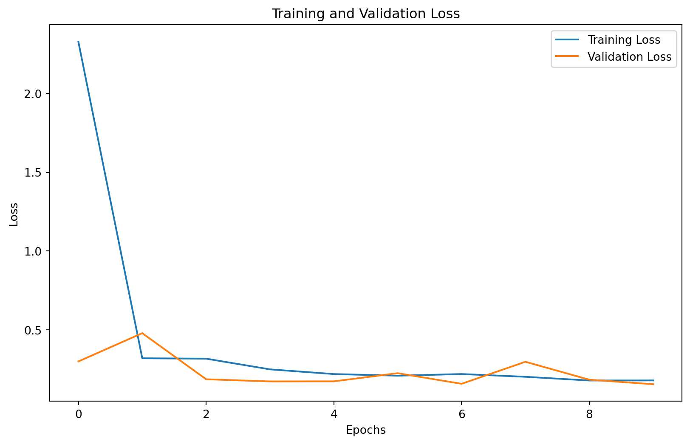
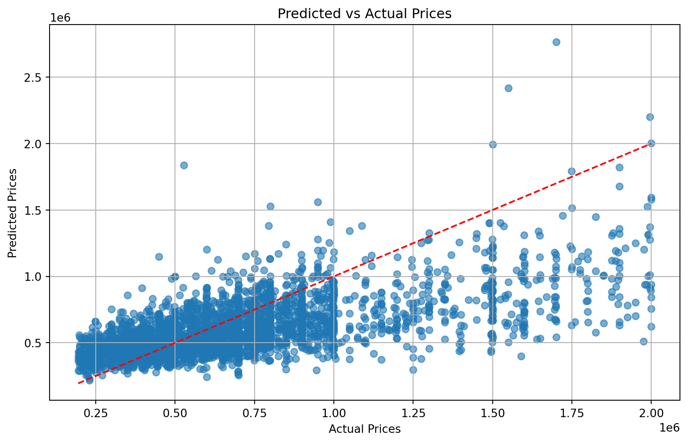
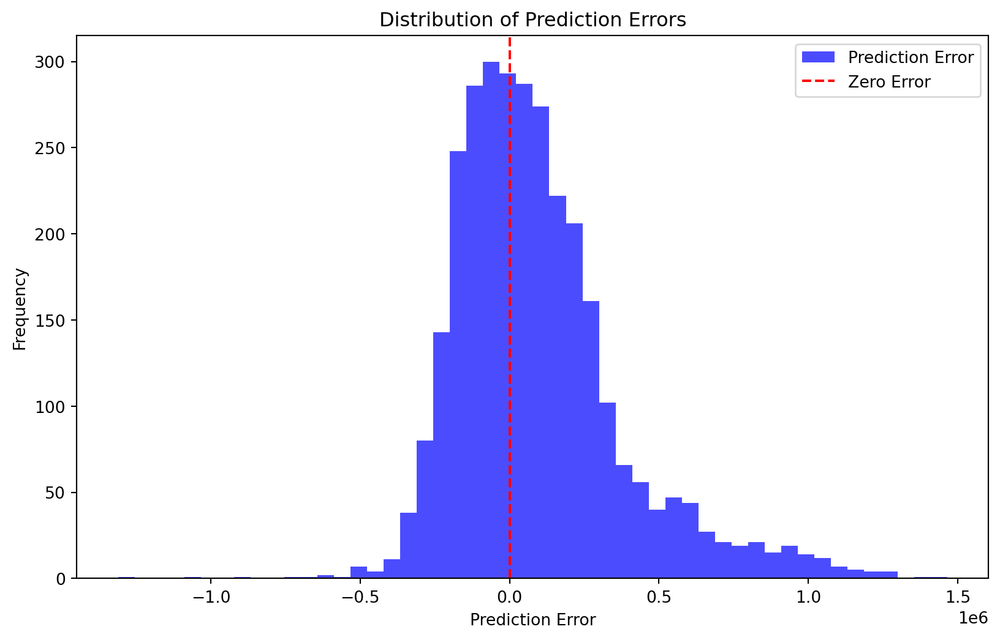
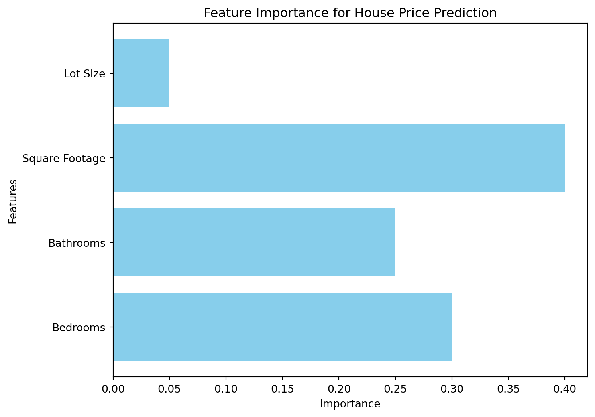

# Required libraries
import pandas as pd
import numpy as np
import os
os.environ['TF_CPP_MIN_LOG_LEVEL'] = '2'
from sklearn.model_selection import train_test_split
from sklearn.metrics import mean_squared_error, mean_absolute_error, r2_score
from sklearn.preprocessing import MinMaxScaler
from tensorflow.keras import layers, models
from tensorflow.keras.layers import Concatenate
from tensorflow.keras.callbacks import EarlyStopping, ReduceLROnPlateau
from PIL import Image
import matplotlib.pyplot as pltHouse Price Prediction with Hybrid Model
Introduction
This analysis aims to predict house prices using a hybrid model that combines structured data (e.g., number of bedrooms, square footage, etc.) and image data (pictures of the houses). We will use a Convolutional Neural Network (CNN) for the image data and a fully connected layer for the structured data, merging both models for the final prediction.
Libraries
Data Loading and Preprocessing
Structured Data
# Load structured data (CSV)
df = pd.read_csv('C:/Users/zhuan/Downloads/data/archive/socal2.csv')
# Display dataset info
print(df.info())
# Check for missing data
print(df.isnull().sum())
# Normalize structured features
structured_columns = ['bed', 'bath', 'sqft', 'n_citi']
scaler = MinMaxScaler()
df[structured_columns] = scaler.fit_transform(df[structured_columns])
# Log-transform the target variable to reduce skewness
df['price'] = np.log1p(df['price'])<class 'pandas.core.frame.DataFrame'>
RangeIndex: 15474 entries, 0 to 15473
Data columns (total 8 columns):
# Column Non-Null Count Dtype
--- ------ -------------- -----
0 image_id 15474 non-null int64
1 street 15474 non-null object
2 citi 15474 non-null object
3 n_citi 15474 non-null int64
4 bed 15474 non-null int64
5 bath 15474 non-null float64
6 sqft 15474 non-null int64
7 price 15474 non-null int64
dtypes: float64(1), int64(5), object(2)
memory usage: 967.3+ KB
None
image_id 0
street 0
citi 0
n_citi 0
bed 0
bath 0
sqft 0
price 0
dtype: int64Image Data
# Define image directory
image_dir = 'C:/Users/zhuan/Downloads/data/archive/socal_pics/'
# Function to preprocess and resize images
def preprocess_image(image_id, image_dir, target_size=(128, 128)):
img_path = os.path.join(image_dir, f'{image_id}.jpg')
if os.path.exists(img_path):
try:
img = Image.open(img_path).resize(target_size)
img_array = np.array(img) / 255.0 # Normalize pixel values
if img_array.shape == (128, 128, 3):
return img_array
else:
print(f"Image {img_path} has incorrect shape {img_array.shape}")
return None
except Exception as e:
print(f"Error processing image {img_path}: {e}")
return None
else:
print(f"Image {img_path} not found")
return None
# Preprocess all images
df['processed_images'] = df['image_id'].apply(lambda x: preprocess_image(x, image_dir))
# Drop rows where images are missing
df = df.copy()
df = df.dropna(subset=['processed_images', 'price'])
# Convert processed images and structured data to numpy arrays
X_structured = np.stack(df[structured_columns].values)
X_images = np.stack(df['processed_images'].values)
y_train = df['price'].valuesImage C:/Users/zhuan/Downloads/data/archive/socal_pics/14.jpg has incorrect shape (128, 128, 4)
Image C:/Users/zhuan/Downloads/data/archive/socal_pics/2600.jpg has incorrect shape (128, 128)
Image C:/Users/zhuan/Downloads/data/archive/socal_pics/3747.jpg has incorrect shape (128, 128, 4)
Image C:/Users/zhuan/Downloads/data/archive/socal_pics/4754.jpg has incorrect shape (128, 128)
Image C:/Users/zhuan/Downloads/data/archive/socal_pics/5524.jpg has incorrect shape (128, 128, 4)
Image C:/Users/zhuan/Downloads/data/archive/socal_pics/5728.jpg has incorrect shape (128, 128, 4)
Image C:/Users/zhuan/Downloads/data/archive/socal_pics/8886.jpg has incorrect shape (128, 128, 4)
Image C:/Users/zhuan/Downloads/data/archive/socal_pics/9081.jpg has incorrect shape (128, 128, 4)
Image C:/Users/zhuan/Downloads/data/archive/socal_pics/9194.jpg has incorrect shape (128, 128, 4)
Image C:/Users/zhuan/Downloads/data/archive/socal_pics/10000.jpg has incorrect shape (128, 128)
Image C:/Users/zhuan/Downloads/data/archive/socal_pics/12498.jpg has incorrect shape (128, 128)print(f"Shapes: X_images={X_images.shape}, X_structured={X_structured.shape}, y_train={y_train.shape}")
# Ensure no mismatch
assert X_images.shape[0] == X_structured.shape[0] == y_train.shape[0], "Mismatch in data shapes!"Shapes: X_images=(15463, 128, 128, 3), X_structured=(15463, 4), y_train=(15463,)Train-Test Split and Model Training
# Split data into training and testing sets
X_train_structured, X_test_structured, X_train_images, X_test_images, y_train, y_test = train_test_split(
X_structured, X_images, y_train, test_size=0.2, random_state=42
)
# Correct print statements
print(f"Train structured: {X_train_structured.shape}, Test structured: {X_test_structured.shape}")
print(f"Train images: {X_train_images.shape}, Test images: {X_test_images.shape}")
print(f"Train target: {y_train.shape}, Test target: {y_test.shape}")Train structured: (12370, 4), Test structured: (3093, 4)
Train images: (12370, 128, 128, 3), Test images: (3093, 128, 128, 3)
Train target: (12370,), Test target: (3093,)Hybrid Model Definition
# Define the CNN model for image data
def create_cnn(input_shape):
model = models.Sequential([
layers.Input(shape=input_shape),
layers.Conv2D(32, (3, 3), activation='relu'),
layers.MaxPooling2D((2, 2)),
layers.Conv2D(64, (3, 3), activation='relu'),
layers.MaxPooling2D((2, 2)),
layers.Conv2D(128, (3, 3), activation='relu'),
layers.MaxPooling2D((2, 2)),
layers.Flatten(),
layers.Dense(128, activation='relu')
])
return model
# Define the hybrid model
def create_hybrid_model(structure_input_shape, image_input_shape):
# Structured data model
structured_input = layers.Input(shape=structure_input_shape)
structured_dense = layers.Dense(32, activation='relu')(structured_input)
# CNN model for image data
cnn = create_cnn(image_input_shape) # 调用更新后的 CNN 模型定义
image_input = layers.Input(shape=image_input_shape)
cnn_output = cnn(image_input)
# Concatenate outputs
concatenated = Concatenate()([structured_dense, cnn_output])
# Final dense layer
output = layers.Dense(1)(concatenated)
model = models.Model(inputs=[structured_input, image_input], outputs=output)
model.compile(optimizer='adam', loss='mse', metrics=['mae'])
return model
# Create hybrid model
hybrid_model = create_hybrid_model((len(structured_columns),), (128, 128, 3))##Train the model
# Train the hybrid model
history = hybrid_model.fit(
[X_train_structured, X_train_images],
y_train,
validation_data=([X_test_structured, X_test_images], y_test),
epochs=10,
batch_size=32
)Epoch 1/10 1/387 ━━━━━━━━━━━━━━━━━━━━ 25:00 4s/step - loss: 180.8290 - mae: 13.4348 2/387 ━━━━━━━━━━━━━━━━━━━━ 53s 139ms/step - loss: 144.3056 - mae: 11.5251 3/387 ━━━━━━━━━━━━━━━━━━━━ 53s 140ms/step - loss: 133.0934 - mae: 10.9726 4/387 ━━━━━━━━━━━━━━━━━━━━ 54s 143ms/step - loss: 121.0192 - mae: 10.2150 5/387 ━━━━━━━━━━━━━━━━━━━━ 53s 140ms/step - loss: 111.1383 - mae: 9.6065 6/387 ━━━━━━━━━━━━━━━━━━━━ 52s 139ms/step - loss: 103.6196 - mae: 9.1708 7/387 ━━━━━━━━━━━━━━━━━━━━ 53s 140ms/step - loss: 97.8044 - mae: 8.8497 8/387 ━━━━━━━━━━━━━━━━━━━━ 52s 139ms/step - loss: 92.9076 - mae: 8.5814 9/387 ━━━━━━━━━━━━━━━━━━━━ 52s 140ms/step - loss: 88.5005 - mae: 8.3276 10/387 ━━━━━━━━━━━━━━━━━━━━ 52s 139ms/step - loss: 84.4607 - mae: 8.0722 11/387 ━━━━━━━━━━━━━━━━━━━━ 51s 138ms/step - loss: 80.8734 - mae: 7.8428 12/387 ━━━━━━━━━━━━━━━━━━━━ 51s 138ms/step - loss: 77.6453 - mae: 7.6328 13/387 ━━━━━━━━━━━━━━━━━━━━ 51s 138ms/step - loss: 74.7270 - mae: 7.4406 14/387 ━━━━━━━━━━━━━━━━━━━━ 51s 138ms/step - loss: 72.0388 - mae: 7.2568 15/387 ━━━━━━━━━━━━━━━━━━━━ 50s 137ms/step - loss: 69.5521 - mae: 7.0808 16/387 ━━━━━━━━━━━━━━━━━━━━ 50s 136ms/step - loss: 67.2620 - mae: 6.9165 17/387 ━━━━━━━━━━━━━━━━━━━━ 50s 136ms/step - loss: 65.1585 - mae: 6.7655 18/387 ━━━━━━━━━━━━━━━━━━━━ 49s 135ms/step - loss: 63.2173 - mae: 6.6259 19/387 ━━━━━━━━━━━━━━━━━━━━ 49s 134ms/step - loss: 61.4057 - mae: 6.4930 20/387 ━━━━━━━━━━━━━━━━━━━━ 49s 134ms/step - loss: 59.7123 - mae: 6.3671 21/387 ━━━━━━━━━━━━━━━━━━━━ 48s 134ms/step - loss: 58.1227 - mae: 6.2470 22/387 ━━━━━━━━━━━━━━━━━━━━ 48s 133ms/step - loss: 56.6316 - mae: 6.1334 23/387 ━━━━━━━━━━━━━━━━━━━━ 48s 133ms/step - loss: 55.2334 - mae: 6.0263 24/387 ━━━━━━━━━━━━━━━━━━━━ 48s 133ms/step - loss: 53.9180 - mae: 5.9249 25/387 ━━━━━━━━━━━━━━━━━━━━ 47s 132ms/step - loss: 52.6768 - mae: 5.8287 26/387 ━━━━━━━━━━━━━━━━━━━━ 47s 132ms/step - loss: 51.5017 - mae: 5.7367 27/387 ━━━━━━━━━━━━━━━━━━━━ 47s 132ms/step - loss: 50.3882 - mae: 5.6487 28/387 ━━━━━━━━━━━━━━━━━━━━ 47s 132ms/step - loss: 49.3310 - mae: 5.5646 29/387 ━━━━━━━━━━━━━━━━━━━━ 47s 132ms/step - loss: 48.3265 - mae: 5.4844 30/387 ━━━━━━━━━━━━━━━━━━━━ 46s 132ms/step - loss: 47.3703 - mae: 5.4075 31/387 ━━━━━━━━━━━━━━━━━━━━ 46s 132ms/step - loss: 46.4579 - mae: 5.3335 32/387 ━━━━━━━━━━━━━━━━━━━━ 46s 131ms/step - loss: 45.5872 - mae: 5.2625 33/387 ━━━━━━━━━━━━━━━━━━━━ 46s 131ms/step - loss: 44.7549 - mae: 5.1943 34/387 ━━━━━━━━━━━━━━━━━━━━ 46s 131ms/step - loss: 43.9579 - mae: 5.1287 35/387 ━━━━━━━━━━━━━━━━━━━━ 46s 131ms/step - loss: 43.1942 - mae: 5.0654 36/387 ━━━━━━━━━━━━━━━━━━━━ 45s 131ms/step - loss: 42.4622 - mae: 5.0045 37/387 ━━━━━━━━━━━━━━━━━━━━ 45s 131ms/step - loss: 41.7598 - mae: 4.9459 38/387 ━━━━━━━━━━━━━━━━━━━━ 45s 131ms/step - loss: 41.0849 - mae: 4.8893 39/387 ━━━━━━━━━━━━━━━━━━━━ 45s 131ms/step - loss: 40.4356 - mae: 4.8346 40/387 ━━━━━━━━━━━━━━━━━━━━ 45s 131ms/step - loss: 39.8103 - mae: 4.7815 41/387 ━━━━━━━━━━━━━━━━━━━━ 45s 131ms/step - loss: 39.2073 - mae: 4.7299 42/387 ━━━━━━━━━━━━━━━━━━━━ 45s 131ms/step - loss: 38.6263 - mae: 4.6802 43/387 ━━━━━━━━━━━━━━━━━━━━ 44s 130ms/step - loss: 38.0658 - mae: 4.6320 44/387 ━━━━━━━━━━━━━━━━━━━━ 44s 130ms/step - loss: 37.5241 - mae: 4.5852 45/387 ━━━━━━━━━━━━━━━━━━━━ 44s 130ms/step - loss: 37.0005 - mae: 4.5397 46/387 ━━━━━━━━━━━━━━━━━━━━ 44s 130ms/step - loss: 36.4942 - mae: 4.4956 47/387 ━━━━━━━━━━━━━━━━━━━━ 44s 130ms/step - loss: 36.0038 - mae: 4.4526 48/387 ━━━━━━━━━━━━━━━━━━━━ 44s 130ms/step - loss: 35.5285 - mae: 4.4107 49/387 ━━━━━━━━━━━━━━━━━━━━ 43s 130ms/step - loss: 35.0683 - mae: 4.3700 50/387 ━━━━━━━━━━━━━━━━━━━━ 43s 130ms/step - loss: 34.6225 - mae: 4.3305 51/387 ━━━━━━━━━━━━━━━━━━━━ 43s 130ms/step - loss: 34.1905 - mae: 4.2922 52/387 ━━━━━━━━━━━━━━━━━━━━ 43s 130ms/step - loss: 33.7710 - mae: 4.2549 53/387 ━━━━━━━━━━━━━━━━━━━━ 43s 130ms/step - loss: 33.3639 - mae: 4.2186 54/387 ━━━━━━━━━━━━━━━━━━━━ 43s 130ms/step - loss: 32.9682 - mae: 4.1832 55/387 ━━━━━━━━━━━━━━━━━━━━ 43s 130ms/step - loss: 32.5836 - mae: 4.1486 56/387 ━━━━━━━━━━━━━━━━━━━━ 42s 130ms/step - loss: 32.2095 - mae: 4.1148 57/387 ━━━━━━━━━━━━━━━━━━━━ 42s 130ms/step - loss: 31.8458 - mae: 4.0820 58/387 ━━━━━━━━━━━━━━━━━━━━ 42s 130ms/step - loss: 31.4917 - mae: 4.0500 59/387 ━━━━━━━━━━━━━━━━━━━━ 42s 130ms/step - loss: 31.1469 - mae: 4.0186 60/387 ━━━━━━━━━━━━━━━━━━━━ 42s 130ms/step - loss: 30.8107 - mae: 3.9880 61/387 ━━━━━━━━━━━━━━━━━━━━ 42s 130ms/step - loss: 30.4830 - mae: 3.9580 62/387 ━━━━━━━━━━━━━━━━━━━━ 42s 130ms/step - loss: 30.1632 - mae: 3.9286 63/387 ━━━━━━━━━━━━━━━━━━━━ 41s 130ms/step - loss: 29.8513 - mae: 3.8998 64/387 ━━━━━━━━━━━━━━━━━━━━ 41s 129ms/step - loss: 29.5468 - mae: 3.8716 65/387 ━━━━━━━━━━━━━━━━━━━━ 41s 129ms/step - loss: 29.2497 - mae: 3.8441 66/387 ━━━━━━━━━━━━━━━━━━━━ 41s 129ms/step - loss: 28.9596 - mae: 3.8171 67/387 ━━━━━━━━━━━━━━━━━━━━ 41s 129ms/step - loss: 28.6762 - mae: 3.7906 68/387 ━━━━━━━━━━━━━━━━━━━━ 41s 129ms/step - loss: 28.3993 - mae: 3.7648 69/387 ━━━━━━━━━━━━━━━━━━━━ 41s 130ms/step - loss: 28.1286 - mae: 3.7394 70/387 ━━━━━━━━━━━━━━━━━━━━ 41s 130ms/step - loss: 27.8639 - mae: 3.7145 71/387 ━━━━━━━━━━━━━━━━━━━━ 40s 130ms/step - loss: 27.6052 - mae: 3.6902 72/387 ━━━━━━━━━━━━━━━━━━━━ 40s 130ms/step - loss: 27.3522 - mae: 3.6663 73/387 ━━━━━━━━━━━━━━━━━━━━ 40s 130ms/step - loss: 27.1046 - mae: 3.6429 74/387 ━━━━━━━━━━━━━━━━━━━━ 40s 130ms/step - loss: 26.8622 - mae: 3.6199 75/387 ━━━━━━━━━━━━━━━━━━━━ 40s 130ms/step - loss: 26.6247 - mae: 3.5973 76/387 ━━━━━━━━━━━━━━━━━━━━ 40s 130ms/step - loss: 26.3920 - mae: 3.5751 77/387 ━━━━━━━━━━━━━━━━━━━━ 40s 130ms/step - loss: 26.1641 - mae: 3.5533 78/387 ━━━━━━━━━━━━━━━━━━━━ 40s 130ms/step - loss: 25.9408 - mae: 3.5319 79/387 ━━━━━━━━━━━━━━━━━━━━ 40s 130ms/step - loss: 25.7219 - mae: 3.5109 80/387 ━━━━━━━━━━━━━━━━━━━━ 39s 130ms/step - loss: 25.5073 - mae: 3.4902 81/387 ━━━━━━━━━━━━━━━━━━━━ 39s 130ms/step - loss: 25.2969 - mae: 3.4699 82/387 ━━━━━━━━━━━━━━━━━━━━ 39s 130ms/step - loss: 25.0906 - mae: 3.4499 83/387 ━━━━━━━━━━━━━━━━━━━━ 39s 130ms/step - loss: 24.8883 - mae: 3.4303 84/387 ━━━━━━━━━━━━━━━━━━━━ 39s 130ms/step - loss: 24.6898 - mae: 3.4111 85/387 ━━━━━━━━━━━━━━━━━━━━ 39s 130ms/step - loss: 24.4951 - mae: 3.3922 86/387 ━━━━━━━━━━━━━━━━━━━━ 39s 130ms/step - loss: 24.3040 - mae: 3.3736 87/387 ━━━━━━━━━━━━━━━━━━━━ 38s 130ms/step - loss: 24.1164 - mae: 3.3553 88/387 ━━━━━━━━━━━━━━━━━━━━ 38s 130ms/step - loss: 23.9323 - mae: 3.3373 89/387 ━━━━━━━━━━━━━━━━━━━━ 38s 130ms/step - loss: 23.7514 - mae: 3.3196 90/387 ━━━━━━━━━━━━━━━━━━━━ 38s 130ms/step - loss: 23.5739 - mae: 3.3023 91/387 ━━━━━━━━━━━━━━━━━━━━ 38s 129ms/step - loss: 23.3994 - mae: 3.2852 92/387 ━━━━━━━━━━━━━━━━━━━━ 38s 130ms/step - loss: 23.2280 - mae: 3.2684 93/387 ━━━━━━━━━━━━━━━━━━━━ 38s 130ms/step - loss: 23.0596 - mae: 3.2519 94/387 ━━━━━━━━━━━━━━━━━━━━ 37s 129ms/step - loss: 22.8941 - mae: 3.2356 95/387 ━━━━━━━━━━━━━━━━━━━━ 37s 129ms/step - loss: 22.7313 - mae: 3.2195 96/387 ━━━━━━━━━━━━━━━━━━━━ 37s 130ms/step - loss: 22.5712 - mae: 3.2037 97/387 ━━━━━━━━━━━━━━━━━━━━ 37s 129ms/step - loss: 22.4137 - mae: 3.1881 98/387 ━━━━━━━━━━━━━━━━━━━━ 37s 130ms/step - loss: 22.2588 - mae: 3.1727 99/387 ━━━━━━━━━━━━━━━━━━━━ 37s 130ms/step - loss: 22.1063 - mae: 3.1576100/387 ━━━━━━━━━━━━━━━━━━━━ 37s 130ms/step - loss: 21.9563 - mae: 3.1426101/387 ━━━━━━━━━━━━━━━━━━━━ 37s 130ms/step - loss: 21.8087 - mae: 3.1279102/387 ━━━━━━━━━━━━━━━━━━━━ 36s 130ms/step - loss: 21.6633 - mae: 3.1133103/387 ━━━━━━━━━━━━━━━━━━━━ 36s 129ms/step - loss: 21.5203 - mae: 3.0990104/387 ━━━━━━━━━━━━━━━━━━━━ 36s 129ms/step - loss: 21.3795 - mae: 3.0849105/387 ━━━━━━━━━━━━━━━━━━━━ 36s 129ms/step - loss: 21.2408 - mae: 3.0710106/387 ━━━━━━━━━━━━━━━━━━━━ 36s 129ms/step - loss: 21.1042 - mae: 3.0573107/387 ━━━━━━━━━━━━━━━━━━━━ 36s 129ms/step - loss: 20.9697 - mae: 3.0437108/387 ━━━━━━━━━━━━━━━━━━━━ 36s 129ms/step - loss: 20.8372 - mae: 3.0304109/387 ━━━━━━━━━━━━━━━━━━━━ 35s 129ms/step - loss: 20.7067 - mae: 3.0172110/387 ━━━━━━━━━━━━━━━━━━━━ 35s 129ms/step - loss: 20.5781 - mae: 3.0042111/387 ━━━━━━━━━━━━━━━━━━━━ 35s 129ms/step - loss: 20.4513 - mae: 2.9913112/387 ━━━━━━━━━━━━━━━━━━━━ 35s 129ms/step - loss: 20.3263 - mae: 2.9786113/387 ━━━━━━━━━━━━━━━━━━━━ 35s 129ms/step - loss: 20.2031 - mae: 2.9661114/387 ━━━━━━━━━━━━━━━━━━━━ 35s 129ms/step - loss: 20.0816 - mae: 2.9537115/387 ━━━━━━━━━━━━━━━━━━━━ 35s 129ms/step - loss: 19.9618 - mae: 2.9415116/387 ━━━━━━━━━━━━━━━━━━━━ 34s 129ms/step - loss: 19.8437 - mae: 2.9294117/387 ━━━━━━━━━━━━━━━━━━━━ 34s 129ms/step - loss: 19.7272 - mae: 2.9175118/387 ━━━━━━━━━━━━━━━━━━━━ 34s 129ms/step - loss: 19.6124 - mae: 2.9057119/387 ━━━━━━━━━━━━━━━━━━━━ 34s 129ms/step - loss: 19.4991 - mae: 2.8941120/387 ━━━━━━━━━━━━━━━━━━━━ 34s 129ms/step - loss: 19.3874 - mae: 2.8826121/387 ━━━━━━━━━━━━━━━━━━━━ 34s 129ms/step - loss: 19.2772 - mae: 2.8713122/387 ━━━━━━━━━━━━━━━━━━━━ 34s 129ms/step - loss: 19.1684 - mae: 2.8601123/387 ━━━━━━━━━━━━━━━━━━━━ 34s 129ms/step - loss: 19.0610 - mae: 2.8490124/387 ━━━━━━━━━━━━━━━━━━━━ 33s 129ms/step - loss: 18.9552 - mae: 2.8381125/387 ━━━━━━━━━━━━━━━━━━━━ 33s 129ms/step - loss: 18.8507 - mae: 2.8273126/387 ━━━━━━━━━━━━━━━━━━━━ 33s 129ms/step - loss: 18.7475 - mae: 2.8166127/387 ━━━━━━━━━━━━━━━━━━━━ 33s 129ms/step - loss: 18.6457 - mae: 2.8061128/387 ━━━━━━━━━━━━━━━━━━━━ 33s 129ms/step - loss: 18.5452 - mae: 2.7957129/387 ━━━━━━━━━━━━━━━━━━━━ 33s 129ms/step - loss: 18.4460 - mae: 2.7854130/387 ━━━━━━━━━━━━━━━━━━━━ 33s 129ms/step - loss: 18.3480 - mae: 2.7752131/387 ━━━━━━━━━━━━━━━━━━━━ 33s 129ms/step - loss: 18.2512 - mae: 2.7652132/387 ━━━━━━━━━━━━━━━━━━━━ 32s 129ms/step - loss: 18.1557 - mae: 2.7553133/387 ━━━━━━━━━━━━━━━━━━━━ 32s 129ms/step - loss: 18.0613 - mae: 2.7454134/387 ━━━━━━━━━━━━━━━━━━━━ 32s 129ms/step - loss: 17.9681 - mae: 2.7357135/387 ━━━━━━━━━━━━━━━━━━━━ 32s 129ms/step - loss: 17.8761 - mae: 2.7262136/387 ━━━━━━━━━━━━━━━━━━━━ 32s 129ms/step - loss: 17.7851 - mae: 2.7167137/387 ━━━━━━━━━━━━━━━━━━━━ 32s 129ms/step - loss: 17.6953 - mae: 2.7073138/387 ━━━━━━━━━━━━━━━━━━━━ 32s 129ms/step - loss: 17.6066 - mae: 2.6981139/387 ━━━━━━━━━━━━━━━━━━━━ 32s 129ms/step - loss: 17.5189 - mae: 2.6889140/387 ━━━━━━━━━━━━━━━━━━━━ 31s 129ms/step - loss: 17.4323 - mae: 2.6799141/387 ━━━━━━━━━━━━━━━━━━━━ 31s 129ms/step - loss: 17.3466 - mae: 2.6709142/387 ━━━━━━━━━━━━━━━━━━━━ 31s 129ms/step - loss: 17.2620 - mae: 2.6621143/387 ━━━━━━━━━━━━━━━━━━━━ 31s 129ms/step - loss: 17.1782 - mae: 2.6533144/387 ━━━━━━━━━━━━━━━━━━━━ 31s 129ms/step - loss: 17.0955 - mae: 2.6446145/387 ━━━━━━━━━━━━━━━━━━━━ 31s 129ms/step - loss: 17.0136 - mae: 2.6360146/387 ━━━━━━━━━━━━━━━━━━━━ 31s 129ms/step - loss: 16.9327 - mae: 2.6275147/387 ━━━━━━━━━━━━━━━━━━━━ 30s 129ms/step - loss: 16.8527 - mae: 2.6190148/387 ━━━━━━━━━━━━━━━━━━━━ 30s 129ms/step - loss: 16.7735 - mae: 2.6107149/387 ━━━━━━━━━━━━━━━━━━━━ 30s 129ms/step - loss: 16.6953 - mae: 2.6024150/387 ━━━━━━━━━━━━━━━━━━━━ 30s 129ms/step - loss: 16.6178 - mae: 2.5942151/387 ━━━━━━━━━━━━━━━━━━━━ 30s 129ms/step - loss: 16.5412 - mae: 2.5861152/387 ━━━━━━━━━━━━━━━━━━━━ 30s 129ms/step - loss: 16.4655 - mae: 2.5781153/387 ━━━━━━━━━━━━━━━━━━━━ 30s 129ms/step - loss: 16.3905 - mae: 2.5701154/387 ━━━━━━━━━━━━━━━━━━━━ 30s 129ms/step - loss: 16.3164 - mae: 2.5622155/387 ━━━━━━━━━━━━━━━━━━━━ 29s 129ms/step - loss: 16.2430 - mae: 2.5544156/387 ━━━━━━━━━━━━━━━━━━━━ 29s 129ms/step - loss: 16.1704 - mae: 2.5467157/387 ━━━━━━━━━━━━━━━━━━━━ 29s 129ms/step - loss: 16.0986 - mae: 2.5390158/387 ━━━━━━━━━━━━━━━━━━━━ 29s 129ms/step - loss: 16.0275 - mae: 2.5315159/387 ━━━━━━━━━━━━━━━━━━━━ 29s 129ms/step - loss: 15.9572 - mae: 2.5239160/387 ━━━━━━━━━━━━━━━━━━━━ 29s 129ms/step - loss: 15.8876 - mae: 2.5165161/387 ━━━━━━━━━━━━━━━━━━━━ 29s 129ms/step - loss: 15.8186 - mae: 2.5091162/387 ━━━━━━━━━━━━━━━━━━━━ 29s 129ms/step - loss: 15.7504 - mae: 2.5018163/387 ━━━━━━━━━━━━━━━━━━━━ 28s 129ms/step - loss: 15.6829 - mae: 2.4946164/387 ━━━━━━━━━━━━━━━━━━━━ 28s 129ms/step - loss: 15.6160 - mae: 2.4874165/387 ━━━━━━━━━━━━━━━━━━━━ 28s 129ms/step - loss: 15.5498 - mae: 2.4803166/387 ━━━━━━━━━━━━━━━━━━━━ 28s 129ms/step - loss: 15.4842 - mae: 2.4732167/387 ━━━━━━━━━━━━━━━━━━━━ 28s 129ms/step - loss: 15.4193 - mae: 2.4662168/387 ━━━━━━━━━━━━━━━━━━━━ 28s 129ms/step - loss: 15.3550 - mae: 2.4592169/387 ━━━━━━━━━━━━━━━━━━━━ 28s 129ms/step - loss: 15.2913 - mae: 2.4523170/387 ━━━━━━━━━━━━━━━━━━━━ 28s 129ms/step - loss: 15.2282 - mae: 2.4455171/387 ━━━━━━━━━━━━━━━━━━━━ 27s 129ms/step - loss: 15.1657 - mae: 2.4387172/387 ━━━━━━━━━━━━━━━━━━━━ 27s 129ms/step - loss: 15.1039 - mae: 2.4320173/387 ━━━━━━━━━━━━━━━━━━━━ 27s 129ms/step - loss: 15.0426 - mae: 2.4253174/387 ━━━━━━━━━━━━━━━━━━━━ 27s 129ms/step - loss: 14.9818 - mae: 2.4187175/387 ━━━━━━━━━━━━━━━━━━━━ 27s 129ms/step - loss: 14.9217 - mae: 2.4121176/387 ━━━━━━━━━━━━━━━━━━━━ 27s 129ms/step - loss: 14.8621 - mae: 2.4056177/387 ━━━━━━━━━━━━━━━━━━━━ 27s 129ms/step - loss: 14.8031 - mae: 2.3992178/387 ━━━━━━━━━━━━━━━━━━━━ 26s 129ms/step - loss: 14.7446 - mae: 2.3928179/387 ━━━━━━━━━━━━━━━━━━━━ 26s 129ms/step - loss: 14.6866 - mae: 2.3864180/387 ━━━━━━━━━━━━━━━━━━━━ 26s 129ms/step - loss: 14.6292 - mae: 2.3801181/387 ━━━━━━━━━━━━━━━━━━━━ 26s 129ms/step - loss: 14.5723 - mae: 2.3739182/387 ━━━━━━━━━━━━━━━━━━━━ 26s 129ms/step - loss: 14.5158 - mae: 2.3677183/387 ━━━━━━━━━━━━━━━━━━━━ 26s 129ms/step - loss: 14.4600 - mae: 2.3615184/387 ━━━━━━━━━━━━━━━━━━━━ 26s 129ms/step - loss: 14.4046 - mae: 2.3554185/387 ━━━━━━━━━━━━━━━━━━━━ 26s 129ms/step - loss: 14.3497 - mae: 2.3494186/387 ━━━━━━━━━━━━━━━━━━━━ 25s 129ms/step - loss: 14.2953 - mae: 2.3434187/387 ━━━━━━━━━━━━━━━━━━━━ 25s 129ms/step - loss: 14.2415 - mae: 2.3375188/387 ━━━━━━━━━━━━━━━━━━━━ 25s 129ms/step - loss: 14.1881 - mae: 2.3316189/387 ━━━━━━━━━━━━━━━━━━━━ 25s 129ms/step - loss: 14.1352 - mae: 2.3258190/387 ━━━━━━━━━━━━━━━━━━━━ 25s 129ms/step - loss: 14.0828 - mae: 2.3200191/387 ━━━━━━━━━━━━━━━━━━━━ 25s 129ms/step - loss: 14.0309 - mae: 2.3143192/387 ━━━━━━━━━━━━━━━━━━━━ 25s 129ms/step - loss: 13.9794 - mae: 2.3086193/387 ━━━━━━━━━━━━━━━━━━━━ 25s 129ms/step - loss: 13.9284 - mae: 2.3030194/387 ━━━━━━━━━━━━━━━━━━━━ 24s 129ms/step - loss: 13.8777 - mae: 2.2974195/387 ━━━━━━━━━━━━━━━━━━━━ 24s 129ms/step - loss: 13.8276 - mae: 2.2919196/387 ━━━━━━━━━━━━━━━━━━━━ 24s 129ms/step - loss: 13.7778 - mae: 2.2864197/387 ━━━━━━━━━━━━━━━━━━━━ 24s 129ms/step - loss: 13.7285 - mae: 2.2809198/387 ━━━━━━━━━━━━━━━━━━━━ 24s 129ms/step - loss: 13.6796 - mae: 2.2755199/387 ━━━━━━━━━━━━━━━━━━━━ 24s 129ms/step - loss: 13.6311 - mae: 2.2702200/387 ━━━━━━━━━━━━━━━━━━━━ 24s 129ms/step - loss: 13.5830 - mae: 2.2648201/387 ━━━━━━━━━━━━━━━━━━━━ 23s 129ms/step - loss: 13.5354 - mae: 2.2596202/387 ━━━━━━━━━━━━━━━━━━━━ 23s 129ms/step - loss: 13.4881 - mae: 2.2543203/387 ━━━━━━━━━━━━━━━━━━━━ 23s 129ms/step - loss: 13.4412 - mae: 2.2491204/387 ━━━━━━━━━━━━━━━━━━━━ 23s 129ms/step - loss: 13.3947 - mae: 2.2440205/387 ━━━━━━━━━━━━━━━━━━━━ 23s 129ms/step - loss: 13.3485 - mae: 2.2389206/387 ━━━━━━━━━━━━━━━━━━━━ 23s 129ms/step - loss: 13.3028 - mae: 2.2338207/387 ━━━━━━━━━━━━━━━━━━━━ 23s 129ms/step - loss: 13.2574 - mae: 2.2288208/387 ━━━━━━━━━━━━━━━━━━━━ 23s 129ms/step - loss: 13.2124 - mae: 2.2238209/387 ━━━━━━━━━━━━━━━━━━━━ 22s 129ms/step - loss: 13.1677 - mae: 2.2188210/387 ━━━━━━━━━━━━━━━━━━━━ 22s 129ms/step - loss: 13.1234 - mae: 2.2139211/387 ━━━━━━━━━━━━━━━━━━━━ 22s 129ms/step - loss: 13.0794 - mae: 2.2090212/387 ━━━━━━━━━━━━━━━━━━━━ 22s 129ms/step - loss: 13.0358 - mae: 2.2041213/387 ━━━━━━━━━━━━━━━━━━━━ 22s 129ms/step - loss: 12.9925 - mae: 2.1993214/387 ━━━━━━━━━━━━━━━━━━━━ 22s 129ms/step - loss: 12.9496 - mae: 2.1945215/387 ━━━━━━━━━━━━━━━━━━━━ 22s 129ms/step - loss: 12.9070 - mae: 2.1898216/387 ━━━━━━━━━━━━━━━━━━━━ 22s 129ms/step - loss: 12.8647 - mae: 2.1851217/387 ━━━━━━━━━━━━━━━━━━━━ 21s 129ms/step - loss: 12.8228 - mae: 2.1804218/387 ━━━━━━━━━━━━━━━━━━━━ 21s 129ms/step - loss: 12.7812 - mae: 2.1757219/387 ━━━━━━━━━━━━━━━━━━━━ 21s 129ms/step - loss: 12.7399 - mae: 2.1711220/387 ━━━━━━━━━━━━━━━━━━━━ 21s 129ms/step - loss: 12.6989 - mae: 2.1665221/387 ━━━━━━━━━━━━━━━━━━━━ 21s 129ms/step - loss: 12.6582 - mae: 2.1620222/387 ━━━━━━━━━━━━━━━━━━━━ 21s 129ms/step - loss: 12.6178 - mae: 2.1574223/387 ━━━━━━━━━━━━━━━━━━━━ 21s 129ms/step - loss: 12.5777 - mae: 2.1529224/387 ━━━━━━━━━━━━━━━━━━━━ 21s 129ms/step - loss: 12.5379 - mae: 2.1485225/387 ━━━━━━━━━━━━━━━━━━━━ 20s 129ms/step - loss: 12.4984 - mae: 2.1440226/387 ━━━━━━━━━━━━━━━━━━━━ 20s 129ms/step - loss: 12.4592 - mae: 2.1396227/387 ━━━━━━━━━━━━━━━━━━━━ 20s 129ms/step - loss: 12.4202 - mae: 2.1352228/387 ━━━━━━━━━━━━━━━━━━━━ 20s 129ms/step - loss: 12.3816 - mae: 2.1308229/387 ━━━━━━━━━━━━━━━━━━━━ 20s 129ms/step - loss: 12.3432 - mae: 2.1265230/387 ━━━━━━━━━━━━━━━━━━━━ 20s 129ms/step - loss: 12.3051 - mae: 2.1222231/387 ━━━━━━━━━━━━━━━━━━━━ 20s 129ms/step - loss: 12.2673 - mae: 2.1179232/387 ━━━━━━━━━━━━━━━━━━━━ 19s 129ms/step - loss: 12.2297 - mae: 2.1137233/387 ━━━━━━━━━━━━━━━━━━━━ 19s 129ms/step - loss: 12.1924 - mae: 2.1094234/387 ━━━━━━━━━━━━━━━━━━━━ 19s 129ms/step - loss: 12.1554 - mae: 2.1052235/387 ━━━━━━━━━━━━━━━━━━━━ 19s 129ms/step - loss: 12.1187 - mae: 2.1010236/387 ━━━━━━━━━━━━━━━━━━━━ 19s 129ms/step - loss: 12.0822 - mae: 2.0969237/387 ━━━━━━━━━━━━━━━━━━━━ 19s 129ms/step - loss: 12.0459 - mae: 2.0928238/387 ━━━━━━━━━━━━━━━━━━━━ 19s 129ms/step - loss: 12.0099 - mae: 2.0886239/387 ━━━━━━━━━━━━━━━━━━━━ 19s 129ms/step - loss: 11.9741 - mae: 2.0846240/387 ━━━━━━━━━━━━━━━━━━━━ 18s 129ms/step - loss: 11.9386 - mae: 2.0805241/387 ━━━━━━━━━━━━━━━━━━━━ 18s 129ms/step - loss: 11.9034 - mae: 2.0765242/387 ━━━━━━━━━━━━━━━━━━━━ 18s 129ms/step - loss: 11.8683 - mae: 2.0725243/387 ━━━━━━━━━━━━━━━━━━━━ 18s 129ms/step - loss: 11.8336 - mae: 2.0685244/387 ━━━━━━━━━━━━━━━━━━━━ 18s 129ms/step - loss: 11.7990 - mae: 2.0645245/387 ━━━━━━━━━━━━━━━━━━━━ 18s 129ms/step - loss: 11.7647 - mae: 2.0605246/387 ━━━━━━━━━━━━━━━━━━━━ 18s 129ms/step - loss: 11.7306 - mae: 2.0566247/387 ━━━━━━━━━━━━━━━━━━━━ 18s 129ms/step - loss: 11.6967 - mae: 2.0527248/387 ━━━━━━━━━━━━━━━━━━━━ 17s 129ms/step - loss: 11.6631 - mae: 2.0488249/387 ━━━━━━━━━━━━━━━━━━━━ 17s 129ms/step - loss: 11.6296 - mae: 2.0450250/387 ━━━━━━━━━━━━━━━━━━━━ 17s 129ms/step - loss: 11.5964 - mae: 2.0411251/387 ━━━━━━━━━━━━━━━━━━━━ 17s 129ms/step - loss: 11.5635 - mae: 2.0373252/387 ━━━━━━━━━━━━━━━━━━━━ 17s 129ms/step - loss: 11.5307 - mae: 2.0335253/387 ━━━━━━━━━━━━━━━━━━━━ 17s 129ms/step - loss: 11.4981 - mae: 2.0297254/387 ━━━━━━━━━━━━━━━━━━━━ 17s 129ms/step - loss: 11.4658 - mae: 2.0260255/387 ━━━━━━━━━━━━━━━━━━━━ 17s 129ms/step - loss: 11.4336 - mae: 2.0222256/387 ━━━━━━━━━━━━━━━━━━━━ 16s 129ms/step - loss: 11.4017 - mae: 2.0185257/387 ━━━━━━━━━━━━━━━━━━━━ 16s 129ms/step - loss: 11.3700 - mae: 2.0148258/387 ━━━━━━━━━━━━━━━━━━━━ 16s 129ms/step - loss: 11.3385 - mae: 2.0112259/387 ━━━━━━━━━━━━━━━━━━━━ 16s 129ms/step - loss: 11.3072 - mae: 2.0075260/387 ━━━━━━━━━━━━━━━━━━━━ 16s 129ms/step - loss: 11.2760 - mae: 2.0039261/387 ━━━━━━━━━━━━━━━━━━━━ 16s 129ms/step - loss: 11.2451 - mae: 2.0003262/387 ━━━━━━━━━━━━━━━━━━━━ 16s 129ms/step - loss: 11.2144 - mae: 1.9967263/387 ━━━━━━━━━━━━━━━━━━━━ 15s 129ms/step - loss: 11.1839 - mae: 1.9931264/387 ━━━━━━━━━━━━━━━━━━━━ 15s 129ms/step - loss: 11.1535 - mae: 1.9895265/387 ━━━━━━━━━━━━━━━━━━━━ 15s 129ms/step - loss: 11.1234 - mae: 1.9860266/387 ━━━━━━━━━━━━━━━━━━━━ 15s 129ms/step - loss: 11.0934 - mae: 1.9825267/387 ━━━━━━━━━━━━━━━━━━━━ 15s 129ms/step - loss: 11.0636 - mae: 1.9790268/387 ━━━━━━━━━━━━━━━━━━━━ 15s 129ms/step - loss: 11.0340 - mae: 1.9755269/387 ━━━━━━━━━━━━━━━━━━━━ 15s 129ms/step - loss: 11.0046 - mae: 1.9720270/387 ━━━━━━━━━━━━━━━━━━━━ 15s 129ms/step - loss: 10.9754 - mae: 1.9686271/387 ━━━━━━━━━━━━━━━━━━━━ 14s 129ms/step - loss: 10.9463 - mae: 1.9651272/387 ━━━━━━━━━━━━━━━━━━━━ 14s 129ms/step - loss: 10.9174 - mae: 1.9617273/387 ━━━━━━━━━━━━━━━━━━━━ 14s 129ms/step - loss: 10.8887 - mae: 1.9583274/387 ━━━━━━━━━━━━━━━━━━━━ 14s 129ms/step - loss: 10.8602 - mae: 1.9549275/387 ━━━━━━━━━━━━━━━━━━━━ 14s 129ms/step - loss: 10.8318 - mae: 1.9516276/387 ━━━━━━━━━━━━━━━━━━━━ 14s 129ms/step - loss: 10.8036 - mae: 1.9482277/387 ━━━━━━━━━━━━━━━━━━━━ 14s 129ms/step - loss: 10.7756 - mae: 1.9449278/387 ━━━━━━━━━━━━━━━━━━━━ 14s 129ms/step - loss: 10.7478 - mae: 1.9416279/387 ━━━━━━━━━━━━━━━━━━━━ 13s 129ms/step - loss: 10.7201 - mae: 1.9383280/387 ━━━━━━━━━━━━━━━━━━━━ 13s 129ms/step - loss: 10.6926 - mae: 1.9351281/387 ━━━━━━━━━━━━━━━━━━━━ 13s 129ms/step - loss: 10.6652 - mae: 1.9318282/387 ━━━━━━━━━━━━━━━━━━━━ 13s 129ms/step - loss: 10.6380 - mae: 1.9286283/387 ━━━━━━━━━━━━━━━━━━━━ 13s 129ms/step - loss: 10.6110 - mae: 1.9253284/387 ━━━━━━━━━━━━━━━━━━━━ 13s 129ms/step - loss: 10.5841 - mae: 1.9221285/387 ━━━━━━━━━━━━━━━━━━━━ 13s 129ms/step - loss: 10.5574 - mae: 1.9189286/387 ━━━━━━━━━━━━━━━━━━━━ 13s 129ms/step - loss: 10.5308 - mae: 1.9158287/387 ━━━━━━━━━━━━━━━━━━━━ 12s 129ms/step - loss: 10.5044 - mae: 1.9126288/387 ━━━━━━━━━━━━━━━━━━━━ 12s 129ms/step - loss: 10.4782 - mae: 1.9095289/387 ━━━━━━━━━━━━━━━━━━━━ 12s 129ms/step - loss: 10.4521 - mae: 1.9064290/387 ━━━━━━━━━━━━━━━━━━━━ 12s 129ms/step - loss: 10.4262 - mae: 1.9033291/387 ━━━━━━━━━━━━━━━━━━━━ 12s 129ms/step - loss: 10.4004 - mae: 1.9002292/387 ━━━━━━━━━━━━━━━━━━━━ 12s 129ms/step - loss: 10.3747 - mae: 1.8971293/387 ━━━━━━━━━━━━━━━━━━━━ 12s 129ms/step - loss: 10.3492 - mae: 1.8941294/387 ━━━━━━━━━━━━━━━━━━━━ 11s 129ms/step - loss: 10.3239 - mae: 1.8911295/387 ━━━━━━━━━━━━━━━━━━━━ 11s 129ms/step - loss: 10.2987 - mae: 1.8880296/387 ━━━━━━━━━━━━━━━━━━━━ 11s 129ms/step - loss: 10.2736 - mae: 1.8850297/387 ━━━━━━━━━━━━━━━━━━━━ 11s 129ms/step - loss: 10.2487 - mae: 1.8821298/387 ━━━━━━━━━━━━━━━━━━━━ 11s 129ms/step - loss: 10.2240 - mae: 1.8791299/387 ━━━━━━━━━━━━━━━━━━━━ 11s 129ms/step - loss: 10.1993 - mae: 1.8761300/387 ━━━━━━━━━━━━━━━━━━━━ 11s 129ms/step - loss: 10.1748 - mae: 1.8732301/387 ━━━━━━━━━━━━━━━━━━━━ 11s 129ms/step - loss: 10.1505 - mae: 1.8703302/387 ━━━━━━━━━━━━━━━━━━━━ 10s 129ms/step - loss: 10.1262 - mae: 1.8673303/387 ━━━━━━━━━━━━━━━━━━━━ 10s 129ms/step - loss: 10.1021 - mae: 1.8644304/387 ━━━━━━━━━━━━━━━━━━━━ 10s 129ms/step - loss: 10.0782 - mae: 1.8616305/387 ━━━━━━━━━━━━━━━━━━━━ 10s 129ms/step - loss: 10.0544 - mae: 1.8587306/387 ━━━━━━━━━━━━━━━━━━━━ 10s 129ms/step - loss: 10.0307 - mae: 1.8558307/387 ━━━━━━━━━━━━━━━━━━━━ 10s 129ms/step - loss: 10.0071 - mae: 1.8530308/387 ━━━━━━━━━━━━━━━━━━━━ 10s 129ms/step - loss: 9.9837 - mae: 1.8501 309/387 ━━━━━━━━━━━━━━━━━━━━ 10s 129ms/step - loss: 9.9603 - mae: 1.8473310/387 ━━━━━━━━━━━━━━━━━━━━ 9s 129ms/step - loss: 9.9372 - mae: 1.8445 311/387 ━━━━━━━━━━━━━━━━━━━━ 9s 129ms/step - loss: 9.9141 - mae: 1.8417312/387 ━━━━━━━━━━━━━━━━━━━━ 9s 129ms/step - loss: 9.8912 - mae: 1.8390313/387 ━━━━━━━━━━━━━━━━━━━━ 9s 129ms/step - loss: 9.8684 - mae: 1.8362314/387 ━━━━━━━━━━━━━━━━━━━━ 9s 129ms/step - loss: 9.8457 - mae: 1.8335315/387 ━━━━━━━━━━━━━━━━━━━━ 9s 129ms/step - loss: 9.8231 - mae: 1.8307316/387 ━━━━━━━━━━━━━━━━━━━━ 9s 129ms/step - loss: 9.8007 - mae: 1.8280317/387 ━━━━━━━━━━━━━━━━━━━━ 9s 129ms/step - loss: 9.7784 - mae: 1.8253318/387 ━━━━━━━━━━━━━━━━━━━━ 8s 129ms/step - loss: 9.7562 - mae: 1.8226319/387 ━━━━━━━━━━━━━━━━━━━━ 8s 129ms/step - loss: 9.7341 - mae: 1.8199320/387 ━━━━━━━━━━━━━━━━━━━━ 8s 129ms/step - loss: 9.7121 - mae: 1.8173321/387 ━━━━━━━━━━━━━━━━━━━━ 8s 129ms/step - loss: 9.6903 - mae: 1.8146322/387 ━━━━━━━━━━━━━━━━━━━━ 8s 129ms/step - loss: 9.6685 - mae: 1.8120323/387 ━━━━━━━━━━━━━━━━━━━━ 8s 129ms/step - loss: 9.6469 - mae: 1.8094324/387 ━━━━━━━━━━━━━━━━━━━━ 8s 129ms/step - loss: 9.6254 - mae: 1.8067325/387 ━━━━━━━━━━━━━━━━━━━━ 7s 129ms/step - loss: 9.6040 - mae: 1.8041326/387 ━━━━━━━━━━━━━━━━━━━━ 7s 129ms/step - loss: 9.5827 - mae: 1.8016327/387 ━━━━━━━━━━━━━━━━━━━━ 7s 129ms/step - loss: 9.5615 - mae: 1.7990328/387 ━━━━━━━━━━━━━━━━━━━━ 7s 129ms/step - loss: 9.5405 - mae: 1.7964329/387 ━━━━━━━━━━━━━━━━━━━━ 7s 128ms/step - loss: 9.5195 - mae: 1.7939330/387 ━━━━━━━━━━━━━━━━━━━━ 7s 128ms/step - loss: 9.4987 - mae: 1.7913331/387 ━━━━━━━━━━━━━━━━━━━━ 7s 128ms/step - loss: 9.4779 - mae: 1.7888332/387 ━━━━━━━━━━━━━━━━━━━━ 7s 128ms/step - loss: 9.4573 - mae: 1.7863333/387 ━━━━━━━━━━━━━━━━━━━━ 6s 128ms/step - loss: 9.4368 - mae: 1.7838334/387 ━━━━━━━━━━━━━━━━━━━━ 6s 128ms/step - loss: 9.4164 - mae: 1.7813335/387 ━━━━━━━━━━━━━━━━━━━━ 6s 128ms/step - loss: 9.3961 - mae: 1.7788336/387 ━━━━━━━━━━━━━━━━━━━━ 6s 128ms/step - loss: 9.3758 - mae: 1.7764337/387 ━━━━━━━━━━━━━━━━━━━━ 6s 128ms/step - loss: 9.3557 - mae: 1.7739338/387 ━━━━━━━━━━━━━━━━━━━━ 6s 128ms/step - loss: 9.3357 - mae: 1.7715339/387 ━━━━━━━━━━━━━━━━━━━━ 6s 128ms/step - loss: 9.3158 - mae: 1.7690340/387 ━━━━━━━━━━━━━━━━━━━━ 6s 128ms/step - loss: 9.2960 - mae: 1.7666341/387 ━━━━━━━━━━━━━━━━━━━━ 5s 128ms/step - loss: 9.2763 - mae: 1.7642342/387 ━━━━━━━━━━━━━━━━━━━━ 5s 128ms/step - loss: 9.2567 - mae: 1.7618343/387 ━━━━━━━━━━━━━━━━━━━━ 5s 128ms/step - loss: 9.2372 - mae: 1.7594344/387 ━━━━━━━━━━━━━━━━━━━━ 5s 128ms/step - loss: 9.2177 - mae: 1.7570345/387 ━━━━━━━━━━━━━━━━━━━━ 5s 128ms/step - loss: 9.1984 - mae: 1.7547346/387 ━━━━━━━━━━━━━━━━━━━━ 5s 128ms/step - loss: 9.1792 - mae: 1.7523347/387 ━━━━━━━━━━━━━━━━━━━━ 5s 128ms/step - loss: 9.1601 - mae: 1.7500348/387 ━━━━━━━━━━━━━━━━━━━━ 4s 128ms/step - loss: 9.1410 - mae: 1.7477349/387 ━━━━━━━━━━━━━━━━━━━━ 4s 128ms/step - loss: 9.1221 - mae: 1.7453350/387 ━━━━━━━━━━━━━━━━━━━━ 4s 128ms/step - loss: 9.1032 - mae: 1.7430351/387 ━━━━━━━━━━━━━━━━━━━━ 4s 128ms/step - loss: 9.0844 - mae: 1.7407352/387 ━━━━━━━━━━━━━━━━━━━━ 4s 128ms/step - loss: 9.0658 - mae: 1.7384353/387 ━━━━━━━━━━━━━━━━━━━━ 4s 128ms/step - loss: 9.0472 - mae: 1.7361354/387 ━━━━━━━━━━━━━━━━━━━━ 4s 128ms/step - loss: 9.0287 - mae: 1.7339355/387 ━━━━━━━━━━━━━━━━━━━━ 4s 128ms/step - loss: 9.0102 - mae: 1.7316356/387 ━━━━━━━━━━━━━━━━━━━━ 3s 128ms/step - loss: 8.9919 - mae: 1.7293357/387 ━━━━━━━━━━━━━━━━━━━━ 3s 128ms/step - loss: 8.9737 - mae: 1.7271358/387 ━━━━━━━━━━━━━━━━━━━━ 3s 128ms/step - loss: 8.9555 - mae: 1.7249359/387 ━━━━━━━━━━━━━━━━━━━━ 3s 128ms/step - loss: 8.9375 - mae: 1.7227360/387 ━━━━━━━━━━━━━━━━━━━━ 3s 128ms/step - loss: 8.9195 - mae: 1.7204361/387 ━━━━━━━━━━━━━━━━━━━━ 3s 128ms/step - loss: 8.9016 - mae: 1.7182362/387 ━━━━━━━━━━━━━━━━━━━━ 3s 128ms/step - loss: 8.8838 - mae: 1.7161363/387 ━━━━━━━━━━━━━━━━━━━━ 3s 128ms/step - loss: 8.8661 - mae: 1.7139364/387 ━━━━━━━━━━━━━━━━━━━━ 2s 128ms/step - loss: 8.8485 - mae: 1.7117365/387 ━━━━━━━━━━━━━━━━━━━━ 2s 128ms/step - loss: 8.8309 - mae: 1.7095366/387 ━━━━━━━━━━━━━━━━━━━━ 2s 128ms/step - loss: 8.8134 - mae: 1.7074367/387 ━━━━━━━━━━━━━━━━━━━━ 2s 128ms/step - loss: 8.7960 - mae: 1.7052368/387 ━━━━━━━━━━━━━━━━━━━━ 2s 128ms/step - loss: 8.7787 - mae: 1.7031369/387 ━━━━━━━━━━━━━━━━━━━━ 2s 128ms/step - loss: 8.7615 - mae: 1.7010370/387 ━━━━━━━━━━━━━━━━━━━━ 2s 128ms/step - loss: 8.7443 - mae: 1.6988371/387 ━━━━━━━━━━━━━━━━━━━━ 2s 128ms/step - loss: 8.7272 - mae: 1.6967372/387 ━━━━━━━━━━━━━━━━━━━━ 1s 128ms/step - loss: 8.7102 - mae: 1.6946373/387 ━━━━━━━━━━━━━━━━━━━━ 1s 128ms/step - loss: 8.6933 - mae: 1.6925374/387 ━━━━━━━━━━━━━━━━━━━━ 1s 128ms/step - loss: 8.6764 - mae: 1.6904375/387 ━━━━━━━━━━━━━━━━━━━━ 1s 128ms/step - loss: 8.6597 - mae: 1.6884376/387 ━━━━━━━━━━━━━━━━━━━━ 1s 128ms/step - loss: 8.6430 - mae: 1.6863377/387 ━━━━━━━━━━━━━━━━━━━━ 1s 128ms/step - loss: 8.6263 - mae: 1.6842378/387 ━━━━━━━━━━━━━━━━━━━━ 1s 128ms/step - loss: 8.6098 - mae: 1.6822379/387 ━━━━━━━━━━━━━━━━━━━━ 1s 128ms/step - loss: 8.5933 - mae: 1.6801380/387 ━━━━━━━━━━━━━━━━━━━━ 0s 128ms/step - loss: 8.5769 - mae: 1.6781381/387 ━━━━━━━━━━━━━━━━━━━━ 0s 128ms/step - loss: 8.5606 - mae: 1.6760382/387 ━━━━━━━━━━━━━━━━━━━━ 0s 127ms/step - loss: 8.5443 - mae: 1.6740383/387 ━━━━━━━━━━━━━━━━━━━━ 0s 127ms/step - loss: 8.5281 - mae: 1.6720384/387 ━━━━━━━━━━━━━━━━━━━━ 0s 127ms/step - loss: 8.5120 - mae: 1.6700385/387 ━━━━━━━━━━━━━━━━━━━━ 0s 127ms/step - loss: 8.4960 - mae: 1.6680386/387 ━━━━━━━━━━━━━━━━━━━━ 0s 127ms/step - loss: 8.4800 - mae: 1.6660387/387 ━━━━━━━━━━━━━━━━━━━━ 0s 127ms/step - loss: 8.4641 - mae: 1.6640387/387 ━━━━━━━━━━━━━━━━━━━━ 57s 137ms/step - loss: 8.4483 - mae: 1.6621 - val_loss: 0.2999 - val_mae: 0.4386
Epoch 2/10
1/387 ━━━━━━━━━━━━━━━━━━━━ 53s 139ms/step - loss: 0.2654 - mae: 0.3871 2/387 ━━━━━━━━━━━━━━━━━━━━ 47s 124ms/step - loss: 0.2465 - mae: 0.3795 3/387 ━━━━━━━━━━━━━━━━━━━━ 47s 125ms/step - loss: 0.2470 - mae: 0.3833 4/387 ━━━━━━━━━━━━━━━━━━━━ 48s 127ms/step - loss: 0.2503 - mae: 0.3888 5/387 ━━━━━━━━━━━━━━━━━━━━ 48s 127ms/step - loss: 0.2505 - mae: 0.3920 6/387 ━━━━━━━━━━━━━━━━━━━━ 48s 126ms/step - loss: 0.2500 - mae: 0.3924 7/387 ━━━━━━━━━━━━━━━━━━━━ 47s 126ms/step - loss: 0.2502 - mae: 0.3929 8/387 ━━━━━━━━━━━━━━━━━━━━ 47s 125ms/step - loss: 0.2492 - mae: 0.3928 9/387 ━━━━━━━━━━━━━━━━━━━━ 47s 125ms/step - loss: 0.2491 - mae: 0.3931 10/387 ━━━━━━━━━━━━━━━━━━━━ 47s 125ms/step - loss: 0.2500 - mae: 0.3940 11/387 ━━━━━━━━━━━━━━━━━━━━ 46s 125ms/step - loss: 0.2507 - mae: 0.3947 12/387 ━━━━━━━━━━━━━━━━━━━━ 46s 124ms/step - loss: 0.2519 - mae: 0.3958 13/387 ━━━━━━━━━━━━━━━━━━━━ 46s 125ms/step - loss: 0.2539 - mae: 0.3974 14/387 ━━━━━━━━━━━━━━━━━━━━ 46s 125ms/step - loss: 0.2548 - mae: 0.3983 15/387 ━━━━━━━━━━━━━━━━━━━━ 46s 125ms/step - loss: 0.2551 - mae: 0.3985 16/387 ━━━━━━━━━━━━━━━━━━━━ 46s 124ms/step - loss: 0.2557 - mae: 0.3988 17/387 ━━━━━━━━━━━━━━━━━━━━ 45s 124ms/step - loss: 0.2566 - mae: 0.3992 18/387 ━━━━━━━━━━━━━━━━━━━━ 45s 124ms/step - loss: 0.2572 - mae: 0.3995 19/387 ━━━━━━━━━━━━━━━━━━━━ 45s 124ms/step - loss: 0.2582 - mae: 0.3999 20/387 ━━━━━━━━━━━━━━━━━━━━ 45s 124ms/step - loss: 0.2590 - mae: 0.4001 21/387 ━━━━━━━━━━━━━━━━━━━━ 45s 123ms/step - loss: 0.2595 - mae: 0.4002 22/387 ━━━━━━━━━━━━━━━━━━━━ 45s 123ms/step - loss: 0.2601 - mae: 0.4003 23/387 ━━━━━━━━━━━━━━━━━━━━ 44s 123ms/step - loss: 0.2606 - mae: 0.4004 24/387 ━━━━━━━━━━━━━━━━━━━━ 44s 123ms/step - loss: 0.2610 - mae: 0.4005 25/387 ━━━━━━━━━━━━━━━━━━━━ 44s 123ms/step - loss: 0.2615 - mae: 0.4007 26/387 ━━━━━━━━━━━━━━━━━━━━ 44s 123ms/step - loss: 0.2619 - mae: 0.4008 27/387 ━━━━━━━━━━━━━━━━━━━━ 44s 123ms/step - loss: 0.2623 - mae: 0.4009 28/387 ━━━━━━━━━━━━━━━━━━━━ 44s 123ms/step - loss: 0.2626 - mae: 0.4010 29/387 ━━━━━━━━━━━━━━━━━━━━ 43s 123ms/step - loss: 0.2632 - mae: 0.4013 30/387 ━━━━━━━━━━━━━━━━━━━━ 43s 123ms/step - loss: 0.2638 - mae: 0.4016 31/387 ━━━━━━━━━━━━━━━━━━━━ 43s 123ms/step - loss: 0.2642 - mae: 0.4017 32/387 ━━━━━━━━━━━━━━━━━━━━ 43s 122ms/step - loss: 0.2647 - mae: 0.4019 33/387 ━━━━━━━━━━━━━━━━━━━━ 43s 123ms/step - loss: 0.2652 - mae: 0.4021 34/387 ━━━━━━━━━━━━━━━━━━━━ 43s 123ms/step - loss: 0.2657 - mae: 0.4023 35/387 ━━━━━━━━━━━━━━━━━━━━ 43s 124ms/step - loss: 0.2663 - mae: 0.4026 36/387 ━━━━━━━━━━━━━━━━━━━━ 43s 124ms/step - loss: 0.2669 - mae: 0.4029 37/387 ━━━━━━━━━━━━━━━━━━━━ 43s 124ms/step - loss: 0.2674 - mae: 0.4032 38/387 ━━━━━━━━━━━━━━━━━━━━ 43s 124ms/step - loss: 0.2680 - mae: 0.4036 39/387 ━━━━━━━━━━━━━━━━━━━━ 43s 124ms/step - loss: 0.2686 - mae: 0.4040 40/387 ━━━━━━━━━━━━━━━━━━━━ 43s 124ms/step - loss: 0.2691 - mae: 0.4043 41/387 ━━━━━━━━━━━━━━━━━━━━ 43s 124ms/step - loss: 0.2697 - mae: 0.4048 42/387 ━━━━━━━━━━━━━━━━━━━━ 43s 125ms/step - loss: 0.2704 - mae: 0.4053 43/387 ━━━━━━━━━━━━━━━━━━━━ 42s 125ms/step - loss: 0.2711 - mae: 0.4058 44/387 ━━━━━━━━━━━━━━━━━━━━ 42s 125ms/step - loss: 0.2718 - mae: 0.4063 45/387 ━━━━━━━━━━━━━━━━━━━━ 42s 124ms/step - loss: 0.2725 - mae: 0.4068 46/387 ━━━━━━━━━━━━━━━━━━━━ 42s 124ms/step - loss: 0.2734 - mae: 0.4075 47/387 ━━━━━━━━━━━━━━━━━━━━ 42s 124ms/step - loss: 0.2744 - mae: 0.4082 48/387 ━━━━━━━━━━━━━━━━━━━━ 42s 124ms/step - loss: 0.2752 - mae: 0.4089 49/387 ━━━━━━━━━━━━━━━━━━━━ 41s 124ms/step - loss: 0.2761 - mae: 0.4095 50/387 ━━━━━━━━━━━━━━━━━━━━ 41s 124ms/step - loss: 0.2769 - mae: 0.4102 51/387 ━━━━━━━━━━━━━━━━━━━━ 41s 124ms/step - loss: 0.2777 - mae: 0.4108 52/387 ━━━━━━━━━━━━━━━━━━━━ 41s 124ms/step - loss: 0.2786 - mae: 0.4115 53/387 ━━━━━━━━━━━━━━━━━━━━ 41s 124ms/step - loss: 0.2794 - mae: 0.4121 54/387 ━━━━━━━━━━━━━━━━━━━━ 41s 124ms/step - loss: 0.2801 - mae: 0.4127 55/387 ━━━━━━━━━━━━━━━━━━━━ 41s 124ms/step - loss: 0.2808 - mae: 0.4133 56/387 ━━━━━━━━━━━━━━━━━━━━ 41s 124ms/step - loss: 0.2815 - mae: 0.4139 57/387 ━━━━━━━━━━━━━━━━━━━━ 40s 124ms/step - loss: 0.2822 - mae: 0.4144 58/387 ━━━━━━━━━━━━━━━━━━━━ 40s 124ms/step - loss: 0.2829 - mae: 0.4150 59/387 ━━━━━━━━━━━━━━━━━━━━ 40s 124ms/step - loss: 0.2837 - mae: 0.4155 60/387 ━━━━━━━━━━━━━━━━━━━━ 40s 124ms/step - loss: 0.2844 - mae: 0.4161 61/387 ━━━━━━━━━━━━━━━━━━━━ 40s 124ms/step - loss: 0.2851 - mae: 0.4167 62/387 ━━━━━━━━━━━━━━━━━━━━ 40s 124ms/step - loss: 0.2857 - mae: 0.4172 63/387 ━━━━━━━━━━━━━━━━━━━━ 40s 124ms/step - loss: 0.2864 - mae: 0.4177 64/387 ━━━━━━━━━━━━━━━━━━━━ 39s 124ms/step - loss: 0.2870 - mae: 0.4182 65/387 ━━━━━━━━━━━━━━━━━━━━ 39s 124ms/step - loss: 0.2875 - mae: 0.4186 66/387 ━━━━━━━━━━━━━━━━━━━━ 39s 124ms/step - loss: 0.2881 - mae: 0.4191 67/387 ━━━━━━━━━━━━━━━━━━━━ 39s 124ms/step - loss: 0.2886 - mae: 0.4195 68/387 ━━━━━━━━━━━━━━━━━━━━ 39s 124ms/step - loss: 0.2891 - mae: 0.4199 69/387 ━━━━━━━━━━━━━━━━━━━━ 39s 124ms/step - loss: 0.2896 - mae: 0.4203 70/387 ━━━━━━━━━━━━━━━━━━━━ 39s 123ms/step - loss: 0.2901 - mae: 0.4206 71/387 ━━━━━━━━━━━━━━━━━━━━ 39s 123ms/step - loss: 0.2906 - mae: 0.4210 72/387 ━━━━━━━━━━━━━━━━━━━━ 38s 123ms/step - loss: 0.2911 - mae: 0.4214 73/387 ━━━━━━━━━━━━━━━━━━━━ 38s 123ms/step - loss: 0.2915 - mae: 0.4217 74/387 ━━━━━━━━━━━━━━━━━━━━ 38s 123ms/step - loss: 0.2919 - mae: 0.4220 75/387 ━━━━━━━━━━━━━━━━━━━━ 38s 123ms/step - loss: 0.2923 - mae: 0.4223 76/387 ━━━━━━━━━━━━━━━━━━━━ 38s 123ms/step - loss: 0.2926 - mae: 0.4226 77/387 ━━━━━━━━━━━━━━━━━━━━ 38s 123ms/step - loss: 0.2930 - mae: 0.4228 78/387 ━━━━━━━━━━━━━━━━━━━━ 38s 123ms/step - loss: 0.2933 - mae: 0.4231 79/387 ━━━━━━━━━━━━━━━━━━━━ 37s 123ms/step - loss: 0.2936 - mae: 0.4233 80/387 ━━━━━━━━━━━━━━━━━━━━ 37s 123ms/step - loss: 0.2939 - mae: 0.4236 81/387 ━━━━━━━━━━━━━━━━━━━━ 37s 123ms/step - loss: 0.2941 - mae: 0.4238 82/387 ━━━━━━━━━━━━━━━━━━━━ 37s 123ms/step - loss: 0.2944 - mae: 0.4240 83/387 ━━━━━━━━━━━━━━━━━━━━ 37s 123ms/step - loss: 0.2946 - mae: 0.4242 84/387 ━━━━━━━━━━━━━━━━━━━━ 37s 123ms/step - loss: 0.2948 - mae: 0.4244 85/387 ━━━━━━━━━━━━━━━━━━━━ 37s 123ms/step - loss: 0.2951 - mae: 0.4245 86/387 ━━━━━━━━━━━━━━━━━━━━ 36s 123ms/step - loss: 0.2953 - mae: 0.4247 87/387 ━━━━━━━━━━━━━━━━━━━━ 36s 123ms/step - loss: 0.2955 - mae: 0.4249 88/387 ━━━━━━━━━━━━━━━━━━━━ 36s 123ms/step - loss: 0.2957 - mae: 0.4251 89/387 ━━━━━━━━━━━━━━━━━━━━ 36s 123ms/step - loss: 0.2958 - mae: 0.4252 90/387 ━━━━━━━━━━━━━━━━━━━━ 36s 123ms/step - loss: 0.2960 - mae: 0.4254 91/387 ━━━━━━━━━━━━━━━━━━━━ 36s 123ms/step - loss: 0.2962 - mae: 0.4255 92/387 ━━━━━━━━━━━━━━━━━━━━ 36s 123ms/step - loss: 0.2964 - mae: 0.4257 93/387 ━━━━━━━━━━━━━━━━━━━━ 36s 123ms/step - loss: 0.2966 - mae: 0.4259 94/387 ━━━━━━━━━━━━━━━━━━━━ 35s 123ms/step - loss: 0.2968 - mae: 0.4260 95/387 ━━━━━━━━━━━━━━━━━━━━ 35s 123ms/step - loss: 0.2970 - mae: 0.4262 96/387 ━━━━━━━━━━━━━━━━━━━━ 35s 123ms/step - loss: 0.2973 - mae: 0.4264 97/387 ━━━━━━━━━━━━━━━━━━━━ 35s 122ms/step - loss: 0.2975 - mae: 0.4266 98/387 ━━━━━━━━━━━━━━━━━━━━ 35s 122ms/step - loss: 0.2977 - mae: 0.4267 99/387 ━━━━━━━━━━━━━━━━━━━━ 35s 122ms/step - loss: 0.2979 - mae: 0.4269100/387 ━━━━━━━━━━━━━━━━━━━━ 35s 122ms/step - loss: 0.2981 - mae: 0.4271101/387 ━━━━━━━━━━━━━━━━━━━━ 34s 122ms/step - loss: 0.2983 - mae: 0.4273102/387 ━━━━━━━━━━━━━━━━━━━━ 34s 122ms/step - loss: 0.2985 - mae: 0.4274103/387 ━━━━━━━━━━━━━━━━━━━━ 34s 122ms/step - loss: 0.2987 - mae: 0.4276104/387 ━━━━━━━━━━━━━━━━━━━━ 34s 123ms/step - loss: 0.2988 - mae: 0.4277105/387 ━━━━━━━━━━━━━━━━━━━━ 34s 123ms/step - loss: 0.2990 - mae: 0.4279106/387 ━━━━━━━━━━━━━━━━━━━━ 34s 123ms/step - loss: 0.2992 - mae: 0.4280107/387 ━━━━━━━━━━━━━━━━━━━━ 34s 123ms/step - loss: 0.2994 - mae: 0.4282108/387 ━━━━━━━━━━━━━━━━━━━━ 34s 123ms/step - loss: 0.2996 - mae: 0.4284109/387 ━━━━━━━━━━━━━━━━━━━━ 34s 123ms/step - loss: 0.2998 - mae: 0.4285110/387 ━━━━━━━━━━━━━━━━━━━━ 34s 123ms/step - loss: 0.3000 - mae: 0.4287111/387 ━━━━━━━━━━━━━━━━━━━━ 33s 123ms/step - loss: 0.3002 - mae: 0.4288112/387 ━━━━━━━━━━━━━━━━━━━━ 33s 123ms/step - loss: 0.3003 - mae: 0.4290113/387 ━━━━━━━━━━━━━━━━━━━━ 33s 123ms/step - loss: 0.3005 - mae: 0.4291114/387 ━━━━━━━━━━━━━━━━━━━━ 33s 123ms/step - loss: 0.3006 - mae: 0.4292115/387 ━━━━━━━━━━━━━━━━━━━━ 33s 123ms/step - loss: 0.3008 - mae: 0.4294116/387 ━━━━━━━━━━━━━━━━━━━━ 33s 123ms/step - loss: 0.3009 - mae: 0.4295117/387 ━━━━━━━━━━━━━━━━━━━━ 33s 123ms/step - loss: 0.3011 - mae: 0.4296118/387 ━━━━━━━━━━━━━━━━━━━━ 33s 123ms/step - loss: 0.3012 - mae: 0.4297119/387 ━━━━━━━━━━━━━━━━━━━━ 32s 123ms/step - loss: 0.3014 - mae: 0.4299120/387 ━━━━━━━━━━━━━━━━━━━━ 32s 123ms/step - loss: 0.3016 - mae: 0.4300121/387 ━━━━━━━━━━━━━━━━━━━━ 32s 123ms/step - loss: 0.3018 - mae: 0.4302122/387 ━━━━━━━━━━━━━━━━━━━━ 32s 123ms/step - loss: 0.3020 - mae: 0.4303123/387 ━━━━━━━━━━━━━━━━━━━━ 32s 123ms/step - loss: 0.3022 - mae: 0.4305124/387 ━━━━━━━━━━━━━━━━━━━━ 32s 123ms/step - loss: 0.3025 - mae: 0.4307125/387 ━━━━━━━━━━━━━━━━━━━━ 32s 123ms/step - loss: 0.3027 - mae: 0.4309126/387 ━━━━━━━━━━━━━━━━━━━━ 32s 123ms/step - loss: 0.3030 - mae: 0.4311127/387 ━━━━━━━━━━━━━━━━━━━━ 31s 123ms/step - loss: 0.3032 - mae: 0.4313128/387 ━━━━━━━━━━━━━━━━━━━━ 31s 123ms/step - loss: 0.3035 - mae: 0.4315129/387 ━━━━━━━━━━━━━━━━━━━━ 31s 123ms/step - loss: 0.3037 - mae: 0.4317130/387 ━━━━━━━━━━━━━━━━━━━━ 31s 123ms/step - loss: 0.3040 - mae: 0.4319131/387 ━━━━━━━━━━━━━━━━━━━━ 31s 123ms/step - loss: 0.3042 - mae: 0.4321132/387 ━━━━━━━━━━━━━━━━━━━━ 31s 123ms/step - loss: 0.3044 - mae: 0.4323133/387 ━━━━━━━━━━━━━━━━━━━━ 31s 123ms/step - loss: 0.3047 - mae: 0.4324134/387 ━━━━━━━━━━━━━━━━━━━━ 31s 123ms/step - loss: 0.3049 - mae: 0.4326135/387 ━━━━━━━━━━━━━━━━━━━━ 31s 123ms/step - loss: 0.3052 - mae: 0.4328136/387 ━━━━━━━━━━━━━━━━━━━━ 30s 123ms/step - loss: 0.3054 - mae: 0.4330137/387 ━━━━━━━━━━━━━━━━━━━━ 30s 123ms/step - loss: 0.3056 - mae: 0.4332138/387 ━━━━━━━━━━━━━━━━━━━━ 30s 123ms/step - loss: 0.3059 - mae: 0.4333139/387 ━━━━━━━━━━━━━━━━━━━━ 30s 123ms/step - loss: 0.3061 - mae: 0.4335140/387 ━━━━━━━━━━━━━━━━━━━━ 30s 123ms/step - loss: 0.3063 - mae: 0.4337141/387 ━━━━━━━━━━━━━━━━━━━━ 30s 123ms/step - loss: 0.3065 - mae: 0.4339142/387 ━━━━━━━━━━━━━━━━━━━━ 30s 123ms/step - loss: 0.3067 - mae: 0.4340143/387 ━━━━━━━━━━━━━━━━━━━━ 30s 123ms/step - loss: 0.3070 - mae: 0.4342144/387 ━━━━━━━━━━━━━━━━━━━━ 29s 123ms/step - loss: 0.3072 - mae: 0.4344145/387 ━━━━━━━━━━━━━━━━━━━━ 29s 123ms/step - loss: 0.3074 - mae: 0.4345146/387 ━━━━━━━━━━━━━━━━━━━━ 29s 123ms/step - loss: 0.3075 - mae: 0.4347147/387 ━━━━━━━━━━━━━━━━━━━━ 29s 123ms/step - loss: 0.3077 - mae: 0.4348148/387 ━━━━━━━━━━━━━━━━━━━━ 29s 123ms/step - loss: 0.3079 - mae: 0.4350149/387 ━━━━━━━━━━━━━━━━━━━━ 29s 123ms/step - loss: 0.3081 - mae: 0.4351150/387 ━━━━━━━━━━━━━━━━━━━━ 29s 123ms/step - loss: 0.3082 - mae: 0.4352151/387 ━━━━━━━━━━━━━━━━━━━━ 28s 123ms/step - loss: 0.3084 - mae: 0.4353152/387 ━━━━━━━━━━━━━━━━━━━━ 28s 123ms/step - loss: 0.3086 - mae: 0.4355153/387 ━━━━━━━━━━━━━━━━━━━━ 28s 123ms/step - loss: 0.3087 - mae: 0.4356154/387 ━━━━━━━━━━━━━━━━━━━━ 28s 123ms/step - loss: 0.3089 - mae: 0.4357155/387 ━━━━━━━━━━━━━━━━━━━━ 28s 123ms/step - loss: 0.3090 - mae: 0.4359156/387 ━━━━━━━━━━━━━━━━━━━━ 28s 123ms/step - loss: 0.3092 - mae: 0.4360157/387 ━━━━━━━━━━━━━━━━━━━━ 28s 123ms/step - loss: 0.3093 - mae: 0.4361158/387 ━━━━━━━━━━━━━━━━━━━━ 28s 123ms/step - loss: 0.3095 - mae: 0.4362159/387 ━━━━━━━━━━━━━━━━━━━━ 28s 123ms/step - loss: 0.3096 - mae: 0.4364160/387 ━━━━━━━━━━━━━━━━━━━━ 27s 123ms/step - loss: 0.3098 - mae: 0.4365161/387 ━━━━━━━━━━━━━━━━━━━━ 27s 123ms/step - loss: 0.3099 - mae: 0.4366162/387 ━━━━━━━━━━━━━━━━━━━━ 27s 123ms/step - loss: 0.3100 - mae: 0.4367163/387 ━━━━━━━━━━━━━━━━━━━━ 27s 123ms/step - loss: 0.3101 - mae: 0.4368164/387 ━━━━━━━━━━━━━━━━━━━━ 27s 123ms/step - loss: 0.3102 - mae: 0.4369165/387 ━━━━━━━━━━━━━━━━━━━━ 27s 123ms/step - loss: 0.3103 - mae: 0.4370166/387 ━━━━━━━━━━━━━━━━━━━━ 27s 123ms/step - loss: 0.3104 - mae: 0.4371167/387 ━━━━━━━━━━━━━━━━━━━━ 27s 123ms/step - loss: 0.3105 - mae: 0.4371168/387 ━━━━━━━━━━━━━━━━━━━━ 26s 123ms/step - loss: 0.3106 - mae: 0.4372169/387 ━━━━━━━━━━━━━━━━━━━━ 26s 123ms/step - loss: 0.3107 - mae: 0.4373170/387 ━━━━━━━━━━━━━━━━━━━━ 26s 123ms/step - loss: 0.3108 - mae: 0.4374171/387 ━━━━━━━━━━━━━━━━━━━━ 26s 123ms/step - loss: 0.3109 - mae: 0.4375172/387 ━━━━━━━━━━━━━━━━━━━━ 26s 123ms/step - loss: 0.3110 - mae: 0.4375173/387 ━━━━━━━━━━━━━━━━━━━━ 26s 123ms/step - loss: 0.3111 - mae: 0.4376174/387 ━━━━━━━━━━━━━━━━━━━━ 26s 123ms/step - loss: 0.3112 - mae: 0.4377175/387 ━━━━━━━━━━━━━━━━━━━━ 26s 123ms/step - loss: 0.3113 - mae: 0.4378176/387 ━━━━━━━━━━━━━━━━━━━━ 25s 123ms/step - loss: 0.3114 - mae: 0.4379177/387 ━━━━━━━━━━━━━━━━━━━━ 25s 123ms/step - loss: 0.3115 - mae: 0.4379178/387 ━━━━━━━━━━━━━━━━━━━━ 25s 123ms/step - loss: 0.3115 - mae: 0.4380179/387 ━━━━━━━━━━━━━━━━━━━━ 25s 123ms/step - loss: 0.3116 - mae: 0.4381180/387 ━━━━━━━━━━━━━━━━━━━━ 25s 123ms/step - loss: 0.3117 - mae: 0.4381181/387 ━━━━━━━━━━━━━━━━━━━━ 25s 123ms/step - loss: 0.3118 - mae: 0.4382182/387 ━━━━━━━━━━━━━━━━━━━━ 25s 123ms/step - loss: 0.3119 - mae: 0.4383183/387 ━━━━━━━━━━━━━━━━━━━━ 25s 123ms/step - loss: 0.3119 - mae: 0.4383184/387 ━━━━━━━━━━━━━━━━━━━━ 24s 123ms/step - loss: 0.3120 - mae: 0.4384185/387 ━━━━━━━━━━━━━━━━━━━━ 24s 123ms/step - loss: 0.3121 - mae: 0.4385186/387 ━━━━━━━━━━━━━━━━━━━━ 24s 123ms/step - loss: 0.3122 - mae: 0.4385187/387 ━━━━━━━━━━━━━━━━━━━━ 24s 123ms/step - loss: 0.3122 - mae: 0.4386188/387 ━━━━━━━━━━━━━━━━━━━━ 24s 123ms/step - loss: 0.3123 - mae: 0.4387189/387 ━━━━━━━━━━━━━━━━━━━━ 24s 123ms/step - loss: 0.3124 - mae: 0.4387190/387 ━━━━━━━━━━━━━━━━━━━━ 24s 123ms/step - loss: 0.3124 - mae: 0.4388191/387 ━━━━━━━━━━━━━━━━━━━━ 24s 123ms/step - loss: 0.3125 - mae: 0.4388192/387 ━━━━━━━━━━━━━━━━━━━━ 23s 123ms/step - loss: 0.3126 - mae: 0.4389193/387 ━━━━━━━━━━━━━━━━━━━━ 23s 123ms/step - loss: 0.3126 - mae: 0.4390194/387 ━━━━━━━━━━━━━━━━━━━━ 23s 123ms/step - loss: 0.3127 - mae: 0.4390195/387 ━━━━━━━━━━━━━━━━━━━━ 23s 123ms/step - loss: 0.3128 - mae: 0.4391196/387 ━━━━━━━━━━━━━━━━━━━━ 23s 123ms/step - loss: 0.3128 - mae: 0.4391197/387 ━━━━━━━━━━━━━━━━━━━━ 23s 123ms/step - loss: 0.3129 - mae: 0.4392198/387 ━━━━━━━━━━━━━━━━━━━━ 23s 123ms/step - loss: 0.3130 - mae: 0.4393199/387 ━━━━━━━━━━━━━━━━━━━━ 23s 123ms/step - loss: 0.3130 - mae: 0.4393200/387 ━━━━━━━━━━━━━━━━━━━━ 22s 123ms/step - loss: 0.3131 - mae: 0.4394201/387 ━━━━━━━━━━━━━━━━━━━━ 22s 123ms/step - loss: 0.3131 - mae: 0.4394202/387 ━━━━━━━━━━━━━━━━━━━━ 22s 123ms/step - loss: 0.3132 - mae: 0.4395203/387 ━━━━━━━━━━━━━━━━━━━━ 22s 123ms/step - loss: 0.3132 - mae: 0.4395204/387 ━━━━━━━━━━━━━━━━━━━━ 22s 123ms/step - loss: 0.3133 - mae: 0.4396205/387 ━━━━━━━━━━━━━━━━━━━━ 22s 123ms/step - loss: 0.3133 - mae: 0.4396206/387 ━━━━━━━━━━━━━━━━━━━━ 22s 123ms/step - loss: 0.3134 - mae: 0.4397207/387 ━━━━━━━━━━━━━━━━━━━━ 22s 123ms/step - loss: 0.3134 - mae: 0.4397208/387 ━━━━━━━━━━━━━━━━━━━━ 21s 123ms/step - loss: 0.3135 - mae: 0.4398209/387 ━━━━━━━━━━━━━━━━━━━━ 21s 123ms/step - loss: 0.3135 - mae: 0.4398210/387 ━━━━━━━━━━━━━━━━━━━━ 21s 123ms/step - loss: 0.3136 - mae: 0.4398211/387 ━━━━━━━━━━━━━━━━━━━━ 21s 123ms/step - loss: 0.3136 - mae: 0.4399212/387 ━━━━━━━━━━━━━━━━━━━━ 21s 123ms/step - loss: 0.3136 - mae: 0.4399213/387 ━━━━━━━━━━━━━━━━━━━━ 21s 123ms/step - loss: 0.3137 - mae: 0.4399214/387 ━━━━━━━━━━━━━━━━━━━━ 21s 123ms/step - loss: 0.3137 - mae: 0.4400215/387 ━━━━━━━━━━━━━━━━━━━━ 21s 123ms/step - loss: 0.3137 - mae: 0.4400216/387 ━━━━━━━━━━━━━━━━━━━━ 21s 123ms/step - loss: 0.3137 - mae: 0.4400217/387 ━━━━━━━━━━━━━━━━━━━━ 20s 123ms/step - loss: 0.3138 - mae: 0.4401218/387 ━━━━━━━━━━━━━━━━━━━━ 20s 123ms/step - loss: 0.3138 - mae: 0.4401219/387 ━━━━━━━━━━━━━━━━━━━━ 20s 123ms/step - loss: 0.3138 - mae: 0.4401220/387 ━━━━━━━━━━━━━━━━━━━━ 20s 123ms/step - loss: 0.3138 - mae: 0.4401221/387 ━━━━━━━━━━━━━━━━━━━━ 20s 123ms/step - loss: 0.3138 - mae: 0.4401222/387 ━━━━━━━━━━━━━━━━━━━━ 20s 123ms/step - loss: 0.3138 - mae: 0.4402223/387 ━━━━━━━━━━━━━━━━━━━━ 20s 123ms/step - loss: 0.3139 - mae: 0.4402224/387 ━━━━━━━━━━━━━━━━━━━━ 20s 123ms/step - loss: 0.3139 - mae: 0.4402225/387 ━━━━━━━━━━━━━━━━━━━━ 19s 123ms/step - loss: 0.3139 - mae: 0.4402226/387 ━━━━━━━━━━━━━━━━━━━━ 19s 123ms/step - loss: 0.3139 - mae: 0.4402227/387 ━━━━━━━━━━━━━━━━━━━━ 19s 123ms/step - loss: 0.3139 - mae: 0.4403228/387 ━━━━━━━━━━━━━━━━━━━━ 19s 123ms/step - loss: 0.3139 - mae: 0.4403229/387 ━━━━━━━━━━━━━━━━━━━━ 19s 123ms/step - loss: 0.3139 - mae: 0.4403230/387 ━━━━━━━━━━━━━━━━━━━━ 19s 123ms/step - loss: 0.3139 - mae: 0.4403231/387 ━━━━━━━━━━━━━━━━━━━━ 19s 123ms/step - loss: 0.3139 - mae: 0.4403232/387 ━━━━━━━━━━━━━━━━━━━━ 19s 123ms/step - loss: 0.3139 - mae: 0.4403233/387 ━━━━━━━━━━━━━━━━━━━━ 18s 123ms/step - loss: 0.3139 - mae: 0.4404234/387 ━━━━━━━━━━━━━━━━━━━━ 18s 123ms/step - loss: 0.3139 - mae: 0.4404235/387 ━━━━━━━━━━━━━━━━━━━━ 18s 123ms/step - loss: 0.3140 - mae: 0.4404236/387 ━━━━━━━━━━━━━━━━━━━━ 18s 123ms/step - loss: 0.3140 - mae: 0.4404237/387 ━━━━━━━━━━━━━━━━━━━━ 18s 123ms/step - loss: 0.3140 - mae: 0.4404238/387 ━━━━━━━━━━━━━━━━━━━━ 18s 123ms/step - loss: 0.3140 - mae: 0.4404239/387 ━━━━━━━━━━━━━━━━━━━━ 18s 123ms/step - loss: 0.3139 - mae: 0.4404240/387 ━━━━━━━━━━━━━━━━━━━━ 18s 123ms/step - loss: 0.3140 - mae: 0.4404241/387 ━━━━━━━━━━━━━━━━━━━━ 17s 123ms/step - loss: 0.3140 - mae: 0.4404242/387 ━━━━━━━━━━━━━━━━━━━━ 17s 123ms/step - loss: 0.3140 - mae: 0.4404243/387 ━━━━━━━━━━━━━━━━━━━━ 17s 123ms/step - loss: 0.3140 - mae: 0.4405244/387 ━━━━━━━━━━━━━━━━━━━━ 17s 123ms/step - loss: 0.3140 - mae: 0.4405245/387 ━━━━━━━━━━━━━━━━━━━━ 17s 123ms/step - loss: 0.3140 - mae: 0.4405246/387 ━━━━━━━━━━━━━━━━━━━━ 17s 123ms/step - loss: 0.3140 - mae: 0.4405247/387 ━━━━━━━━━━━━━━━━━━━━ 17s 123ms/step - loss: 0.3140 - mae: 0.4405248/387 ━━━━━━━━━━━━━━━━━━━━ 17s 123ms/step - loss: 0.3140 - mae: 0.4405249/387 ━━━━━━━━━━━━━━━━━━━━ 16s 123ms/step - loss: 0.3140 - mae: 0.4405250/387 ━━━━━━━━━━━━━━━━━━━━ 16s 122ms/step - loss: 0.3140 - mae: 0.4405251/387 ━━━━━━━━━━━━━━━━━━━━ 16s 123ms/step - loss: 0.3140 - mae: 0.4405252/387 ━━━━━━━━━━━━━━━━━━━━ 16s 123ms/step - loss: 0.3140 - mae: 0.4406253/387 ━━━━━━━━━━━━━━━━━━━━ 16s 123ms/step - loss: 0.3140 - mae: 0.4406254/387 ━━━━━━━━━━━━━━━━━━━━ 16s 123ms/step - loss: 0.3140 - mae: 0.4406255/387 ━━━━━━━━━━━━━━━━━━━━ 16s 123ms/step - loss: 0.3140 - mae: 0.4406256/387 ━━━━━━━━━━━━━━━━━━━━ 16s 123ms/step - loss: 0.3141 - mae: 0.4406257/387 ━━━━━━━━━━━━━━━━━━━━ 15s 123ms/step - loss: 0.3141 - mae: 0.4407258/387 ━━━━━━━━━━━━━━━━━━━━ 15s 123ms/step - loss: 0.3141 - mae: 0.4407259/387 ━━━━━━━━━━━━━━━━━━━━ 15s 123ms/step - loss: 0.3141 - mae: 0.4407260/387 ━━━━━━━━━━━━━━━━━━━━ 15s 123ms/step - loss: 0.3141 - mae: 0.4407261/387 ━━━━━━━━━━━━━━━━━━━━ 15s 123ms/step - loss: 0.3141 - mae: 0.4407262/387 ━━━━━━━━━━━━━━━━━━━━ 15s 123ms/step - loss: 0.3141 - mae: 0.4408263/387 ━━━━━━━━━━━━━━━━━━━━ 15s 123ms/step - loss: 0.3141 - mae: 0.4408264/387 ━━━━━━━━━━━━━━━━━━━━ 15s 123ms/step - loss: 0.3141 - mae: 0.4408265/387 ━━━━━━━━━━━━━━━━━━━━ 14s 123ms/step - loss: 0.3141 - mae: 0.4408266/387 ━━━━━━━━━━━━━━━━━━━━ 14s 123ms/step - loss: 0.3142 - mae: 0.4408267/387 ━━━━━━━━━━━━━━━━━━━━ 14s 123ms/step - loss: 0.3142 - mae: 0.4408268/387 ━━━━━━━━━━━━━━━━━━━━ 14s 123ms/step - loss: 0.3142 - mae: 0.4408269/387 ━━━━━━━━━━━━━━━━━━━━ 14s 122ms/step - loss: 0.3142 - mae: 0.4408270/387 ━━━━━━━━━━━━━━━━━━━━ 14s 122ms/step - loss: 0.3142 - mae: 0.4409271/387 ━━━━━━━━━━━━━━━━━━━━ 14s 122ms/step - loss: 0.3142 - mae: 0.4409272/387 ━━━━━━━━━━━━━━━━━━━━ 14s 122ms/step - loss: 0.3142 - mae: 0.4409273/387 ━━━━━━━━━━━━━━━━━━━━ 13s 122ms/step - loss: 0.3142 - mae: 0.4409274/387 ━━━━━━━━━━━━━━━━━━━━ 13s 122ms/step - loss: 0.3142 - mae: 0.4409275/387 ━━━━━━━━━━━━━━━━━━━━ 13s 122ms/step - loss: 0.3142 - mae: 0.4409276/387 ━━━━━━━━━━━━━━━━━━━━ 13s 122ms/step - loss: 0.3142 - mae: 0.4409277/387 ━━━━━━━━━━━━━━━━━━━━ 13s 122ms/step - loss: 0.3142 - mae: 0.4409278/387 ━━━━━━━━━━━━━━━━━━━━ 13s 122ms/step - loss: 0.3142 - mae: 0.4410279/387 ━━━━━━━━━━━━━━━━━━━━ 13s 122ms/step - loss: 0.3142 - mae: 0.4410280/387 ━━━━━━━━━━━━━━━━━━━━ 13s 122ms/step - loss: 0.3142 - mae: 0.4410281/387 ━━━━━━━━━━━━━━━━━━━━ 12s 122ms/step - loss: 0.3142 - mae: 0.4410282/387 ━━━━━━━━━━━━━━━━━━━━ 12s 122ms/step - loss: 0.3142 - mae: 0.4410283/387 ━━━━━━━━━━━━━━━━━━━━ 12s 122ms/step - loss: 0.3142 - mae: 0.4410284/387 ━━━━━━━━━━━━━━━━━━━━ 12s 122ms/step - loss: 0.3142 - mae: 0.4410285/387 ━━━━━━━━━━━━━━━━━━━━ 12s 122ms/step - loss: 0.3142 - mae: 0.4410286/387 ━━━━━━━━━━━━━━━━━━━━ 12s 122ms/step - loss: 0.3142 - mae: 0.4410287/387 ━━━━━━━━━━━━━━━━━━━━ 12s 122ms/step - loss: 0.3142 - mae: 0.4410288/387 ━━━━━━━━━━━━━━━━━━━━ 12s 122ms/step - loss: 0.3142 - mae: 0.4410289/387 ━━━━━━━━━━━━━━━━━━━━ 11s 122ms/step - loss: 0.3142 - mae: 0.4410290/387 ━━━━━━━━━━━━━━━━━━━━ 11s 122ms/step - loss: 0.3142 - mae: 0.4410291/387 ━━━━━━━━━━━━━━━━━━━━ 11s 122ms/step - loss: 0.3143 - mae: 0.4411292/387 ━━━━━━━━━━━━━━━━━━━━ 11s 122ms/step - loss: 0.3143 - mae: 0.4411293/387 ━━━━━━━━━━━━━━━━━━━━ 11s 122ms/step - loss: 0.3143 - mae: 0.4411294/387 ━━━━━━━━━━━━━━━━━━━━ 11s 122ms/step - loss: 0.3143 - mae: 0.4411295/387 ━━━━━━━━━━━━━━━━━━━━ 11s 122ms/step - loss: 0.3143 - mae: 0.4411296/387 ━━━━━━━━━━━━━━━━━━━━ 11s 122ms/step - loss: 0.3143 - mae: 0.4411297/387 ━━━━━━━━━━━━━━━━━━━━ 11s 122ms/step - loss: 0.3144 - mae: 0.4412298/387 ━━━━━━━━━━━━━━━━━━━━ 10s 122ms/step - loss: 0.3144 - mae: 0.4412299/387 ━━━━━━━━━━━━━━━━━━━━ 10s 122ms/step - loss: 0.3144 - mae: 0.4412300/387 ━━━━━━━━━━━━━━━━━━━━ 10s 122ms/step - loss: 0.3144 - mae: 0.4412301/387 ━━━━━━━━━━━━━━━━━━━━ 10s 122ms/step - loss: 0.3144 - mae: 0.4412302/387 ━━━━━━━━━━━━━━━━━━━━ 10s 122ms/step - loss: 0.3144 - mae: 0.4412303/387 ━━━━━━━━━━━━━━━━━━━━ 10s 122ms/step - loss: 0.3144 - mae: 0.4412304/387 ━━━━━━━━━━━━━━━━━━━━ 10s 122ms/step - loss: 0.3145 - mae: 0.4413305/387 ━━━━━━━━━━━━━━━━━━━━ 10s 122ms/step - loss: 0.3145 - mae: 0.4413306/387 ━━━━━━━━━━━━━━━━━━━━ 9s 122ms/step - loss: 0.3145 - mae: 0.4413 307/387 ━━━━━━━━━━━━━━━━━━━━ 9s 122ms/step - loss: 0.3145 - mae: 0.4413308/387 ━━━━━━━━━━━━━━━━━━━━ 9s 122ms/step - loss: 0.3145 - mae: 0.4413309/387 ━━━━━━━━━━━━━━━━━━━━ 9s 122ms/step - loss: 0.3145 - mae: 0.4413310/387 ━━━━━━━━━━━━━━━━━━━━ 9s 122ms/step - loss: 0.3145 - mae: 0.4413311/387 ━━━━━━━━━━━━━━━━━━━━ 9s 122ms/step - loss: 0.3145 - mae: 0.4414312/387 ━━━━━━━━━━━━━━━━━━━━ 9s 122ms/step - loss: 0.3146 - mae: 0.4414313/387 ━━━━━━━━━━━━━━━━━━━━ 9s 122ms/step - loss: 0.3146 - mae: 0.4414314/387 ━━━━━━━━━━━━━━━━━━━━ 8s 122ms/step - loss: 0.3146 - mae: 0.4414315/387 ━━━━━━━━━━━━━━━━━━━━ 8s 122ms/step - loss: 0.3146 - mae: 0.4414316/387 ━━━━━━━━━━━━━━━━━━━━ 8s 122ms/step - loss: 0.3146 - mae: 0.4414317/387 ━━━━━━━━━━━━━━━━━━━━ 8s 122ms/step - loss: 0.3146 - mae: 0.4414318/387 ━━━━━━━━━━━━━━━━━━━━ 8s 122ms/step - loss: 0.3146 - mae: 0.4415319/387 ━━━━━━━━━━━━━━━━━━━━ 8s 122ms/step - loss: 0.3146 - mae: 0.4415320/387 ━━━━━━━━━━━━━━━━━━━━ 8s 122ms/step - loss: 0.3146 - mae: 0.4415321/387 ━━━━━━━━━━━━━━━━━━━━ 8s 122ms/step - loss: 0.3147 - mae: 0.4415322/387 ━━━━━━━━━━━━━━━━━━━━ 7s 122ms/step - loss: 0.3147 - mae: 0.4415323/387 ━━━━━━━━━━━━━━━━━━━━ 7s 122ms/step - loss: 0.3147 - mae: 0.4415324/387 ━━━━━━━━━━━━━━━━━━━━ 7s 122ms/step - loss: 0.3147 - mae: 0.4415325/387 ━━━━━━━━━━━━━━━━━━━━ 7s 122ms/step - loss: 0.3147 - mae: 0.4415326/387 ━━━━━━━━━━━━━━━━━━━━ 7s 122ms/step - loss: 0.3147 - mae: 0.4415327/387 ━━━━━━━━━━━━━━━━━━━━ 7s 122ms/step - loss: 0.3147 - mae: 0.4415328/387 ━━━━━━━━━━━━━━━━━━━━ 7s 122ms/step - loss: 0.3147 - mae: 0.4415329/387 ━━━━━━━━━━━━━━━━━━━━ 7s 122ms/step - loss: 0.3147 - mae: 0.4415330/387 ━━━━━━━━━━━━━━━━━━━━ 6s 122ms/step - loss: 0.3147 - mae: 0.4416331/387 ━━━━━━━━━━━━━━━━━━━━ 6s 122ms/step - loss: 0.3147 - mae: 0.4416332/387 ━━━━━━━━━━━━━━━━━━━━ 6s 122ms/step - loss: 0.3147 - mae: 0.4416333/387 ━━━━━━━━━━━━━━━━━━━━ 6s 122ms/step - loss: 0.3147 - mae: 0.4416334/387 ━━━━━━━━━━━━━━━━━━━━ 6s 122ms/step - loss: 0.3147 - mae: 0.4416335/387 ━━━━━━━━━━━━━━━━━━━━ 6s 122ms/step - loss: 0.3147 - mae: 0.4416336/387 ━━━━━━━━━━━━━━━━━━━━ 6s 122ms/step - loss: 0.3147 - mae: 0.4416337/387 ━━━━━━━━━━━━━━━━━━━━ 6s 122ms/step - loss: 0.3147 - mae: 0.4416338/387 ━━━━━━━━━━━━━━━━━━━━ 5s 122ms/step - loss: 0.3147 - mae: 0.4416339/387 ━━━━━━━━━━━━━━━━━━━━ 5s 122ms/step - loss: 0.3148 - mae: 0.4416340/387 ━━━━━━━━━━━━━━━━━━━━ 5s 122ms/step - loss: 0.3148 - mae: 0.4417341/387 ━━━━━━━━━━━━━━━━━━━━ 5s 122ms/step - loss: 0.3148 - mae: 0.4417342/387 ━━━━━━━━━━━━━━━━━━━━ 5s 122ms/step - loss: 0.3148 - mae: 0.4417343/387 ━━━━━━━━━━━━━━━━━━━━ 5s 122ms/step - loss: 0.3148 - mae: 0.4417344/387 ━━━━━━━━━━━━━━━━━━━━ 5s 122ms/step - loss: 0.3148 - mae: 0.4417345/387 ━━━━━━━━━━━━━━━━━━━━ 5s 122ms/step - loss: 0.3148 - mae: 0.4417346/387 ━━━━━━━━━━━━━━━━━━━━ 5s 122ms/step - loss: 0.3148 - mae: 0.4417347/387 ━━━━━━━━━━━━━━━━━━━━ 4s 122ms/step - loss: 0.3149 - mae: 0.4418348/387 ━━━━━━━━━━━━━━━━━━━━ 4s 122ms/step - loss: 0.3149 - mae: 0.4418349/387 ━━━━━━━━━━━━━━━━━━━━ 4s 122ms/step - loss: 0.3149 - mae: 0.4418350/387 ━━━━━━━━━━━━━━━━━━━━ 4s 122ms/step - loss: 0.3149 - mae: 0.4418351/387 ━━━━━━━━━━━━━━━━━━━━ 4s 122ms/step - loss: 0.3149 - mae: 0.4418352/387 ━━━━━━━━━━━━━━━━━━━━ 4s 122ms/step - loss: 0.3149 - mae: 0.4418353/387 ━━━━━━━━━━━━━━━━━━━━ 4s 122ms/step - loss: 0.3150 - mae: 0.4419354/387 ━━━━━━━━━━━━━━━━━━━━ 4s 122ms/step - loss: 0.3150 - mae: 0.4419355/387 ━━━━━━━━━━━━━━━━━━━━ 3s 122ms/step - loss: 0.3150 - mae: 0.4419356/387 ━━━━━━━━━━━━━━━━━━━━ 3s 122ms/step - loss: 0.3150 - mae: 0.4419357/387 ━━━━━━━━━━━━━━━━━━━━ 3s 122ms/step - loss: 0.3150 - mae: 0.4419358/387 ━━━━━━━━━━━━━━━━━━━━ 3s 122ms/step - loss: 0.3150 - mae: 0.4420359/387 ━━━━━━━━━━━━━━━━━━━━ 3s 122ms/step - loss: 0.3151 - mae: 0.4420360/387 ━━━━━━━━━━━━━━━━━━━━ 3s 122ms/step - loss: 0.3151 - mae: 0.4420361/387 ━━━━━━━━━━━━━━━━━━━━ 3s 122ms/step - loss: 0.3151 - mae: 0.4420362/387 ━━━━━━━━━━━━━━━━━━━━ 3s 122ms/step - loss: 0.3151 - mae: 0.4420363/387 ━━━━━━━━━━━━━━━━━━━━ 2s 122ms/step - loss: 0.3151 - mae: 0.4420364/387 ━━━━━━━━━━━━━━━━━━━━ 2s 122ms/step - loss: 0.3151 - mae: 0.4420365/387 ━━━━━━━━━━━━━━━━━━━━ 2s 122ms/step - loss: 0.3151 - mae: 0.4421366/387 ━━━━━━━━━━━━━━━━━━━━ 2s 122ms/step - loss: 0.3152 - mae: 0.4421367/387 ━━━━━━━━━━━━━━━━━━━━ 2s 122ms/step - loss: 0.3152 - mae: 0.4421368/387 ━━━━━━━━━━━━━━━━━━━━ 2s 122ms/step - loss: 0.3152 - mae: 0.4421369/387 ━━━━━━━━━━━━━━━━━━━━ 2s 122ms/step - loss: 0.3152 - mae: 0.4421370/387 ━━━━━━━━━━━━━━━━━━━━ 2s 122ms/step - loss: 0.3152 - mae: 0.4421371/387 ━━━━━━━━━━━━━━━━━━━━ 1s 122ms/step - loss: 0.3152 - mae: 0.4422372/387 ━━━━━━━━━━━━━━━━━━━━ 1s 122ms/step - loss: 0.3152 - mae: 0.4422373/387 ━━━━━━━━━━━━━━━━━━━━ 1s 122ms/step - loss: 0.3153 - mae: 0.4422374/387 ━━━━━━━━━━━━━━━━━━━━ 1s 123ms/step - loss: 0.3153 - mae: 0.4422375/387 ━━━━━━━━━━━━━━━━━━━━ 1s 123ms/step - loss: 0.3153 - mae: 0.4422376/387 ━━━━━━━━━━━━━━━━━━━━ 1s 123ms/step - loss: 0.3153 - mae: 0.4422377/387 ━━━━━━━━━━━━━━━━━━━━ 1s 123ms/step - loss: 0.3153 - mae: 0.4423378/387 ━━━━━━━━━━━━━━━━━━━━ 1s 123ms/step - loss: 0.3153 - mae: 0.4423379/387 ━━━━━━━━━━━━━━━━━━━━ 0s 123ms/step - loss: 0.3153 - mae: 0.4423380/387 ━━━━━━━━━━━━━━━━━━━━ 0s 123ms/step - loss: 0.3153 - mae: 0.4423381/387 ━━━━━━━━━━━━━━━━━━━━ 0s 123ms/step - loss: 0.3154 - mae: 0.4423382/387 ━━━━━━━━━━━━━━━━━━━━ 0s 123ms/step - loss: 0.3154 - mae: 0.4423383/387 ━━━━━━━━━━━━━━━━━━━━ 0s 123ms/step - loss: 0.3154 - mae: 0.4423384/387 ━━━━━━━━━━━━━━━━━━━━ 0s 123ms/step - loss: 0.3154 - mae: 0.4424385/387 ━━━━━━━━━━━━━━━━━━━━ 0s 123ms/step - loss: 0.3154 - mae: 0.4424386/387 ━━━━━━━━━━━━━━━━━━━━ 0s 123ms/step - loss: 0.3154 - mae: 0.4424387/387 ━━━━━━━━━━━━━━━━━━━━ 0s 123ms/step - loss: 0.3154 - mae: 0.4424387/387 ━━━━━━━━━━━━━━━━━━━━ 50s 130ms/step - loss: 0.3154 - mae: 0.4424 - val_loss: 0.4790 - val_mae: 0.5829
Epoch 3/10
1/387 ━━━━━━━━━━━━━━━━━━━━ 58s 152ms/step - loss: 0.5001 - mae: 0.6045 2/387 ━━━━━━━━━━━━━━━━━━━━ 46s 121ms/step - loss: 0.4584 - mae: 0.5721 3/387 ━━━━━━━━━━━━━━━━━━━━ 46s 120ms/step - loss: 0.4703 - mae: 0.5695 4/387 ━━━━━━━━━━━━━━━━━━━━ 45s 120ms/step - loss: 0.4648 - mae: 0.5625 5/387 ━━━━━━━━━━━━━━━━━━━━ 45s 120ms/step - loss: 0.4631 - mae: 0.5609 6/387 ━━━━━━━━━━━━━━━━━━━━ 45s 121ms/step - loss: 0.4601 - mae: 0.5578 7/387 ━━━━━━━━━━━━━━━━━━━━ 45s 120ms/step - loss: 0.4531 - mae: 0.5520 8/387 ━━━━━━━━━━━━━━━━━━━━ 45s 119ms/step - loss: 0.4472 - mae: 0.5474 9/387 ━━━━━━━━━━━━━━━━━━━━ 45s 119ms/step - loss: 0.4407 - mae: 0.5426 10/387 ━━━━━━━━━━━━━━━━━━━━ 45s 120ms/step - loss: 0.4379 - mae: 0.5407 11/387 ━━━━━━━━━━━━━━━━━━━━ 45s 120ms/step - loss: 0.4334 - mae: 0.5370 12/387 ━━━━━━━━━━━━━━━━━━━━ 44s 120ms/step - loss: 0.4285 - mae: 0.5330 13/387 ━━━━━━━━━━━━━━━━━━━━ 44s 120ms/step - loss: 0.4242 - mae: 0.5296 14/387 ━━━━━━━━━━━━━━━━━━━━ 44s 120ms/step - loss: 0.4202 - mae: 0.5262 15/387 ━━━━━━━━━━━━━━━━━━━━ 44s 121ms/step - loss: 0.4172 - mae: 0.5236 16/387 ━━━━━━━━━━━━━━━━━━━━ 44s 121ms/step - loss: 0.4140 - mae: 0.5210 17/387 ━━━━━━━━━━━━━━━━━━━━ 44s 121ms/step - loss: 0.4117 - mae: 0.5192 18/387 ━━━━━━━━━━━━━━━━━━━━ 44s 121ms/step - loss: 0.4093 - mae: 0.5173 19/387 ━━━━━━━━━━━━━━━━━━━━ 44s 121ms/step - loss: 0.4071 - mae: 0.5157 20/387 ━━━━━━━━━━━━━━━━━━━━ 44s 121ms/step - loss: 0.4054 - mae: 0.5144 21/387 ━━━━━━━━━━━━━━━━━━━━ 44s 121ms/step - loss: 0.4035 - mae: 0.5129 22/387 ━━━━━━━━━━━━━━━━━━━━ 44s 121ms/step - loss: 0.4017 - mae: 0.5115 23/387 ━━━━━━━━━━━━━━━━━━━━ 44s 121ms/step - loss: 0.3996 - mae: 0.5099 24/387 ━━━━━━━━━━━━━━━━━━━━ 43s 121ms/step - loss: 0.3975 - mae: 0.5083 25/387 ━━━━━━━━━━━━━━━━━━━━ 43s 121ms/step - loss: 0.3953 - mae: 0.5066 26/387 ━━━━━━━━━━━━━━━━━━━━ 43s 121ms/step - loss: 0.3931 - mae: 0.5049 27/387 ━━━━━━━━━━━━━━━━━━━━ 43s 121ms/step - loss: 0.3909 - mae: 0.5033 28/387 ━━━━━━━━━━━━━━━━━━━━ 43s 121ms/step - loss: 0.3886 - mae: 0.5016 29/387 ━━━━━━━━━━━━━━━━━━━━ 43s 120ms/step - loss: 0.3864 - mae: 0.4998 30/387 ━━━━━━━━━━━━━━━━━━━━ 43s 120ms/step - loss: 0.3841 - mae: 0.4981 31/387 ━━━━━━━━━━━━━━━━━━━━ 42s 120ms/step - loss: 0.3818 - mae: 0.4962 32/387 ━━━━━━━━━━━━━━━━━━━━ 42s 120ms/step - loss: 0.3796 - mae: 0.4946 33/387 ━━━━━━━━━━━━━━━━━━━━ 42s 121ms/step - loss: 0.3775 - mae: 0.4930 34/387 ━━━━━━━━━━━━━━━━━━━━ 42s 121ms/step - loss: 0.3755 - mae: 0.4914 35/387 ━━━━━━━━━━━━━━━━━━━━ 42s 121ms/step - loss: 0.3734 - mae: 0.4899 36/387 ━━━━━━━━━━━━━━━━━━━━ 42s 121ms/step - loss: 0.3715 - mae: 0.4885 37/387 ━━━━━━━━━━━━━━━━━━━━ 42s 121ms/step - loss: 0.3695 - mae: 0.4871 38/387 ━━━━━━━━━━━━━━━━━━━━ 42s 121ms/step - loss: 0.3677 - mae: 0.4858 39/387 ━━━━━━━━━━━━━━━━━━━━ 42s 121ms/step - loss: 0.3659 - mae: 0.4844 40/387 ━━━━━━━━━━━━━━━━━━━━ 42s 121ms/step - loss: 0.3642 - mae: 0.4832 41/387 ━━━━━━━━━━━━━━━━━━━━ 41s 121ms/step - loss: 0.3624 - mae: 0.4818 42/387 ━━━━━━━━━━━━━━━━━━━━ 41s 121ms/step - loss: 0.3607 - mae: 0.4805 43/387 ━━━━━━━━━━━━━━━━━━━━ 41s 121ms/step - loss: 0.3591 - mae: 0.4793 44/387 ━━━━━━━━━━━━━━━━━━━━ 41s 121ms/step - loss: 0.3575 - mae: 0.4782 45/387 ━━━━━━━━━━━━━━━━━━━━ 41s 121ms/step - loss: 0.3561 - mae: 0.4772 46/387 ━━━━━━━━━━━━━━━━━━━━ 41s 121ms/step - loss: 0.3547 - mae: 0.4761 47/387 ━━━━━━━━━━━━━━━━━━━━ 41s 121ms/step - loss: 0.3533 - mae: 0.4751 48/387 ━━━━━━━━━━━━━━━━━━━━ 41s 121ms/step - loss: 0.3519 - mae: 0.4741 49/387 ━━━━━━━━━━━━━━━━━━━━ 40s 121ms/step - loss: 0.3505 - mae: 0.4731 50/387 ━━━━━━━━━━━━━━━━━━━━ 40s 121ms/step - loss: 0.3492 - mae: 0.4721 51/387 ━━━━━━━━━━━━━━━━━━━━ 40s 121ms/step - loss: 0.3479 - mae: 0.4712 52/387 ━━━━━━━━━━━━━━━━━━━━ 40s 121ms/step - loss: 0.3465 - mae: 0.4702 53/387 ━━━━━━━━━━━━━━━━━━━━ 40s 121ms/step - loss: 0.3452 - mae: 0.4692 54/387 ━━━━━━━━━━━━━━━━━━━━ 40s 121ms/step - loss: 0.3439 - mae: 0.4682 55/387 ━━━━━━━━━━━━━━━━━━━━ 40s 121ms/step - loss: 0.3427 - mae: 0.4673 56/387 ━━━━━━━━━━━━━━━━━━━━ 40s 121ms/step - loss: 0.3414 - mae: 0.4663 57/387 ━━━━━━━━━━━━━━━━━━━━ 39s 121ms/step - loss: 0.3402 - mae: 0.4654 58/387 ━━━━━━━━━━━━━━━━━━━━ 39s 121ms/step - loss: 0.3391 - mae: 0.4646 59/387 ━━━━━━━━━━━━━━━━━━━━ 39s 121ms/step - loss: 0.3380 - mae: 0.4638 60/387 ━━━━━━━━━━━━━━━━━━━━ 39s 121ms/step - loss: 0.3369 - mae: 0.4630 61/387 ━━━━━━━━━━━━━━━━━━━━ 39s 121ms/step - loss: 0.3358 - mae: 0.4622 62/387 ━━━━━━━━━━━━━━━━━━━━ 39s 121ms/step - loss: 0.3348 - mae: 0.4614 63/387 ━━━━━━━━━━━━━━━━━━━━ 39s 121ms/step - loss: 0.3337 - mae: 0.4606 64/387 ━━━━━━━━━━━━━━━━━━━━ 39s 121ms/step - loss: 0.3326 - mae: 0.4598 65/387 ━━━━━━━━━━━━━━━━━━━━ 38s 121ms/step - loss: 0.3316 - mae: 0.4590 66/387 ━━━━━━━━━━━━━━━━━━━━ 38s 121ms/step - loss: 0.3306 - mae: 0.4582 67/387 ━━━━━━━━━━━━━━━━━━━━ 38s 121ms/step - loss: 0.3296 - mae: 0.4575 68/387 ━━━━━━━━━━━━━━━━━━━━ 38s 121ms/step - loss: 0.3287 - mae: 0.4567 69/387 ━━━━━━━━━━━━━━━━━━━━ 38s 121ms/step - loss: 0.3277 - mae: 0.4560 70/387 ━━━━━━━━━━━━━━━━━━━━ 38s 121ms/step - loss: 0.3268 - mae: 0.4553 71/387 ━━━━━━━━━━━━━━━━━━━━ 38s 121ms/step - loss: 0.3260 - mae: 0.4546 72/387 ━━━━━━━━━━━━━━━━━━━━ 38s 121ms/step - loss: 0.3252 - mae: 0.4540 73/387 ━━━━━━━━━━━━━━━━━━━━ 38s 121ms/step - loss: 0.3244 - mae: 0.4535 74/387 ━━━━━━━━━━━━━━━━━━━━ 37s 121ms/step - loss: 0.3237 - mae: 0.4529 75/387 ━━━━━━━━━━━━━━━━━━━━ 37s 121ms/step - loss: 0.3229 - mae: 0.4524 76/387 ━━━━━━━━━━━━━━━━━━━━ 37s 121ms/step - loss: 0.3222 - mae: 0.4519 77/387 ━━━━━━━━━━━━━━━━━━━━ 37s 121ms/step - loss: 0.3216 - mae: 0.4514 78/387 ━━━━━━━━━━━━━━━━━━━━ 37s 121ms/step - loss: 0.3210 - mae: 0.4509 79/387 ━━━━━━━━━━━━━━━━━━━━ 37s 121ms/step - loss: 0.3205 - mae: 0.4506 80/387 ━━━━━━━━━━━━━━━━━━━━ 37s 122ms/step - loss: 0.3200 - mae: 0.4502 81/387 ━━━━━━━━━━━━━━━━━━━━ 37s 122ms/step - loss: 0.3196 - mae: 0.4499 82/387 ━━━━━━━━━━━━━━━━━━━━ 37s 122ms/step - loss: 0.3192 - mae: 0.4496 83/387 ━━━━━━━━━━━━━━━━━━━━ 37s 122ms/step - loss: 0.3189 - mae: 0.4493 84/387 ━━━━━━━━━━━━━━━━━━━━ 36s 122ms/step - loss: 0.3185 - mae: 0.4491 85/387 ━━━━━━━━━━━━━━━━━━━━ 36s 122ms/step - loss: 0.3182 - mae: 0.4488 86/387 ━━━━━━━━━━━━━━━━━━━━ 36s 122ms/step - loss: 0.3178 - mae: 0.4486 87/387 ━━━━━━━━━━━━━━━━━━━━ 36s 122ms/step - loss: 0.3176 - mae: 0.4484 88/387 ━━━━━━━━━━━━━━━━━━━━ 36s 123ms/step - loss: 0.3173 - mae: 0.4482 89/387 ━━━━━━━━━━━━━━━━━━━━ 36s 123ms/step - loss: 0.3170 - mae: 0.4480 90/387 ━━━━━━━━━━━━━━━━━━━━ 36s 123ms/step - loss: 0.3168 - mae: 0.4478 91/387 ━━━━━━━━━━━━━━━━━━━━ 36s 123ms/step - loss: 0.3165 - mae: 0.4476 92/387 ━━━━━━━━━━━━━━━━━━━━ 36s 123ms/step - loss: 0.3162 - mae: 0.4474 93/387 ━━━━━━━━━━━━━━━━━━━━ 36s 123ms/step - loss: 0.3160 - mae: 0.4472 94/387 ━━━━━━━━━━━━━━━━━━━━ 36s 123ms/step - loss: 0.3157 - mae: 0.4470 95/387 ━━━━━━━━━━━━━━━━━━━━ 35s 123ms/step - loss: 0.3155 - mae: 0.4468 96/387 ━━━━━━━━━━━━━━━━━━━━ 35s 123ms/step - loss: 0.3153 - mae: 0.4467 97/387 ━━━━━━━━━━━━━━━━━━━━ 35s 123ms/step - loss: 0.3151 - mae: 0.4466 98/387 ━━━━━━━━━━━━━━━━━━━━ 35s 123ms/step - loss: 0.3150 - mae: 0.4464 99/387 ━━━━━━━━━━━━━━━━━━━━ 35s 123ms/step - loss: 0.3148 - mae: 0.4463100/387 ━━━━━━━━━━━━━━━━━━━━ 35s 123ms/step - loss: 0.3147 - mae: 0.4462101/387 ━━━━━━━━━━━━━━━━━━━━ 35s 123ms/step - loss: 0.3145 - mae: 0.4461102/387 ━━━━━━━━━━━━━━━━━━━━ 35s 123ms/step - loss: 0.3143 - mae: 0.4459103/387 ━━━━━━━━━━━━━━━━━━━━ 34s 123ms/step - loss: 0.3142 - mae: 0.4458104/387 ━━━━━━━━━━━━━━━━━━━━ 34s 123ms/step - loss: 0.3140 - mae: 0.4457105/387 ━━━━━━━━━━━━━━━━━━━━ 34s 123ms/step - loss: 0.3138 - mae: 0.4455106/387 ━━━━━━━━━━━━━━━━━━━━ 34s 123ms/step - loss: 0.3137 - mae: 0.4454107/387 ━━━━━━━━━━━━━━━━━━━━ 34s 123ms/step - loss: 0.3135 - mae: 0.4453108/387 ━━━━━━━━━━━━━━━━━━━━ 34s 123ms/step - loss: 0.3134 - mae: 0.4452109/387 ━━━━━━━━━━━━━━━━━━━━ 34s 123ms/step - loss: 0.3132 - mae: 0.4451110/387 ━━━━━━━━━━━━━━━━━━━━ 34s 123ms/step - loss: 0.3130 - mae: 0.4449111/387 ━━━━━━━━━━━━━━━━━━━━ 33s 123ms/step - loss: 0.3129 - mae: 0.4448112/387 ━━━━━━━━━━━━━━━━━━━━ 33s 123ms/step - loss: 0.3127 - mae: 0.4447113/387 ━━━━━━━━━━━━━━━━━━━━ 33s 123ms/step - loss: 0.3125 - mae: 0.4445114/387 ━━━━━━━━━━━━━━━━━━━━ 33s 123ms/step - loss: 0.3124 - mae: 0.4444115/387 ━━━━━━━━━━━━━━━━━━━━ 33s 123ms/step - loss: 0.3122 - mae: 0.4443116/387 ━━━━━━━━━━━━━━━━━━━━ 33s 124ms/step - loss: 0.3120 - mae: 0.4441117/387 ━━━━━━━━━━━━━━━━━━━━ 33s 124ms/step - loss: 0.3118 - mae: 0.4440118/387 ━━━━━━━━━━━━━━━━━━━━ 33s 124ms/step - loss: 0.3116 - mae: 0.4438119/387 ━━━━━━━━━━━━━━━━━━━━ 33s 125ms/step - loss: 0.3114 - mae: 0.4436120/387 ━━━━━━━━━━━━━━━━━━━━ 33s 125ms/step - loss: 0.3112 - mae: 0.4435121/387 ━━━━━━━━━━━━━━━━━━━━ 33s 125ms/step - loss: 0.3110 - mae: 0.4433122/387 ━━━━━━━━━━━━━━━━━━━━ 33s 125ms/step - loss: 0.3108 - mae: 0.4432123/387 ━━━━━━━━━━━━━━━━━━━━ 32s 125ms/step - loss: 0.3106 - mae: 0.4430124/387 ━━━━━━━━━━━━━━━━━━━━ 32s 125ms/step - loss: 0.3104 - mae: 0.4429125/387 ━━━━━━━━━━━━━━━━━━━━ 32s 125ms/step - loss: 0.3102 - mae: 0.4427126/387 ━━━━━━━━━━━━━━━━━━━━ 32s 125ms/step - loss: 0.3100 - mae: 0.4426127/387 ━━━━━━━━━━━━━━━━━━━━ 32s 125ms/step - loss: 0.3098 - mae: 0.4424128/387 ━━━━━━━━━━━━━━━━━━━━ 32s 126ms/step - loss: 0.3096 - mae: 0.4422129/387 ━━━━━━━━━━━━━━━━━━━━ 32s 126ms/step - loss: 0.3094 - mae: 0.4421130/387 ━━━━━━━━━━━━━━━━━━━━ 32s 126ms/step - loss: 0.3092 - mae: 0.4419131/387 ━━━━━━━━━━━━━━━━━━━━ 32s 126ms/step - loss: 0.3090 - mae: 0.4418132/387 ━━━━━━━━━━━━━━━━━━━━ 32s 126ms/step - loss: 0.3087 - mae: 0.4416133/387 ━━━━━━━━━━━━━━━━━━━━ 32s 126ms/step - loss: 0.3085 - mae: 0.4414134/387 ━━━━━━━━━━━━━━━━━━━━ 32s 127ms/step - loss: 0.3083 - mae: 0.4413135/387 ━━━━━━━━━━━━━━━━━━━━ 31s 127ms/step - loss: 0.3081 - mae: 0.4411136/387 ━━━━━━━━━━━━━━━━━━━━ 31s 127ms/step - loss: 0.3079 - mae: 0.4410137/387 ━━━━━━━━━━━━━━━━━━━━ 31s 127ms/step - loss: 0.3077 - mae: 0.4408138/387 ━━━━━━━━━━━━━━━━━━━━ 31s 127ms/step - loss: 0.3075 - mae: 0.4407139/387 ━━━━━━━━━━━━━━━━━━━━ 31s 127ms/step - loss: 0.3073 - mae: 0.4405140/387 ━━━━━━━━━━━━━━━━━━━━ 31s 127ms/step - loss: 0.3071 - mae: 0.4404141/387 ━━━━━━━━━━━━━━━━━━━━ 31s 127ms/step - loss: 0.3070 - mae: 0.4402142/387 ━━━━━━━━━━━━━━━━━━━━ 31s 127ms/step - loss: 0.3068 - mae: 0.4401143/387 ━━━━━━━━━━━━━━━━━━━━ 31s 127ms/step - loss: 0.3066 - mae: 0.4400144/387 ━━━━━━━━━━━━━━━━━━━━ 31s 128ms/step - loss: 0.3065 - mae: 0.4399145/387 ━━━━━━━━━━━━━━━━━━━━ 30s 128ms/step - loss: 0.3063 - mae: 0.4397146/387 ━━━━━━━━━━━━━━━━━━━━ 30s 128ms/step - loss: 0.3062 - mae: 0.4396147/387 ━━━━━━━━━━━━━━━━━━━━ 30s 128ms/step - loss: 0.3060 - mae: 0.4395148/387 ━━━━━━━━━━━━━━━━━━━━ 30s 128ms/step - loss: 0.3059 - mae: 0.4394149/387 ━━━━━━━━━━━━━━━━━━━━ 30s 128ms/step - loss: 0.3057 - mae: 0.4393150/387 ━━━━━━━━━━━━━━━━━━━━ 30s 129ms/step - loss: 0.3055 - mae: 0.4392151/387 ━━━━━━━━━━━━━━━━━━━━ 30s 129ms/step - loss: 0.3054 - mae: 0.4390152/387 ━━━━━━━━━━━━━━━━━━━━ 30s 129ms/step - loss: 0.3052 - mae: 0.4389153/387 ━━━━━━━━━━━━━━━━━━━━ 30s 129ms/step - loss: 0.3051 - mae: 0.4388154/387 ━━━━━━━━━━━━━━━━━━━━ 30s 129ms/step - loss: 0.3050 - mae: 0.4387155/387 ━━━━━━━━━━━━━━━━━━━━ 30s 129ms/step - loss: 0.3049 - mae: 0.4386156/387 ━━━━━━━━━━━━━━━━━━━━ 29s 130ms/step - loss: 0.3047 - mae: 0.4386157/387 ━━━━━━━━━━━━━━━━━━━━ 29s 130ms/step - loss: 0.3046 - mae: 0.4385158/387 ━━━━━━━━━━━━━━━━━━━━ 29s 130ms/step - loss: 0.3045 - mae: 0.4384159/387 ━━━━━━━━━━━━━━━━━━━━ 29s 130ms/step - loss: 0.3044 - mae: 0.4383160/387 ━━━━━━━━━━━━━━━━━━━━ 29s 130ms/step - loss: 0.3043 - mae: 0.4382161/387 ━━━━━━━━━━━━━━━━━━━━ 29s 130ms/step - loss: 0.3041 - mae: 0.4381162/387 ━━━━━━━━━━━━━━━━━━━━ 29s 131ms/step - loss: 0.3040 - mae: 0.4380163/387 ━━━━━━━━━━━━━━━━━━━━ 29s 131ms/step - loss: 0.3039 - mae: 0.4380164/387 ━━━━━━━━━━━━━━━━━━━━ 29s 131ms/step - loss: 0.3038 - mae: 0.4379165/387 ━━━━━━━━━━━━━━━━━━━━ 29s 131ms/step - loss: 0.3037 - mae: 0.4378166/387 ━━━━━━━━━━━━━━━━━━━━ 28s 131ms/step - loss: 0.3036 - mae: 0.4377167/387 ━━━━━━━━━━━━━━━━━━━━ 28s 132ms/step - loss: 0.3035 - mae: 0.4376168/387 ━━━━━━━━━━━━━━━━━━━━ 28s 132ms/step - loss: 0.3034 - mae: 0.4376169/387 ━━━━━━━━━━━━━━━━━━━━ 28s 132ms/step - loss: 0.3033 - mae: 0.4375170/387 ━━━━━━━━━━━━━━━━━━━━ 28s 132ms/step - loss: 0.3032 - mae: 0.4374171/387 ━━━━━━━━━━━━━━━━━━━━ 28s 132ms/step - loss: 0.3031 - mae: 0.4374172/387 ━━━━━━━━━━━━━━━━━━━━ 28s 132ms/step - loss: 0.3030 - mae: 0.4373173/387 ━━━━━━━━━━━━━━━━━━━━ 28s 132ms/step - loss: 0.3029 - mae: 0.4373174/387 ━━━━━━━━━━━━━━━━━━━━ 28s 132ms/step - loss: 0.3029 - mae: 0.4372175/387 ━━━━━━━━━━━━━━━━━━━━ 27s 132ms/step - loss: 0.3028 - mae: 0.4372176/387 ━━━━━━━━━━━━━━━━━━━━ 27s 131ms/step - loss: 0.3028 - mae: 0.4371177/387 ━━━━━━━━━━━━━━━━━━━━ 27s 131ms/step - loss: 0.3027 - mae: 0.4371178/387 ━━━━━━━━━━━━━━━━━━━━ 27s 131ms/step - loss: 0.3027 - mae: 0.4371179/387 ━━━━━━━━━━━━━━━━━━━━ 27s 131ms/step - loss: 0.3027 - mae: 0.4371180/387 ━━━━━━━━━━━━━━━━━━━━ 27s 131ms/step - loss: 0.3026 - mae: 0.4370181/387 ━━━━━━━━━━━━━━━━━━━━ 26s 131ms/step - loss: 0.3026 - mae: 0.4370182/387 ━━━━━━━━━━━━━━━━━━━━ 26s 131ms/step - loss: 0.3026 - mae: 0.4370183/387 ━━━━━━━━━━━━━━━━━━━━ 26s 131ms/step - loss: 0.3026 - mae: 0.4371184/387 ━━━━━━━━━━━━━━━━━━━━ 26s 131ms/step - loss: 0.3027 - mae: 0.4371185/387 ━━━━━━━━━━━━━━━━━━━━ 26s 131ms/step - loss: 0.3027 - mae: 0.4371186/387 ━━━━━━━━━━━━━━━━━━━━ 26s 131ms/step - loss: 0.3028 - mae: 0.4371187/387 ━━━━━━━━━━━━━━━━━━━━ 26s 131ms/step - loss: 0.3028 - mae: 0.4372188/387 ━━━━━━━━━━━━━━━━━━━━ 26s 131ms/step - loss: 0.3029 - mae: 0.4372189/387 ━━━━━━━━━━━━━━━━━━━━ 25s 131ms/step - loss: 0.3029 - mae: 0.4372190/387 ━━━━━━━━━━━━━━━━━━━━ 25s 131ms/step - loss: 0.3030 - mae: 0.4373191/387 ━━━━━━━━━━━━━━━━━━━━ 25s 131ms/step - loss: 0.3031 - mae: 0.4373192/387 ━━━━━━━━━━━━━━━━━━━━ 25s 131ms/step - loss: 0.3031 - mae: 0.4374193/387 ━━━━━━━━━━━━━━━━━━━━ 25s 131ms/step - loss: 0.3032 - mae: 0.4374194/387 ━━━━━━━━━━━━━━━━━━━━ 25s 131ms/step - loss: 0.3033 - mae: 0.4375195/387 ━━━━━━━━━━━━━━━━━━━━ 25s 131ms/step - loss: 0.3034 - mae: 0.4376196/387 ━━━━━━━━━━━━━━━━━━━━ 25s 131ms/step - loss: 0.3035 - mae: 0.4376197/387 ━━━━━━━━━━━━━━━━━━━━ 24s 131ms/step - loss: 0.3036 - mae: 0.4377198/387 ━━━━━━━━━━━━━━━━━━━━ 24s 131ms/step - loss: 0.3037 - mae: 0.4378199/387 ━━━━━━━━━━━━━━━━━━━━ 24s 131ms/step - loss: 0.3038 - mae: 0.4378200/387 ━━━━━━━━━━━━━━━━━━━━ 24s 131ms/step - loss: 0.3039 - mae: 0.4379201/387 ━━━━━━━━━━━━━━━━━━━━ 24s 131ms/step - loss: 0.3040 - mae: 0.4380202/387 ━━━━━━━━━━━━━━━━━━━━ 24s 131ms/step - loss: 0.3041 - mae: 0.4381203/387 ━━━━━━━━━━━━━━━━━━━━ 24s 131ms/step - loss: 0.3042 - mae: 0.4381204/387 ━━━━━━━━━━━━━━━━━━━━ 24s 131ms/step - loss: 0.3043 - mae: 0.4382205/387 ━━━━━━━━━━━━━━━━━━━━ 23s 132ms/step - loss: 0.3044 - mae: 0.4383206/387 ━━━━━━━━━━━━━━━━━━━━ 23s 132ms/step - loss: 0.3045 - mae: 0.4384207/387 ━━━━━━━━━━━━━━━━━━━━ 23s 132ms/step - loss: 0.3046 - mae: 0.4385208/387 ━━━━━━━━━━━━━━━━━━━━ 23s 132ms/step - loss: 0.3047 - mae: 0.4386209/387 ━━━━━━━━━━━━━━━━━━━━ 23s 132ms/step - loss: 0.3049 - mae: 0.4387210/387 ━━━━━━━━━━━━━━━━━━━━ 23s 132ms/step - loss: 0.3050 - mae: 0.4387211/387 ━━━━━━━━━━━━━━━━━━━━ 23s 132ms/step - loss: 0.3051 - mae: 0.4388212/387 ━━━━━━━━━━━━━━━━━━━━ 23s 132ms/step - loss: 0.3052 - mae: 0.4389213/387 ━━━━━━━━━━━━━━━━━━━━ 23s 133ms/step - loss: 0.3053 - mae: 0.4390214/387 ━━━━━━━━━━━━━━━━━━━━ 22s 133ms/step - loss: 0.3054 - mae: 0.4391215/387 ━━━━━━━━━━━━━━━━━━━━ 22s 133ms/step - loss: 0.3055 - mae: 0.4391216/387 ━━━━━━━━━━━━━━━━━━━━ 22s 133ms/step - loss: 0.3056 - mae: 0.4392217/387 ━━━━━━━━━━━━━━━━━━━━ 22s 133ms/step - loss: 0.3057 - mae: 0.4393218/387 ━━━━━━━━━━━━━━━━━━━━ 22s 133ms/step - loss: 0.3059 - mae: 0.4394219/387 ━━━━━━━━━━━━━━━━━━━━ 22s 133ms/step - loss: 0.3060 - mae: 0.4395220/387 ━━━━━━━━━━━━━━━━━━━━ 22s 133ms/step - loss: 0.3061 - mae: 0.4396221/387 ━━━━━━━━━━━━━━━━━━━━ 22s 133ms/step - loss: 0.3062 - mae: 0.4396222/387 ━━━━━━━━━━━━━━━━━━━━ 21s 133ms/step - loss: 0.3063 - mae: 0.4397223/387 ━━━━━━━━━━━━━━━━━━━━ 21s 133ms/step - loss: 0.3064 - mae: 0.4398224/387 ━━━━━━━━━━━━━━━━━━━━ 21s 133ms/step - loss: 0.3065 - mae: 0.4399225/387 ━━━━━━━━━━━━━━━━━━━━ 21s 133ms/step - loss: 0.3066 - mae: 0.4400226/387 ━━━━━━━━━━━━━━━━━━━━ 21s 133ms/step - loss: 0.3067 - mae: 0.4400227/387 ━━━━━━━━━━━━━━━━━━━━ 21s 133ms/step - loss: 0.3068 - mae: 0.4401228/387 ━━━━━━━━━━━━━━━━━━━━ 21s 133ms/step - loss: 0.3069 - mae: 0.4402229/387 ━━━━━━━━━━━━━━━━━━━━ 21s 133ms/step - loss: 0.3070 - mae: 0.4403230/387 ━━━━━━━━━━━━━━━━━━━━ 20s 133ms/step - loss: 0.3071 - mae: 0.4404231/387 ━━━━━━━━━━━━━━━━━━━━ 20s 133ms/step - loss: 0.3072 - mae: 0.4404232/387 ━━━━━━━━━━━━━━━━━━━━ 20s 133ms/step - loss: 0.3073 - mae: 0.4405233/387 ━━━━━━━━━━━━━━━━━━━━ 20s 134ms/step - loss: 0.3075 - mae: 0.4406234/387 ━━━━━━━━━━━━━━━━━━━━ 20s 134ms/step - loss: 0.3076 - mae: 0.4407235/387 ━━━━━━━━━━━━━━━━━━━━ 20s 134ms/step - loss: 0.3077 - mae: 0.4407236/387 ━━━━━━━━━━━━━━━━━━━━ 20s 134ms/step - loss: 0.3078 - mae: 0.4408237/387 ━━━━━━━━━━━━━━━━━━━━ 20s 134ms/step - loss: 0.3079 - mae: 0.4409238/387 ━━━━━━━━━━━━━━━━━━━━ 19s 134ms/step - loss: 0.3080 - mae: 0.4410239/387 ━━━━━━━━━━━━━━━━━━━━ 19s 134ms/step - loss: 0.3080 - mae: 0.4410240/387 ━━━━━━━━━━━━━━━━━━━━ 19s 134ms/step - loss: 0.3081 - mae: 0.4411241/387 ━━━━━━━━━━━━━━━━━━━━ 19s 134ms/step - loss: 0.3082 - mae: 0.4411242/387 ━━━━━━━━━━━━━━━━━━━━ 19s 134ms/step - loss: 0.3083 - mae: 0.4412243/387 ━━━━━━━━━━━━━━━━━━━━ 19s 134ms/step - loss: 0.3084 - mae: 0.4413244/387 ━━━━━━━━━━━━━━━━━━━━ 19s 134ms/step - loss: 0.3085 - mae: 0.4413245/387 ━━━━━━━━━━━━━━━━━━━━ 19s 134ms/step - loss: 0.3085 - mae: 0.4414246/387 ━━━━━━━━━━━━━━━━━━━━ 18s 134ms/step - loss: 0.3086 - mae: 0.4414247/387 ━━━━━━━━━━━━━━━━━━━━ 18s 134ms/step - loss: 0.3087 - mae: 0.4415248/387 ━━━━━━━━━━━━━━━━━━━━ 18s 134ms/step - loss: 0.3088 - mae: 0.4415249/387 ━━━━━━━━━━━━━━━━━━━━ 18s 134ms/step - loss: 0.3088 - mae: 0.4416250/387 ━━━━━━━━━━━━━━━━━━━━ 18s 134ms/step - loss: 0.3089 - mae: 0.4416251/387 ━━━━━━━━━━━━━━━━━━━━ 18s 134ms/step - loss: 0.3090 - mae: 0.4417252/387 ━━━━━━━━━━━━━━━━━━━━ 18s 134ms/step - loss: 0.3090 - mae: 0.4417253/387 ━━━━━━━━━━━━━━━━━━━━ 17s 134ms/step - loss: 0.3091 - mae: 0.4418254/387 ━━━━━━━━━━━━━━━━━━━━ 17s 134ms/step - loss: 0.3092 - mae: 0.4419255/387 ━━━━━━━━━━━━━━━━━━━━ 17s 134ms/step - loss: 0.3092 - mae: 0.4419256/387 ━━━━━━━━━━━━━━━━━━━━ 17s 134ms/step - loss: 0.3093 - mae: 0.4420257/387 ━━━━━━━━━━━━━━━━━━━━ 17s 134ms/step - loss: 0.3094 - mae: 0.4420258/387 ━━━━━━━━━━━━━━━━━━━━ 17s 134ms/step - loss: 0.3095 - mae: 0.4421259/387 ━━━━━━━━━━━━━━━━━━━━ 17s 134ms/step - loss: 0.3095 - mae: 0.4421260/387 ━━━━━━━━━━━━━━━━━━━━ 17s 134ms/step - loss: 0.3096 - mae: 0.4422261/387 ━━━━━━━━━━━━━━━━━━━━ 16s 134ms/step - loss: 0.3097 - mae: 0.4422262/387 ━━━━━━━━━━━━━━━━━━━━ 16s 134ms/step - loss: 0.3097 - mae: 0.4423263/387 ━━━━━━━━━━━━━━━━━━━━ 16s 134ms/step - loss: 0.3098 - mae: 0.4423264/387 ━━━━━━━━━━━━━━━━━━━━ 16s 134ms/step - loss: 0.3099 - mae: 0.4424265/387 ━━━━━━━━━━━━━━━━━━━━ 16s 134ms/step - loss: 0.3099 - mae: 0.4424266/387 ━━━━━━━━━━━━━━━━━━━━ 16s 134ms/step - loss: 0.3100 - mae: 0.4425267/387 ━━━━━━━━━━━━━━━━━━━━ 16s 134ms/step - loss: 0.3100 - mae: 0.4425268/387 ━━━━━━━━━━━━━━━━━━━━ 15s 133ms/step - loss: 0.3101 - mae: 0.4426269/387 ━━━━━━━━━━━━━━━━━━━━ 15s 133ms/step - loss: 0.3102 - mae: 0.4426270/387 ━━━━━━━━━━━━━━━━━━━━ 15s 133ms/step - loss: 0.3102 - mae: 0.4426271/387 ━━━━━━━━━━━━━━━━━━━━ 15s 133ms/step - loss: 0.3103 - mae: 0.4427272/387 ━━━━━━━━━━━━━━━━━━━━ 15s 133ms/step - loss: 0.3104 - mae: 0.4427273/387 ━━━━━━━━━━━━━━━━━━━━ 15s 133ms/step - loss: 0.3104 - mae: 0.4428274/387 ━━━━━━━━━━━━━━━━━━━━ 15s 133ms/step - loss: 0.3105 - mae: 0.4428275/387 ━━━━━━━━━━━━━━━━━━━━ 14s 133ms/step - loss: 0.3105 - mae: 0.4429276/387 ━━━━━━━━━━━━━━━━━━━━ 14s 133ms/step - loss: 0.3106 - mae: 0.4429277/387 ━━━━━━━━━━━━━━━━━━━━ 14s 133ms/step - loss: 0.3107 - mae: 0.4430278/387 ━━━━━━━━━━━━━━━━━━━━ 14s 133ms/step - loss: 0.3107 - mae: 0.4430279/387 ━━━━━━━━━━━━━━━━━━━━ 14s 133ms/step - loss: 0.3108 - mae: 0.4431280/387 ━━━━━━━━━━━━━━━━━━━━ 14s 133ms/step - loss: 0.3108 - mae: 0.4431281/387 ━━━━━━━━━━━━━━━━━━━━ 14s 133ms/step - loss: 0.3109 - mae: 0.4432282/387 ━━━━━━━━━━━━━━━━━━━━ 13s 133ms/step - loss: 0.3109 - mae: 0.4432283/387 ━━━━━━━━━━━━━━━━━━━━ 13s 133ms/step - loss: 0.3110 - mae: 0.4432284/387 ━━━━━━━━━━━━━━━━━━━━ 13s 133ms/step - loss: 0.3110 - mae: 0.4433285/387 ━━━━━━━━━━━━━━━━━━━━ 13s 133ms/step - loss: 0.3111 - mae: 0.4433286/387 ━━━━━━━━━━━━━━━━━━━━ 13s 133ms/step - loss: 0.3112 - mae: 0.4434287/387 ━━━━━━━━━━━━━━━━━━━━ 13s 133ms/step - loss: 0.3112 - mae: 0.4434288/387 ━━━━━━━━━━━━━━━━━━━━ 13s 133ms/step - loss: 0.3113 - mae: 0.4434289/387 ━━━━━━━━━━━━━━━━━━━━ 13s 133ms/step - loss: 0.3113 - mae: 0.4435290/387 ━━━━━━━━━━━━━━━━━━━━ 12s 133ms/step - loss: 0.3114 - mae: 0.4435291/387 ━━━━━━━━━━━━━━━━━━━━ 12s 133ms/step - loss: 0.3114 - mae: 0.4436292/387 ━━━━━━━━━━━━━━━━━━━━ 12s 133ms/step - loss: 0.3115 - mae: 0.4436293/387 ━━━━━━━━━━━━━━━━━━━━ 12s 133ms/step - loss: 0.3115 - mae: 0.4436294/387 ━━━━━━━━━━━━━━━━━━━━ 12s 133ms/step - loss: 0.3116 - mae: 0.4437295/387 ━━━━━━━━━━━━━━━━━━━━ 12s 133ms/step - loss: 0.3116 - mae: 0.4437296/387 ━━━━━━━━━━━━━━━━━━━━ 12s 133ms/step - loss: 0.3117 - mae: 0.4438297/387 ━━━━━━━━━━━━━━━━━━━━ 11s 133ms/step - loss: 0.3118 - mae: 0.4438298/387 ━━━━━━━━━━━━━━━━━━━━ 11s 133ms/step - loss: 0.3118 - mae: 0.4439299/387 ━━━━━━━━━━━━━━━━━━━━ 11s 133ms/step - loss: 0.3119 - mae: 0.4439300/387 ━━━━━━━━━━━━━━━━━━━━ 11s 133ms/step - loss: 0.3119 - mae: 0.4439301/387 ━━━━━━━━━━━━━━━━━━━━ 11s 133ms/step - loss: 0.3120 - mae: 0.4440302/387 ━━━━━━━━━━━━━━━━━━━━ 11s 133ms/step - loss: 0.3120 - mae: 0.4440303/387 ━━━━━━━━━━━━━━━━━━━━ 11s 133ms/step - loss: 0.3121 - mae: 0.4441304/387 ━━━━━━━━━━━━━━━━━━━━ 11s 133ms/step - loss: 0.3122 - mae: 0.4441305/387 ━━━━━━━━━━━━━━━━━━━━ 10s 133ms/step - loss: 0.3122 - mae: 0.4442306/387 ━━━━━━━━━━━━━━━━━━━━ 10s 134ms/step - loss: 0.3123 - mae: 0.4442307/387 ━━━━━━━━━━━━━━━━━━━━ 10s 134ms/step - loss: 0.3123 - mae: 0.4442308/387 ━━━━━━━━━━━━━━━━━━━━ 10s 134ms/step - loss: 0.3124 - mae: 0.4443309/387 ━━━━━━━━━━━━━━━━━━━━ 10s 134ms/step - loss: 0.3124 - mae: 0.4443310/387 ━━━━━━━━━━━━━━━━━━━━ 10s 134ms/step - loss: 0.3125 - mae: 0.4444311/387 ━━━━━━━━━━━━━━━━━━━━ 10s 134ms/step - loss: 0.3125 - mae: 0.4444312/387 ━━━━━━━━━━━━━━━━━━━━ 10s 134ms/step - loss: 0.3126 - mae: 0.4444313/387 ━━━━━━━━━━━━━━━━━━━━ 9s 134ms/step - loss: 0.3126 - mae: 0.4445 314/387 ━━━━━━━━━━━━━━━━━━━━ 9s 134ms/step - loss: 0.3126 - mae: 0.4445315/387 ━━━━━━━━━━━━━━━━━━━━ 9s 134ms/step - loss: 0.3127 - mae: 0.4445316/387 ━━━━━━━━━━━━━━━━━━━━ 9s 134ms/step - loss: 0.3127 - mae: 0.4446317/387 ━━━━━━━━━━━━━━━━━━━━ 9s 134ms/step - loss: 0.3128 - mae: 0.4446318/387 ━━━━━━━━━━━━━━━━━━━━ 9s 134ms/step - loss: 0.3128 - mae: 0.4446319/387 ━━━━━━━━━━━━━━━━━━━━ 9s 134ms/step - loss: 0.3129 - mae: 0.4446320/387 ━━━━━━━━━━━━━━━━━━━━ 8s 134ms/step - loss: 0.3129 - mae: 0.4447321/387 ━━━━━━━━━━━━━━━━━━━━ 8s 134ms/step - loss: 0.3129 - mae: 0.4447322/387 ━━━━━━━━━━━━━━━━━━━━ 8s 134ms/step - loss: 0.3130 - mae: 0.4447323/387 ━━━━━━━━━━━━━━━━━━━━ 8s 134ms/step - loss: 0.3130 - mae: 0.4448324/387 ━━━━━━━━━━━━━━━━━━━━ 8s 134ms/step - loss: 0.3130 - mae: 0.4448325/387 ━━━━━━━━━━━━━━━━━━━━ 8s 134ms/step - loss: 0.3131 - mae: 0.4448326/387 ━━━━━━━━━━━━━━━━━━━━ 8s 134ms/step - loss: 0.3131 - mae: 0.4448327/387 ━━━━━━━━━━━━━━━━━━━━ 8s 134ms/step - loss: 0.3131 - mae: 0.4449328/387 ━━━━━━━━━━━━━━━━━━━━ 7s 134ms/step - loss: 0.3132 - mae: 0.4449329/387 ━━━━━━━━━━━━━━━━━━━━ 7s 134ms/step - loss: 0.3132 - mae: 0.4449330/387 ━━━━━━━━━━━━━━━━━━━━ 7s 134ms/step - loss: 0.3132 - mae: 0.4449331/387 ━━━━━━━━━━━━━━━━━━━━ 7s 134ms/step - loss: 0.3132 - mae: 0.4449332/387 ━━━━━━━━━━━━━━━━━━━━ 7s 134ms/step - loss: 0.3133 - mae: 0.4450333/387 ━━━━━━━━━━━━━━━━━━━━ 7s 134ms/step - loss: 0.3133 - mae: 0.4450334/387 ━━━━━━━━━━━━━━━━━━━━ 7s 134ms/step - loss: 0.3133 - mae: 0.4450335/387 ━━━━━━━━━━━━━━━━━━━━ 6s 134ms/step - loss: 0.3134 - mae: 0.4450336/387 ━━━━━━━━━━━━━━━━━━━━ 6s 134ms/step - loss: 0.3134 - mae: 0.4451337/387 ━━━━━━━━━━━━━━━━━━━━ 6s 134ms/step - loss: 0.3134 - mae: 0.4451338/387 ━━━━━━━━━━━━━━━━━━━━ 6s 134ms/step - loss: 0.3135 - mae: 0.4451339/387 ━━━━━━━━━━━━━━━━━━━━ 6s 134ms/step - loss: 0.3135 - mae: 0.4451340/387 ━━━━━━━━━━━━━━━━━━━━ 6s 134ms/step - loss: 0.3135 - mae: 0.4451341/387 ━━━━━━━━━━━━━━━━━━━━ 6s 134ms/step - loss: 0.3135 - mae: 0.4452342/387 ━━━━━━━━━━━━━━━━━━━━ 6s 134ms/step - loss: 0.3136 - mae: 0.4452343/387 ━━━━━━━━━━━━━━━━━━━━ 5s 134ms/step - loss: 0.3136 - mae: 0.4452344/387 ━━━━━━━━━━━━━━━━━━━━ 5s 134ms/step - loss: 0.3136 - mae: 0.4452345/387 ━━━━━━━━━━━━━━━━━━━━ 5s 134ms/step - loss: 0.3136 - mae: 0.4452346/387 ━━━━━━━━━━━━━━━━━━━━ 5s 134ms/step - loss: 0.3137 - mae: 0.4453347/387 ━━━━━━━━━━━━━━━━━━━━ 5s 134ms/step - loss: 0.3137 - mae: 0.4453348/387 ━━━━━━━━━━━━━━━━━━━━ 5s 134ms/step - loss: 0.3137 - mae: 0.4453349/387 ━━━━━━━━━━━━━━━━━━━━ 5s 134ms/step - loss: 0.3137 - mae: 0.4453350/387 ━━━━━━━━━━━━━━━━━━━━ 4s 134ms/step - loss: 0.3137 - mae: 0.4453351/387 ━━━━━━━━━━━━━━━━━━━━ 4s 134ms/step - loss: 0.3138 - mae: 0.4454352/387 ━━━━━━━━━━━━━━━━━━━━ 4s 134ms/step - loss: 0.3138 - mae: 0.4454353/387 ━━━━━━━━━━━━━━━━━━━━ 4s 134ms/step - loss: 0.3138 - mae: 0.4454354/387 ━━━━━━━━━━━━━━━━━━━━ 4s 134ms/step - loss: 0.3138 - mae: 0.4454355/387 ━━━━━━━━━━━━━━━━━━━━ 4s 133ms/step - loss: 0.3138 - mae: 0.4454356/387 ━━━━━━━━━━━━━━━━━━━━ 4s 133ms/step - loss: 0.3139 - mae: 0.4454357/387 ━━━━━━━━━━━━━━━━━━━━ 4s 133ms/step - loss: 0.3139 - mae: 0.4455358/387 ━━━━━━━━━━━━━━━━━━━━ 3s 133ms/step - loss: 0.3139 - mae: 0.4455359/387 ━━━━━━━━━━━━━━━━━━━━ 3s 133ms/step - loss: 0.3139 - mae: 0.4455360/387 ━━━━━━━━━━━━━━━━━━━━ 3s 133ms/step - loss: 0.3139 - mae: 0.4455361/387 ━━━━━━━━━━━━━━━━━━━━ 3s 133ms/step - loss: 0.3140 - mae: 0.4455362/387 ━━━━━━━━━━━━━━━━━━━━ 3s 133ms/step - loss: 0.3140 - mae: 0.4455363/387 ━━━━━━━━━━━━━━━━━━━━ 3s 133ms/step - loss: 0.3140 - mae: 0.4455364/387 ━━━━━━━━━━━━━━━━━━━━ 3s 133ms/step - loss: 0.3140 - mae: 0.4456365/387 ━━━━━━━━━━━━━━━━━━━━ 2s 133ms/step - loss: 0.3140 - mae: 0.4456366/387 ━━━━━━━━━━━━━━━━━━━━ 2s 133ms/step - loss: 0.3140 - mae: 0.4456367/387 ━━━━━━━━━━━━━━━━━━━━ 2s 133ms/step - loss: 0.3141 - mae: 0.4456368/387 ━━━━━━━━━━━━━━━━━━━━ 2s 133ms/step - loss: 0.3141 - mae: 0.4456369/387 ━━━━━━━━━━━━━━━━━━━━ 2s 133ms/step - loss: 0.3141 - mae: 0.4456370/387 ━━━━━━━━━━━━━━━━━━━━ 2s 133ms/step - loss: 0.3141 - mae: 0.4457371/387 ━━━━━━━━━━━━━━━━━━━━ 2s 133ms/step - loss: 0.3141 - mae: 0.4457372/387 ━━━━━━━━━━━━━━━━━━━━ 1s 133ms/step - loss: 0.3141 - mae: 0.4457373/387 ━━━━━━━━━━━━━━━━━━━━ 1s 133ms/step - loss: 0.3142 - mae: 0.4457374/387 ━━━━━━━━━━━━━━━━━━━━ 1s 133ms/step - loss: 0.3142 - mae: 0.4457375/387 ━━━━━━━━━━━━━━━━━━━━ 1s 133ms/step - loss: 0.3142 - mae: 0.4457376/387 ━━━━━━━━━━━━━━━━━━━━ 1s 133ms/step - loss: 0.3142 - mae: 0.4457377/387 ━━━━━━━━━━━━━━━━━━━━ 1s 133ms/step - loss: 0.3142 - mae: 0.4457378/387 ━━━━━━━━━━━━━━━━━━━━ 1s 133ms/step - loss: 0.3142 - mae: 0.4457379/387 ━━━━━━━━━━━━━━━━━━━━ 1s 133ms/step - loss: 0.3142 - mae: 0.4458380/387 ━━━━━━━━━━━━━━━━━━━━ 0s 133ms/step - loss: 0.3142 - mae: 0.4458381/387 ━━━━━━━━━━━━━━━━━━━━ 0s 133ms/step - loss: 0.3142 - mae: 0.4458382/387 ━━━━━━━━━━━━━━━━━━━━ 0s 133ms/step - loss: 0.3142 - mae: 0.4458383/387 ━━━━━━━━━━━━━━━━━━━━ 0s 133ms/step - loss: 0.3143 - mae: 0.4458384/387 ━━━━━━━━━━━━━━━━━━━━ 0s 133ms/step - loss: 0.3143 - mae: 0.4458385/387 ━━━━━━━━━━━━━━━━━━━━ 0s 133ms/step - loss: 0.3143 - mae: 0.4458386/387 ━━━━━━━━━━━━━━━━━━━━ 0s 133ms/step - loss: 0.3143 - mae: 0.4458387/387 ━━━━━━━━━━━━━━━━━━━━ 0s 133ms/step - loss: 0.3143 - mae: 0.4458387/387 ━━━━━━━━━━━━━━━━━━━━ 55s 141ms/step - loss: 0.3143 - mae: 0.4458 - val_loss: 0.1868 - val_mae: 0.3467
Epoch 4/10
1/387 ━━━━━━━━━━━━━━━━━━━━ 1:02 162ms/step - loss: 0.2055 - mae: 0.3848 2/387 ━━━━━━━━━━━━━━━━━━━━ 48s 125ms/step - loss: 0.2268 - mae: 0.4046 3/387 ━━━━━━━━━━━━━━━━━━━━ 47s 125ms/step - loss: 0.2211 - mae: 0.3952 4/387 ━━━━━━━━━━━━━━━━━━━━ 48s 126ms/step - loss: 0.2237 - mae: 0.3934 5/387 ━━━━━━━━━━━━━━━━━━━━ 48s 126ms/step - loss: 0.2240 - mae: 0.3909 6/387 ━━━━━━━━━━━━━━━━━━━━ 48s 127ms/step - loss: 0.2237 - mae: 0.3899 7/387 ━━━━━━━━━━━━━━━━━━━━ 48s 128ms/step - loss: 0.2224 - mae: 0.3880 8/387 ━━━━━━━━━━━━━━━━━━━━ 49s 129ms/step - loss: 0.2214 - mae: 0.3865 9/387 ━━━━━━━━━━━━━━━━━━━━ 49s 131ms/step - loss: 0.2222 - mae: 0.3863 10/387 ━━━━━━━━━━━━━━━━━━━━ 49s 131ms/step - loss: 0.2232 - mae: 0.3864 11/387 ━━━━━━━━━━━━━━━━━━━━ 49s 132ms/step - loss: 0.2242 - mae: 0.3867 12/387 ━━━━━━━━━━━━━━━━━━━━ 49s 132ms/step - loss: 0.2258 - mae: 0.3874 13/387 ━━━━━━━━━━━━━━━━━━━━ 48s 131ms/step - loss: 0.2274 - mae: 0.3882 14/387 ━━━━━━━━━━━━━━━━━━━━ 48s 130ms/step - loss: 0.2282 - mae: 0.3882 15/387 ━━━━━━━━━━━━━━━━━━━━ 49s 132ms/step - loss: 0.2286 - mae: 0.3881 16/387 ━━━━━━━━━━━━━━━━━━━━ 48s 131ms/step - loss: 0.2289 - mae: 0.3879 17/387 ━━━━━━━━━━━━━━━━━━━━ 48s 131ms/step - loss: 0.2287 - mae: 0.3874 18/387 ━━━━━━━━━━━━━━━━━━━━ 48s 131ms/step - loss: 0.2284 - mae: 0.3868 19/387 ━━━━━━━━━━━━━━━━━━━━ 48s 131ms/step - loss: 0.2282 - mae: 0.3863 20/387 ━━━━━━━━━━━━━━━━━━━━ 47s 131ms/step - loss: 0.2278 - mae: 0.3857 21/387 ━━━━━━━━━━━━━━━━━━━━ 47s 130ms/step - loss: 0.2274 - mae: 0.3851 22/387 ━━━━━━━━━━━━━━━━━━━━ 47s 130ms/step - loss: 0.2271 - mae: 0.3845 23/387 ━━━━━━━━━━━━━━━━━━━━ 47s 132ms/step - loss: 0.2267 - mae: 0.3840 24/387 ━━━━━━━━━━━━━━━━━━━━ 48s 133ms/step - loss: 0.2263 - mae: 0.3834 25/387 ━━━━━━━━━━━━━━━━━━━━ 48s 133ms/step - loss: 0.2257 - mae: 0.3827 26/387 ━━━━━━━━━━━━━━━━━━━━ 48s 134ms/step - loss: 0.2254 - mae: 0.3822 27/387 ━━━━━━━━━━━━━━━━━━━━ 48s 134ms/step - loss: 0.2251 - mae: 0.3816 28/387 ━━━━━━━━━━━━━━━━━━━━ 48s 135ms/step - loss: 0.2251 - mae: 0.3815 29/387 ━━━━━━━━━━━━━━━━━━━━ 48s 136ms/step - loss: 0.2250 - mae: 0.3812 30/387 ━━━━━━━━━━━━━━━━━━━━ 48s 135ms/step - loss: 0.2250 - mae: 0.3811 31/387 ━━━━━━━━━━━━━━━━━━━━ 48s 135ms/step - loss: 0.2251 - mae: 0.3810 32/387 ━━━━━━━━━━━━━━━━━━━━ 48s 137ms/step - loss: 0.2253 - mae: 0.3810 33/387 ━━━━━━━━━━━━━━━━━━━━ 48s 138ms/step - loss: 0.2256 - mae: 0.3812 34/387 ━━━━━━━━━━━━━━━━━━━━ 48s 138ms/step - loss: 0.2259 - mae: 0.3814 35/387 ━━━━━━━━━━━━━━━━━━━━ 48s 138ms/step - loss: 0.2263 - mae: 0.3816 36/387 ━━━━━━━━━━━━━━━━━━━━ 48s 137ms/step - loss: 0.2266 - mae: 0.3817 37/387 ━━━━━━━━━━━━━━━━━━━━ 47s 137ms/step - loss: 0.2269 - mae: 0.3818 38/387 ━━━━━━━━━━━━━━━━━━━━ 47s 136ms/step - loss: 0.2271 - mae: 0.3820 39/387 ━━━━━━━━━━━━━━━━━━━━ 47s 136ms/step - loss: 0.2274 - mae: 0.3821 40/387 ━━━━━━━━━━━━━━━━━━━━ 46s 135ms/step - loss: 0.2275 - mae: 0.3822 41/387 ━━━━━━━━━━━━━━━━━━━━ 46s 135ms/step - loss: 0.2277 - mae: 0.3822 42/387 ━━━━━━━━━━━━━━━━━━━━ 46s 135ms/step - loss: 0.2279 - mae: 0.3824 43/387 ━━━━━━━━━━━━━━━━━━━━ 46s 134ms/step - loss: 0.2280 - mae: 0.3824 44/387 ━━━━━━━━━━━━━━━━━━━━ 46s 134ms/step - loss: 0.2282 - mae: 0.3825 45/387 ━━━━━━━━━━━━━━━━━━━━ 45s 134ms/step - loss: 0.2284 - mae: 0.3826 46/387 ━━━━━━━━━━━━━━━━━━━━ 45s 134ms/step - loss: 0.2286 - mae: 0.3828 47/387 ━━━━━━━━━━━━━━━━━━━━ 45s 134ms/step - loss: 0.2289 - mae: 0.3829 48/387 ━━━━━━━━━━━━━━━━━━━━ 45s 134ms/step - loss: 0.2291 - mae: 0.3831 49/387 ━━━━━━━━━━━━━━━━━━━━ 45s 133ms/step - loss: 0.2293 - mae: 0.3832 50/387 ━━━━━━━━━━━━━━━━━━━━ 44s 133ms/step - loss: 0.2296 - mae: 0.3834 51/387 ━━━━━━━━━━━━━━━━━━━━ 44s 133ms/step - loss: 0.2298 - mae: 0.3835 52/387 ━━━━━━━━━━━━━━━━━━━━ 44s 132ms/step - loss: 0.2300 - mae: 0.3837 53/387 ━━━━━━━━━━━━━━━━━━━━ 44s 132ms/step - loss: 0.2302 - mae: 0.3838 54/387 ━━━━━━━━━━━━━━━━━━━━ 43s 132ms/step - loss: 0.2304 - mae: 0.3839 55/387 ━━━━━━━━━━━━━━━━━━━━ 43s 131ms/step - loss: 0.2306 - mae: 0.3841 56/387 ━━━━━━━━━━━━━━━━━━━━ 43s 131ms/step - loss: 0.2308 - mae: 0.3842 57/387 ━━━━━━━━━━━━━━━━━━━━ 43s 131ms/step - loss: 0.2310 - mae: 0.3843 58/387 ━━━━━━━━━━━━━━━━━━━━ 43s 131ms/step - loss: 0.2312 - mae: 0.3844 59/387 ━━━━━━━━━━━━━━━━━━━━ 43s 131ms/step - loss: 0.2313 - mae: 0.3845 60/387 ━━━━━━━━━━━━━━━━━━━━ 42s 131ms/step - loss: 0.2315 - mae: 0.3846 61/387 ━━━━━━━━━━━━━━━━━━━━ 42s 131ms/step - loss: 0.2317 - mae: 0.3847 62/387 ━━━━━━━━━━━━━━━━━━━━ 42s 131ms/step - loss: 0.2318 - mae: 0.3848 63/387 ━━━━━━━━━━━━━━━━━━━━ 42s 131ms/step - loss: 0.2320 - mae: 0.3849 64/387 ━━━━━━━━━━━━━━━━━━━━ 42s 131ms/step - loss: 0.2321 - mae: 0.3851 65/387 ━━━━━━━━━━━━━━━━━━━━ 42s 131ms/step - loss: 0.2323 - mae: 0.3852 66/387 ━━━━━━━━━━━━━━━━━━━━ 42s 131ms/step - loss: 0.2325 - mae: 0.3853 67/387 ━━━━━━━━━━━━━━━━━━━━ 41s 131ms/step - loss: 0.2326 - mae: 0.3854 68/387 ━━━━━━━━━━━━━━━━━━━━ 41s 130ms/step - loss: 0.2328 - mae: 0.3856 69/387 ━━━━━━━━━━━━━━━━━━━━ 41s 130ms/step - loss: 0.2330 - mae: 0.3857 70/387 ━━━━━━━━━━━━━━━━━━━━ 41s 130ms/step - loss: 0.2332 - mae: 0.3859 71/387 ━━━━━━━━━━━━━━━━━━━━ 40s 130ms/step - loss: 0.2335 - mae: 0.3861 72/387 ━━━━━━━━━━━━━━━━━━━━ 40s 129ms/step - loss: 0.2337 - mae: 0.3863 73/387 ━━━━━━━━━━━━━━━━━━━━ 40s 129ms/step - loss: 0.2340 - mae: 0.3865 74/387 ━━━━━━━━━━━━━━━━━━━━ 40s 129ms/step - loss: 0.2342 - mae: 0.3867 75/387 ━━━━━━━━━━━━━━━━━━━━ 40s 129ms/step - loss: 0.2345 - mae: 0.3870 76/387 ━━━━━━━━━━━━━━━━━━━━ 39s 128ms/step - loss: 0.2347 - mae: 0.3872 77/387 ━━━━━━━━━━━━━━━━━━━━ 39s 128ms/step - loss: 0.2350 - mae: 0.3874 78/387 ━━━━━━━━━━━━━━━━━━━━ 39s 128ms/step - loss: 0.2352 - mae: 0.3876 79/387 ━━━━━━━━━━━━━━━━━━━━ 39s 128ms/step - loss: 0.2355 - mae: 0.3878 80/387 ━━━━━━━━━━━━━━━━━━━━ 39s 128ms/step - loss: 0.2358 - mae: 0.3880 81/387 ━━━━━━━━━━━━━━━━━━━━ 39s 128ms/step - loss: 0.2360 - mae: 0.3883 82/387 ━━━━━━━━━━━━━━━━━━━━ 38s 128ms/step - loss: 0.2363 - mae: 0.3885 83/387 ━━━━━━━━━━━━━━━━━━━━ 38s 128ms/step - loss: 0.2366 - mae: 0.3888 84/387 ━━━━━━━━━━━━━━━━━━━━ 38s 128ms/step - loss: 0.2369 - mae: 0.3890 85/387 ━━━━━━━━━━━━━━━━━━━━ 38s 128ms/step - loss: 0.2371 - mae: 0.3892 86/387 ━━━━━━━━━━━━━━━━━━━━ 38s 128ms/step - loss: 0.2373 - mae: 0.3894 87/387 ━━━━━━━━━━━━━━━━━━━━ 38s 129ms/step - loss: 0.2375 - mae: 0.3895 88/387 ━━━━━━━━━━━━━━━━━━━━ 38s 128ms/step - loss: 0.2377 - mae: 0.3897 89/387 ━━━━━━━━━━━━━━━━━━━━ 38s 128ms/step - loss: 0.2379 - mae: 0.3898 90/387 ━━━━━━━━━━━━━━━━━━━━ 38s 128ms/step - loss: 0.2381 - mae: 0.3900 91/387 ━━━━━━━━━━━━━━━━━━━━ 37s 128ms/step - loss: 0.2382 - mae: 0.3901 92/387 ━━━━━━━━━━━━━━━━━━━━ 37s 128ms/step - loss: 0.2384 - mae: 0.3903 93/387 ━━━━━━━━━━━━━━━━━━━━ 37s 128ms/step - loss: 0.2386 - mae: 0.3904 94/387 ━━━━━━━━━━━━━━━━━━━━ 37s 128ms/step - loss: 0.2387 - mae: 0.3905 95/387 ━━━━━━━━━━━━━━━━━━━━ 37s 128ms/step - loss: 0.2389 - mae: 0.3907 96/387 ━━━━━━━━━━━━━━━━━━━━ 37s 128ms/step - loss: 0.2390 - mae: 0.3908 97/387 ━━━━━━━━━━━━━━━━━━━━ 37s 128ms/step - loss: 0.2391 - mae: 0.3909 98/387 ━━━━━━━━━━━━━━━━━━━━ 37s 128ms/step - loss: 0.2393 - mae: 0.3910 99/387 ━━━━━━━━━━━━━━━━━━━━ 37s 129ms/step - loss: 0.2394 - mae: 0.3912100/387 ━━━━━━━━━━━━━━━━━━━━ 37s 130ms/step - loss: 0.2396 - mae: 0.3913101/387 ━━━━━━━━━━━━━━━━━━━━ 37s 130ms/step - loss: 0.2397 - mae: 0.3914102/387 ━━━━━━━━━━━━━━━━━━━━ 36s 130ms/step - loss: 0.2398 - mae: 0.3915103/387 ━━━━━━━━━━━━━━━━━━━━ 36s 130ms/step - loss: 0.2399 - mae: 0.3917104/387 ━━━━━━━━━━━━━━━━━━━━ 36s 130ms/step - loss: 0.2401 - mae: 0.3918105/387 ━━━━━━━━━━━━━━━━━━━━ 36s 130ms/step - loss: 0.2402 - mae: 0.3918106/387 ━━━━━━━━━━━━━━━━━━━━ 36s 130ms/step - loss: 0.2403 - mae: 0.3919107/387 ━━━━━━━━━━━━━━━━━━━━ 36s 130ms/step - loss: 0.2404 - mae: 0.3920108/387 ━━━━━━━━━━━━━━━━━━━━ 36s 130ms/step - loss: 0.2404 - mae: 0.3921109/387 ━━━━━━━━━━━━━━━━━━━━ 36s 131ms/step - loss: 0.2405 - mae: 0.3922110/387 ━━━━━━━━━━━━━━━━━━━━ 36s 131ms/step - loss: 0.2406 - mae: 0.3922111/387 ━━━━━━━━━━━━━━━━━━━━ 36s 131ms/step - loss: 0.2406 - mae: 0.3923112/387 ━━━━━━━━━━━━━━━━━━━━ 35s 131ms/step - loss: 0.2407 - mae: 0.3923113/387 ━━━━━━━━━━━━━━━━━━━━ 35s 131ms/step - loss: 0.2408 - mae: 0.3924114/387 ━━━━━━━━━━━━━━━━━━━━ 35s 131ms/step - loss: 0.2408 - mae: 0.3924115/387 ━━━━━━━━━━━━━━━━━━━━ 35s 131ms/step - loss: 0.2409 - mae: 0.3925116/387 ━━━━━━━━━━━━━━━━━━━━ 35s 131ms/step - loss: 0.2409 - mae: 0.3925117/387 ━━━━━━━━━━━━━━━━━━━━ 35s 131ms/step - loss: 0.2409 - mae: 0.3925118/387 ━━━━━━━━━━━━━━━━━━━━ 35s 131ms/step - loss: 0.2409 - mae: 0.3925119/387 ━━━━━━━━━━━━━━━━━━━━ 35s 131ms/step - loss: 0.2410 - mae: 0.3926120/387 ━━━━━━━━━━━━━━━━━━━━ 34s 131ms/step - loss: 0.2410 - mae: 0.3926121/387 ━━━━━━━━━━━━━━━━━━━━ 34s 131ms/step - loss: 0.2410 - mae: 0.3926122/387 ━━━━━━━━━━━━━━━━━━━━ 34s 131ms/step - loss: 0.2410 - mae: 0.3926123/387 ━━━━━━━━━━━━━━━━━━━━ 34s 131ms/step - loss: 0.2410 - mae: 0.3926124/387 ━━━━━━━━━━━━━━━━━━━━ 34s 131ms/step - loss: 0.2409 - mae: 0.3926125/387 ━━━━━━━━━━━━━━━━━━━━ 34s 132ms/step - loss: 0.2409 - mae: 0.3926126/387 ━━━━━━━━━━━━━━━━━━━━ 34s 132ms/step - loss: 0.2409 - mae: 0.3925127/387 ━━━━━━━━━━━━━━━━━━━━ 34s 132ms/step - loss: 0.2409 - mae: 0.3925128/387 ━━━━━━━━━━━━━━━━━━━━ 34s 132ms/step - loss: 0.2409 - mae: 0.3925129/387 ━━━━━━━━━━━━━━━━━━━━ 34s 132ms/step - loss: 0.2409 - mae: 0.3925130/387 ━━━━━━━━━━━━━━━━━━━━ 33s 132ms/step - loss: 0.2408 - mae: 0.3925131/387 ━━━━━━━━━━━━━━━━━━━━ 33s 132ms/step - loss: 0.2408 - mae: 0.3925132/387 ━━━━━━━━━━━━━━━━━━━━ 33s 132ms/step - loss: 0.2408 - mae: 0.3924133/387 ━━━━━━━━━━━━━━━━━━━━ 33s 132ms/step - loss: 0.2408 - mae: 0.3924134/387 ━━━━━━━━━━━━━━━━━━━━ 33s 132ms/step - loss: 0.2408 - mae: 0.3924135/387 ━━━━━━━━━━━━━━━━━━━━ 33s 132ms/step - loss: 0.2408 - mae: 0.3924136/387 ━━━━━━━━━━━━━━━━━━━━ 33s 132ms/step - loss: 0.2408 - mae: 0.3924137/387 ━━━━━━━━━━━━━━━━━━━━ 33s 132ms/step - loss: 0.2408 - mae: 0.3924138/387 ━━━━━━━━━━━━━━━━━━━━ 32s 132ms/step - loss: 0.2408 - mae: 0.3924139/387 ━━━━━━━━━━━━━━━━━━━━ 32s 132ms/step - loss: 0.2408 - mae: 0.3924140/387 ━━━━━━━━━━━━━━━━━━━━ 32s 132ms/step - loss: 0.2407 - mae: 0.3924141/387 ━━━━━━━━━━━━━━━━━━━━ 32s 133ms/step - loss: 0.2407 - mae: 0.3924142/387 ━━━━━━━━━━━━━━━━━━━━ 32s 133ms/step - loss: 0.2407 - mae: 0.3924143/387 ━━━━━━━━━━━━━━━━━━━━ 32s 133ms/step - loss: 0.2407 - mae: 0.3924144/387 ━━━━━━━━━━━━━━━━━━━━ 32s 133ms/step - loss: 0.2407 - mae: 0.3924145/387 ━━━━━━━━━━━━━━━━━━━━ 32s 133ms/step - loss: 0.2407 - mae: 0.3924146/387 ━━━━━━━━━━━━━━━━━━━━ 31s 133ms/step - loss: 0.2407 - mae: 0.3924147/387 ━━━━━━━━━━━━━━━━━━━━ 31s 133ms/step - loss: 0.2407 - mae: 0.3924148/387 ━━━━━━━━━━━━━━━━━━━━ 31s 133ms/step - loss: 0.2407 - mae: 0.3924149/387 ━━━━━━━━━━━━━━━━━━━━ 31s 133ms/step - loss: 0.2407 - mae: 0.3924150/387 ━━━━━━━━━━━━━━━━━━━━ 31s 133ms/step - loss: 0.2407 - mae: 0.3924151/387 ━━━━━━━━━━━━━━━━━━━━ 31s 133ms/step - loss: 0.2407 - mae: 0.3924152/387 ━━━━━━━━━━━━━━━━━━━━ 31s 133ms/step - loss: 0.2407 - mae: 0.3924153/387 ━━━━━━━━━━━━━━━━━━━━ 31s 133ms/step - loss: 0.2407 - mae: 0.3924154/387 ━━━━━━━━━━━━━━━━━━━━ 30s 133ms/step - loss: 0.2407 - mae: 0.3924155/387 ━━━━━━━━━━━━━━━━━━━━ 30s 133ms/step - loss: 0.2407 - mae: 0.3924156/387 ━━━━━━━━━━━━━━━━━━━━ 30s 133ms/step - loss: 0.2407 - mae: 0.3923157/387 ━━━━━━━━━━━━━━━━━━━━ 30s 133ms/step - loss: 0.2407 - mae: 0.3923158/387 ━━━━━━━━━━━━━━━━━━━━ 30s 133ms/step - loss: 0.2406 - mae: 0.3923159/387 ━━━━━━━━━━━━━━━━━━━━ 30s 133ms/step - loss: 0.2406 - mae: 0.3923160/387 ━━━━━━━━━━━━━━━━━━━━ 30s 133ms/step - loss: 0.2406 - mae: 0.3923161/387 ━━━━━━━━━━━━━━━━━━━━ 29s 133ms/step - loss: 0.2406 - mae: 0.3923162/387 ━━━━━━━━━━━━━━━━━━━━ 29s 132ms/step - loss: 0.2406 - mae: 0.3922163/387 ━━━━━━━━━━━━━━━━━━━━ 29s 132ms/step - loss: 0.2405 - mae: 0.3922164/387 ━━━━━━━━━━━━━━━━━━━━ 29s 132ms/step - loss: 0.2405 - mae: 0.3922165/387 ━━━━━━━━━━━━━━━━━━━━ 29s 132ms/step - loss: 0.2405 - mae: 0.3922166/387 ━━━━━━━━━━━━━━━━━━━━ 29s 132ms/step - loss: 0.2405 - mae: 0.3922167/387 ━━━━━━━━━━━━━━━━━━━━ 29s 132ms/step - loss: 0.2404 - mae: 0.3921168/387 ━━━━━━━━━━━━━━━━━━━━ 28s 132ms/step - loss: 0.2404 - mae: 0.3921169/387 ━━━━━━━━━━━━━━━━━━━━ 28s 132ms/step - loss: 0.2404 - mae: 0.3921170/387 ━━━━━━━━━━━━━━━━━━━━ 28s 132ms/step - loss: 0.2403 - mae: 0.3921171/387 ━━━━━━━━━━━━━━━━━━━━ 28s 132ms/step - loss: 0.2403 - mae: 0.3920172/387 ━━━━━━━━━━━━━━━━━━━━ 28s 132ms/step - loss: 0.2403 - mae: 0.3920173/387 ━━━━━━━━━━━━━━━━━━━━ 28s 132ms/step - loss: 0.2403 - mae: 0.3920174/387 ━━━━━━━━━━━━━━━━━━━━ 28s 132ms/step - loss: 0.2402 - mae: 0.3920175/387 ━━━━━━━━━━━━━━━━━━━━ 27s 132ms/step - loss: 0.2402 - mae: 0.3920176/387 ━━━━━━━━━━━━━━━━━━━━ 27s 132ms/step - loss: 0.2402 - mae: 0.3919177/387 ━━━━━━━━━━━━━━━━━━━━ 27s 132ms/step - loss: 0.2402 - mae: 0.3919178/387 ━━━━━━━━━━━━━━━━━━━━ 27s 132ms/step - loss: 0.2402 - mae: 0.3919179/387 ━━━━━━━━━━━━━━━━━━━━ 27s 132ms/step - loss: 0.2402 - mae: 0.3919180/387 ━━━━━━━━━━━━━━━━━━━━ 27s 132ms/step - loss: 0.2401 - mae: 0.3919181/387 ━━━━━━━━━━━━━━━━━━━━ 27s 132ms/step - loss: 0.2401 - mae: 0.3919182/387 ━━━━━━━━━━━━━━━━━━━━ 27s 132ms/step - loss: 0.2401 - mae: 0.3919183/387 ━━━━━━━━━━━━━━━━━━━━ 26s 132ms/step - loss: 0.2401 - mae: 0.3918184/387 ━━━━━━━━━━━━━━━━━━━━ 26s 132ms/step - loss: 0.2401 - mae: 0.3918185/387 ━━━━━━━━━━━━━━━━━━━━ 26s 132ms/step - loss: 0.2400 - mae: 0.3918186/387 ━━━━━━━━━━━━━━━━━━━━ 26s 132ms/step - loss: 0.2400 - mae: 0.3918187/387 ━━━━━━━━━━━━━━━━━━━━ 26s 132ms/step - loss: 0.2400 - mae: 0.3918188/387 ━━━━━━━━━━━━━━━━━━━━ 26s 132ms/step - loss: 0.2400 - mae: 0.3917189/387 ━━━━━━━━━━━━━━━━━━━━ 26s 132ms/step - loss: 0.2400 - mae: 0.3917190/387 ━━━━━━━━━━━━━━━━━━━━ 25s 132ms/step - loss: 0.2399 - mae: 0.3917191/387 ━━━━━━━━━━━━━━━━━━━━ 25s 132ms/step - loss: 0.2399 - mae: 0.3917192/387 ━━━━━━━━━━━━━━━━━━━━ 25s 132ms/step - loss: 0.2399 - mae: 0.3916193/387 ━━━━━━━━━━━━━━━━━━━━ 25s 132ms/step - loss: 0.2399 - mae: 0.3916194/387 ━━━━━━━━━━━━━━━━━━━━ 25s 132ms/step - loss: 0.2398 - mae: 0.3916195/387 ━━━━━━━━━━━━━━━━━━━━ 25s 132ms/step - loss: 0.2398 - mae: 0.3916196/387 ━━━━━━━━━━━━━━━━━━━━ 25s 132ms/step - loss: 0.2398 - mae: 0.3915197/387 ━━━━━━━━━━━━━━━━━━━━ 25s 132ms/step - loss: 0.2398 - mae: 0.3915198/387 ━━━━━━━━━━━━━━━━━━━━ 24s 132ms/step - loss: 0.2397 - mae: 0.3915199/387 ━━━━━━━━━━━━━━━━━━━━ 24s 132ms/step - loss: 0.2397 - mae: 0.3915200/387 ━━━━━━━━━━━━━━━━━━━━ 24s 132ms/step - loss: 0.2397 - mae: 0.3915201/387 ━━━━━━━━━━━━━━━━━━━━ 24s 132ms/step - loss: 0.2397 - mae: 0.3914202/387 ━━━━━━━━━━━━━━━━━━━━ 24s 133ms/step - loss: 0.2397 - mae: 0.3914203/387 ━━━━━━━━━━━━━━━━━━━━ 24s 133ms/step - loss: 0.2396 - mae: 0.3914204/387 ━━━━━━━━━━━━━━━━━━━━ 24s 133ms/step - loss: 0.2396 - mae: 0.3914205/387 ━━━━━━━━━━━━━━━━━━━━ 24s 133ms/step - loss: 0.2396 - mae: 0.3914206/387 ━━━━━━━━━━━━━━━━━━━━ 24s 133ms/step - loss: 0.2396 - mae: 0.3914207/387 ━━━━━━━━━━━━━━━━━━━━ 23s 133ms/step - loss: 0.2396 - mae: 0.3914208/387 ━━━━━━━━━━━━━━━━━━━━ 23s 133ms/step - loss: 0.2397 - mae: 0.3914209/387 ━━━━━━━━━━━━━━━━━━━━ 23s 133ms/step - loss: 0.2397 - mae: 0.3914210/387 ━━━━━━━━━━━━━━━━━━━━ 23s 133ms/step - loss: 0.2397 - mae: 0.3914211/387 ━━━━━━━━━━━━━━━━━━━━ 23s 133ms/step - loss: 0.2397 - mae: 0.3914212/387 ━━━━━━━━━━━━━━━━━━━━ 23s 133ms/step - loss: 0.2398 - mae: 0.3915213/387 ━━━━━━━━━━━━━━━━━━━━ 23s 134ms/step - loss: 0.2398 - mae: 0.3915214/387 ━━━━━━━━━━━━━━━━━━━━ 23s 134ms/step - loss: 0.2399 - mae: 0.3915215/387 ━━━━━━━━━━━━━━━━━━━━ 23s 134ms/step - loss: 0.2399 - mae: 0.3915216/387 ━━━━━━━━━━━━━━━━━━━━ 22s 134ms/step - loss: 0.2399 - mae: 0.3916217/387 ━━━━━━━━━━━━━━━━━━━━ 22s 134ms/step - loss: 0.2400 - mae: 0.3916218/387 ━━━━━━━━━━━━━━━━━━━━ 22s 134ms/step - loss: 0.2400 - mae: 0.3916219/387 ━━━━━━━━━━━━━━━━━━━━ 22s 134ms/step - loss: 0.2401 - mae: 0.3916220/387 ━━━━━━━━━━━━━━━━━━━━ 22s 134ms/step - loss: 0.2401 - mae: 0.3917221/387 ━━━━━━━━━━━━━━━━━━━━ 22s 134ms/step - loss: 0.2401 - mae: 0.3917222/387 ━━━━━━━━━━━━━━━━━━━━ 22s 134ms/step - loss: 0.2402 - mae: 0.3917223/387 ━━━━━━━━━━━━━━━━━━━━ 21s 134ms/step - loss: 0.2402 - mae: 0.3917224/387 ━━━━━━━━━━━━━━━━━━━━ 21s 134ms/step - loss: 0.2402 - mae: 0.3918225/387 ━━━━━━━━━━━━━━━━━━━━ 21s 134ms/step - loss: 0.2403 - mae: 0.3918226/387 ━━━━━━━━━━━━━━━━━━━━ 21s 134ms/step - loss: 0.2403 - mae: 0.3918227/387 ━━━━━━━━━━━━━━━━━━━━ 21s 134ms/step - loss: 0.2403 - mae: 0.3918228/387 ━━━━━━━━━━━━━━━━━━━━ 21s 134ms/step - loss: 0.2404 - mae: 0.3919229/387 ━━━━━━━━━━━━━━━━━━━━ 21s 134ms/step - loss: 0.2404 - mae: 0.3919230/387 ━━━━━━━━━━━━━━━━━━━━ 21s 134ms/step - loss: 0.2404 - mae: 0.3919231/387 ━━━━━━━━━━━━━━━━━━━━ 20s 134ms/step - loss: 0.2405 - mae: 0.3919232/387 ━━━━━━━━━━━━━━━━━━━━ 20s 134ms/step - loss: 0.2405 - mae: 0.3919233/387 ━━━━━━━━━━━━━━━━━━━━ 20s 135ms/step - loss: 0.2405 - mae: 0.3919234/387 ━━━━━━━━━━━━━━━━━━━━ 20s 135ms/step - loss: 0.2405 - mae: 0.3920235/387 ━━━━━━━━━━━━━━━━━━━━ 20s 135ms/step - loss: 0.2406 - mae: 0.3920236/387 ━━━━━━━━━━━━━━━━━━━━ 20s 135ms/step - loss: 0.2406 - mae: 0.3920237/387 ━━━━━━━━━━━━━━━━━━━━ 20s 135ms/step - loss: 0.2406 - mae: 0.3920238/387 ━━━━━━━━━━━━━━━━━━━━ 20s 135ms/step - loss: 0.2406 - mae: 0.3920239/387 ━━━━━━━━━━━━━━━━━━━━ 19s 135ms/step - loss: 0.2406 - mae: 0.3920240/387 ━━━━━━━━━━━━━━━━━━━━ 19s 135ms/step - loss: 0.2407 - mae: 0.3920241/387 ━━━━━━━━━━━━━━━━━━━━ 19s 135ms/step - loss: 0.2407 - mae: 0.3920242/387 ━━━━━━━━━━━━━━━━━━━━ 19s 135ms/step - loss: 0.2407 - mae: 0.3920243/387 ━━━━━━━━━━━━━━━━━━━━ 19s 135ms/step - loss: 0.2407 - mae: 0.3921244/387 ━━━━━━━━━━━━━━━━━━━━ 19s 135ms/step - loss: 0.2407 - mae: 0.3921245/387 ━━━━━━━━━━━━━━━━━━━━ 19s 135ms/step - loss: 0.2407 - mae: 0.3921246/387 ━━━━━━━━━━━━━━━━━━━━ 19s 135ms/step - loss: 0.2407 - mae: 0.3921247/387 ━━━━━━━━━━━━━━━━━━━━ 18s 135ms/step - loss: 0.2407 - mae: 0.3921248/387 ━━━━━━━━━━━━━━━━━━━━ 18s 135ms/step - loss: 0.2408 - mae: 0.3921249/387 ━━━━━━━━━━━━━━━━━━━━ 18s 136ms/step - loss: 0.2408 - mae: 0.3921250/387 ━━━━━━━━━━━━━━━━━━━━ 18s 136ms/step - loss: 0.2408 - mae: 0.3921251/387 ━━━━━━━━━━━━━━━━━━━━ 18s 136ms/step - loss: 0.2408 - mae: 0.3921252/387 ━━━━━━━━━━━━━━━━━━━━ 18s 136ms/step - loss: 0.2408 - mae: 0.3921253/387 ━━━━━━━━━━━━━━━━━━━━ 18s 136ms/step - loss: 0.2408 - mae: 0.3921254/387 ━━━━━━━━━━━━━━━━━━━━ 18s 136ms/step - loss: 0.2408 - mae: 0.3921255/387 ━━━━━━━━━━━━━━━━━━━━ 17s 136ms/step - loss: 0.2408 - mae: 0.3921256/387 ━━━━━━━━━━━━━━━━━━━━ 17s 136ms/step - loss: 0.2409 - mae: 0.3921257/387 ━━━━━━━━━━━━━━━━━━━━ 17s 136ms/step - loss: 0.2409 - mae: 0.3922258/387 ━━━━━━━━━━━━━━━━━━━━ 17s 136ms/step - loss: 0.2409 - mae: 0.3922259/387 ━━━━━━━━━━━━━━━━━━━━ 17s 136ms/step - loss: 0.2409 - mae: 0.3922260/387 ━━━━━━━━━━━━━━━━━━━━ 17s 135ms/step - loss: 0.2409 - mae: 0.3922261/387 ━━━━━━━━━━━━━━━━━━━━ 17s 135ms/step - loss: 0.2409 - mae: 0.3922262/387 ━━━━━━━━━━━━━━━━━━━━ 16s 135ms/step - loss: 0.2410 - mae: 0.3922263/387 ━━━━━━━━━━━━━━━━━━━━ 16s 135ms/step - loss: 0.2410 - mae: 0.3922264/387 ━━━━━━━━━━━━━━━━━━━━ 16s 135ms/step - loss: 0.2410 - mae: 0.3923265/387 ━━━━━━━━━━━━━━━━━━━━ 16s 135ms/step - loss: 0.2410 - mae: 0.3923266/387 ━━━━━━━━━━━━━━━━━━━━ 16s 135ms/step - loss: 0.2410 - mae: 0.3923267/387 ━━━━━━━━━━━━━━━━━━━━ 16s 135ms/step - loss: 0.2411 - mae: 0.3923268/387 ━━━━━━━━━━━━━━━━━━━━ 16s 135ms/step - loss: 0.2411 - mae: 0.3923269/387 ━━━━━━━━━━━━━━━━━━━━ 15s 135ms/step - loss: 0.2411 - mae: 0.3923270/387 ━━━━━━━━━━━━━━━━━━━━ 15s 135ms/step - loss: 0.2411 - mae: 0.3923271/387 ━━━━━━━━━━━━━━━━━━━━ 15s 135ms/step - loss: 0.2411 - mae: 0.3923272/387 ━━━━━━━━━━━━━━━━━━━━ 15s 135ms/step - loss: 0.2411 - mae: 0.3924273/387 ━━━━━━━━━━━━━━━━━━━━ 15s 135ms/step - loss: 0.2412 - mae: 0.3924274/387 ━━━━━━━━━━━━━━━━━━━━ 15s 135ms/step - loss: 0.2412 - mae: 0.3924275/387 ━━━━━━━━━━━━━━━━━━━━ 15s 135ms/step - loss: 0.2412 - mae: 0.3924276/387 ━━━━━━━━━━━━━━━━━━━━ 14s 135ms/step - loss: 0.2412 - mae: 0.3924277/387 ━━━━━━━━━━━━━━━━━━━━ 14s 135ms/step - loss: 0.2412 - mae: 0.3924278/387 ━━━━━━━━━━━━━━━━━━━━ 14s 135ms/step - loss: 0.2412 - mae: 0.3924279/387 ━━━━━━━━━━━━━━━━━━━━ 14s 135ms/step - loss: 0.2413 - mae: 0.3924280/387 ━━━━━━━━━━━━━━━━━━━━ 14s 135ms/step - loss: 0.2413 - mae: 0.3924281/387 ━━━━━━━━━━━━━━━━━━━━ 14s 135ms/step - loss: 0.2413 - mae: 0.3925282/387 ━━━━━━━━━━━━━━━━━━━━ 14s 135ms/step - loss: 0.2413 - mae: 0.3925283/387 ━━━━━━━━━━━━━━━━━━━━ 14s 135ms/step - loss: 0.2413 - mae: 0.3925284/387 ━━━━━━━━━━━━━━━━━━━━ 13s 135ms/step - loss: 0.2413 - mae: 0.3925285/387 ━━━━━━━━━━━━━━━━━━━━ 13s 135ms/step - loss: 0.2413 - mae: 0.3925286/387 ━━━━━━━━━━━━━━━━━━━━ 13s 135ms/step - loss: 0.2413 - mae: 0.3925287/387 ━━━━━━━━━━━━━━━━━━━━ 13s 135ms/step - loss: 0.2414 - mae: 0.3925288/387 ━━━━━━━━━━━━━━━━━━━━ 13s 135ms/step - loss: 0.2414 - mae: 0.3925289/387 ━━━━━━━━━━━━━━━━━━━━ 13s 134ms/step - loss: 0.2414 - mae: 0.3925290/387 ━━━━━━━━━━━━━━━━━━━━ 13s 134ms/step - loss: 0.2414 - mae: 0.3925291/387 ━━━━━━━━━━━━━━━━━━━━ 12s 134ms/step - loss: 0.2414 - mae: 0.3925292/387 ━━━━━━━━━━━━━━━━━━━━ 12s 134ms/step - loss: 0.2414 - mae: 0.3925293/387 ━━━━━━━━━━━━━━━━━━━━ 12s 134ms/step - loss: 0.2414 - mae: 0.3926294/387 ━━━━━━━━━━━━━━━━━━━━ 12s 134ms/step - loss: 0.2414 - mae: 0.3926295/387 ━━━━━━━━━━━━━━━━━━━━ 12s 134ms/step - loss: 0.2414 - mae: 0.3926296/387 ━━━━━━━━━━━━━━━━━━━━ 12s 134ms/step - loss: 0.2414 - mae: 0.3926297/387 ━━━━━━━━━━━━━━━━━━━━ 12s 134ms/step - loss: 0.2414 - mae: 0.3926298/387 ━━━━━━━━━━━━━━━━━━━━ 11s 134ms/step - loss: 0.2415 - mae: 0.3926299/387 ━━━━━━━━━━━━━━━━━━━━ 11s 134ms/step - loss: 0.2415 - mae: 0.3926300/387 ━━━━━━━━━━━━━━━━━━━━ 11s 134ms/step - loss: 0.2415 - mae: 0.3926301/387 ━━━━━━━━━━━━━━━━━━━━ 11s 134ms/step - loss: 0.2415 - mae: 0.3926302/387 ━━━━━━━━━━━━━━━━━━━━ 11s 134ms/step - loss: 0.2415 - mae: 0.3926303/387 ━━━━━━━━━━━━━━━━━━━━ 11s 134ms/step - loss: 0.2415 - mae: 0.3926304/387 ━━━━━━━━━━━━━━━━━━━━ 11s 134ms/step - loss: 0.2415 - mae: 0.3926305/387 ━━━━━━━━━━━━━━━━━━━━ 11s 134ms/step - loss: 0.2415 - mae: 0.3926306/387 ━━━━━━━━━━━━━━━━━━━━ 10s 134ms/step - loss: 0.2415 - mae: 0.3926307/387 ━━━━━━━━━━━━━━━━━━━━ 10s 134ms/step - loss: 0.2415 - mae: 0.3926308/387 ━━━━━━━━━━━━━━━━━━━━ 10s 134ms/step - loss: 0.2415 - mae: 0.3926309/387 ━━━━━━━━━━━━━━━━━━━━ 10s 134ms/step - loss: 0.2415 - mae: 0.3926310/387 ━━━━━━━━━━━━━━━━━━━━ 10s 134ms/step - loss: 0.2415 - mae: 0.3926311/387 ━━━━━━━━━━━━━━━━━━━━ 10s 134ms/step - loss: 0.2415 - mae: 0.3926312/387 ━━━━━━━━━━━━━━━━━━━━ 10s 134ms/step - loss: 0.2415 - mae: 0.3926313/387 ━━━━━━━━━━━━━━━━━━━━ 9s 134ms/step - loss: 0.2415 - mae: 0.3926 314/387 ━━━━━━━━━━━━━━━━━━━━ 9s 134ms/step - loss: 0.2415 - mae: 0.3926315/387 ━━━━━━━━━━━━━━━━━━━━ 9s 134ms/step - loss: 0.2415 - mae: 0.3926316/387 ━━━━━━━━━━━━━━━━━━━━ 9s 134ms/step - loss: 0.2416 - mae: 0.3926317/387 ━━━━━━━━━━━━━━━━━━━━ 9s 134ms/step - loss: 0.2416 - mae: 0.3926318/387 ━━━━━━━━━━━━━━━━━━━━ 9s 134ms/step - loss: 0.2416 - mae: 0.3926319/387 ━━━━━━━━━━━━━━━━━━━━ 9s 134ms/step - loss: 0.2416 - mae: 0.3926320/387 ━━━━━━━━━━━━━━━━━━━━ 9s 134ms/step - loss: 0.2416 - mae: 0.3926321/387 ━━━━━━━━━━━━━━━━━━━━ 8s 134ms/step - loss: 0.2416 - mae: 0.3926322/387 ━━━━━━━━━━━━━━━━━━━━ 8s 134ms/step - loss: 0.2416 - mae: 0.3927323/387 ━━━━━━━━━━━━━━━━━━━━ 8s 134ms/step - loss: 0.2416 - mae: 0.3927324/387 ━━━━━━━━━━━━━━━━━━━━ 8s 134ms/step - loss: 0.2416 - mae: 0.3927325/387 ━━━━━━━━━━━━━━━━━━━━ 8s 134ms/step - loss: 0.2416 - mae: 0.3927326/387 ━━━━━━━━━━━━━━━━━━━━ 8s 134ms/step - loss: 0.2416 - mae: 0.3927327/387 ━━━━━━━━━━━━━━━━━━━━ 8s 134ms/step - loss: 0.2416 - mae: 0.3927328/387 ━━━━━━━━━━━━━━━━━━━━ 7s 134ms/step - loss: 0.2416 - mae: 0.3927329/387 ━━━━━━━━━━━━━━━━━━━━ 7s 134ms/step - loss: 0.2416 - mae: 0.3927330/387 ━━━━━━━━━━━━━━━━━━━━ 7s 134ms/step - loss: 0.2416 - mae: 0.3927331/387 ━━━━━━━━━━━━━━━━━━━━ 7s 134ms/step - loss: 0.2416 - mae: 0.3927332/387 ━━━━━━━━━━━━━━━━━━━━ 7s 134ms/step - loss: 0.2417 - mae: 0.3927333/387 ━━━━━━━━━━━━━━━━━━━━ 7s 134ms/step - loss: 0.2417 - mae: 0.3927334/387 ━━━━━━━━━━━━━━━━━━━━ 7s 134ms/step - loss: 0.2417 - mae: 0.3927335/387 ━━━━━━━━━━━━━━━━━━━━ 6s 134ms/step - loss: 0.2417 - mae: 0.3927336/387 ━━━━━━━━━━━━━━━━━━━━ 6s 134ms/step - loss: 0.2417 - mae: 0.3927337/387 ━━━━━━━━━━━━━━━━━━━━ 6s 134ms/step - loss: 0.2417 - mae: 0.3927338/387 ━━━━━━━━━━━━━━━━━━━━ 6s 134ms/step - loss: 0.2417 - mae: 0.3927339/387 ━━━━━━━━━━━━━━━━━━━━ 6s 134ms/step - loss: 0.2417 - mae: 0.3927340/387 ━━━━━━━━━━━━━━━━━━━━ 6s 134ms/step - loss: 0.2417 - mae: 0.3927341/387 ━━━━━━━━━━━━━━━━━━━━ 6s 134ms/step - loss: 0.2417 - mae: 0.3928342/387 ━━━━━━━━━━━━━━━━━━━━ 6s 134ms/step - loss: 0.2417 - mae: 0.3928343/387 ━━━━━━━━━━━━━━━━━━━━ 5s 134ms/step - loss: 0.2417 - mae: 0.3928344/387 ━━━━━━━━━━━━━━━━━━━━ 5s 134ms/step - loss: 0.2418 - mae: 0.3928345/387 ━━━━━━━━━━━━━━━━━━━━ 5s 134ms/step - loss: 0.2418 - mae: 0.3928346/387 ━━━━━━━━━━━━━━━━━━━━ 5s 134ms/step - loss: 0.2418 - mae: 0.3928347/387 ━━━━━━━━━━━━━━━━━━━━ 5s 134ms/step - loss: 0.2418 - mae: 0.3928348/387 ━━━━━━━━━━━━━━━━━━━━ 5s 134ms/step - loss: 0.2418 - mae: 0.3928349/387 ━━━━━━━━━━━━━━━━━━━━ 5s 134ms/step - loss: 0.2418 - mae: 0.3928350/387 ━━━━━━━━━━━━━━━━━━━━ 4s 134ms/step - loss: 0.2418 - mae: 0.3928351/387 ━━━━━━━━━━━━━━━━━━━━ 4s 134ms/step - loss: 0.2418 - mae: 0.3928352/387 ━━━━━━━━━━━━━━━━━━━━ 4s 133ms/step - loss: 0.2418 - mae: 0.3928353/387 ━━━━━━━━━━━━━━━━━━━━ 4s 133ms/step - loss: 0.2418 - mae: 0.3928354/387 ━━━━━━━━━━━━━━━━━━━━ 4s 133ms/step - loss: 0.2418 - mae: 0.3928355/387 ━━━━━━━━━━━━━━━━━━━━ 4s 133ms/step - loss: 0.2418 - mae: 0.3928356/387 ━━━━━━━━━━━━━━━━━━━━ 4s 133ms/step - loss: 0.2418 - mae: 0.3928357/387 ━━━━━━━━━━━━━━━━━━━━ 4s 133ms/step - loss: 0.2418 - mae: 0.3928358/387 ━━━━━━━━━━━━━━━━━━━━ 3s 133ms/step - loss: 0.2418 - mae: 0.3928359/387 ━━━━━━━━━━━━━━━━━━━━ 3s 133ms/step - loss: 0.2419 - mae: 0.3928360/387 ━━━━━━━━━━━━━━━━━━━━ 3s 133ms/step - loss: 0.2419 - mae: 0.3929361/387 ━━━━━━━━━━━━━━━━━━━━ 3s 133ms/step - loss: 0.2419 - mae: 0.3929362/387 ━━━━━━━━━━━━━━━━━━━━ 3s 133ms/step - loss: 0.2419 - mae: 0.3929363/387 ━━━━━━━━━━━━━━━━━━━━ 3s 133ms/step - loss: 0.2419 - mae: 0.3929364/387 ━━━━━━━━━━━━━━━━━━━━ 3s 133ms/step - loss: 0.2419 - mae: 0.3929365/387 ━━━━━━━━━━━━━━━━━━━━ 2s 133ms/step - loss: 0.2419 - mae: 0.3929366/387 ━━━━━━━━━━━━━━━━━━━━ 2s 133ms/step - loss: 0.2419 - mae: 0.3929367/387 ━━━━━━━━━━━━━━━━━━━━ 2s 133ms/step - loss: 0.2420 - mae: 0.3929368/387 ━━━━━━━━━━━━━━━━━━━━ 2s 133ms/step - loss: 0.2420 - mae: 0.3929369/387 ━━━━━━━━━━━━━━━━━━━━ 2s 133ms/step - loss: 0.2420 - mae: 0.3929370/387 ━━━━━━━━━━━━━━━━━━━━ 2s 133ms/step - loss: 0.2420 - mae: 0.3930371/387 ━━━━━━━━━━━━━━━━━━━━ 2s 133ms/step - loss: 0.2420 - mae: 0.3930372/387 ━━━━━━━━━━━━━━━━━━━━ 1s 133ms/step - loss: 0.2420 - mae: 0.3930373/387 ━━━━━━━━━━━━━━━━━━━━ 1s 133ms/step - loss: 0.2420 - mae: 0.3930374/387 ━━━━━━━━━━━━━━━━━━━━ 1s 133ms/step - loss: 0.2421 - mae: 0.3930375/387 ━━━━━━━━━━━━━━━━━━━━ 1s 133ms/step - loss: 0.2421 - mae: 0.3930376/387 ━━━━━━━━━━━━━━━━━━━━ 1s 133ms/step - loss: 0.2421 - mae: 0.3930377/387 ━━━━━━━━━━━━━━━━━━━━ 1s 133ms/step - loss: 0.2421 - mae: 0.3931378/387 ━━━━━━━━━━━━━━━━━━━━ 1s 133ms/step - loss: 0.2421 - mae: 0.3931379/387 ━━━━━━━━━━━━━━━━━━━━ 1s 133ms/step - loss: 0.2422 - mae: 0.3931380/387 ━━━━━━━━━━━━━━━━━━━━ 0s 133ms/step - loss: 0.2422 - mae: 0.3931381/387 ━━━━━━━━━━━━━━━━━━━━ 0s 133ms/step - loss: 0.2422 - mae: 0.3931382/387 ━━━━━━━━━━━━━━━━━━━━ 0s 133ms/step - loss: 0.2422 - mae: 0.3931383/387 ━━━━━━━━━━━━━━━━━━━━ 0s 133ms/step - loss: 0.2422 - mae: 0.3931384/387 ━━━━━━━━━━━━━━━━━━━━ 0s 133ms/step - loss: 0.2423 - mae: 0.3932385/387 ━━━━━━━━━━━━━━━━━━━━ 0s 133ms/step - loss: 0.2423 - mae: 0.3932386/387 ━━━━━━━━━━━━━━━━━━━━ 0s 133ms/step - loss: 0.2423 - mae: 0.3932387/387 ━━━━━━━━━━━━━━━━━━━━ 0s 133ms/step - loss: 0.2423 - mae: 0.3932387/387 ━━━━━━━━━━━━━━━━━━━━ 55s 141ms/step - loss: 0.2423 - mae: 0.3932 - val_loss: 0.1731 - val_mae: 0.3334
Epoch 5/10
1/387 ━━━━━━━━━━━━━━━━━━━━ 1:02 161ms/step - loss: 0.2585 - mae: 0.4336 2/387 ━━━━━━━━━━━━━━━━━━━━ 47s 124ms/step - loss: 0.2485 - mae: 0.4173 3/387 ━━━━━━━━━━━━━━━━━━━━ 47s 124ms/step - loss: 0.2443 - mae: 0.4116 4/387 ━━━━━━━━━━━━━━━━━━━━ 47s 124ms/step - loss: 0.2413 - mae: 0.4075 5/387 ━━━━━━━━━━━━━━━━━━━━ 47s 125ms/step - loss: 0.2413 - mae: 0.4061 6/387 ━━━━━━━━━━━━━━━━━━━━ 47s 125ms/step - loss: 0.2397 - mae: 0.4033 7/387 ━━━━━━━━━━━━━━━━━━━━ 47s 125ms/step - loss: 0.2400 - mae: 0.4032 8/387 ━━━━━━━━━━━━━━━━━━━━ 47s 126ms/step - loss: 0.2392 - mae: 0.4022 9/387 ━━━━━━━━━━━━━━━━━━━━ 48s 127ms/step - loss: 0.2383 - mae: 0.4016 10/387 ━━━━━━━━━━━━━━━━━━━━ 47s 127ms/step - loss: 0.2381 - mae: 0.4015 11/387 ━━━━━━━━━━━━━━━━━━━━ 47s 127ms/step - loss: 0.2383 - mae: 0.4018 12/387 ━━━━━━━━━━━━━━━━━━━━ 47s 128ms/step - loss: 0.2388 - mae: 0.4026 13/387 ━━━━━━━━━━━━━━━━━━━━ 47s 127ms/step - loss: 0.2386 - mae: 0.4025 14/387 ━━━━━━━━━━━━━━━━━━━━ 48s 129ms/step - loss: 0.2388 - mae: 0.4027 15/387 ━━━━━━━━━━━━━━━━━━━━ 47s 129ms/step - loss: 0.2386 - mae: 0.4027 16/387 ━━━━━━━━━━━━━━━━━━━━ 47s 129ms/step - loss: 0.2384 - mae: 0.4026 17/387 ━━━━━━━━━━━━━━━━━━━━ 47s 129ms/step - loss: 0.2379 - mae: 0.4023 18/387 ━━━━━━━━━━━━━━━━━━━━ 47s 129ms/step - loss: 0.2373 - mae: 0.4020 19/387 ━━━━━━━━━━━━━━━━━━━━ 47s 129ms/step - loss: 0.2368 - mae: 0.4016 20/387 ━━━━━━━━━━━━━━━━━━━━ 47s 129ms/step - loss: 0.2365 - mae: 0.4015 21/387 ━━━━━━━━━━━━━━━━━━━━ 47s 129ms/step - loss: 0.2360 - mae: 0.4010 22/387 ━━━━━━━━━━━━━━━━━━━━ 46s 128ms/step - loss: 0.2356 - mae: 0.4007 23/387 ━━━━━━━━━━━━━━━━━━━━ 46s 128ms/step - loss: 0.2350 - mae: 0.4002 24/387 ━━━━━━━━━━━━━━━━━━━━ 47s 130ms/step - loss: 0.2345 - mae: 0.3998 25/387 ━━━━━━━━━━━━━━━━━━━━ 47s 131ms/step - loss: 0.2341 - mae: 0.3994 26/387 ━━━━━━━━━━━━━━━━━━━━ 47s 132ms/step - loss: 0.2335 - mae: 0.3989 27/387 ━━━━━━━━━━━━━━━━━━━━ 47s 132ms/step - loss: 0.2329 - mae: 0.3983 28/387 ━━━━━━━━━━━━━━━━━━━━ 47s 133ms/step - loss: 0.2323 - mae: 0.3977 29/387 ━━━━━━━━━━━━━━━━━━━━ 47s 133ms/step - loss: 0.2317 - mae: 0.3972 30/387 ━━━━━━━━━━━━━━━━━━━━ 47s 134ms/step - loss: 0.2310 - mae: 0.3965 31/387 ━━━━━━━━━━━━━━━━━━━━ 47s 134ms/step - loss: 0.2303 - mae: 0.3958 32/387 ━━━━━━━━━━━━━━━━━━━━ 47s 135ms/step - loss: 0.2296 - mae: 0.3951 33/387 ━━━━━━━━━━━━━━━━━━━━ 47s 135ms/step - loss: 0.2290 - mae: 0.3945 34/387 ━━━━━━━━━━━━━━━━━━━━ 47s 135ms/step - loss: 0.2284 - mae: 0.3939 35/387 ━━━━━━━━━━━━━━━━━━━━ 47s 135ms/step - loss: 0.2280 - mae: 0.3935 36/387 ━━━━━━━━━━━━━━━━━━━━ 47s 135ms/step - loss: 0.2276 - mae: 0.3931 37/387 ━━━━━━━━━━━━━━━━━━━━ 47s 135ms/step - loss: 0.2274 - mae: 0.3928 38/387 ━━━━━━━━━━━━━━━━━━━━ 46s 135ms/step - loss: 0.2270 - mae: 0.3924 39/387 ━━━━━━━━━━━━━━━━━━━━ 46s 135ms/step - loss: 0.2267 - mae: 0.3921 40/387 ━━━━━━━━━━━━━━━━━━━━ 46s 135ms/step - loss: 0.2264 - mae: 0.3916 41/387 ━━━━━━━━━━━━━━━━━━━━ 46s 135ms/step - loss: 0.2261 - mae: 0.3912 42/387 ━━━━━━━━━━━━━━━━━━━━ 46s 134ms/step - loss: 0.2258 - mae: 0.3909 43/387 ━━━━━━━━━━━━━━━━━━━━ 46s 134ms/step - loss: 0.2255 - mae: 0.3905 44/387 ━━━━━━━━━━━━━━━━━━━━ 46s 134ms/step - loss: 0.2251 - mae: 0.3901 45/387 ━━━━━━━━━━━━━━━━━━━━ 45s 134ms/step - loss: 0.2248 - mae: 0.3897 46/387 ━━━━━━━━━━━━━━━━━━━━ 45s 134ms/step - loss: 0.2245 - mae: 0.3893 47/387 ━━━━━━━━━━━━━━━━━━━━ 45s 134ms/step - loss: 0.2241 - mae: 0.3889 48/387 ━━━━━━━━━━━━━━━━━━━━ 45s 135ms/step - loss: 0.2237 - mae: 0.3884 49/387 ━━━━━━━━━━━━━━━━━━━━ 45s 135ms/step - loss: 0.2233 - mae: 0.3880 50/387 ━━━━━━━━━━━━━━━━━━━━ 45s 135ms/step - loss: 0.2229 - mae: 0.3875 51/387 ━━━━━━━━━━━━━━━━━━━━ 45s 135ms/step - loss: 0.2226 - mae: 0.3871 52/387 ━━━━━━━━━━━━━━━━━━━━ 45s 136ms/step - loss: 0.2222 - mae: 0.3866 53/387 ━━━━━━━━━━━━━━━━━━━━ 45s 136ms/step - loss: 0.2218 - mae: 0.3862 54/387 ━━━━━━━━━━━━━━━━━━━━ 45s 136ms/step - loss: 0.2214 - mae: 0.3857 55/387 ━━━━━━━━━━━━━━━━━━━━ 45s 136ms/step - loss: 0.2211 - mae: 0.3853 56/387 ━━━━━━━━━━━━━━━━━━━━ 45s 136ms/step - loss: 0.2207 - mae: 0.3849 57/387 ━━━━━━━━━━━━━━━━━━━━ 45s 136ms/step - loss: 0.2204 - mae: 0.3845 58/387 ━━━━━━━━━━━━━━━━━━━━ 44s 136ms/step - loss: 0.2201 - mae: 0.3842 59/387 ━━━━━━━━━━━━━━━━━━━━ 44s 137ms/step - loss: 0.2198 - mae: 0.3838 60/387 ━━━━━━━━━━━━━━━━━━━━ 44s 137ms/step - loss: 0.2194 - mae: 0.3834 61/387 ━━━━━━━━━━━━━━━━━━━━ 44s 137ms/step - loss: 0.2191 - mae: 0.3831 62/387 ━━━━━━━━━━━━━━━━━━━━ 44s 137ms/step - loss: 0.2189 - mae: 0.3828 63/387 ━━━━━━━━━━━━━━━━━━━━ 44s 137ms/step - loss: 0.2187 - mae: 0.3825 64/387 ━━━━━━━━━━━━━━━━━━━━ 44s 137ms/step - loss: 0.2185 - mae: 0.3823 65/387 ━━━━━━━━━━━━━━━━━━━━ 43s 137ms/step - loss: 0.2184 - mae: 0.3821 66/387 ━━━━━━━━━━━━━━━━━━━━ 43s 136ms/step - loss: 0.2183 - mae: 0.3819 67/387 ━━━━━━━━━━━━━━━━━━━━ 43s 136ms/step - loss: 0.2182 - mae: 0.3818 68/387 ━━━━━━━━━━━━━━━━━━━━ 43s 136ms/step - loss: 0.2181 - mae: 0.3816 69/387 ━━━━━━━━━━━━━━━━━━━━ 43s 136ms/step - loss: 0.2180 - mae: 0.3814 70/387 ━━━━━━━━━━━━━━━━━━━━ 43s 136ms/step - loss: 0.2179 - mae: 0.3812 71/387 ━━━━━━━━━━━━━━━━━━━━ 43s 137ms/step - loss: 0.2177 - mae: 0.3811 72/387 ━━━━━━━━━━━━━━━━━━━━ 43s 137ms/step - loss: 0.2176 - mae: 0.3809 73/387 ━━━━━━━━━━━━━━━━━━━━ 43s 137ms/step - loss: 0.2175 - mae: 0.3807 74/387 ━━━━━━━━━━━━━━━━━━━━ 42s 137ms/step - loss: 0.2174 - mae: 0.3805 75/387 ━━━━━━━━━━━━━━━━━━━━ 42s 137ms/step - loss: 0.2173 - mae: 0.3803 76/387 ━━━━━━━━━━━━━━━━━━━━ 42s 137ms/step - loss: 0.2172 - mae: 0.3802 77/387 ━━━━━━━━━━━━━━━━━━━━ 42s 137ms/step - loss: 0.2171 - mae: 0.3800 78/387 ━━━━━━━━━━━━━━━━━━━━ 42s 136ms/step - loss: 0.2170 - mae: 0.3799 79/387 ━━━━━━━━━━━━━━━━━━━━ 42s 136ms/step - loss: 0.2169 - mae: 0.3797 80/387 ━━━━━━━━━━━━━━━━━━━━ 41s 136ms/step - loss: 0.2169 - mae: 0.3796 81/387 ━━━━━━━━━━━━━━━━━━━━ 41s 136ms/step - loss: 0.2168 - mae: 0.3795 82/387 ━━━━━━━━━━━━━━━━━━━━ 41s 136ms/step - loss: 0.2168 - mae: 0.3794 83/387 ━━━━━━━━━━━━━━━━━━━━ 41s 136ms/step - loss: 0.2168 - mae: 0.3794 84/387 ━━━━━━━━━━━━━━━━━━━━ 41s 136ms/step - loss: 0.2168 - mae: 0.3793 85/387 ━━━━━━━━━━━━━━━━━━━━ 41s 136ms/step - loss: 0.2168 - mae: 0.3792 86/387 ━━━━━━━━━━━━━━━━━━━━ 40s 136ms/step - loss: 0.2169 - mae: 0.3792 87/387 ━━━━━━━━━━━━━━━━━━━━ 40s 136ms/step - loss: 0.2169 - mae: 0.3791 88/387 ━━━━━━━━━━━━━━━━━━━━ 40s 136ms/step - loss: 0.2169 - mae: 0.3791 89/387 ━━━━━━━━━━━━━━━━━━━━ 40s 136ms/step - loss: 0.2170 - mae: 0.3790 90/387 ━━━━━━━━━━━━━━━━━━━━ 40s 136ms/step - loss: 0.2170 - mae: 0.3790 91/387 ━━━━━━━━━━━━━━━━━━━━ 40s 135ms/step - loss: 0.2170 - mae: 0.3790 92/387 ━━━━━━━━━━━━━━━━━━━━ 39s 135ms/step - loss: 0.2171 - mae: 0.3790 93/387 ━━━━━━━━━━━━━━━━━━━━ 39s 135ms/step - loss: 0.2171 - mae: 0.3789 94/387 ━━━━━━━━━━━━━━━━━━━━ 39s 135ms/step - loss: 0.2172 - mae: 0.3789 95/387 ━━━━━━━━━━━━━━━━━━━━ 39s 135ms/step - loss: 0.2173 - mae: 0.3789 96/387 ━━━━━━━━━━━━━━━━━━━━ 39s 135ms/step - loss: 0.2174 - mae: 0.3790 97/387 ━━━━━━━━━━━━━━━━━━━━ 39s 135ms/step - loss: 0.2175 - mae: 0.3790 98/387 ━━━━━━━━━━━━━━━━━━━━ 38s 135ms/step - loss: 0.2176 - mae: 0.3790 99/387 ━━━━━━━━━━━━━━━━━━━━ 38s 135ms/step - loss: 0.2177 - mae: 0.3790100/387 ━━━━━━━━━━━━━━━━━━━━ 38s 135ms/step - loss: 0.2178 - mae: 0.3791101/387 ━━━━━━━━━━━━━━━━━━━━ 38s 135ms/step - loss: 0.2179 - mae: 0.3791102/387 ━━━━━━━━━━━━━━━━━━━━ 38s 135ms/step - loss: 0.2180 - mae: 0.3791103/387 ━━━━━━━━━━━━━━━━━━━━ 38s 135ms/step - loss: 0.2181 - mae: 0.3791104/387 ━━━━━━━━━━━━━━━━━━━━ 38s 134ms/step - loss: 0.2182 - mae: 0.3792105/387 ━━━━━━━━━━━━━━━━━━━━ 37s 134ms/step - loss: 0.2183 - mae: 0.3792106/387 ━━━━━━━━━━━━━━━━━━━━ 37s 134ms/step - loss: 0.2184 - mae: 0.3792107/387 ━━━━━━━━━━━━━━━━━━━━ 37s 134ms/step - loss: 0.2185 - mae: 0.3793108/387 ━━━━━━━━━━━━━━━━━━━━ 37s 134ms/step - loss: 0.2186 - mae: 0.3793109/387 ━━━━━━━━━━━━━━━━━━━━ 37s 134ms/step - loss: 0.2186 - mae: 0.3793110/387 ━━━━━━━━━━━━━━━━━━━━ 37s 134ms/step - loss: 0.2187 - mae: 0.3793111/387 ━━━━━━━━━━━━━━━━━━━━ 37s 134ms/step - loss: 0.2188 - mae: 0.3793112/387 ━━━━━━━━━━━━━━━━━━━━ 36s 134ms/step - loss: 0.2188 - mae: 0.3793113/387 ━━━━━━━━━━━━━━━━━━━━ 36s 134ms/step - loss: 0.2189 - mae: 0.3793114/387 ━━━━━━━━━━━━━━━━━━━━ 36s 134ms/step - loss: 0.2190 - mae: 0.3793115/387 ━━━━━━━━━━━━━━━━━━━━ 36s 134ms/step - loss: 0.2190 - mae: 0.3793116/387 ━━━━━━━━━━━━━━━━━━━━ 36s 134ms/step - loss: 0.2191 - mae: 0.3793117/387 ━━━━━━━━━━━━━━━━━━━━ 36s 134ms/step - loss: 0.2191 - mae: 0.3793118/387 ━━━━━━━━━━━━━━━━━━━━ 35s 134ms/step - loss: 0.2191 - mae: 0.3793119/387 ━━━━━━━━━━━━━━━━━━━━ 35s 134ms/step - loss: 0.2192 - mae: 0.3793120/387 ━━━━━━━━━━━━━━━━━━━━ 35s 134ms/step - loss: 0.2192 - mae: 0.3793121/387 ━━━━━━━━━━━━━━━━━━━━ 35s 133ms/step - loss: 0.2193 - mae: 0.3793122/387 ━━━━━━━━━━━━━━━━━━━━ 35s 133ms/step - loss: 0.2193 - mae: 0.3792123/387 ━━━━━━━━━━━━━━━━━━━━ 35s 133ms/step - loss: 0.2193 - mae: 0.3792124/387 ━━━━━━━━━━━━━━━━━━━━ 35s 133ms/step - loss: 0.2194 - mae: 0.3792125/387 ━━━━━━━━━━━━━━━━━━━━ 34s 133ms/step - loss: 0.2194 - mae: 0.3792126/387 ━━━━━━━━━━━━━━━━━━━━ 34s 133ms/step - loss: 0.2194 - mae: 0.3792127/387 ━━━━━━━━━━━━━━━━━━━━ 34s 133ms/step - loss: 0.2194 - mae: 0.3792128/387 ━━━━━━━━━━━━━━━━━━━━ 34s 133ms/step - loss: 0.2194 - mae: 0.3791129/387 ━━━━━━━━━━━━━━━━━━━━ 34s 133ms/step - loss: 0.2195 - mae: 0.3791130/387 ━━━━━━━━━━━━━━━━━━━━ 34s 133ms/step - loss: 0.2195 - mae: 0.3791131/387 ━━━━━━━━━━━━━━━━━━━━ 34s 133ms/step - loss: 0.2195 - mae: 0.3791132/387 ━━━━━━━━━━━━━━━━━━━━ 33s 133ms/step - loss: 0.2195 - mae: 0.3791133/387 ━━━━━━━━━━━━━━━━━━━━ 33s 133ms/step - loss: 0.2195 - mae: 0.3791134/387 ━━━━━━━━━━━━━━━━━━━━ 33s 133ms/step - loss: 0.2196 - mae: 0.3791135/387 ━━━━━━━━━━━━━━━━━━━━ 33s 133ms/step - loss: 0.2196 - mae: 0.3791136/387 ━━━━━━━━━━━━━━━━━━━━ 33s 133ms/step - loss: 0.2196 - mae: 0.3791137/387 ━━━━━━━━━━━━━━━━━━━━ 33s 133ms/step - loss: 0.2197 - mae: 0.3791138/387 ━━━━━━━━━━━━━━━━━━━━ 33s 133ms/step - loss: 0.2197 - mae: 0.3791139/387 ━━━━━━━━━━━━━━━━━━━━ 32s 133ms/step - loss: 0.2197 - mae: 0.3791140/387 ━━━━━━━━━━━━━━━━━━━━ 32s 133ms/step - loss: 0.2198 - mae: 0.3791141/387 ━━━━━━━━━━━━━━━━━━━━ 32s 133ms/step - loss: 0.2198 - mae: 0.3791142/387 ━━━━━━━━━━━━━━━━━━━━ 32s 133ms/step - loss: 0.2198 - mae: 0.3791143/387 ━━━━━━━━━━━━━━━━━━━━ 32s 133ms/step - loss: 0.2199 - mae: 0.3791144/387 ━━━━━━━━━━━━━━━━━━━━ 32s 133ms/step - loss: 0.2199 - mae: 0.3791145/387 ━━━━━━━━━━━━━━━━━━━━ 32s 133ms/step - loss: 0.2199 - mae: 0.3791146/387 ━━━━━━━━━━━━━━━━━━━━ 31s 133ms/step - loss: 0.2200 - mae: 0.3791147/387 ━━━━━━━━━━━━━━━━━━━━ 31s 133ms/step - loss: 0.2200 - mae: 0.3791148/387 ━━━━━━━━━━━━━━━━━━━━ 31s 132ms/step - loss: 0.2201 - mae: 0.3791149/387 ━━━━━━━━━━━━━━━━━━━━ 31s 132ms/step - loss: 0.2201 - mae: 0.3791150/387 ━━━━━━━━━━━━━━━━━━━━ 31s 132ms/step - loss: 0.2202 - mae: 0.3791151/387 ━━━━━━━━━━━━━━━━━━━━ 31s 132ms/step - loss: 0.2202 - mae: 0.3791152/387 ━━━━━━━━━━━━━━━━━━━━ 31s 132ms/step - loss: 0.2202 - mae: 0.3792153/387 ━━━━━━━━━━━━━━━━━━━━ 30s 132ms/step - loss: 0.2203 - mae: 0.3792154/387 ━━━━━━━━━━━━━━━━━━━━ 30s 132ms/step - loss: 0.2203 - mae: 0.3792155/387 ━━━━━━━━━━━━━━━━━━━━ 30s 132ms/step - loss: 0.2204 - mae: 0.3792156/387 ━━━━━━━━━━━━━━━━━━━━ 30s 132ms/step - loss: 0.2204 - mae: 0.3792157/387 ━━━━━━━━━━━━━━━━━━━━ 30s 132ms/step - loss: 0.2204 - mae: 0.3792158/387 ━━━━━━━━━━━━━━━━━━━━ 30s 132ms/step - loss: 0.2205 - mae: 0.3792159/387 ━━━━━━━━━━━━━━━━━━━━ 30s 132ms/step - loss: 0.2205 - mae: 0.3792160/387 ━━━━━━━━━━━━━━━━━━━━ 29s 132ms/step - loss: 0.2206 - mae: 0.3793161/387 ━━━━━━━━━━━━━━━━━━━━ 29s 132ms/step - loss: 0.2206 - mae: 0.3793162/387 ━━━━━━━━━━━━━━━━━━━━ 29s 132ms/step - loss: 0.2207 - mae: 0.3793163/387 ━━━━━━━━━━━━━━━━━━━━ 29s 132ms/step - loss: 0.2207 - mae: 0.3793164/387 ━━━━━━━━━━━━━━━━━━━━ 29s 132ms/step - loss: 0.2208 - mae: 0.3793165/387 ━━━━━━━━━━━━━━━━━━━━ 29s 132ms/step - loss: 0.2208 - mae: 0.3794166/387 ━━━━━━━━━━━━━━━━━━━━ 29s 132ms/step - loss: 0.2209 - mae: 0.3794167/387 ━━━━━━━━━━━━━━━━━━━━ 28s 132ms/step - loss: 0.2209 - mae: 0.3794168/387 ━━━━━━━━━━━━━━━━━━━━ 28s 132ms/step - loss: 0.2210 - mae: 0.3794169/387 ━━━━━━━━━━━━━━━━━━━━ 28s 132ms/step - loss: 0.2210 - mae: 0.3794170/387 ━━━━━━━━━━━━━━━━━━━━ 28s 132ms/step - loss: 0.2211 - mae: 0.3794171/387 ━━━━━━━━━━━━━━━━━━━━ 28s 132ms/step - loss: 0.2211 - mae: 0.3795172/387 ━━━━━━━━━━━━━━━━━━━━ 28s 131ms/step - loss: 0.2212 - mae: 0.3795173/387 ━━━━━━━━━━━━━━━━━━━━ 28s 131ms/step - loss: 0.2212 - mae: 0.3795174/387 ━━━━━━━━━━━━━━━━━━━━ 27s 131ms/step - loss: 0.2212 - mae: 0.3795175/387 ━━━━━━━━━━━━━━━━━━━━ 27s 131ms/step - loss: 0.2213 - mae: 0.3795176/387 ━━━━━━━━━━━━━━━━━━━━ 27s 131ms/step - loss: 0.2213 - mae: 0.3795177/387 ━━━━━━━━━━━━━━━━━━━━ 27s 131ms/step - loss: 0.2214 - mae: 0.3795178/387 ━━━━━━━━━━━━━━━━━━━━ 27s 131ms/step - loss: 0.2214 - mae: 0.3796179/387 ━━━━━━━━━━━━━━━━━━━━ 27s 131ms/step - loss: 0.2215 - mae: 0.3796180/387 ━━━━━━━━━━━━━━━━━━━━ 27s 131ms/step - loss: 0.2215 - mae: 0.3796181/387 ━━━━━━━━━━━━━━━━━━━━ 27s 131ms/step - loss: 0.2216 - mae: 0.3796182/387 ━━━━━━━━━━━━━━━━━━━━ 26s 131ms/step - loss: 0.2216 - mae: 0.3796183/387 ━━━━━━━━━━━━━━━━━━━━ 26s 131ms/step - loss: 0.2216 - mae: 0.3796184/387 ━━━━━━━━━━━━━━━━━━━━ 26s 131ms/step - loss: 0.2217 - mae: 0.3796185/387 ━━━━━━━━━━━━━━━━━━━━ 26s 131ms/step - loss: 0.2217 - mae: 0.3797186/387 ━━━━━━━━━━━━━━━━━━━━ 26s 131ms/step - loss: 0.2218 - mae: 0.3797187/387 ━━━━━━━━━━━━━━━━━━━━ 26s 131ms/step - loss: 0.2218 - mae: 0.3797188/387 ━━━━━━━━━━━━━━━━━━━━ 26s 131ms/step - loss: 0.2218 - mae: 0.3797189/387 ━━━━━━━━━━━━━━━━━━━━ 25s 131ms/step - loss: 0.2219 - mae: 0.3797190/387 ━━━━━━━━━━━━━━━━━━━━ 25s 131ms/step - loss: 0.2219 - mae: 0.3797191/387 ━━━━━━━━━━━━━━━━━━━━ 25s 131ms/step - loss: 0.2219 - mae: 0.3797192/387 ━━━━━━━━━━━━━━━━━━━━ 25s 131ms/step - loss: 0.2220 - mae: 0.3797193/387 ━━━━━━━━━━━━━━━━━━━━ 25s 131ms/step - loss: 0.2220 - mae: 0.3798194/387 ━━━━━━━━━━━━━━━━━━━━ 25s 131ms/step - loss: 0.2220 - mae: 0.3798195/387 ━━━━━━━━━━━━━━━━━━━━ 25s 131ms/step - loss: 0.2221 - mae: 0.3798196/387 ━━━━━━━━━━━━━━━━━━━━ 24s 131ms/step - loss: 0.2221 - mae: 0.3798197/387 ━━━━━━━━━━━━━━━━━━━━ 24s 131ms/step - loss: 0.2221 - mae: 0.3798198/387 ━━━━━━━━━━━━━━━━━━━━ 24s 131ms/step - loss: 0.2222 - mae: 0.3798199/387 ━━━━━━━━━━━━━━━━━━━━ 24s 131ms/step - loss: 0.2222 - mae: 0.3798200/387 ━━━━━━━━━━━━━━━━━━━━ 24s 131ms/step - loss: 0.2223 - mae: 0.3799201/387 ━━━━━━━━━━━━━━━━━━━━ 24s 131ms/step - loss: 0.2223 - mae: 0.3799202/387 ━━━━━━━━━━━━━━━━━━━━ 24s 131ms/step - loss: 0.2223 - mae: 0.3799203/387 ━━━━━━━━━━━━━━━━━━━━ 24s 131ms/step - loss: 0.2224 - mae: 0.3799204/387 ━━━━━━━━━━━━━━━━━━━━ 23s 131ms/step - loss: 0.2224 - mae: 0.3799205/387 ━━━━━━━━━━━━━━━━━━━━ 23s 131ms/step - loss: 0.2225 - mae: 0.3799206/387 ━━━━━━━━━━━━━━━━━━━━ 23s 131ms/step - loss: 0.2225 - mae: 0.3800207/387 ━━━━━━━━━━━━━━━━━━━━ 23s 131ms/step - loss: 0.2225 - mae: 0.3800208/387 ━━━━━━━━━━━━━━━━━━━━ 23s 131ms/step - loss: 0.2226 - mae: 0.3800209/387 ━━━━━━━━━━━━━━━━━━━━ 23s 131ms/step - loss: 0.2226 - mae: 0.3800210/387 ━━━━━━━━━━━━━━━━━━━━ 23s 131ms/step - loss: 0.2226 - mae: 0.3800211/387 ━━━━━━━━━━━━━━━━━━━━ 23s 131ms/step - loss: 0.2227 - mae: 0.3800212/387 ━━━━━━━━━━━━━━━━━━━━ 22s 131ms/step - loss: 0.2227 - mae: 0.3800213/387 ━━━━━━━━━━━━━━━━━━━━ 22s 131ms/step - loss: 0.2227 - mae: 0.3800214/387 ━━━━━━━━━━━━━━━━━━━━ 22s 131ms/step - loss: 0.2228 - mae: 0.3800215/387 ━━━━━━━━━━━━━━━━━━━━ 22s 131ms/step - loss: 0.2228 - mae: 0.3801216/387 ━━━━━━━━━━━━━━━━━━━━ 22s 131ms/step - loss: 0.2228 - mae: 0.3801217/387 ━━━━━━━━━━━━━━━━━━━━ 22s 131ms/step - loss: 0.2228 - mae: 0.3801218/387 ━━━━━━━━━━━━━━━━━━━━ 22s 131ms/step - loss: 0.2229 - mae: 0.3801219/387 ━━━━━━━━━━━━━━━━━━━━ 21s 131ms/step - loss: 0.2229 - mae: 0.3801220/387 ━━━━━━━━━━━━━━━━━━━━ 21s 131ms/step - loss: 0.2229 - mae: 0.3801221/387 ━━━━━━━━━━━━━━━━━━━━ 21s 131ms/step - loss: 0.2230 - mae: 0.3801222/387 ━━━━━━━━━━━━━━━━━━━━ 21s 131ms/step - loss: 0.2230 - mae: 0.3801223/387 ━━━━━━━━━━━━━━━━━━━━ 21s 131ms/step - loss: 0.2230 - mae: 0.3801224/387 ━━━━━━━━━━━━━━━━━━━━ 21s 131ms/step - loss: 0.2230 - mae: 0.3801225/387 ━━━━━━━━━━━━━━━━━━━━ 21s 131ms/step - loss: 0.2231 - mae: 0.3801226/387 ━━━━━━━━━━━━━━━━━━━━ 21s 131ms/step - loss: 0.2231 - mae: 0.3802227/387 ━━━━━━━━━━━━━━━━━━━━ 20s 131ms/step - loss: 0.2231 - mae: 0.3802228/387 ━━━━━━━━━━━━━━━━━━━━ 20s 130ms/step - loss: 0.2232 - mae: 0.3802229/387 ━━━━━━━━━━━━━━━━━━━━ 20s 130ms/step - loss: 0.2232 - mae: 0.3802230/387 ━━━━━━━━━━━━━━━━━━━━ 20s 130ms/step - loss: 0.2232 - mae: 0.3802231/387 ━━━━━━━━━━━━━━━━━━━━ 20s 130ms/step - loss: 0.2232 - mae: 0.3802232/387 ━━━━━━━━━━━━━━━━━━━━ 20s 130ms/step - loss: 0.2233 - mae: 0.3802233/387 ━━━━━━━━━━━━━━━━━━━━ 20s 130ms/step - loss: 0.2233 - mae: 0.3802234/387 ━━━━━━━━━━━━━━━━━━━━ 19s 130ms/step - loss: 0.2233 - mae: 0.3802235/387 ━━━━━━━━━━━━━━━━━━━━ 19s 130ms/step - loss: 0.2233 - mae: 0.3802236/387 ━━━━━━━━━━━━━━━━━━━━ 19s 130ms/step - loss: 0.2233 - mae: 0.3802237/387 ━━━━━━━━━━━━━━━━━━━━ 19s 130ms/step - loss: 0.2234 - mae: 0.3802238/387 ━━━━━━━━━━━━━━━━━━━━ 19s 130ms/step - loss: 0.2234 - mae: 0.3802239/387 ━━━━━━━━━━━━━━━━━━━━ 19s 130ms/step - loss: 0.2234 - mae: 0.3802240/387 ━━━━━━━━━━━━━━━━━━━━ 19s 130ms/step - loss: 0.2234 - mae: 0.3802241/387 ━━━━━━━━━━━━━━━━━━━━ 19s 130ms/step - loss: 0.2234 - mae: 0.3802242/387 ━━━━━━━━━━━━━━━━━━━━ 18s 130ms/step - loss: 0.2234 - mae: 0.3802243/387 ━━━━━━━━━━━━━━━━━━━━ 18s 130ms/step - loss: 0.2235 - mae: 0.3802244/387 ━━━━━━━━━━━━━━━━━━━━ 18s 130ms/step - loss: 0.2235 - mae: 0.3802245/387 ━━━━━━━━━━━━━━━━━━━━ 18s 130ms/step - loss: 0.2235 - mae: 0.3802246/387 ━━━━━━━━━━━━━━━━━━━━ 18s 130ms/step - loss: 0.2235 - mae: 0.3802247/387 ━━━━━━━━━━━━━━━━━━━━ 18s 130ms/step - loss: 0.2235 - mae: 0.3803248/387 ━━━━━━━━━━━━━━━━━━━━ 18s 130ms/step - loss: 0.2236 - mae: 0.3803249/387 ━━━━━━━━━━━━━━━━━━━━ 17s 130ms/step - loss: 0.2236 - mae: 0.3803250/387 ━━━━━━━━━━━━━━━━━━━━ 17s 130ms/step - loss: 0.2236 - mae: 0.3803251/387 ━━━━━━━━━━━━━━━━━━━━ 17s 130ms/step - loss: 0.2236 - mae: 0.3803252/387 ━━━━━━━━━━━━━━━━━━━━ 17s 130ms/step - loss: 0.2236 - mae: 0.3803253/387 ━━━━━━━━━━━━━━━━━━━━ 17s 130ms/step - loss: 0.2236 - mae: 0.3803254/387 ━━━━━━━━━━━━━━━━━━━━ 17s 130ms/step - loss: 0.2236 - mae: 0.3803255/387 ━━━━━━━━━━━━━━━━━━━━ 17s 130ms/step - loss: 0.2236 - mae: 0.3803256/387 ━━━━━━━━━━━━━━━━━━━━ 17s 130ms/step - loss: 0.2237 - mae: 0.3803257/387 ━━━━━━━━━━━━━━━━━━━━ 16s 130ms/step - loss: 0.2237 - mae: 0.3803258/387 ━━━━━━━━━━━━━━━━━━━━ 16s 130ms/step - loss: 0.2237 - mae: 0.3803259/387 ━━━━━━━━━━━━━━━━━━━━ 16s 130ms/step - loss: 0.2237 - mae: 0.3803260/387 ━━━━━━━━━━━━━━━━━━━━ 16s 130ms/step - loss: 0.2237 - mae: 0.3803261/387 ━━━━━━━━━━━━━━━━━━━━ 16s 130ms/step - loss: 0.2237 - mae: 0.3803262/387 ━━━━━━━━━━━━━━━━━━━━ 16s 130ms/step - loss: 0.2237 - mae: 0.3803263/387 ━━━━━━━━━━━━━━━━━━━━ 16s 130ms/step - loss: 0.2237 - mae: 0.3803264/387 ━━━━━━━━━━━━━━━━━━━━ 15s 130ms/step - loss: 0.2238 - mae: 0.3803265/387 ━━━━━━━━━━━━━━━━━━━━ 15s 130ms/step - loss: 0.2238 - mae: 0.3803266/387 ━━━━━━━━━━━━━━━━━━━━ 15s 130ms/step - loss: 0.2238 - mae: 0.3803267/387 ━━━━━━━━━━━━━━━━━━━━ 15s 130ms/step - loss: 0.2238 - mae: 0.3803268/387 ━━━━━━━━━━━━━━━━━━━━ 15s 130ms/step - loss: 0.2238 - mae: 0.3803269/387 ━━━━━━━━━━━━━━━━━━━━ 15s 130ms/step - loss: 0.2238 - mae: 0.3803270/387 ━━━━━━━━━━━━━━━━━━━━ 15s 130ms/step - loss: 0.2238 - mae: 0.3803271/387 ━━━━━━━━━━━━━━━━━━━━ 15s 130ms/step - loss: 0.2238 - mae: 0.3803272/387 ━━━━━━━━━━━━━━━━━━━━ 14s 130ms/step - loss: 0.2238 - mae: 0.3803273/387 ━━━━━━━━━━━━━━━━━━━━ 14s 130ms/step - loss: 0.2238 - mae: 0.3803274/387 ━━━━━━━━━━━━━━━━━━━━ 14s 130ms/step - loss: 0.2238 - mae: 0.3802275/387 ━━━━━━━━━━━━━━━━━━━━ 14s 130ms/step - loss: 0.2239 - mae: 0.3802276/387 ━━━━━━━━━━━━━━━━━━━━ 14s 130ms/step - loss: 0.2239 - mae: 0.3802277/387 ━━━━━━━━━━━━━━━━━━━━ 14s 130ms/step - loss: 0.2239 - mae: 0.3802278/387 ━━━━━━━━━━━━━━━━━━━━ 14s 130ms/step - loss: 0.2239 - mae: 0.3802279/387 ━━━━━━━━━━━━━━━━━━━━ 14s 130ms/step - loss: 0.2239 - mae: 0.3802280/387 ━━━━━━━━━━━━━━━━━━━━ 13s 130ms/step - loss: 0.2239 - mae: 0.3802281/387 ━━━━━━━━━━━━━━━━━━━━ 13s 130ms/step - loss: 0.2239 - mae: 0.3802282/387 ━━━━━━━━━━━━━━━━━━━━ 13s 130ms/step - loss: 0.2239 - mae: 0.3802283/387 ━━━━━━━━━━━━━━━━━━━━ 13s 130ms/step - loss: 0.2239 - mae: 0.3802284/387 ━━━━━━━━━━━━━━━━━━━━ 13s 130ms/step - loss: 0.2239 - mae: 0.3802285/387 ━━━━━━━━━━━━━━━━━━━━ 13s 130ms/step - loss: 0.2240 - mae: 0.3803286/387 ━━━━━━━━━━━━━━━━━━━━ 13s 130ms/step - loss: 0.2240 - mae: 0.3803287/387 ━━━━━━━━━━━━━━━━━━━━ 12s 130ms/step - loss: 0.2240 - mae: 0.3803288/387 ━━━━━━━━━━━━━━━━━━━━ 12s 130ms/step - loss: 0.2240 - mae: 0.3803289/387 ━━━━━━━━━━━━━━━━━━━━ 12s 130ms/step - loss: 0.2240 - mae: 0.3803290/387 ━━━━━━━━━━━━━━━━━━━━ 12s 130ms/step - loss: 0.2240 - mae: 0.3803291/387 ━━━━━━━━━━━━━━━━━━━━ 12s 130ms/step - loss: 0.2240 - mae: 0.3803292/387 ━━━━━━━━━━━━━━━━━━━━ 12s 130ms/step - loss: 0.2241 - mae: 0.3803293/387 ━━━━━━━━━━━━━━━━━━━━ 12s 130ms/step - loss: 0.2241 - mae: 0.3803294/387 ━━━━━━━━━━━━━━━━━━━━ 12s 130ms/step - loss: 0.2241 - mae: 0.3803295/387 ━━━━━━━━━━━━━━━━━━━━ 11s 130ms/step - loss: 0.2241 - mae: 0.3803296/387 ━━━━━━━━━━━━━━━━━━━━ 11s 130ms/step - loss: 0.2241 - mae: 0.3803297/387 ━━━━━━━━━━━━━━━━━━━━ 11s 130ms/step - loss: 0.2241 - mae: 0.3803298/387 ━━━━━━━━━━━━━━━━━━━━ 11s 130ms/step - loss: 0.2241 - mae: 0.3803299/387 ━━━━━━━━━━━━━━━━━━━━ 11s 130ms/step - loss: 0.2241 - mae: 0.3803300/387 ━━━━━━━━━━━━━━━━━━━━ 11s 130ms/step - loss: 0.2241 - mae: 0.3803301/387 ━━━━━━━━━━━━━━━━━━━━ 11s 130ms/step - loss: 0.2241 - mae: 0.3803302/387 ━━━━━━━━━━━━━━━━━━━━ 11s 130ms/step - loss: 0.2242 - mae: 0.3803303/387 ━━━━━━━━━━━━━━━━━━━━ 10s 130ms/step - loss: 0.2242 - mae: 0.3803304/387 ━━━━━━━━━━━━━━━━━━━━ 10s 130ms/step - loss: 0.2242 - mae: 0.3803305/387 ━━━━━━━━━━━━━━━━━━━━ 10s 130ms/step - loss: 0.2242 - mae: 0.3803306/387 ━━━━━━━━━━━━━━━━━━━━ 10s 130ms/step - loss: 0.2242 - mae: 0.3803307/387 ━━━━━━━━━━━━━━━━━━━━ 10s 130ms/step - loss: 0.2242 - mae: 0.3803308/387 ━━━━━━━━━━━━━━━━━━━━ 10s 130ms/step - loss: 0.2242 - mae: 0.3803309/387 ━━━━━━━━━━━━━━━━━━━━ 10s 130ms/step - loss: 0.2242 - mae: 0.3803310/387 ━━━━━━━━━━━━━━━━━━━━ 9s 130ms/step - loss: 0.2242 - mae: 0.3803 311/387 ━━━━━━━━━━━━━━━━━━━━ 9s 130ms/step - loss: 0.2242 - mae: 0.3803312/387 ━━━━━━━━━━━━━━━━━━━━ 9s 130ms/step - loss: 0.2242 - mae: 0.3803313/387 ━━━━━━━━━━━━━━━━━━━━ 9s 130ms/step - loss: 0.2242 - mae: 0.3803314/387 ━━━━━━━━━━━━━━━━━━━━ 9s 130ms/step - loss: 0.2243 - mae: 0.3803315/387 ━━━━━━━━━━━━━━━━━━━━ 9s 130ms/step - loss: 0.2243 - mae: 0.3803316/387 ━━━━━━━━━━━━━━━━━━━━ 9s 130ms/step - loss: 0.2243 - mae: 0.3803317/387 ━━━━━━━━━━━━━━━━━━━━ 9s 130ms/step - loss: 0.2243 - mae: 0.3803318/387 ━━━━━━━━━━━━━━━━━━━━ 8s 130ms/step - loss: 0.2243 - mae: 0.3803319/387 ━━━━━━━━━━━━━━━━━━━━ 8s 130ms/step - loss: 0.2243 - mae: 0.3803320/387 ━━━━━━━━━━━━━━━━━━━━ 8s 130ms/step - loss: 0.2243 - mae: 0.3803321/387 ━━━━━━━━━━━━━━━━━━━━ 8s 130ms/step - loss: 0.2243 - mae: 0.3803322/387 ━━━━━━━━━━━━━━━━━━━━ 8s 130ms/step - loss: 0.2243 - mae: 0.3803323/387 ━━━━━━━━━━━━━━━━━━━━ 8s 130ms/step - loss: 0.2243 - mae: 0.3803324/387 ━━━━━━━━━━━━━━━━━━━━ 8s 130ms/step - loss: 0.2243 - mae: 0.3803325/387 ━━━━━━━━━━━━━━━━━━━━ 8s 129ms/step - loss: 0.2243 - mae: 0.3803326/387 ━━━━━━━━━━━━━━━━━━━━ 7s 129ms/step - loss: 0.2243 - mae: 0.3803327/387 ━━━━━━━━━━━━━━━━━━━━ 7s 129ms/step - loss: 0.2243 - mae: 0.3803328/387 ━━━━━━━━━━━━━━━━━━━━ 7s 129ms/step - loss: 0.2243 - mae: 0.3803329/387 ━━━━━━━━━━━━━━━━━━━━ 7s 129ms/step - loss: 0.2244 - mae: 0.3803330/387 ━━━━━━━━━━━━━━━━━━━━ 7s 129ms/step - loss: 0.2244 - mae: 0.3803331/387 ━━━━━━━━━━━━━━━━━━━━ 7s 129ms/step - loss: 0.2244 - mae: 0.3803332/387 ━━━━━━━━━━━━━━━━━━━━ 7s 129ms/step - loss: 0.2244 - mae: 0.3803333/387 ━━━━━━━━━━━━━━━━━━━━ 6s 129ms/step - loss: 0.2244 - mae: 0.3803334/387 ━━━━━━━━━━━━━━━━━━━━ 6s 129ms/step - loss: 0.2244 - mae: 0.3803335/387 ━━━━━━━━━━━━━━━━━━━━ 6s 129ms/step - loss: 0.2244 - mae: 0.3803336/387 ━━━━━━━━━━━━━━━━━━━━ 6s 129ms/step - loss: 0.2244 - mae: 0.3803337/387 ━━━━━━━━━━━━━━━━━━━━ 6s 129ms/step - loss: 0.2244 - mae: 0.3803338/387 ━━━━━━━━━━━━━━━━━━━━ 6s 129ms/step - loss: 0.2244 - mae: 0.3803339/387 ━━━━━━━━━━━━━━━━━━━━ 6s 129ms/step - loss: 0.2244 - mae: 0.3803340/387 ━━━━━━━━━━━━━━━━━━━━ 6s 129ms/step - loss: 0.2244 - mae: 0.3802341/387 ━━━━━━━━━━━━━━━━━━━━ 5s 129ms/step - loss: 0.2244 - mae: 0.3802342/387 ━━━━━━━━━━━━━━━━━━━━ 5s 129ms/step - loss: 0.2244 - mae: 0.3802343/387 ━━━━━━━━━━━━━━━━━━━━ 5s 130ms/step - loss: 0.2244 - mae: 0.3802344/387 ━━━━━━━━━━━━━━━━━━━━ 5s 130ms/step - loss: 0.2244 - mae: 0.3802345/387 ━━━━━━━━━━━━━━━━━━━━ 5s 130ms/step - loss: 0.2244 - mae: 0.3802346/387 ━━━━━━━━━━━━━━━━━━━━ 5s 129ms/step - loss: 0.2243 - mae: 0.3802347/387 ━━━━━━━━━━━━━━━━━━━━ 5s 130ms/step - loss: 0.2243 - mae: 0.3802348/387 ━━━━━━━━━━━━━━━━━━━━ 5s 129ms/step - loss: 0.2243 - mae: 0.3802349/387 ━━━━━━━━━━━━━━━━━━━━ 4s 129ms/step - loss: 0.2243 - mae: 0.3802350/387 ━━━━━━━━━━━━━━━━━━━━ 4s 130ms/step - loss: 0.2243 - mae: 0.3802351/387 ━━━━━━━━━━━━━━━━━━━━ 4s 129ms/step - loss: 0.2243 - mae: 0.3802352/387 ━━━━━━━━━━━━━━━━━━━━ 4s 129ms/step - loss: 0.2243 - mae: 0.3801353/387 ━━━━━━━━━━━━━━━━━━━━ 4s 129ms/step - loss: 0.2243 - mae: 0.3801354/387 ━━━━━━━━━━━━━━━━━━━━ 4s 129ms/step - loss: 0.2243 - mae: 0.3801355/387 ━━━━━━━━━━━━━━━━━━━━ 4s 129ms/step - loss: 0.2243 - mae: 0.3801356/387 ━━━━━━━━━━━━━━━━━━━━ 4s 129ms/step - loss: 0.2243 - mae: 0.3801357/387 ━━━━━━━━━━━━━━━━━━━━ 3s 129ms/step - loss: 0.2243 - mae: 0.3801358/387 ━━━━━━━━━━━━━━━━━━━━ 3s 129ms/step - loss: 0.2243 - mae: 0.3801359/387 ━━━━━━━━━━━━━━━━━━━━ 3s 129ms/step - loss: 0.2243 - mae: 0.3801360/387 ━━━━━━━━━━━━━━━━━━━━ 3s 129ms/step - loss: 0.2243 - mae: 0.3801361/387 ━━━━━━━━━━━━━━━━━━━━ 3s 129ms/step - loss: 0.2243 - mae: 0.3800362/387 ━━━━━━━━━━━━━━━━━━━━ 3s 129ms/step - loss: 0.2243 - mae: 0.3800363/387 ━━━━━━━━━━━━━━━━━━━━ 3s 129ms/step - loss: 0.2242 - mae: 0.3800364/387 ━━━━━━━━━━━━━━━━━━━━ 2s 129ms/step - loss: 0.2242 - mae: 0.3800365/387 ━━━━━━━━━━━━━━━━━━━━ 2s 129ms/step - loss: 0.2242 - mae: 0.3800366/387 ━━━━━━━━━━━━━━━━━━━━ 2s 129ms/step - loss: 0.2242 - mae: 0.3800367/387 ━━━━━━━━━━━━━━━━━━━━ 2s 129ms/step - loss: 0.2242 - mae: 0.3800368/387 ━━━━━━━━━━━━━━━━━━━━ 2s 129ms/step - loss: 0.2242 - mae: 0.3799369/387 ━━━━━━━━━━━━━━━━━━━━ 2s 129ms/step - loss: 0.2242 - mae: 0.3799370/387 ━━━━━━━━━━━━━━━━━━━━ 2s 129ms/step - loss: 0.2242 - mae: 0.3799371/387 ━━━━━━━━━━━━━━━━━━━━ 2s 129ms/step - loss: 0.2242 - mae: 0.3799372/387 ━━━━━━━━━━━━━━━━━━━━ 1s 129ms/step - loss: 0.2242 - mae: 0.3799373/387 ━━━━━━━━━━━━━━━━━━━━ 1s 129ms/step - loss: 0.2242 - mae: 0.3799374/387 ━━━━━━━━━━━━━━━━━━━━ 1s 129ms/step - loss: 0.2242 - mae: 0.3799375/387 ━━━━━━━━━━━━━━━━━━━━ 1s 129ms/step - loss: 0.2242 - mae: 0.3799376/387 ━━━━━━━━━━━━━━━━━━━━ 1s 129ms/step - loss: 0.2241 - mae: 0.3798377/387 ━━━━━━━━━━━━━━━━━━━━ 1s 129ms/step - loss: 0.2241 - mae: 0.3798378/387 ━━━━━━━━━━━━━━━━━━━━ 1s 129ms/step - loss: 0.2241 - mae: 0.3798379/387 ━━━━━━━━━━━━━━━━━━━━ 1s 129ms/step - loss: 0.2241 - mae: 0.3798380/387 ━━━━━━━━━━━━━━━━━━━━ 0s 129ms/step - loss: 0.2241 - mae: 0.3798381/387 ━━━━━━━━━━━━━━━━━━━━ 0s 129ms/step - loss: 0.2241 - mae: 0.3798382/387 ━━━━━━━━━━━━━━━━━━━━ 0s 129ms/step - loss: 0.2241 - mae: 0.3797383/387 ━━━━━━━━━━━━━━━━━━━━ 0s 129ms/step - loss: 0.2241 - mae: 0.3797384/387 ━━━━━━━━━━━━━━━━━━━━ 0s 129ms/step - loss: 0.2241 - mae: 0.3797385/387 ━━━━━━━━━━━━━━━━━━━━ 0s 129ms/step - loss: 0.2240 - mae: 0.3797386/387 ━━━━━━━━━━━━━━━━━━━━ 0s 129ms/step - loss: 0.2240 - mae: 0.3797387/387 ━━━━━━━━━━━━━━━━━━━━ 0s 129ms/step - loss: 0.2240 - mae: 0.3797387/387 ━━━━━━━━━━━━━━━━━━━━ 54s 138ms/step - loss: 0.2240 - mae: 0.3797 - val_loss: 0.1735 - val_mae: 0.3357
Epoch 6/10
1/387 ━━━━━━━━━━━━━━━━━━━━ 1:10 183ms/step - loss: 0.1457 - mae: 0.2948 2/387 ━━━━━━━━━━━━━━━━━━━━ 50s 130ms/step - loss: 0.1888 - mae: 0.3463 3/387 ━━━━━━━━━━━━━━━━━━━━ 50s 132ms/step - loss: 0.2013 - mae: 0.3603 4/387 ━━━━━━━━━━━━━━━━━━━━ 49s 129ms/step - loss: 0.2175 - mae: 0.3737 5/387 ━━━━━━━━━━━━━━━━━━━━ 49s 130ms/step - loss: 0.2231 - mae: 0.3778 6/387 ━━━━━━━━━━━━━━━━━━━━ 49s 130ms/step - loss: 0.2301 - mae: 0.3839 7/387 ━━━━━━━━━━━━━━━━━━━━ 49s 130ms/step - loss: 0.2351 - mae: 0.3886 8/387 ━━━━━━━━━━━━━━━━━━━━ 49s 130ms/step - loss: 0.2370 - mae: 0.3902 9/387 ━━━━━━━━━━━━━━━━━━━━ 48s 130ms/step - loss: 0.2406 - mae: 0.3937 10/387 ━━━━━━━━━━━━━━━━━━━━ 48s 130ms/step - loss: 0.2435 - mae: 0.3963 11/387 ━━━━━━━━━━━━━━━━━━━━ 48s 130ms/step - loss: 0.2459 - mae: 0.3985 12/387 ━━━━━━━━━━━━━━━━━━━━ 48s 129ms/step - loss: 0.2472 - mae: 0.3997 13/387 ━━━━━━━━━━━━━━━━━━━━ 48s 129ms/step - loss: 0.2478 - mae: 0.4002 14/387 ━━━━━━━━━━━━━━━━━━━━ 47s 128ms/step - loss: 0.2477 - mae: 0.4002 15/387 ━━━━━━━━━━━━━━━━━━━━ 47s 128ms/step - loss: 0.2475 - mae: 0.4001 16/387 ━━━━━━━━━━━━━━━━━━━━ 47s 128ms/step - loss: 0.2468 - mae: 0.3994 17/387 ━━━━━━━━━━━━━━━━━━━━ 47s 128ms/step - loss: 0.2460 - mae: 0.3987 18/387 ━━━━━━━━━━━━━━━━━━━━ 47s 129ms/step - loss: 0.2450 - mae: 0.3977 19/387 ━━━━━━━━━━━━━━━━━━━━ 47s 129ms/step - loss: 0.2438 - mae: 0.3967 20/387 ━━━━━━━━━━━━━━━━━━━━ 47s 129ms/step - loss: 0.2428 - mae: 0.3957 21/387 ━━━━━━━━━━━━━━━━━━━━ 46s 128ms/step - loss: 0.2417 - mae: 0.3947 22/387 ━━━━━━━━━━━━━━━━━━━━ 46s 128ms/step - loss: 0.2406 - mae: 0.3936 23/387 ━━━━━━━━━━━━━━━━━━━━ 46s 128ms/step - loss: 0.2394 - mae: 0.3926 24/387 ━━━━━━━━━━━━━━━━━━━━ 46s 128ms/step - loss: 0.2383 - mae: 0.3915 25/387 ━━━━━━━━━━━━━━━━━━━━ 46s 129ms/step - loss: 0.2372 - mae: 0.3905 26/387 ━━━━━━━━━━━━━━━━━━━━ 46s 128ms/step - loss: 0.2361 - mae: 0.3894 27/387 ━━━━━━━━━━━━━━━━━━━━ 46s 129ms/step - loss: 0.2352 - mae: 0.3885 28/387 ━━━━━━━━━━━━━━━━━━━━ 46s 129ms/step - loss: 0.2344 - mae: 0.3876 29/387 ━━━━━━━━━━━━━━━━━━━━ 46s 129ms/step - loss: 0.2336 - mae: 0.3868 30/387 ━━━━━━━━━━━━━━━━━━━━ 45s 129ms/step - loss: 0.2329 - mae: 0.3861 31/387 ━━━━━━━━━━━━━━━━━━━━ 45s 129ms/step - loss: 0.2322 - mae: 0.3854 32/387 ━━━━━━━━━━━━━━━━━━━━ 45s 129ms/step - loss: 0.2316 - mae: 0.3848 33/387 ━━━━━━━━━━━━━━━━━━━━ 45s 129ms/step - loss: 0.2310 - mae: 0.3842 34/387 ━━━━━━━━━━━━━━━━━━━━ 45s 129ms/step - loss: 0.2306 - mae: 0.3838 35/387 ━━━━━━━━━━━━━━━━━━━━ 45s 128ms/step - loss: 0.2301 - mae: 0.3833 36/387 ━━━━━━━━━━━━━━━━━━━━ 45s 128ms/step - loss: 0.2297 - mae: 0.3829 37/387 ━━━━━━━━━━━━━━━━━━━━ 44s 128ms/step - loss: 0.2294 - mae: 0.3826 38/387 ━━━━━━━━━━━━━━━━━━━━ 44s 128ms/step - loss: 0.2293 - mae: 0.3824 39/387 ━━━━━━━━━━━━━━━━━━━━ 44s 129ms/step - loss: 0.2292 - mae: 0.3822 40/387 ━━━━━━━━━━━━━━━━━━━━ 44s 130ms/step - loss: 0.2291 - mae: 0.3821 41/387 ━━━━━━━━━━━━━━━━━━━━ 45s 130ms/step - loss: 0.2291 - mae: 0.3821 42/387 ━━━━━━━━━━━━━━━━━━━━ 45s 131ms/step - loss: 0.2290 - mae: 0.3820 43/387 ━━━━━━━━━━━━━━━━━━━━ 45s 131ms/step - loss: 0.2291 - mae: 0.3821 44/387 ━━━━━━━━━━━━━━━━━━━━ 45s 132ms/step - loss: 0.2291 - mae: 0.3821 45/387 ━━━━━━━━━━━━━━━━━━━━ 45s 132ms/step - loss: 0.2292 - mae: 0.3822 46/387 ━━━━━━━━━━━━━━━━━━━━ 45s 133ms/step - loss: 0.2293 - mae: 0.3823 47/387 ━━━━━━━━━━━━━━━━━━━━ 45s 133ms/step - loss: 0.2294 - mae: 0.3824 48/387 ━━━━━━━━━━━━━━━━━━━━ 45s 133ms/step - loss: 0.2294 - mae: 0.3825 49/387 ━━━━━━━━━━━━━━━━━━━━ 45s 133ms/step - loss: 0.2295 - mae: 0.3825 50/387 ━━━━━━━━━━━━━━━━━━━━ 44s 133ms/step - loss: 0.2295 - mae: 0.3826 51/387 ━━━━━━━━━━━━━━━━━━━━ 44s 133ms/step - loss: 0.2295 - mae: 0.3826 52/387 ━━━━━━━━━━━━━━━━━━━━ 44s 133ms/step - loss: 0.2295 - mae: 0.3826 53/387 ━━━━━━━━━━━━━━━━━━━━ 44s 133ms/step - loss: 0.2294 - mae: 0.3826 54/387 ━━━━━━━━━━━━━━━━━━━━ 44s 133ms/step - loss: 0.2294 - mae: 0.3826 55/387 ━━━━━━━━━━━━━━━━━━━━ 44s 133ms/step - loss: 0.2293 - mae: 0.3826 56/387 ━━━━━━━━━━━━━━━━━━━━ 44s 133ms/step - loss: 0.2292 - mae: 0.3825 57/387 ━━━━━━━━━━━━━━━━━━━━ 43s 133ms/step - loss: 0.2291 - mae: 0.3824 58/387 ━━━━━━━━━━━━━━━━━━━━ 43s 133ms/step - loss: 0.2290 - mae: 0.3824 59/387 ━━━━━━━━━━━━━━━━━━━━ 43s 133ms/step - loss: 0.2289 - mae: 0.3823 60/387 ━━━━━━━━━━━━━━━━━━━━ 43s 133ms/step - loss: 0.2288 - mae: 0.3822 61/387 ━━━━━━━━━━━━━━━━━━━━ 43s 133ms/step - loss: 0.2287 - mae: 0.3820 62/387 ━━━━━━━━━━━━━━━━━━━━ 43s 133ms/step - loss: 0.2285 - mae: 0.3819 63/387 ━━━━━━━━━━━━━━━━━━━━ 42s 133ms/step - loss: 0.2284 - mae: 0.3819 64/387 ━━━━━━━━━━━━━━━━━━━━ 42s 133ms/step - loss: 0.2283 - mae: 0.3818 65/387 ━━━━━━━━━━━━━━━━━━━━ 42s 133ms/step - loss: 0.2283 - mae: 0.3817 66/387 ━━━━━━━━━━━━━━━━━━━━ 42s 133ms/step - loss: 0.2282 - mae: 0.3816 67/387 ━━━━━━━━━━━━━━━━━━━━ 42s 133ms/step - loss: 0.2281 - mae: 0.3816 68/387 ━━━━━━━━━━━━━━━━━━━━ 42s 133ms/step - loss: 0.2281 - mae: 0.3815 69/387 ━━━━━━━━━━━━━━━━━━━━ 42s 133ms/step - loss: 0.2281 - mae: 0.3815 70/387 ━━━━━━━━━━━━━━━━━━━━ 42s 133ms/step - loss: 0.2280 - mae: 0.3815 71/387 ━━━━━━━━━━━━━━━━━━━━ 42s 133ms/step - loss: 0.2280 - mae: 0.3814 72/387 ━━━━━━━━━━━━━━━━━━━━ 41s 133ms/step - loss: 0.2280 - mae: 0.3814 73/387 ━━━━━━━━━━━━━━━━━━━━ 41s 133ms/step - loss: 0.2280 - mae: 0.3814 74/387 ━━━━━━━━━━━━━━━━━━━━ 41s 133ms/step - loss: 0.2279 - mae: 0.3813 75/387 ━━━━━━━━━━━━━━━━━━━━ 41s 133ms/step - loss: 0.2279 - mae: 0.3813 76/387 ━━━━━━━━━━━━━━━━━━━━ 41s 133ms/step - loss: 0.2278 - mae: 0.3812 77/387 ━━━━━━━━━━━━━━━━━━━━ 41s 133ms/step - loss: 0.2277 - mae: 0.3811 78/387 ━━━━━━━━━━━━━━━━━━━━ 41s 133ms/step - loss: 0.2276 - mae: 0.3811 79/387 ━━━━━━━━━━━━━━━━━━━━ 40s 133ms/step - loss: 0.2275 - mae: 0.3810 80/387 ━━━━━━━━━━━━━━━━━━━━ 40s 133ms/step - loss: 0.2275 - mae: 0.3809 81/387 ━━━━━━━━━━━━━━━━━━━━ 40s 133ms/step - loss: 0.2274 - mae: 0.3808 82/387 ━━━━━━━━━━━━━━━━━━━━ 40s 133ms/step - loss: 0.2273 - mae: 0.3807 83/387 ━━━━━━━━━━━━━━━━━━━━ 40s 133ms/step - loss: 0.2272 - mae: 0.3807 84/387 ━━━━━━━━━━━━━━━━━━━━ 40s 133ms/step - loss: 0.2272 - mae: 0.3806 85/387 ━━━━━━━━━━━━━━━━━━━━ 40s 133ms/step - loss: 0.2271 - mae: 0.3805 86/387 ━━━━━━━━━━━━━━━━━━━━ 40s 133ms/step - loss: 0.2270 - mae: 0.3805 87/387 ━━━━━━━━━━━━━━━━━━━━ 39s 133ms/step - loss: 0.2270 - mae: 0.3804 88/387 ━━━━━━━━━━━━━━━━━━━━ 39s 134ms/step - loss: 0.2270 - mae: 0.3804 89/387 ━━━━━━━━━━━━━━━━━━━━ 39s 134ms/step - loss: 0.2269 - mae: 0.3804 90/387 ━━━━━━━━━━━━━━━━━━━━ 39s 134ms/step - loss: 0.2269 - mae: 0.3803 91/387 ━━━━━━━━━━━━━━━━━━━━ 39s 134ms/step - loss: 0.2269 - mae: 0.3803 92/387 ━━━━━━━━━━━━━━━━━━━━ 39s 134ms/step - loss: 0.2269 - mae: 0.3803 93/387 ━━━━━━━━━━━━━━━━━━━━ 39s 134ms/step - loss: 0.2268 - mae: 0.3803 94/387 ━━━━━━━━━━━━━━━━━━━━ 39s 134ms/step - loss: 0.2268 - mae: 0.3803 95/387 ━━━━━━━━━━━━━━━━━━━━ 39s 134ms/step - loss: 0.2268 - mae: 0.3803 96/387 ━━━━━━━━━━━━━━━━━━━━ 39s 134ms/step - loss: 0.2268 - mae: 0.3802 97/387 ━━━━━━━━━━━━━━━━━━━━ 38s 134ms/step - loss: 0.2268 - mae: 0.3802 98/387 ━━━━━━━━━━━━━━━━━━━━ 38s 135ms/step - loss: 0.2268 - mae: 0.3802 99/387 ━━━━━━━━━━━━━━━━━━━━ 38s 135ms/step - loss: 0.2268 - mae: 0.3802100/387 ━━━━━━━━━━━━━━━━━━━━ 38s 135ms/step - loss: 0.2268 - mae: 0.3802101/387 ━━━━━━━━━━━━━━━━━━━━ 38s 135ms/step - loss: 0.2268 - mae: 0.3801102/387 ━━━━━━━━━━━━━━━━━━━━ 38s 135ms/step - loss: 0.2267 - mae: 0.3801103/387 ━━━━━━━━━━━━━━━━━━━━ 38s 135ms/step - loss: 0.2267 - mae: 0.3801104/387 ━━━━━━━━━━━━━━━━━━━━ 38s 135ms/step - loss: 0.2267 - mae: 0.3801105/387 ━━━━━━━━━━━━━━━━━━━━ 38s 135ms/step - loss: 0.2267 - mae: 0.3801106/387 ━━━━━━━━━━━━━━━━━━━━ 37s 135ms/step - loss: 0.2266 - mae: 0.3800107/387 ━━━━━━━━━━━━━━━━━━━━ 37s 135ms/step - loss: 0.2266 - mae: 0.3800108/387 ━━━━━━━━━━━━━━━━━━━━ 37s 135ms/step - loss: 0.2266 - mae: 0.3800109/387 ━━━━━━━━━━━━━━━━━━━━ 37s 135ms/step - loss: 0.2266 - mae: 0.3799110/387 ━━━━━━━━━━━━━━━━━━━━ 37s 135ms/step - loss: 0.2265 - mae: 0.3799111/387 ━━━━━━━━━━━━━━━━━━━━ 37s 135ms/step - loss: 0.2265 - mae: 0.3799112/387 ━━━━━━━━━━━━━━━━━━━━ 37s 135ms/step - loss: 0.2265 - mae: 0.3798113/387 ━━━━━━━━━━━━━━━━━━━━ 37s 135ms/step - loss: 0.2264 - mae: 0.3798114/387 ━━━━━━━━━━━━━━━━━━━━ 36s 135ms/step - loss: 0.2264 - mae: 0.3798115/387 ━━━━━━━━━━━━━━━━━━━━ 36s 135ms/step - loss: 0.2263 - mae: 0.3797116/387 ━━━━━━━━━━━━━━━━━━━━ 36s 135ms/step - loss: 0.2263 - mae: 0.3797117/387 ━━━━━━━━━━━━━━━━━━━━ 36s 135ms/step - loss: 0.2263 - mae: 0.3796118/387 ━━━━━━━━━━━━━━━━━━━━ 36s 135ms/step - loss: 0.2262 - mae: 0.3796119/387 ━━━━━━━━━━━━━━━━━━━━ 36s 135ms/step - loss: 0.2262 - mae: 0.3796120/387 ━━━━━━━━━━━━━━━━━━━━ 35s 135ms/step - loss: 0.2261 - mae: 0.3795121/387 ━━━━━━━━━━━━━━━━━━━━ 35s 135ms/step - loss: 0.2261 - mae: 0.3795122/387 ━━━━━━━━━━━━━━━━━━━━ 35s 134ms/step - loss: 0.2260 - mae: 0.3795123/387 ━━━━━━━━━━━━━━━━━━━━ 35s 134ms/step - loss: 0.2260 - mae: 0.3794124/387 ━━━━━━━━━━━━━━━━━━━━ 35s 134ms/step - loss: 0.2259 - mae: 0.3794125/387 ━━━━━━━━━━━━━━━━━━━━ 35s 134ms/step - loss: 0.2259 - mae: 0.3793126/387 ━━━━━━━━━━━━━━━━━━━━ 35s 134ms/step - loss: 0.2258 - mae: 0.3793127/387 ━━━━━━━━━━━━━━━━━━━━ 34s 134ms/step - loss: 0.2258 - mae: 0.3792128/387 ━━━━━━━━━━━━━━━━━━━━ 34s 134ms/step - loss: 0.2257 - mae: 0.3791129/387 ━━━━━━━━━━━━━━━━━━━━ 34s 134ms/step - loss: 0.2256 - mae: 0.3791130/387 ━━━━━━━━━━━━━━━━━━━━ 34s 134ms/step - loss: 0.2256 - mae: 0.3790131/387 ━━━━━━━━━━━━━━━━━━━━ 34s 134ms/step - loss: 0.2255 - mae: 0.3790132/387 ━━━━━━━━━━━━━━━━━━━━ 34s 134ms/step - loss: 0.2254 - mae: 0.3789133/387 ━━━━━━━━━━━━━━━━━━━━ 34s 134ms/step - loss: 0.2254 - mae: 0.3788134/387 ━━━━━━━━━━━━━━━━━━━━ 33s 134ms/step - loss: 0.2253 - mae: 0.3788135/387 ━━━━━━━━━━━━━━━━━━━━ 33s 134ms/step - loss: 0.2252 - mae: 0.3787136/387 ━━━━━━━━━━━━━━━━━━━━ 33s 134ms/step - loss: 0.2251 - mae: 0.3786137/387 ━━━━━━━━━━━━━━━━━━━━ 33s 134ms/step - loss: 0.2251 - mae: 0.3786138/387 ━━━━━━━━━━━━━━━━━━━━ 33s 134ms/step - loss: 0.2250 - mae: 0.3785139/387 ━━━━━━━━━━━━━━━━━━━━ 33s 134ms/step - loss: 0.2250 - mae: 0.3785140/387 ━━━━━━━━━━━━━━━━━━━━ 32s 133ms/step - loss: 0.2249 - mae: 0.3784141/387 ━━━━━━━━━━━━━━━━━━━━ 32s 133ms/step - loss: 0.2249 - mae: 0.3784142/387 ━━━━━━━━━━━━━━━━━━━━ 32s 133ms/step - loss: 0.2248 - mae: 0.3783143/387 ━━━━━━━━━━━━━━━━━━━━ 32s 133ms/step - loss: 0.2248 - mae: 0.3783144/387 ━━━━━━━━━━━━━━━━━━━━ 32s 133ms/step - loss: 0.2248 - mae: 0.3783145/387 ━━━━━━━━━━━━━━━━━━━━ 32s 133ms/step - loss: 0.2248 - mae: 0.3783146/387 ━━━━━━━━━━━━━━━━━━━━ 32s 133ms/step - loss: 0.2248 - mae: 0.3782147/387 ━━━━━━━━━━━━━━━━━━━━ 31s 133ms/step - loss: 0.2247 - mae: 0.3782148/387 ━━━━━━━━━━━━━━━━━━━━ 31s 133ms/step - loss: 0.2247 - mae: 0.3782149/387 ━━━━━━━━━━━━━━━━━━━━ 31s 133ms/step - loss: 0.2247 - mae: 0.3782150/387 ━━━━━━━━━━━━━━━━━━━━ 31s 133ms/step - loss: 0.2247 - mae: 0.3781151/387 ━━━━━━━━━━━━━━━━━━━━ 31s 133ms/step - loss: 0.2246 - mae: 0.3781152/387 ━━━━━━━━━━━━━━━━━━━━ 31s 133ms/step - loss: 0.2246 - mae: 0.3781153/387 ━━━━━━━━━━━━━━━━━━━━ 31s 133ms/step - loss: 0.2246 - mae: 0.3781154/387 ━━━━━━━━━━━━━━━━━━━━ 30s 133ms/step - loss: 0.2246 - mae: 0.3781155/387 ━━━━━━━━━━━━━━━━━━━━ 30s 133ms/step - loss: 0.2246 - mae: 0.3780156/387 ━━━━━━━━━━━━━━━━━━━━ 30s 133ms/step - loss: 0.2245 - mae: 0.3780157/387 ━━━━━━━━━━━━━━━━━━━━ 30s 133ms/step - loss: 0.2245 - mae: 0.3780158/387 ━━━━━━━━━━━━━━━━━━━━ 30s 133ms/step - loss: 0.2245 - mae: 0.3780159/387 ━━━━━━━━━━━━━━━━━━━━ 30s 134ms/step - loss: 0.2245 - mae: 0.3779160/387 ━━━━━━━━━━━━━━━━━━━━ 30s 134ms/step - loss: 0.2245 - mae: 0.3779161/387 ━━━━━━━━━━━━━━━━━━━━ 30s 134ms/step - loss: 0.2244 - mae: 0.3779162/387 ━━━━━━━━━━━━━━━━━━━━ 30s 134ms/step - loss: 0.2244 - mae: 0.3779163/387 ━━━━━━━━━━━━━━━━━━━━ 29s 134ms/step - loss: 0.2244 - mae: 0.3779164/387 ━━━━━━━━━━━━━━━━━━━━ 29s 134ms/step - loss: 0.2244 - mae: 0.3778165/387 ━━━━━━━━━━━━━━━━━━━━ 29s 134ms/step - loss: 0.2244 - mae: 0.3778166/387 ━━━━━━━━━━━━━━━━━━━━ 29s 134ms/step - loss: 0.2244 - mae: 0.3778167/387 ━━━━━━━━━━━━━━━━━━━━ 29s 134ms/step - loss: 0.2244 - mae: 0.3778168/387 ━━━━━━━━━━━━━━━━━━━━ 29s 134ms/step - loss: 0.2244 - mae: 0.3778169/387 ━━━━━━━━━━━━━━━━━━━━ 29s 134ms/step - loss: 0.2244 - mae: 0.3778170/387 ━━━━━━━━━━━━━━━━━━━━ 29s 134ms/step - loss: 0.2243 - mae: 0.3778171/387 ━━━━━━━━━━━━━━━━━━━━ 28s 134ms/step - loss: 0.2243 - mae: 0.3778172/387 ━━━━━━━━━━━━━━━━━━━━ 28s 134ms/step - loss: 0.2243 - mae: 0.3778173/387 ━━━━━━━━━━━━━━━━━━━━ 28s 134ms/step - loss: 0.2243 - mae: 0.3778174/387 ━━━━━━━━━━━━━━━━━━━━ 28s 134ms/step - loss: 0.2243 - mae: 0.3777175/387 ━━━━━━━━━━━━━━━━━━━━ 28s 134ms/step - loss: 0.2243 - mae: 0.3777176/387 ━━━━━━━━━━━━━━━━━━━━ 28s 134ms/step - loss: 0.2243 - mae: 0.3777177/387 ━━━━━━━━━━━━━━━━━━━━ 28s 134ms/step - loss: 0.2243 - mae: 0.3777178/387 ━━━━━━━━━━━━━━━━━━━━ 27s 134ms/step - loss: 0.2243 - mae: 0.3777179/387 ━━━━━━━━━━━━━━━━━━━━ 27s 134ms/step - loss: 0.2242 - mae: 0.3777180/387 ━━━━━━━━━━━━━━━━━━━━ 27s 134ms/step - loss: 0.2242 - mae: 0.3776181/387 ━━━━━━━━━━━━━━━━━━━━ 27s 134ms/step - loss: 0.2242 - mae: 0.3776182/387 ━━━━━━━━━━━━━━━━━━━━ 27s 134ms/step - loss: 0.2242 - mae: 0.3776183/387 ━━━━━━━━━━━━━━━━━━━━ 27s 134ms/step - loss: 0.2242 - mae: 0.3776184/387 ━━━━━━━━━━━━━━━━━━━━ 27s 134ms/step - loss: 0.2242 - mae: 0.3776185/387 ━━━━━━━━━━━━━━━━━━━━ 27s 134ms/step - loss: 0.2241 - mae: 0.3776186/387 ━━━━━━━━━━━━━━━━━━━━ 26s 134ms/step - loss: 0.2241 - mae: 0.3775187/387 ━━━━━━━━━━━━━━━━━━━━ 26s 134ms/step - loss: 0.2241 - mae: 0.3775188/387 ━━━━━━━━━━━━━━━━━━━━ 26s 134ms/step - loss: 0.2241 - mae: 0.3775189/387 ━━━━━━━━━━━━━━━━━━━━ 26s 134ms/step - loss: 0.2241 - mae: 0.3775190/387 ━━━━━━━━━━━━━━━━━━━━ 26s 134ms/step - loss: 0.2241 - mae: 0.3775191/387 ━━━━━━━━━━━━━━━━━━━━ 26s 134ms/step - loss: 0.2240 - mae: 0.3774192/387 ━━━━━━━━━━━━━━━━━━━━ 26s 134ms/step - loss: 0.2240 - mae: 0.3774193/387 ━━━━━━━━━━━━━━━━━━━━ 26s 134ms/step - loss: 0.2240 - mae: 0.3774194/387 ━━━━━━━━━━━━━━━━━━━━ 25s 134ms/step - loss: 0.2240 - mae: 0.3774195/387 ━━━━━━━━━━━━━━━━━━━━ 25s 134ms/step - loss: 0.2239 - mae: 0.3773196/387 ━━━━━━━━━━━━━━━━━━━━ 25s 134ms/step - loss: 0.2239 - mae: 0.3773197/387 ━━━━━━━━━━━━━━━━━━━━ 25s 134ms/step - loss: 0.2239 - mae: 0.3773198/387 ━━━━━━━━━━━━━━━━━━━━ 25s 134ms/step - loss: 0.2239 - mae: 0.3772199/387 ━━━━━━━━━━━━━━━━━━━━ 25s 134ms/step - loss: 0.2238 - mae: 0.3772200/387 ━━━━━━━━━━━━━━━━━━━━ 25s 134ms/step - loss: 0.2238 - mae: 0.3772201/387 ━━━━━━━━━━━━━━━━━━━━ 24s 134ms/step - loss: 0.2238 - mae: 0.3771202/387 ━━━━━━━━━━━━━━━━━━━━ 24s 134ms/step - loss: 0.2237 - mae: 0.3771203/387 ━━━━━━━━━━━━━━━━━━━━ 24s 134ms/step - loss: 0.2237 - mae: 0.3771204/387 ━━━━━━━━━━━━━━━━━━━━ 24s 134ms/step - loss: 0.2237 - mae: 0.3770205/387 ━━━━━━━━━━━━━━━━━━━━ 24s 134ms/step - loss: 0.2236 - mae: 0.3770206/387 ━━━━━━━━━━━━━━━━━━━━ 24s 134ms/step - loss: 0.2236 - mae: 0.3769207/387 ━━━━━━━━━━━━━━━━━━━━ 24s 134ms/step - loss: 0.2235 - mae: 0.3769208/387 ━━━━━━━━━━━━━━━━━━━━ 23s 134ms/step - loss: 0.2235 - mae: 0.3769209/387 ━━━━━━━━━━━━━━━━━━━━ 23s 134ms/step - loss: 0.2235 - mae: 0.3768210/387 ━━━━━━━━━━━━━━━━━━━━ 23s 134ms/step - loss: 0.2235 - mae: 0.3768211/387 ━━━━━━━━━━━━━━━━━━━━ 23s 134ms/step - loss: 0.2234 - mae: 0.3768212/387 ━━━━━━━━━━━━━━━━━━━━ 23s 134ms/step - loss: 0.2234 - mae: 0.3768213/387 ━━━━━━━━━━━━━━━━━━━━ 23s 134ms/step - loss: 0.2234 - mae: 0.3767214/387 ━━━━━━━━━━━━━━━━━━━━ 23s 134ms/step - loss: 0.2233 - mae: 0.3767215/387 ━━━━━━━━━━━━━━━━━━━━ 22s 134ms/step - loss: 0.2233 - mae: 0.3767216/387 ━━━━━━━━━━━━━━━━━━━━ 22s 134ms/step - loss: 0.2233 - mae: 0.3767217/387 ━━━━━━━━━━━━━━━━━━━━ 22s 134ms/step - loss: 0.2233 - mae: 0.3766218/387 ━━━━━━━━━━━━━━━━━━━━ 22s 134ms/step - loss: 0.2233 - mae: 0.3766219/387 ━━━━━━━━━━━━━━━━━━━━ 22s 134ms/step - loss: 0.2233 - mae: 0.3766220/387 ━━━━━━━━━━━━━━━━━━━━ 22s 133ms/step - loss: 0.2233 - mae: 0.3766221/387 ━━━━━━━━━━━━━━━━━━━━ 22s 134ms/step - loss: 0.2232 - mae: 0.3766222/387 ━━━━━━━━━━━━━━━━━━━━ 22s 133ms/step - loss: 0.2232 - mae: 0.3766223/387 ━━━━━━━━━━━━━━━━━━━━ 21s 133ms/step - loss: 0.2232 - mae: 0.3765224/387 ━━━━━━━━━━━━━━━━━━━━ 21s 133ms/step - loss: 0.2232 - mae: 0.3765225/387 ━━━━━━━━━━━━━━━━━━━━ 21s 133ms/step - loss: 0.2232 - mae: 0.3765226/387 ━━━━━━━━━━━━━━━━━━━━ 21s 133ms/step - loss: 0.2231 - mae: 0.3765227/387 ━━━━━━━━━━━━━━━━━━━━ 21s 133ms/step - loss: 0.2231 - mae: 0.3765228/387 ━━━━━━━━━━━━━━━━━━━━ 21s 134ms/step - loss: 0.2231 - mae: 0.3764229/387 ━━━━━━━━━━━━━━━━━━━━ 21s 134ms/step - loss: 0.2231 - mae: 0.3764230/387 ━━━━━━━━━━━━━━━━━━━━ 20s 134ms/step - loss: 0.2231 - mae: 0.3764231/387 ━━━━━━━━━━━━━━━━━━━━ 20s 134ms/step - loss: 0.2230 - mae: 0.3764232/387 ━━━━━━━━━━━━━━━━━━━━ 20s 134ms/step - loss: 0.2230 - mae: 0.3764233/387 ━━━━━━━━━━━━━━━━━━━━ 20s 134ms/step - loss: 0.2230 - mae: 0.3763234/387 ━━━━━━━━━━━━━━━━━━━━ 20s 134ms/step - loss: 0.2230 - mae: 0.3763235/387 ━━━━━━━━━━━━━━━━━━━━ 20s 134ms/step - loss: 0.2230 - mae: 0.3763236/387 ━━━━━━━━━━━━━━━━━━━━ 20s 134ms/step - loss: 0.2229 - mae: 0.3763237/387 ━━━━━━━━━━━━━━━━━━━━ 20s 134ms/step - loss: 0.2229 - mae: 0.3762238/387 ━━━━━━━━━━━━━━━━━━━━ 19s 134ms/step - loss: 0.2229 - mae: 0.3762239/387 ━━━━━━━━━━━━━━━━━━━━ 19s 134ms/step - loss: 0.2229 - mae: 0.3762240/387 ━━━━━━━━━━━━━━━━━━━━ 19s 134ms/step - loss: 0.2228 - mae: 0.3762241/387 ━━━━━━━━━━━━━━━━━━━━ 19s 134ms/step - loss: 0.2228 - mae: 0.3761242/387 ━━━━━━━━━━━━━━━━━━━━ 19s 134ms/step - loss: 0.2228 - mae: 0.3761243/387 ━━━━━━━━━━━━━━━━━━━━ 19s 134ms/step - loss: 0.2228 - mae: 0.3761244/387 ━━━━━━━━━━━━━━━━━━━━ 19s 134ms/step - loss: 0.2227 - mae: 0.3761245/387 ━━━━━━━━━━━━━━━━━━━━ 18s 134ms/step - loss: 0.2227 - mae: 0.3760246/387 ━━━━━━━━━━━━━━━━━━━━ 18s 134ms/step - loss: 0.2227 - mae: 0.3760247/387 ━━━━━━━━━━━━━━━━━━━━ 18s 134ms/step - loss: 0.2226 - mae: 0.3760248/387 ━━━━━━━━━━━━━━━━━━━━ 18s 134ms/step - loss: 0.2226 - mae: 0.3759249/387 ━━━━━━━━━━━━━━━━━━━━ 18s 134ms/step - loss: 0.2226 - mae: 0.3759250/387 ━━━━━━━━━━━━━━━━━━━━ 18s 134ms/step - loss: 0.2226 - mae: 0.3759251/387 ━━━━━━━━━━━━━━━━━━━━ 18s 134ms/step - loss: 0.2225 - mae: 0.3758252/387 ━━━━━━━━━━━━━━━━━━━━ 18s 134ms/step - loss: 0.2225 - mae: 0.3758253/387 ━━━━━━━━━━━━━━━━━━━━ 17s 134ms/step - loss: 0.2225 - mae: 0.3758254/387 ━━━━━━━━━━━━━━━━━━━━ 17s 134ms/step - loss: 0.2224 - mae: 0.3758255/387 ━━━━━━━━━━━━━━━━━━━━ 17s 134ms/step - loss: 0.2224 - mae: 0.3757256/387 ━━━━━━━━━━━━━━━━━━━━ 17s 134ms/step - loss: 0.2224 - mae: 0.3757257/387 ━━━━━━━━━━━━━━━━━━━━ 17s 134ms/step - loss: 0.2223 - mae: 0.3756258/387 ━━━━━━━━━━━━━━━━━━━━ 17s 134ms/step - loss: 0.2223 - mae: 0.3756259/387 ━━━━━━━━━━━━━━━━━━━━ 17s 134ms/step - loss: 0.2223 - mae: 0.3756260/387 ━━━━━━━━━━━━━━━━━━━━ 17s 134ms/step - loss: 0.2222 - mae: 0.3755261/387 ━━━━━━━━━━━━━━━━━━━━ 16s 134ms/step - loss: 0.2222 - mae: 0.3755262/387 ━━━━━━━━━━━━━━━━━━━━ 16s 134ms/step - loss: 0.2221 - mae: 0.3755263/387 ━━━━━━━━━━━━━━━━━━━━ 16s 134ms/step - loss: 0.2221 - mae: 0.3754264/387 ━━━━━━━━━━━━━━━━━━━━ 16s 134ms/step - loss: 0.2221 - mae: 0.3754265/387 ━━━━━━━━━━━━━━━━━━━━ 16s 134ms/step - loss: 0.2220 - mae: 0.3754266/387 ━━━━━━━━━━━━━━━━━━━━ 16s 134ms/step - loss: 0.2220 - mae: 0.3753267/387 ━━━━━━━━━━━━━━━━━━━━ 16s 134ms/step - loss: 0.2220 - mae: 0.3753268/387 ━━━━━━━━━━━━━━━━━━━━ 15s 134ms/step - loss: 0.2219 - mae: 0.3753269/387 ━━━━━━━━━━━━━━━━━━━━ 15s 134ms/step - loss: 0.2219 - mae: 0.3752270/387 ━━━━━━━━━━━━━━━━━━━━ 15s 134ms/step - loss: 0.2218 - mae: 0.3752271/387 ━━━━━━━━━━━━━━━━━━━━ 15s 134ms/step - loss: 0.2218 - mae: 0.3751272/387 ━━━━━━━━━━━━━━━━━━━━ 15s 134ms/step - loss: 0.2218 - mae: 0.3751273/387 ━━━━━━━━━━━━━━━━━━━━ 15s 134ms/step - loss: 0.2217 - mae: 0.3751274/387 ━━━━━━━━━━━━━━━━━━━━ 15s 134ms/step - loss: 0.2217 - mae: 0.3750275/387 ━━━━━━━━━━━━━━━━━━━━ 14s 134ms/step - loss: 0.2217 - mae: 0.3750276/387 ━━━━━━━━━━━━━━━━━━━━ 14s 134ms/step - loss: 0.2216 - mae: 0.3750277/387 ━━━━━━━━━━━━━━━━━━━━ 14s 134ms/step - loss: 0.2216 - mae: 0.3749278/387 ━━━━━━━━━━━━━━━━━━━━ 14s 134ms/step - loss: 0.2215 - mae: 0.3749279/387 ━━━━━━━━━━━━━━━━━━━━ 14s 134ms/step - loss: 0.2215 - mae: 0.3748280/387 ━━━━━━━━━━━━━━━━━━━━ 14s 134ms/step - loss: 0.2214 - mae: 0.3748281/387 ━━━━━━━━━━━━━━━━━━━━ 14s 134ms/step - loss: 0.2214 - mae: 0.3748282/387 ━━━━━━━━━━━━━━━━━━━━ 14s 134ms/step - loss: 0.2214 - mae: 0.3747283/387 ━━━━━━━━━━━━━━━━━━━━ 13s 134ms/step - loss: 0.2213 - mae: 0.3747284/387 ━━━━━━━━━━━━━━━━━━━━ 13s 134ms/step - loss: 0.2213 - mae: 0.3746285/387 ━━━━━━━━━━━━━━━━━━━━ 13s 134ms/step - loss: 0.2212 - mae: 0.3746286/387 ━━━━━━━━━━━━━━━━━━━━ 13s 134ms/step - loss: 0.2212 - mae: 0.3746287/387 ━━━━━━━━━━━━━━━━━━━━ 13s 134ms/step - loss: 0.2211 - mae: 0.3745288/387 ━━━━━━━━━━━━━━━━━━━━ 13s 134ms/step - loss: 0.2211 - mae: 0.3745289/387 ━━━━━━━━━━━━━━━━━━━━ 13s 134ms/step - loss: 0.2211 - mae: 0.3744290/387 ━━━━━━━━━━━━━━━━━━━━ 12s 134ms/step - loss: 0.2210 - mae: 0.3744291/387 ━━━━━━━━━━━━━━━━━━━━ 12s 134ms/step - loss: 0.2210 - mae: 0.3744292/387 ━━━━━━━━━━━━━━━━━━━━ 12s 134ms/step - loss: 0.2209 - mae: 0.3743293/387 ━━━━━━━━━━━━━━━━━━━━ 12s 134ms/step - loss: 0.2209 - mae: 0.3743294/387 ━━━━━━━━━━━━━━━━━━━━ 12s 134ms/step - loss: 0.2208 - mae: 0.3742295/387 ━━━━━━━━━━━━━━━━━━━━ 12s 134ms/step - loss: 0.2208 - mae: 0.3742296/387 ━━━━━━━━━━━━━━━━━━━━ 12s 134ms/step - loss: 0.2208 - mae: 0.3741297/387 ━━━━━━━━━━━━━━━━━━━━ 12s 134ms/step - loss: 0.2207 - mae: 0.3741298/387 ━━━━━━━━━━━━━━━━━━━━ 11s 134ms/step - loss: 0.2207 - mae: 0.3741299/387 ━━━━━━━━━━━━━━━━━━━━ 11s 134ms/step - loss: 0.2206 - mae: 0.3740300/387 ━━━━━━━━━━━━━━━━━━━━ 11s 134ms/step - loss: 0.2206 - mae: 0.3740301/387 ━━━━━━━━━━━━━━━━━━━━ 11s 134ms/step - loss: 0.2205 - mae: 0.3739302/387 ━━━━━━━━━━━━━━━━━━━━ 11s 134ms/step - loss: 0.2205 - mae: 0.3739303/387 ━━━━━━━━━━━━━━━━━━━━ 11s 134ms/step - loss: 0.2205 - mae: 0.3739304/387 ━━━━━━━━━━━━━━━━━━━━ 11s 134ms/step - loss: 0.2204 - mae: 0.3738305/387 ━━━━━━━━━━━━━━━━━━━━ 10s 134ms/step - loss: 0.2204 - mae: 0.3738306/387 ━━━━━━━━━━━━━━━━━━━━ 10s 134ms/step - loss: 0.2204 - mae: 0.3738307/387 ━━━━━━━━━━━━━━━━━━━━ 10s 134ms/step - loss: 0.2203 - mae: 0.3737308/387 ━━━━━━━━━━━━━━━━━━━━ 10s 134ms/step - loss: 0.2203 - mae: 0.3737309/387 ━━━━━━━━━━━━━━━━━━━━ 10s 134ms/step - loss: 0.2203 - mae: 0.3737310/387 ━━━━━━━━━━━━━━━━━━━━ 10s 134ms/step - loss: 0.2203 - mae: 0.3737311/387 ━━━━━━━━━━━━━━━━━━━━ 10s 134ms/step - loss: 0.2202 - mae: 0.3736312/387 ━━━━━━━━━━━━━━━━━━━━ 10s 134ms/step - loss: 0.2202 - mae: 0.3736313/387 ━━━━━━━━━━━━━━━━━━━━ 9s 134ms/step - loss: 0.2202 - mae: 0.3736 314/387 ━━━━━━━━━━━━━━━━━━━━ 9s 134ms/step - loss: 0.2201 - mae: 0.3735315/387 ━━━━━━━━━━━━━━━━━━━━ 9s 134ms/step - loss: 0.2201 - mae: 0.3735316/387 ━━━━━━━━━━━━━━━━━━━━ 9s 134ms/step - loss: 0.2201 - mae: 0.3735317/387 ━━━━━━━━━━━━━━━━━━━━ 9s 134ms/step - loss: 0.2201 - mae: 0.3734318/387 ━━━━━━━━━━━━━━━━━━━━ 9s 134ms/step - loss: 0.2200 - mae: 0.3734319/387 ━━━━━━━━━━━━━━━━━━━━ 9s 134ms/step - loss: 0.2200 - mae: 0.3734320/387 ━━━━━━━━━━━━━━━━━━━━ 8s 134ms/step - loss: 0.2200 - mae: 0.3733321/387 ━━━━━━━━━━━━━━━━━━━━ 8s 134ms/step - loss: 0.2199 - mae: 0.3733322/387 ━━━━━━━━━━━━━━━━━━━━ 8s 134ms/step - loss: 0.2199 - mae: 0.3733323/387 ━━━━━━━━━━━━━━━━━━━━ 8s 134ms/step - loss: 0.2199 - mae: 0.3733324/387 ━━━━━━━━━━━━━━━━━━━━ 8s 134ms/step - loss: 0.2199 - mae: 0.3732325/387 ━━━━━━━━━━━━━━━━━━━━ 8s 134ms/step - loss: 0.2198 - mae: 0.3732326/387 ━━━━━━━━━━━━━━━━━━━━ 8s 134ms/step - loss: 0.2198 - mae: 0.3732327/387 ━━━━━━━━━━━━━━━━━━━━ 8s 134ms/step - loss: 0.2198 - mae: 0.3731328/387 ━━━━━━━━━━━━━━━━━━━━ 7s 134ms/step - loss: 0.2197 - mae: 0.3731329/387 ━━━━━━━━━━━━━━━━━━━━ 7s 134ms/step - loss: 0.2197 - mae: 0.3731330/387 ━━━━━━━━━━━━━━━━━━━━ 7s 134ms/step - loss: 0.2197 - mae: 0.3730331/387 ━━━━━━━━━━━━━━━━━━━━ 7s 133ms/step - loss: 0.2196 - mae: 0.3730332/387 ━━━━━━━━━━━━━━━━━━━━ 7s 133ms/step - loss: 0.2196 - mae: 0.3730333/387 ━━━━━━━━━━━━━━━━━━━━ 7s 133ms/step - loss: 0.2196 - mae: 0.3730334/387 ━━━━━━━━━━━━━━━━━━━━ 7s 133ms/step - loss: 0.2196 - mae: 0.3729335/387 ━━━━━━━━━━━━━━━━━━━━ 6s 133ms/step - loss: 0.2195 - mae: 0.3729336/387 ━━━━━━━━━━━━━━━━━━━━ 6s 133ms/step - loss: 0.2195 - mae: 0.3729337/387 ━━━━━━━━━━━━━━━━━━━━ 6s 133ms/step - loss: 0.2195 - mae: 0.3728338/387 ━━━━━━━━━━━━━━━━━━━━ 6s 133ms/step - loss: 0.2194 - mae: 0.3728339/387 ━━━━━━━━━━━━━━━━━━━━ 6s 133ms/step - loss: 0.2194 - mae: 0.3728340/387 ━━━━━━━━━━━━━━━━━━━━ 6s 133ms/step - loss: 0.2194 - mae: 0.3728341/387 ━━━━━━━━━━━━━━━━━━━━ 6s 133ms/step - loss: 0.2194 - mae: 0.3727342/387 ━━━━━━━━━━━━━━━━━━━━ 5s 133ms/step - loss: 0.2193 - mae: 0.3727343/387 ━━━━━━━━━━━━━━━━━━━━ 5s 133ms/step - loss: 0.2193 - mae: 0.3727344/387 ━━━━━━━━━━━━━━━━━━━━ 5s 133ms/step - loss: 0.2193 - mae: 0.3726345/387 ━━━━━━━━━━━━━━━━━━━━ 5s 133ms/step - loss: 0.2192 - mae: 0.3726346/387 ━━━━━━━━━━━━━━━━━━━━ 5s 133ms/step - loss: 0.2192 - mae: 0.3726347/387 ━━━━━━━━━━━━━━━━━━━━ 5s 133ms/step - loss: 0.2192 - mae: 0.3726348/387 ━━━━━━━━━━━━━━━━━━━━ 5s 133ms/step - loss: 0.2192 - mae: 0.3725349/387 ━━━━━━━━━━━━━━━━━━━━ 5s 133ms/step - loss: 0.2191 - mae: 0.3725350/387 ━━━━━━━━━━━━━━━━━━━━ 4s 133ms/step - loss: 0.2191 - mae: 0.3725351/387 ━━━━━━━━━━━━━━━━━━━━ 4s 133ms/step - loss: 0.2191 - mae: 0.3725352/387 ━━━━━━━━━━━━━━━━━━━━ 4s 133ms/step - loss: 0.2191 - mae: 0.3724353/387 ━━━━━━━━━━━━━━━━━━━━ 4s 133ms/step - loss: 0.2190 - mae: 0.3724354/387 ━━━━━━━━━━━━━━━━━━━━ 4s 133ms/step - loss: 0.2190 - mae: 0.3724355/387 ━━━━━━━━━━━━━━━━━━━━ 4s 133ms/step - loss: 0.2190 - mae: 0.3724356/387 ━━━━━━━━━━━━━━━━━━━━ 4s 133ms/step - loss: 0.2189 - mae: 0.3723357/387 ━━━━━━━━━━━━━━━━━━━━ 3s 133ms/step - loss: 0.2189 - mae: 0.3723358/387 ━━━━━━━━━━━━━━━━━━━━ 3s 133ms/step - loss: 0.2189 - mae: 0.3723359/387 ━━━━━━━━━━━━━━━━━━━━ 3s 133ms/step - loss: 0.2189 - mae: 0.3722360/387 ━━━━━━━━━━━━━━━━━━━━ 3s 133ms/step - loss: 0.2188 - mae: 0.3722361/387 ━━━━━━━━━━━━━━━━━━━━ 3s 133ms/step - loss: 0.2188 - mae: 0.3722362/387 ━━━━━━━━━━━━━━━━━━━━ 3s 133ms/step - loss: 0.2188 - mae: 0.3722363/387 ━━━━━━━━━━━━━━━━━━━━ 3s 133ms/step - loss: 0.2188 - mae: 0.3721364/387 ━━━━━━━━━━━━━━━━━━━━ 3s 133ms/step - loss: 0.2187 - mae: 0.3721365/387 ━━━━━━━━━━━━━━━━━━━━ 2s 133ms/step - loss: 0.2187 - mae: 0.3721366/387 ━━━━━━━━━━━━━━━━━━━━ 2s 133ms/step - loss: 0.2187 - mae: 0.3721367/387 ━━━━━━━━━━━━━━━━━━━━ 2s 133ms/step - loss: 0.2187 - mae: 0.3721368/387 ━━━━━━━━━━━━━━━━━━━━ 2s 133ms/step - loss: 0.2186 - mae: 0.3720369/387 ━━━━━━━━━━━━━━━━━━━━ 2s 133ms/step - loss: 0.2186 - mae: 0.3720370/387 ━━━━━━━━━━━━━━━━━━━━ 2s 133ms/step - loss: 0.2186 - mae: 0.3720371/387 ━━━━━━━━━━━━━━━━━━━━ 2s 133ms/step - loss: 0.2186 - mae: 0.3720372/387 ━━━━━━━━━━━━━━━━━━━━ 1s 133ms/step - loss: 0.2185 - mae: 0.3719373/387 ━━━━━━━━━━━━━━━━━━━━ 1s 133ms/step - loss: 0.2185 - mae: 0.3719374/387 ━━━━━━━━━━━━━━━━━━━━ 1s 133ms/step - loss: 0.2185 - mae: 0.3719375/387 ━━━━━━━━━━━━━━━━━━━━ 1s 133ms/step - loss: 0.2185 - mae: 0.3719376/387 ━━━━━━━━━━━━━━━━━━━━ 1s 133ms/step - loss: 0.2184 - mae: 0.3718377/387 ━━━━━━━━━━━━━━━━━━━━ 1s 133ms/step - loss: 0.2184 - mae: 0.3718378/387 ━━━━━━━━━━━━━━━━━━━━ 1s 133ms/step - loss: 0.2184 - mae: 0.3718379/387 ━━━━━━━━━━━━━━━━━━━━ 1s 133ms/step - loss: 0.2184 - mae: 0.3718380/387 ━━━━━━━━━━━━━━━━━━━━ 0s 133ms/step - loss: 0.2183 - mae: 0.3717381/387 ━━━━━━━━━━━━━━━━━━━━ 0s 133ms/step - loss: 0.2183 - mae: 0.3717382/387 ━━━━━━━━━━━━━━━━━━━━ 0s 133ms/step - loss: 0.2183 - mae: 0.3717383/387 ━━━━━━━━━━━━━━━━━━━━ 0s 133ms/step - loss: 0.2183 - mae: 0.3717384/387 ━━━━━━━━━━━━━━━━━━━━ 0s 133ms/step - loss: 0.2183 - mae: 0.3717385/387 ━━━━━━━━━━━━━━━━━━━━ 0s 133ms/step - loss: 0.2182 - mae: 0.3716386/387 ━━━━━━━━━━━━━━━━━━━━ 0s 133ms/step - loss: 0.2182 - mae: 0.3716387/387 ━━━━━━━━━━━━━━━━━━━━ 0s 133ms/step - loss: 0.2182 - mae: 0.3716387/387 ━━━━━━━━━━━━━━━━━━━━ 55s 142ms/step - loss: 0.2182 - mae: 0.3716 - val_loss: 0.2253 - val_mae: 0.3853
Epoch 7/10
1/387 ━━━━━━━━━━━━━━━━━━━━ 1:02 162ms/step - loss: 0.2654 - mae: 0.4241 2/387 ━━━━━━━━━━━━━━━━━━━━ 48s 127ms/step - loss: 0.2608 - mae: 0.4240 3/387 ━━━━━━━━━━━━━━━━━━━━ 48s 125ms/step - loss: 0.2648 - mae: 0.4275 4/387 ━━━━━━━━━━━━━━━━━━━━ 47s 125ms/step - loss: 0.2661 - mae: 0.4280 5/387 ━━━━━━━━━━━━━━━━━━━━ 47s 124ms/step - loss: 0.2642 - mae: 0.4245 6/387 ━━━━━━━━━━━━━━━━━━━━ 47s 124ms/step - loss: 0.2607 - mae: 0.4195 7/387 ━━━━━━━━━━━━━━━━━━━━ 47s 124ms/step - loss: 0.2590 - mae: 0.4161 8/387 ━━━━━━━━━━━━━━━━━━━━ 46s 124ms/step - loss: 0.2559 - mae: 0.4116 9/387 ━━━━━━━━━━━━━━━━━━━━ 46s 123ms/step - loss: 0.2521 - mae: 0.4070 10/387 ━━━━━━━━━━━━━━━━━━━━ 46s 124ms/step - loss: 0.2486 - mae: 0.4031 11/387 ━━━━━━━━━━━━━━━━━━━━ 46s 124ms/step - loss: 0.2458 - mae: 0.3997 12/387 ━━━━━━━━━━━━━━━━━━━━ 46s 125ms/step - loss: 0.2436 - mae: 0.3970 13/387 ━━━━━━━━━━━━━━━━━━━━ 46s 125ms/step - loss: 0.2411 - mae: 0.3943 14/387 ━━━━━━━━━━━━━━━━━━━━ 46s 125ms/step - loss: 0.2389 - mae: 0.3918 15/387 ━━━━━━━━━━━━━━━━━━━━ 46s 124ms/step - loss: 0.2366 - mae: 0.3894 16/387 ━━━━━━━━━━━━━━━━━━━━ 46s 125ms/step - loss: 0.2343 - mae: 0.3869 17/387 ━━━━━━━━━━━━━━━━━━━━ 46s 124ms/step - loss: 0.2324 - mae: 0.3851 18/387 ━━━━━━━━━━━━━━━━━━━━ 46s 125ms/step - loss: 0.2308 - mae: 0.3833 19/387 ━━━━━━━━━━━━━━━━━━━━ 45s 125ms/step - loss: 0.2293 - mae: 0.3817 20/387 ━━━━━━━━━━━━━━━━━━━━ 45s 125ms/step - loss: 0.2280 - mae: 0.3803 21/387 ━━━━━━━━━━━━━━━━━━━━ 45s 125ms/step - loss: 0.2268 - mae: 0.3790 22/387 ━━━━━━━━━━━━━━━━━━━━ 45s 125ms/step - loss: 0.2257 - mae: 0.3779 23/387 ━━━━━━━━━━━━━━━━━━━━ 45s 125ms/step - loss: 0.2245 - mae: 0.3768 24/387 ━━━━━━━━━━━━━━━━━━━━ 45s 126ms/step - loss: 0.2233 - mae: 0.3756 25/387 ━━━━━━━━━━━━━━━━━━━━ 45s 126ms/step - loss: 0.2222 - mae: 0.3746 26/387 ━━━━━━━━━━━━━━━━━━━━ 45s 126ms/step - loss: 0.2212 - mae: 0.3737 27/387 ━━━━━━━━━━━━━━━━━━━━ 45s 126ms/step - loss: 0.2202 - mae: 0.3727 28/387 ━━━━━━━━━━━━━━━━━━━━ 45s 126ms/step - loss: 0.2194 - mae: 0.3720 29/387 ━━━━━━━━━━━━━━━━━━━━ 45s 126ms/step - loss: 0.2187 - mae: 0.3713 30/387 ━━━━━━━━━━━━━━━━━━━━ 44s 126ms/step - loss: 0.2182 - mae: 0.3709 31/387 ━━━━━━━━━━━━━━━━━━━━ 44s 126ms/step - loss: 0.2178 - mae: 0.3705 32/387 ━━━━━━━━━━━━━━━━━━━━ 45s 127ms/step - loss: 0.2178 - mae: 0.3703 33/387 ━━━━━━━━━━━━━━━━━━━━ 45s 129ms/step - loss: 0.2178 - mae: 0.3702 34/387 ━━━━━━━━━━━━━━━━━━━━ 45s 129ms/step - loss: 0.2179 - mae: 0.3701 35/387 ━━━━━━━━━━━━━━━━━━━━ 45s 130ms/step - loss: 0.2179 - mae: 0.3700 36/387 ━━━━━━━━━━━━━━━━━━━━ 45s 130ms/step - loss: 0.2180 - mae: 0.3700 37/387 ━━━━━━━━━━━━━━━━━━━━ 45s 131ms/step - loss: 0.2180 - mae: 0.3699 38/387 ━━━━━━━━━━━━━━━━━━━━ 45s 131ms/step - loss: 0.2180 - mae: 0.3699 39/387 ━━━━━━━━━━━━━━━━━━━━ 45s 131ms/step - loss: 0.2179 - mae: 0.3697 40/387 ━━━━━━━━━━━━━━━━━━━━ 45s 131ms/step - loss: 0.2178 - mae: 0.3696 41/387 ━━━━━━━━━━━━━━━━━━━━ 45s 131ms/step - loss: 0.2178 - mae: 0.3695 42/387 ━━━━━━━━━━━━━━━━━━━━ 45s 131ms/step - loss: 0.2178 - mae: 0.3695 43/387 ━━━━━━━━━━━━━━━━━━━━ 45s 131ms/step - loss: 0.2178 - mae: 0.3695 44/387 ━━━━━━━━━━━━━━━━━━━━ 45s 131ms/step - loss: 0.2179 - mae: 0.3695 45/387 ━━━━━━━━━━━━━━━━━━━━ 45s 132ms/step - loss: 0.2179 - mae: 0.3695 46/387 ━━━━━━━━━━━━━━━━━━━━ 44s 132ms/step - loss: 0.2180 - mae: 0.3695 47/387 ━━━━━━━━━━━━━━━━━━━━ 44s 131ms/step - loss: 0.2180 - mae: 0.3695 48/387 ━━━━━━━━━━━━━━━━━━━━ 44s 131ms/step - loss: 0.2180 - mae: 0.3695 49/387 ━━━━━━━━━━━━━━━━━━━━ 44s 131ms/step - loss: 0.2180 - mae: 0.3695 50/387 ━━━━━━━━━━━━━━━━━━━━ 44s 131ms/step - loss: 0.2180 - mae: 0.3694 51/387 ━━━━━━━━━━━━━━━━━━━━ 44s 131ms/step - loss: 0.2179 - mae: 0.3694 52/387 ━━━━━━━━━━━━━━━━━━━━ 43s 131ms/step - loss: 0.2179 - mae: 0.3693 53/387 ━━━━━━━━━━━━━━━━━━━━ 43s 131ms/step - loss: 0.2178 - mae: 0.3693 54/387 ━━━━━━━━━━━━━━━━━━━━ 43s 131ms/step - loss: 0.2177 - mae: 0.3691 55/387 ━━━━━━━━━━━━━━━━━━━━ 43s 131ms/step - loss: 0.2175 - mae: 0.3690 56/387 ━━━━━━━━━━━━━━━━━━━━ 43s 131ms/step - loss: 0.2174 - mae: 0.3689 57/387 ━━━━━━━━━━━━━━━━━━━━ 43s 130ms/step - loss: 0.2172 - mae: 0.3687 58/387 ━━━━━━━━━━━━━━━━━━━━ 42s 130ms/step - loss: 0.2170 - mae: 0.3685 59/387 ━━━━━━━━━━━━━━━━━━━━ 42s 130ms/step - loss: 0.2168 - mae: 0.3683 60/387 ━━━━━━━━━━━━━━━━━━━━ 42s 130ms/step - loss: 0.2167 - mae: 0.3682 61/387 ━━━━━━━━━━━━━━━━━━━━ 42s 130ms/step - loss: 0.2165 - mae: 0.3680 62/387 ━━━━━━━━━━━━━━━━━━━━ 42s 130ms/step - loss: 0.2164 - mae: 0.3679 63/387 ━━━━━━━━━━━━━━━━━━━━ 42s 130ms/step - loss: 0.2162 - mae: 0.3678 64/387 ━━━━━━━━━━━━━━━━━━━━ 42s 130ms/step - loss: 0.2161 - mae: 0.3677 65/387 ━━━━━━━━━━━━━━━━━━━━ 41s 130ms/step - loss: 0.2159 - mae: 0.3675 66/387 ━━━━━━━━━━━━━━━━━━━━ 41s 130ms/step - loss: 0.2158 - mae: 0.3674 67/387 ━━━━━━━━━━━━━━━━━━━━ 41s 130ms/step - loss: 0.2157 - mae: 0.3673 68/387 ━━━━━━━━━━━━━━━━━━━━ 41s 130ms/step - loss: 0.2155 - mae: 0.3672 69/387 ━━━━━━━━━━━━━━━━━━━━ 41s 130ms/step - loss: 0.2154 - mae: 0.3671 70/387 ━━━━━━━━━━━━━━━━━━━━ 41s 130ms/step - loss: 0.2152 - mae: 0.3669 71/387 ━━━━━━━━━━━━━━━━━━━━ 40s 130ms/step - loss: 0.2151 - mae: 0.3668 72/387 ━━━━━━━━━━━━━━━━━━━━ 40s 130ms/step - loss: 0.2149 - mae: 0.3667 73/387 ━━━━━━━━━━━━━━━━━━━━ 40s 130ms/step - loss: 0.2148 - mae: 0.3666 74/387 ━━━━━━━━━━━━━━━━━━━━ 40s 129ms/step - loss: 0.2146 - mae: 0.3664 75/387 ━━━━━━━━━━━━━━━━━━━━ 40s 130ms/step - loss: 0.2145 - mae: 0.3663 76/387 ━━━━━━━━━━━━━━━━━━━━ 40s 129ms/step - loss: 0.2143 - mae: 0.3662 77/387 ━━━━━━━━━━━━━━━━━━━━ 40s 129ms/step - loss: 0.2141 - mae: 0.3660 78/387 ━━━━━━━━━━━━━━━━━━━━ 39s 129ms/step - loss: 0.2140 - mae: 0.3659 79/387 ━━━━━━━━━━━━━━━━━━━━ 39s 129ms/step - loss: 0.2138 - mae: 0.3658 80/387 ━━━━━━━━━━━━━━━━━━━━ 39s 130ms/step - loss: 0.2136 - mae: 0.3656 81/387 ━━━━━━━━━━━━━━━━━━━━ 39s 130ms/step - loss: 0.2135 - mae: 0.3655 82/387 ━━━━━━━━━━━━━━━━━━━━ 39s 130ms/step - loss: 0.2133 - mae: 0.3654 83/387 ━━━━━━━━━━━━━━━━━━━━ 39s 130ms/step - loss: 0.2131 - mae: 0.3652 84/387 ━━━━━━━━━━━━━━━━━━━━ 39s 130ms/step - loss: 0.2130 - mae: 0.3651 85/387 ━━━━━━━━━━━━━━━━━━━━ 39s 130ms/step - loss: 0.2128 - mae: 0.3650 86/387 ━━━━━━━━━━━━━━━━━━━━ 39s 130ms/step - loss: 0.2127 - mae: 0.3649 87/387 ━━━━━━━━━━━━━━━━━━━━ 39s 130ms/step - loss: 0.2125 - mae: 0.3648 88/387 ━━━━━━━━━━━━━━━━━━━━ 38s 130ms/step - loss: 0.2124 - mae: 0.3647 89/387 ━━━━━━━━━━━━━━━━━━━━ 38s 130ms/step - loss: 0.2123 - mae: 0.3646 90/387 ━━━━━━━━━━━━━━━━━━━━ 38s 130ms/step - loss: 0.2121 - mae: 0.3645 91/387 ━━━━━━━━━━━━━━━━━━━━ 38s 130ms/step - loss: 0.2120 - mae: 0.3644 92/387 ━━━━━━━━━━━━━━━━━━━━ 38s 130ms/step - loss: 0.2118 - mae: 0.3643 93/387 ━━━━━━━━━━━━━━━━━━━━ 38s 130ms/step - loss: 0.2117 - mae: 0.3642 94/387 ━━━━━━━━━━━━━━━━━━━━ 38s 130ms/step - loss: 0.2116 - mae: 0.3640 95/387 ━━━━━━━━━━━━━━━━━━━━ 37s 130ms/step - loss: 0.2114 - mae: 0.3639 96/387 ━━━━━━━━━━━━━━━━━━━━ 37s 130ms/step - loss: 0.2113 - mae: 0.3638 97/387 ━━━━━━━━━━━━━━━━━━━━ 37s 130ms/step - loss: 0.2112 - mae: 0.3638 98/387 ━━━━━━━━━━━━━━━━━━━━ 37s 130ms/step - loss: 0.2110 - mae: 0.3637 99/387 ━━━━━━━━━━━━━━━━━━━━ 37s 130ms/step - loss: 0.2109 - mae: 0.3636100/387 ━━━━━━━━━━━━━━━━━━━━ 37s 130ms/step - loss: 0.2108 - mae: 0.3635101/387 ━━━━━━━━━━━━━━━━━━━━ 37s 130ms/step - loss: 0.2107 - mae: 0.3634102/387 ━━━━━━━━━━━━━━━━━━━━ 37s 130ms/step - loss: 0.2106 - mae: 0.3633103/387 ━━━━━━━━━━━━━━━━━━━━ 37s 130ms/step - loss: 0.2104 - mae: 0.3632104/387 ━━━━━━━━━━━━━━━━━━━━ 36s 130ms/step - loss: 0.2103 - mae: 0.3632105/387 ━━━━━━━━━━━━━━━━━━━━ 36s 130ms/step - loss: 0.2102 - mae: 0.3631106/387 ━━━━━━━━━━━━━━━━━━━━ 36s 130ms/step - loss: 0.2101 - mae: 0.3630107/387 ━━━━━━━━━━━━━━━━━━━━ 36s 130ms/step - loss: 0.2100 - mae: 0.3629108/387 ━━━━━━━━━━━━━━━━━━━━ 36s 130ms/step - loss: 0.2099 - mae: 0.3628109/387 ━━━━━━━━━━━━━━━━━━━━ 36s 130ms/step - loss: 0.2098 - mae: 0.3628110/387 ━━━━━━━━━━━━━━━━━━━━ 36s 131ms/step - loss: 0.2097 - mae: 0.3627111/387 ━━━━━━━━━━━━━━━━━━━━ 36s 131ms/step - loss: 0.2096 - mae: 0.3626112/387 ━━━━━━━━━━━━━━━━━━━━ 35s 131ms/step - loss: 0.2095 - mae: 0.3626113/387 ━━━━━━━━━━━━━━━━━━━━ 35s 131ms/step - loss: 0.2094 - mae: 0.3625114/387 ━━━━━━━━━━━━━━━━━━━━ 35s 131ms/step - loss: 0.2093 - mae: 0.3624115/387 ━━━━━━━━━━━━━━━━━━━━ 35s 131ms/step - loss: 0.2092 - mae: 0.3624116/387 ━━━━━━━━━━━━━━━━━━━━ 35s 131ms/step - loss: 0.2092 - mae: 0.3623117/387 ━━━━━━━━━━━━━━━━━━━━ 35s 131ms/step - loss: 0.2091 - mae: 0.3623118/387 ━━━━━━━━━━━━━━━━━━━━ 35s 132ms/step - loss: 0.2090 - mae: 0.3623119/387 ━━━━━━━━━━━━━━━━━━━━ 35s 132ms/step - loss: 0.2090 - mae: 0.3622120/387 ━━━━━━━━━━━━━━━━━━━━ 35s 132ms/step - loss: 0.2090 - mae: 0.3622121/387 ━━━━━━━━━━━━━━━━━━━━ 35s 132ms/step - loss: 0.2089 - mae: 0.3622122/387 ━━━━━━━━━━━━━━━━━━━━ 34s 132ms/step - loss: 0.2089 - mae: 0.3622123/387 ━━━━━━━━━━━━━━━━━━━━ 34s 132ms/step - loss: 0.2089 - mae: 0.3622124/387 ━━━━━━━━━━━━━━━━━━━━ 34s 132ms/step - loss: 0.2089 - mae: 0.3622125/387 ━━━━━━━━━━━━━━━━━━━━ 34s 132ms/step - loss: 0.2089 - mae: 0.3622126/387 ━━━━━━━━━━━━━━━━━━━━ 34s 132ms/step - loss: 0.2089 - mae: 0.3623127/387 ━━━━━━━━━━━━━━━━━━━━ 34s 132ms/step - loss: 0.2089 - mae: 0.3623128/387 ━━━━━━━━━━━━━━━━━━━━ 34s 132ms/step - loss: 0.2089 - mae: 0.3623129/387 ━━━━━━━━━━━━━━━━━━━━ 34s 132ms/step - loss: 0.2089 - mae: 0.3623130/387 ━━━━━━━━━━━━━━━━━━━━ 33s 132ms/step - loss: 0.2089 - mae: 0.3624131/387 ━━━━━━━━━━━━━━━━━━━━ 33s 132ms/step - loss: 0.2090 - mae: 0.3624132/387 ━━━━━━━━━━━━━━━━━━━━ 33s 132ms/step - loss: 0.2090 - mae: 0.3625133/387 ━━━━━━━━━━━━━━━━━━━━ 33s 132ms/step - loss: 0.2090 - mae: 0.3625134/387 ━━━━━━━━━━━━━━━━━━━━ 33s 133ms/step - loss: 0.2091 - mae: 0.3626135/387 ━━━━━━━━━━━━━━━━━━━━ 33s 133ms/step - loss: 0.2092 - mae: 0.3627136/387 ━━━━━━━━━━━━━━━━━━━━ 33s 133ms/step - loss: 0.2093 - mae: 0.3628137/387 ━━━━━━━━━━━━━━━━━━━━ 33s 133ms/step - loss: 0.2094 - mae: 0.3629138/387 ━━━━━━━━━━━━━━━━━━━━ 33s 133ms/step - loss: 0.2095 - mae: 0.3630139/387 ━━━━━━━━━━━━━━━━━━━━ 32s 133ms/step - loss: 0.2096 - mae: 0.3631140/387 ━━━━━━━━━━━━━━━━━━━━ 32s 133ms/step - loss: 0.2097 - mae: 0.3632141/387 ━━━━━━━━━━━━━━━━━━━━ 32s 133ms/step - loss: 0.2098 - mae: 0.3633142/387 ━━━━━━━━━━━━━━━━━━━━ 32s 133ms/step - loss: 0.2100 - mae: 0.3634143/387 ━━━━━━━━━━━━━━━━━━━━ 32s 133ms/step - loss: 0.2101 - mae: 0.3636144/387 ━━━━━━━━━━━━━━━━━━━━ 32s 133ms/step - loss: 0.2103 - mae: 0.3637145/387 ━━━━━━━━━━━━━━━━━━━━ 32s 133ms/step - loss: 0.2104 - mae: 0.3638146/387 ━━━━━━━━━━━━━━━━━━━━ 32s 133ms/step - loss: 0.2106 - mae: 0.3640147/387 ━━━━━━━━━━━━━━━━━━━━ 31s 133ms/step - loss: 0.2107 - mae: 0.3641148/387 ━━━━━━━━━━━━━━━━━━━━ 31s 133ms/step - loss: 0.2109 - mae: 0.3642149/387 ━━━━━━━━━━━━━━━━━━━━ 31s 133ms/step - loss: 0.2110 - mae: 0.3644150/387 ━━━━━━━━━━━━━━━━━━━━ 31s 133ms/step - loss: 0.2112 - mae: 0.3645151/387 ━━━━━━━━━━━━━━━━━━━━ 31s 133ms/step - loss: 0.2113 - mae: 0.3646152/387 ━━━━━━━━━━━━━━━━━━━━ 31s 133ms/step - loss: 0.2114 - mae: 0.3647153/387 ━━━━━━━━━━━━━━━━━━━━ 31s 133ms/step - loss: 0.2116 - mae: 0.3649154/387 ━━━━━━━━━━━━━━━━━━━━ 31s 133ms/step - loss: 0.2117 - mae: 0.3650155/387 ━━━━━━━━━━━━━━━━━━━━ 30s 133ms/step - loss: 0.2118 - mae: 0.3651156/387 ━━━━━━━━━━━━━━━━━━━━ 30s 133ms/step - loss: 0.2120 - mae: 0.3652157/387 ━━━━━━━━━━━━━━━━━━━━ 30s 133ms/step - loss: 0.2121 - mae: 0.3653158/387 ━━━━━━━━━━━━━━━━━━━━ 30s 133ms/step - loss: 0.2122 - mae: 0.3655159/387 ━━━━━━━━━━━━━━━━━━━━ 30s 133ms/step - loss: 0.2123 - mae: 0.3656160/387 ━━━━━━━━━━━━━━━━━━━━ 30s 133ms/step - loss: 0.2124 - mae: 0.3657161/387 ━━━━━━━━━━━━━━━━━━━━ 30s 133ms/step - loss: 0.2125 - mae: 0.3658162/387 ━━━━━━━━━━━━━━━━━━━━ 29s 133ms/step - loss: 0.2127 - mae: 0.3659163/387 ━━━━━━━━━━━━━━━━━━━━ 29s 133ms/step - loss: 0.2128 - mae: 0.3660164/387 ━━━━━━━━━━━━━━━━━━━━ 29s 133ms/step - loss: 0.2129 - mae: 0.3661165/387 ━━━━━━━━━━━━━━━━━━━━ 29s 133ms/step - loss: 0.2130 - mae: 0.3662166/387 ━━━━━━━━━━━━━━━━━━━━ 29s 133ms/step - loss: 0.2132 - mae: 0.3663167/387 ━━━━━━━━━━━━━━━━━━━━ 29s 133ms/step - loss: 0.2133 - mae: 0.3665168/387 ━━━━━━━━━━━━━━━━━━━━ 29s 133ms/step - loss: 0.2134 - mae: 0.3666169/387 ━━━━━━━━━━━━━━━━━━━━ 28s 133ms/step - loss: 0.2135 - mae: 0.3667170/387 ━━━━━━━━━━━━━━━━━━━━ 28s 133ms/step - loss: 0.2136 - mae: 0.3668171/387 ━━━━━━━━━━━━━━━━━━━━ 28s 133ms/step - loss: 0.2138 - mae: 0.3669172/387 ━━━━━━━━━━━━━━━━━━━━ 28s 133ms/step - loss: 0.2139 - mae: 0.3670173/387 ━━━━━━━━━━━━━━━━━━━━ 28s 133ms/step - loss: 0.2140 - mae: 0.3671174/387 ━━━━━━━━━━━━━━━━━━━━ 28s 133ms/step - loss: 0.2141 - mae: 0.3673175/387 ━━━━━━━━━━━━━━━━━━━━ 28s 133ms/step - loss: 0.2143 - mae: 0.3674176/387 ━━━━━━━━━━━━━━━━━━━━ 27s 133ms/step - loss: 0.2144 - mae: 0.3675177/387 ━━━━━━━━━━━━━━━━━━━━ 27s 133ms/step - loss: 0.2145 - mae: 0.3676178/387 ━━━━━━━━━━━━━━━━━━━━ 27s 133ms/step - loss: 0.2146 - mae: 0.3677179/387 ━━━━━━━━━━━━━━━━━━━━ 27s 132ms/step - loss: 0.2147 - mae: 0.3678180/387 ━━━━━━━━━━━━━━━━━━━━ 27s 132ms/step - loss: 0.2148 - mae: 0.3679181/387 ━━━━━━━━━━━━━━━━━━━━ 27s 132ms/step - loss: 0.2149 - mae: 0.3680182/387 ━━━━━━━━━━━━━━━━━━━━ 27s 132ms/step - loss: 0.2150 - mae: 0.3681183/387 ━━━━━━━━━━━━━━━━━━━━ 26s 132ms/step - loss: 0.2151 - mae: 0.3682184/387 ━━━━━━━━━━━━━━━━━━━━ 26s 132ms/step - loss: 0.2152 - mae: 0.3683185/387 ━━━━━━━━━━━━━━━━━━━━ 26s 132ms/step - loss: 0.2153 - mae: 0.3684186/387 ━━━━━━━━━━━━━━━━━━━━ 26s 132ms/step - loss: 0.2154 - mae: 0.3685187/387 ━━━━━━━━━━━━━━━━━━━━ 26s 132ms/step - loss: 0.2155 - mae: 0.3686188/387 ━━━━━━━━━━━━━━━━━━━━ 26s 132ms/step - loss: 0.2156 - mae: 0.3687189/387 ━━━━━━━━━━━━━━━━━━━━ 26s 132ms/step - loss: 0.2157 - mae: 0.3688190/387 ━━━━━━━━━━━━━━━━━━━━ 26s 132ms/step - loss: 0.2158 - mae: 0.3688191/387 ━━━━━━━━━━━━━━━━━━━━ 25s 132ms/step - loss: 0.2159 - mae: 0.3689192/387 ━━━━━━━━━━━━━━━━━━━━ 25s 132ms/step - loss: 0.2160 - mae: 0.3690193/387 ━━━━━━━━━━━━━━━━━━━━ 25s 132ms/step - loss: 0.2161 - mae: 0.3691194/387 ━━━━━━━━━━━━━━━━━━━━ 25s 132ms/step - loss: 0.2161 - mae: 0.3692195/387 ━━━━━━━━━━━━━━━━━━━━ 25s 132ms/step - loss: 0.2162 - mae: 0.3693196/387 ━━━━━━━━━━━━━━━━━━━━ 25s 132ms/step - loss: 0.2163 - mae: 0.3694197/387 ━━━━━━━━━━━━━━━━━━━━ 25s 132ms/step - loss: 0.2164 - mae: 0.3695198/387 ━━━━━━━━━━━━━━━━━━━━ 24s 132ms/step - loss: 0.2165 - mae: 0.3695199/387 ━━━━━━━━━━━━━━━━━━━━ 24s 132ms/step - loss: 0.2166 - mae: 0.3696200/387 ━━━━━━━━━━━━━━━━━━━━ 24s 132ms/step - loss: 0.2167 - mae: 0.3697201/387 ━━━━━━━━━━━━━━━━━━━━ 24s 132ms/step - loss: 0.2168 - mae: 0.3698202/387 ━━━━━━━━━━━━━━━━━━━━ 24s 132ms/step - loss: 0.2169 - mae: 0.3699203/387 ━━━━━━━━━━━━━━━━━━━━ 24s 132ms/step - loss: 0.2170 - mae: 0.3700204/387 ━━━━━━━━━━━━━━━━━━━━ 24s 132ms/step - loss: 0.2172 - mae: 0.3701205/387 ━━━━━━━━━━━━━━━━━━━━ 23s 132ms/step - loss: 0.2173 - mae: 0.3702206/387 ━━━━━━━━━━━━━━━━━━━━ 23s 132ms/step - loss: 0.2174 - mae: 0.3703207/387 ━━━━━━━━━━━━━━━━━━━━ 23s 132ms/step - loss: 0.2175 - mae: 0.3704208/387 ━━━━━━━━━━━━━━━━━━━━ 23s 132ms/step - loss: 0.2176 - mae: 0.3705209/387 ━━━━━━━━━━━━━━━━━━━━ 23s 132ms/step - loss: 0.2177 - mae: 0.3706210/387 ━━━━━━━━━━━━━━━━━━━━ 23s 132ms/step - loss: 0.2178 - mae: 0.3707211/387 ━━━━━━━━━━━━━━━━━━━━ 23s 132ms/step - loss: 0.2179 - mae: 0.3708212/387 ━━━━━━━━━━━━━━━━━━━━ 23s 132ms/step - loss: 0.2180 - mae: 0.3709213/387 ━━━━━━━━━━━━━━━━━━━━ 22s 132ms/step - loss: 0.2181 - mae: 0.3710214/387 ━━━━━━━━━━━━━━━━━━━━ 22s 132ms/step - loss: 0.2183 - mae: 0.3711215/387 ━━━━━━━━━━━━━━━━━━━━ 22s 132ms/step - loss: 0.2184 - mae: 0.3712216/387 ━━━━━━━━━━━━━━━━━━━━ 22s 131ms/step - loss: 0.2185 - mae: 0.3713217/387 ━━━━━━━━━━━━━━━━━━━━ 22s 131ms/step - loss: 0.2186 - mae: 0.3714218/387 ━━━━━━━━━━━━━━━━━━━━ 22s 131ms/step - loss: 0.2186 - mae: 0.3715219/387 ━━━━━━━━━━━━━━━━━━━━ 22s 131ms/step - loss: 0.2187 - mae: 0.3716220/387 ━━━━━━━━━━━━━━━━━━━━ 21s 131ms/step - loss: 0.2188 - mae: 0.3717221/387 ━━━━━━━━━━━━━━━━━━━━ 21s 131ms/step - loss: 0.2189 - mae: 0.3718222/387 ━━━━━━━━━━━━━━━━━━━━ 21s 131ms/step - loss: 0.2190 - mae: 0.3718223/387 ━━━━━━━━━━━━━━━━━━━━ 21s 132ms/step - loss: 0.2191 - mae: 0.3719224/387 ━━━━━━━━━━━━━━━━━━━━ 21s 131ms/step - loss: 0.2192 - mae: 0.3720225/387 ━━━━━━━━━━━━━━━━━━━━ 21s 131ms/step - loss: 0.2193 - mae: 0.3721226/387 ━━━━━━━━━━━━━━━━━━━━ 21s 131ms/step - loss: 0.2194 - mae: 0.3722227/387 ━━━━━━━━━━━━━━━━━━━━ 21s 131ms/step - loss: 0.2194 - mae: 0.3722228/387 ━━━━━━━━━━━━━━━━━━━━ 20s 131ms/step - loss: 0.2195 - mae: 0.3723229/387 ━━━━━━━━━━━━━━━━━━━━ 20s 131ms/step - loss: 0.2196 - mae: 0.3724230/387 ━━━━━━━━━━━━━━━━━━━━ 20s 131ms/step - loss: 0.2197 - mae: 0.3725231/387 ━━━━━━━━━━━━━━━━━━━━ 20s 131ms/step - loss: 0.2198 - mae: 0.3725232/387 ━━━━━━━━━━━━━━━━━━━━ 20s 131ms/step - loss: 0.2198 - mae: 0.3726233/387 ━━━━━━━━━━━━━━━━━━━━ 20s 131ms/step - loss: 0.2199 - mae: 0.3727234/387 ━━━━━━━━━━━━━━━━━━━━ 20s 131ms/step - loss: 0.2200 - mae: 0.3727235/387 ━━━━━━━━━━━━━━━━━━━━ 19s 131ms/step - loss: 0.2201 - mae: 0.3728236/387 ━━━━━━━━━━━━━━━━━━━━ 19s 131ms/step - loss: 0.2202 - mae: 0.3729237/387 ━━━━━━━━━━━━━━━━━━━━ 19s 131ms/step - loss: 0.2202 - mae: 0.3730238/387 ━━━━━━━━━━━━━━━━━━━━ 19s 131ms/step - loss: 0.2203 - mae: 0.3730239/387 ━━━━━━━━━━━━━━━━━━━━ 19s 131ms/step - loss: 0.2204 - mae: 0.3731240/387 ━━━━━━━━━━━━━━━━━━━━ 19s 131ms/step - loss: 0.2205 - mae: 0.3732241/387 ━━━━━━━━━━━━━━━━━━━━ 19s 131ms/step - loss: 0.2206 - mae: 0.3732242/387 ━━━━━━━━━━━━━━━━━━━━ 19s 131ms/step - loss: 0.2206 - mae: 0.3733243/387 ━━━━━━━━━━━━━━━━━━━━ 18s 131ms/step - loss: 0.2207 - mae: 0.3734244/387 ━━━━━━━━━━━━━━━━━━━━ 18s 131ms/step - loss: 0.2208 - mae: 0.3734245/387 ━━━━━━━━━━━━━━━━━━━━ 18s 131ms/step - loss: 0.2208 - mae: 0.3735246/387 ━━━━━━━━━━━━━━━━━━━━ 18s 131ms/step - loss: 0.2209 - mae: 0.3735247/387 ━━━━━━━━━━━━━━━━━━━━ 18s 131ms/step - loss: 0.2209 - mae: 0.3736248/387 ━━━━━━━━━━━━━━━━━━━━ 18s 131ms/step - loss: 0.2210 - mae: 0.3737249/387 ━━━━━━━━━━━━━━━━━━━━ 18s 131ms/step - loss: 0.2211 - mae: 0.3737250/387 ━━━━━━━━━━━━━━━━━━━━ 17s 131ms/step - loss: 0.2211 - mae: 0.3738251/387 ━━━━━━━━━━━━━━━━━━━━ 17s 131ms/step - loss: 0.2212 - mae: 0.3738252/387 ━━━━━━━━━━━━━━━━━━━━ 17s 131ms/step - loss: 0.2212 - mae: 0.3739253/387 ━━━━━━━━━━━━━━━━━━━━ 17s 131ms/step - loss: 0.2213 - mae: 0.3739254/387 ━━━━━━━━━━━━━━━━━━━━ 17s 131ms/step - loss: 0.2214 - mae: 0.3740255/387 ━━━━━━━━━━━━━━━━━━━━ 17s 131ms/step - loss: 0.2214 - mae: 0.3740256/387 ━━━━━━━━━━━━━━━━━━━━ 17s 131ms/step - loss: 0.2215 - mae: 0.3741257/387 ━━━━━━━━━━━━━━━━━━━━ 17s 131ms/step - loss: 0.2215 - mae: 0.3741258/387 ━━━━━━━━━━━━━━━━━━━━ 16s 131ms/step - loss: 0.2216 - mae: 0.3742259/387 ━━━━━━━━━━━━━━━━━━━━ 16s 131ms/step - loss: 0.2216 - mae: 0.3742260/387 ━━━━━━━━━━━━━━━━━━━━ 16s 131ms/step - loss: 0.2217 - mae: 0.3743261/387 ━━━━━━━━━━━━━━━━━━━━ 16s 131ms/step - loss: 0.2217 - mae: 0.3743262/387 ━━━━━━━━━━━━━━━━━━━━ 16s 131ms/step - loss: 0.2217 - mae: 0.3743263/387 ━━━━━━━━━━━━━━━━━━━━ 16s 131ms/step - loss: 0.2218 - mae: 0.3744264/387 ━━━━━━━━━━━━━━━━━━━━ 16s 131ms/step - loss: 0.2218 - mae: 0.3744265/387 ━━━━━━━━━━━━━━━━━━━━ 16s 131ms/step - loss: 0.2219 - mae: 0.3745266/387 ━━━━━━━━━━━━━━━━━━━━ 15s 131ms/step - loss: 0.2219 - mae: 0.3745267/387 ━━━━━━━━━━━━━━━━━━━━ 15s 132ms/step - loss: 0.2220 - mae: 0.3746268/387 ━━━━━━━━━━━━━━━━━━━━ 15s 132ms/step - loss: 0.2220 - mae: 0.3746269/387 ━━━━━━━━━━━━━━━━━━━━ 15s 132ms/step - loss: 0.2221 - mae: 0.3747270/387 ━━━━━━━━━━━━━━━━━━━━ 15s 132ms/step - loss: 0.2221 - mae: 0.3747271/387 ━━━━━━━━━━━━━━━━━━━━ 15s 132ms/step - loss: 0.2222 - mae: 0.3747272/387 ━━━━━━━━━━━━━━━━━━━━ 15s 132ms/step - loss: 0.2222 - mae: 0.3748273/387 ━━━━━━━━━━━━━━━━━━━━ 14s 132ms/step - loss: 0.2222 - mae: 0.3748274/387 ━━━━━━━━━━━━━━━━━━━━ 14s 132ms/step - loss: 0.2223 - mae: 0.3749275/387 ━━━━━━━━━━━━━━━━━━━━ 14s 132ms/step - loss: 0.2223 - mae: 0.3749276/387 ━━━━━━━━━━━━━━━━━━━━ 14s 132ms/step - loss: 0.2224 - mae: 0.3749277/387 ━━━━━━━━━━━━━━━━━━━━ 14s 132ms/step - loss: 0.2224 - mae: 0.3750278/387 ━━━━━━━━━━━━━━━━━━━━ 14s 132ms/step - loss: 0.2225 - mae: 0.3750279/387 ━━━━━━━━━━━━━━━━━━━━ 14s 132ms/step - loss: 0.2225 - mae: 0.3751280/387 ━━━━━━━━━━━━━━━━━━━━ 14s 132ms/step - loss: 0.2225 - mae: 0.3751281/387 ━━━━━━━━━━━━━━━━━━━━ 13s 132ms/step - loss: 0.2226 - mae: 0.3751282/387 ━━━━━━━━━━━━━━━━━━━━ 13s 132ms/step - loss: 0.2226 - mae: 0.3752283/387 ━━━━━━━━━━━━━━━━━━━━ 13s 132ms/step - loss: 0.2226 - mae: 0.3752284/387 ━━━━━━━━━━━━━━━━━━━━ 13s 132ms/step - loss: 0.2227 - mae: 0.3752285/387 ━━━━━━━━━━━━━━━━━━━━ 13s 132ms/step - loss: 0.2227 - mae: 0.3753286/387 ━━━━━━━━━━━━━━━━━━━━ 13s 132ms/step - loss: 0.2227 - mae: 0.3753287/387 ━━━━━━━━━━━━━━━━━━━━ 13s 132ms/step - loss: 0.2228 - mae: 0.3753288/387 ━━━━━━━━━━━━━━━━━━━━ 13s 132ms/step - loss: 0.2228 - mae: 0.3753289/387 ━━━━━━━━━━━━━━━━━━━━ 12s 132ms/step - loss: 0.2228 - mae: 0.3754290/387 ━━━━━━━━━━━━━━━━━━━━ 12s 132ms/step - loss: 0.2229 - mae: 0.3754291/387 ━━━━━━━━━━━━━━━━━━━━ 12s 132ms/step - loss: 0.2229 - mae: 0.3754292/387 ━━━━━━━━━━━━━━━━━━━━ 12s 132ms/step - loss: 0.2229 - mae: 0.3754293/387 ━━━━━━━━━━━━━━━━━━━━ 12s 132ms/step - loss: 0.2229 - mae: 0.3755294/387 ━━━━━━━━━━━━━━━━━━━━ 12s 132ms/step - loss: 0.2230 - mae: 0.3755295/387 ━━━━━━━━━━━━━━━━━━━━ 12s 132ms/step - loss: 0.2230 - mae: 0.3755296/387 ━━━━━━━━━━━━━━━━━━━━ 11s 132ms/step - loss: 0.2230 - mae: 0.3755297/387 ━━━━━━━━━━━━━━━━━━━━ 11s 131ms/step - loss: 0.2230 - mae: 0.3756298/387 ━━━━━━━━━━━━━━━━━━━━ 11s 131ms/step - loss: 0.2230 - mae: 0.3756299/387 ━━━━━━━━━━━━━━━━━━━━ 11s 131ms/step - loss: 0.2231 - mae: 0.3756300/387 ━━━━━━━━━━━━━━━━━━━━ 11s 131ms/step - loss: 0.2231 - mae: 0.3756301/387 ━━━━━━━━━━━━━━━━━━━━ 11s 131ms/step - loss: 0.2231 - mae: 0.3756302/387 ━━━━━━━━━━━━━━━━━━━━ 11s 131ms/step - loss: 0.2231 - mae: 0.3757303/387 ━━━━━━━━━━━━━━━━━━━━ 11s 131ms/step - loss: 0.2232 - mae: 0.3757304/387 ━━━━━━━━━━━━━━━━━━━━ 10s 131ms/step - loss: 0.2232 - mae: 0.3757305/387 ━━━━━━━━━━━━━━━━━━━━ 10s 131ms/step - loss: 0.2232 - mae: 0.3757306/387 ━━━━━━━━━━━━━━━━━━━━ 10s 131ms/step - loss: 0.2232 - mae: 0.3757307/387 ━━━━━━━━━━━━━━━━━━━━ 10s 131ms/step - loss: 0.2232 - mae: 0.3758308/387 ━━━━━━━━━━━━━━━━━━━━ 10s 131ms/step - loss: 0.2233 - mae: 0.3758309/387 ━━━━━━━━━━━━━━━━━━━━ 10s 131ms/step - loss: 0.2233 - mae: 0.3758310/387 ━━━━━━━━━━━━━━━━━━━━ 10s 131ms/step - loss: 0.2233 - mae: 0.3758311/387 ━━━━━━━━━━━━━━━━━━━━ 9s 131ms/step - loss: 0.2233 - mae: 0.3758 312/387 ━━━━━━━━━━━━━━━━━━━━ 9s 131ms/step - loss: 0.2233 - mae: 0.3759313/387 ━━━━━━━━━━━━━━━━━━━━ 9s 131ms/step - loss: 0.2234 - mae: 0.3759314/387 ━━━━━━━━━━━━━━━━━━━━ 9s 131ms/step - loss: 0.2234 - mae: 0.3759315/387 ━━━━━━━━━━━━━━━━━━━━ 9s 131ms/step - loss: 0.2234 - mae: 0.3759316/387 ━━━━━━━━━━━━━━━━━━━━ 9s 131ms/step - loss: 0.2234 - mae: 0.3759317/387 ━━━━━━━━━━━━━━━━━━━━ 9s 131ms/step - loss: 0.2234 - mae: 0.3759318/387 ━━━━━━━━━━━━━━━━━━━━ 9s 131ms/step - loss: 0.2235 - mae: 0.3760319/387 ━━━━━━━━━━━━━━━━━━━━ 8s 131ms/step - loss: 0.2235 - mae: 0.3760320/387 ━━━━━━━━━━━━━━━━━━━━ 8s 131ms/step - loss: 0.2235 - mae: 0.3760321/387 ━━━━━━━━━━━━━━━━━━━━ 8s 131ms/step - loss: 0.2235 - mae: 0.3760322/387 ━━━━━━━━━━━━━━━━━━━━ 8s 131ms/step - loss: 0.2235 - mae: 0.3760323/387 ━━━━━━━━━━━━━━━━━━━━ 8s 131ms/step - loss: 0.2236 - mae: 0.3760324/387 ━━━━━━━━━━━━━━━━━━━━ 8s 131ms/step - loss: 0.2236 - mae: 0.3761325/387 ━━━━━━━━━━━━━━━━━━━━ 8s 131ms/step - loss: 0.2236 - mae: 0.3761326/387 ━━━━━━━━━━━━━━━━━━━━ 7s 131ms/step - loss: 0.2236 - mae: 0.3761327/387 ━━━━━━━━━━━━━━━━━━━━ 7s 131ms/step - loss: 0.2236 - mae: 0.3761328/387 ━━━━━━━━━━━━━━━━━━━━ 7s 131ms/step - loss: 0.2236 - mae: 0.3761329/387 ━━━━━━━━━━━━━━━━━━━━ 7s 131ms/step - loss: 0.2236 - mae: 0.3761330/387 ━━━━━━━━━━━━━━━━━━━━ 7s 131ms/step - loss: 0.2237 - mae: 0.3761331/387 ━━━━━━━━━━━━━━━━━━━━ 7s 131ms/step - loss: 0.2237 - mae: 0.3761332/387 ━━━━━━━━━━━━━━━━━━━━ 7s 131ms/step - loss: 0.2237 - mae: 0.3762333/387 ━━━━━━━━━━━━━━━━━━━━ 7s 131ms/step - loss: 0.2237 - mae: 0.3762334/387 ━━━━━━━━━━━━━━━━━━━━ 6s 131ms/step - loss: 0.2237 - mae: 0.3762335/387 ━━━━━━━━━━━━━━━━━━━━ 6s 131ms/step - loss: 0.2237 - mae: 0.3762336/387 ━━━━━━━━━━━━━━━━━━━━ 6s 131ms/step - loss: 0.2237 - mae: 0.3762337/387 ━━━━━━━━━━━━━━━━━━━━ 6s 131ms/step - loss: 0.2237 - mae: 0.3762338/387 ━━━━━━━━━━━━━━━━━━━━ 6s 131ms/step - loss: 0.2237 - mae: 0.3762339/387 ━━━━━━━━━━━━━━━━━━━━ 6s 131ms/step - loss: 0.2237 - mae: 0.3762340/387 ━━━━━━━━━━━━━━━━━━━━ 6s 131ms/step - loss: 0.2237 - mae: 0.3762341/387 ━━━━━━━━━━━━━━━━━━━━ 6s 131ms/step - loss: 0.2238 - mae: 0.3762342/387 ━━━━━━━━━━━━━━━━━━━━ 5s 131ms/step - loss: 0.2238 - mae: 0.3762343/387 ━━━━━━━━━━━━━━━━━━━━ 5s 131ms/step - loss: 0.2238 - mae: 0.3762344/387 ━━━━━━━━━━━━━━━━━━━━ 5s 131ms/step - loss: 0.2238 - mae: 0.3762345/387 ━━━━━━━━━━━━━━━━━━━━ 5s 131ms/step - loss: 0.2238 - mae: 0.3762346/387 ━━━━━━━━━━━━━━━━━━━━ 5s 131ms/step - loss: 0.2238 - mae: 0.3762347/387 ━━━━━━━━━━━━━━━━━━━━ 5s 131ms/step - loss: 0.2238 - mae: 0.3762348/387 ━━━━━━━━━━━━━━━━━━━━ 5s 131ms/step - loss: 0.2238 - mae: 0.3762349/387 ━━━━━━━━━━━━━━━━━━━━ 4s 131ms/step - loss: 0.2238 - mae: 0.3763350/387 ━━━━━━━━━━━━━━━━━━━━ 4s 131ms/step - loss: 0.2238 - mae: 0.3763351/387 ━━━━━━━━━━━━━━━━━━━━ 4s 131ms/step - loss: 0.2238 - mae: 0.3763352/387 ━━━━━━━━━━━━━━━━━━━━ 4s 131ms/step - loss: 0.2238 - mae: 0.3763353/387 ━━━━━━━━━━━━━━━━━━━━ 4s 131ms/step - loss: 0.2238 - mae: 0.3763354/387 ━━━━━━━━━━━━━━━━━━━━ 4s 131ms/step - loss: 0.2238 - mae: 0.3763355/387 ━━━━━━━━━━━━━━━━━━━━ 4s 131ms/step - loss: 0.2238 - mae: 0.3763356/387 ━━━━━━━━━━━━━━━━━━━━ 4s 131ms/step - loss: 0.2238 - mae: 0.3763357/387 ━━━━━━━━━━━━━━━━━━━━ 3s 131ms/step - loss: 0.2238 - mae: 0.3763358/387 ━━━━━━━━━━━━━━━━━━━━ 3s 131ms/step - loss: 0.2238 - mae: 0.3763359/387 ━━━━━━━━━━━━━━━━━━━━ 3s 131ms/step - loss: 0.2238 - mae: 0.3763360/387 ━━━━━━━━━━━━━━━━━━━━ 3s 131ms/step - loss: 0.2238 - mae: 0.3763361/387 ━━━━━━━━━━━━━━━━━━━━ 3s 131ms/step - loss: 0.2238 - mae: 0.3763362/387 ━━━━━━━━━━━━━━━━━━━━ 3s 131ms/step - loss: 0.2238 - mae: 0.3763363/387 ━━━━━━━━━━━━━━━━━━━━ 3s 131ms/step - loss: 0.2238 - mae: 0.3763364/387 ━━━━━━━━━━━━━━━━━━━━ 3s 131ms/step - loss: 0.2238 - mae: 0.3763365/387 ━━━━━━━━━━━━━━━━━━━━ 2s 131ms/step - loss: 0.2238 - mae: 0.3763366/387 ━━━━━━━━━━━━━━━━━━━━ 2s 131ms/step - loss: 0.2238 - mae: 0.3763367/387 ━━━━━━━━━━━━━━━━━━━━ 2s 131ms/step - loss: 0.2238 - mae: 0.3763368/387 ━━━━━━━━━━━━━━━━━━━━ 2s 131ms/step - loss: 0.2238 - mae: 0.3763369/387 ━━━━━━━━━━━━━━━━━━━━ 2s 131ms/step - loss: 0.2238 - mae: 0.3763370/387 ━━━━━━━━━━━━━━━━━━━━ 2s 131ms/step - loss: 0.2238 - mae: 0.3763371/387 ━━━━━━━━━━━━━━━━━━━━ 2s 131ms/step - loss: 0.2238 - mae: 0.3763372/387 ━━━━━━━━━━━━━━━━━━━━ 1s 131ms/step - loss: 0.2238 - mae: 0.3763373/387 ━━━━━━━━━━━━━━━━━━━━ 1s 131ms/step - loss: 0.2238 - mae: 0.3763374/387 ━━━━━━━━━━━━━━━━━━━━ 1s 131ms/step - loss: 0.2238 - mae: 0.3763375/387 ━━━━━━━━━━━━━━━━━━━━ 1s 131ms/step - loss: 0.2238 - mae: 0.3763376/387 ━━━━━━━━━━━━━━━━━━━━ 1s 131ms/step - loss: 0.2238 - mae: 0.3763377/387 ━━━━━━━━━━━━━━━━━━━━ 1s 131ms/step - loss: 0.2238 - mae: 0.3762378/387 ━━━━━━━━━━━━━━━━━━━━ 1s 131ms/step - loss: 0.2238 - mae: 0.3762379/387 ━━━━━━━━━━━━━━━━━━━━ 1s 131ms/step - loss: 0.2238 - mae: 0.3762380/387 ━━━━━━━━━━━━━━━━━━━━ 0s 131ms/step - loss: 0.2237 - mae: 0.3762381/387 ━━━━━━━━━━━━━━━━━━━━ 0s 131ms/step - loss: 0.2237 - mae: 0.3762382/387 ━━━━━━━━━━━━━━━━━━━━ 0s 131ms/step - loss: 0.2237 - mae: 0.3762383/387 ━━━━━━━━━━━━━━━━━━━━ 0s 131ms/step - loss: 0.2237 - mae: 0.3762384/387 ━━━━━━━━━━━━━━━━━━━━ 0s 131ms/step - loss: 0.2237 - mae: 0.3762385/387 ━━━━━━━━━━━━━━━━━━━━ 0s 131ms/step - loss: 0.2237 - mae: 0.3762386/387 ━━━━━━━━━━━━━━━━━━━━ 0s 131ms/step - loss: 0.2237 - mae: 0.3762387/387 ━━━━━━━━━━━━━━━━━━━━ 0s 131ms/step - loss: 0.2237 - mae: 0.3762387/387 ━━━━━━━━━━━━━━━━━━━━ 54s 139ms/step - loss: 0.2237 - mae: 0.3762 - val_loss: 0.1580 - val_mae: 0.3180
Epoch 8/10
1/387 ━━━━━━━━━━━━━━━━━━━━ 1:02 163ms/step - loss: 0.1605 - mae: 0.3292 2/387 ━━━━━━━━━━━━━━━━━━━━ 45s 117ms/step - loss: 0.1583 - mae: 0.3244 3/387 ━━━━━━━━━━━━━━━━━━━━ 48s 126ms/step - loss: 0.1696 - mae: 0.3356 4/387 ━━━━━━━━━━━━━━━━━━━━ 49s 129ms/step - loss: 0.1737 - mae: 0.3395 5/387 ━━━━━━━━━━━━━━━━━━━━ 49s 129ms/step - loss: 0.1762 - mae: 0.3422 6/387 ━━━━━━━━━━━━━━━━━━━━ 48s 127ms/step - loss: 0.1771 - mae: 0.3426 7/387 ━━━━━━━━━━━━━━━━━━━━ 48s 127ms/step - loss: 0.1786 - mae: 0.3439 8/387 ━━━━━━━━━━━━━━━━━━━━ 48s 128ms/step - loss: 0.1785 - mae: 0.3437 9/387 ━━━━━━━━━━━━━━━━━━━━ 48s 127ms/step - loss: 0.1784 - mae: 0.3435 10/387 ━━━━━━━━━━━━━━━━━━━━ 47s 127ms/step - loss: 0.1789 - mae: 0.3437 11/387 ━━━━━━━━━━━━━━━━━━━━ 47s 127ms/step - loss: 0.1794 - mae: 0.3441 12/387 ━━━━━━━━━━━━━━━━━━━━ 47s 126ms/step - loss: 0.1796 - mae: 0.3440 13/387 ━━━━━━━━━━━━━━━━━━━━ 47s 126ms/step - loss: 0.1795 - mae: 0.3438 14/387 ━━━━━━━━━━━━━━━━━━━━ 47s 127ms/step - loss: 0.1796 - mae: 0.3436 15/387 ━━━━━━━━━━━━━━━━━━━━ 47s 127ms/step - loss: 0.1797 - mae: 0.3436 16/387 ━━━━━━━━━━━━━━━━━━━━ 46s 126ms/step - loss: 0.1798 - mae: 0.3434 17/387 ━━━━━━━━━━━━━━━━━━━━ 46s 126ms/step - loss: 0.1802 - mae: 0.3436 18/387 ━━━━━━━━━━━━━━━━━━━━ 46s 126ms/step - loss: 0.1803 - mae: 0.3435 19/387 ━━━━━━━━━━━━━━━━━━━━ 46s 126ms/step - loss: 0.1806 - mae: 0.3434 20/387 ━━━━━━━━━━━━━━━━━━━━ 46s 126ms/step - loss: 0.1809 - mae: 0.3434 21/387 ━━━━━━━━━━━━━━━━━━━━ 46s 126ms/step - loss: 0.1809 - mae: 0.3431 22/387 ━━━━━━━━━━━━━━━━━━━━ 45s 126ms/step - loss: 0.1809 - mae: 0.3429 23/387 ━━━━━━━━━━━━━━━━━━━━ 45s 126ms/step - loss: 0.1808 - mae: 0.3427 24/387 ━━━━━━━━━━━━━━━━━━━━ 45s 126ms/step - loss: 0.1809 - mae: 0.3425 25/387 ━━━━━━━━━━━━━━━━━━━━ 45s 126ms/step - loss: 0.1810 - mae: 0.3425 26/387 ━━━━━━━━━━━━━━━━━━━━ 45s 126ms/step - loss: 0.1811 - mae: 0.3424 27/387 ━━━━━━━━━━━━━━━━━━━━ 45s 126ms/step - loss: 0.1813 - mae: 0.3424 28/387 ━━━━━━━━━━━━━━━━━━━━ 45s 126ms/step - loss: 0.1815 - mae: 0.3425 29/387 ━━━━━━━━━━━━━━━━━━━━ 45s 126ms/step - loss: 0.1816 - mae: 0.3425 30/387 ━━━━━━━━━━━━━━━━━━━━ 45s 126ms/step - loss: 0.1819 - mae: 0.3426 31/387 ━━━━━━━━━━━━━━━━━━━━ 44s 126ms/step - loss: 0.1820 - mae: 0.3425 32/387 ━━━━━━━━━━━━━━━━━━━━ 44s 126ms/step - loss: 0.1821 - mae: 0.3425 33/387 ━━━━━━━━━━━━━━━━━━━━ 44s 126ms/step - loss: 0.1821 - mae: 0.3424 34/387 ━━━━━━━━━━━━━━━━━━━━ 44s 126ms/step - loss: 0.1822 - mae: 0.3424 35/387 ━━━━━━━━━━━━━━━━━━━━ 44s 126ms/step - loss: 0.1823 - mae: 0.3423 36/387 ━━━━━━━━━━━━━━━━━━━━ 44s 126ms/step - loss: 0.1823 - mae: 0.3422 37/387 ━━━━━━━━━━━━━━━━━━━━ 44s 126ms/step - loss: 0.1823 - mae: 0.3421 38/387 ━━━━━━━━━━━━━━━━━━━━ 44s 126ms/step - loss: 0.1822 - mae: 0.3419 39/387 ━━━━━━━━━━━━━━━━━━━━ 43s 126ms/step - loss: 0.1822 - mae: 0.3417 40/387 ━━━━━━━━━━━━━━━━━━━━ 43s 126ms/step - loss: 0.1821 - mae: 0.3416 41/387 ━━━━━━━━━━━━━━━━━━━━ 43s 126ms/step - loss: 0.1821 - mae: 0.3415 42/387 ━━━━━━━━━━━━━━━━━━━━ 43s 126ms/step - loss: 0.1822 - mae: 0.3416 43/387 ━━━━━━━━━━━━━━━━━━━━ 43s 126ms/step - loss: 0.1823 - mae: 0.3416 44/387 ━━━━━━━━━━━━━━━━━━━━ 43s 127ms/step - loss: 0.1824 - mae: 0.3416 45/387 ━━━━━━━━━━━━━━━━━━━━ 43s 127ms/step - loss: 0.1826 - mae: 0.3417 46/387 ━━━━━━━━━━━━━━━━━━━━ 43s 127ms/step - loss: 0.1827 - mae: 0.3418 47/387 ━━━━━━━━━━━━━━━━━━━━ 43s 128ms/step - loss: 0.1828 - mae: 0.3419 48/387 ━━━━━━━━━━━━━━━━━━━━ 43s 128ms/step - loss: 0.1829 - mae: 0.3419 49/387 ━━━━━━━━━━━━━━━━━━━━ 43s 128ms/step - loss: 0.1830 - mae: 0.3419 50/387 ━━━━━━━━━━━━━━━━━━━━ 43s 129ms/step - loss: 0.1830 - mae: 0.3420 51/387 ━━━━━━━━━━━━━━━━━━━━ 43s 129ms/step - loss: 0.1831 - mae: 0.3420 52/387 ━━━━━━━━━━━━━━━━━━━━ 43s 129ms/step - loss: 0.1831 - mae: 0.3419 53/387 ━━━━━━━━━━━━━━━━━━━━ 43s 130ms/step - loss: 0.1831 - mae: 0.3419 54/387 ━━━━━━━━━━━━━━━━━━━━ 43s 130ms/step - loss: 0.1831 - mae: 0.3418 55/387 ━━━━━━━━━━━━━━━━━━━━ 43s 130ms/step - loss: 0.1831 - mae: 0.3418 56/387 ━━━━━━━━━━━━━━━━━━━━ 43s 130ms/step - loss: 0.1830 - mae: 0.3417 57/387 ━━━━━━━━━━━━━━━━━━━━ 42s 130ms/step - loss: 0.1830 - mae: 0.3416 58/387 ━━━━━━━━━━━━━━━━━━━━ 42s 130ms/step - loss: 0.1830 - mae: 0.3416 59/387 ━━━━━━━━━━━━━━━━━━━━ 42s 130ms/step - loss: 0.1829 - mae: 0.3415 60/387 ━━━━━━━━━━━━━━━━━━━━ 42s 130ms/step - loss: 0.1829 - mae: 0.3414 61/387 ━━━━━━━━━━━━━━━━━━━━ 42s 130ms/step - loss: 0.1828 - mae: 0.3414 62/387 ━━━━━━━━━━━━━━━━━━━━ 42s 130ms/step - loss: 0.1828 - mae: 0.3413 63/387 ━━━━━━━━━━━━━━━━━━━━ 42s 130ms/step - loss: 0.1827 - mae: 0.3412 64/387 ━━━━━━━━━━━━━━━━━━━━ 41s 130ms/step - loss: 0.1827 - mae: 0.3411 65/387 ━━━━━━━━━━━━━━━━━━━━ 41s 130ms/step - loss: 0.1826 - mae: 0.3411 66/387 ━━━━━━━━━━━━━━━━━━━━ 41s 130ms/step - loss: 0.1826 - mae: 0.3410 67/387 ━━━━━━━━━━━━━━━━━━━━ 41s 130ms/step - loss: 0.1825 - mae: 0.3410 68/387 ━━━━━━━━━━━━━━━━━━━━ 41s 130ms/step - loss: 0.1825 - mae: 0.3409 69/387 ━━━━━━━━━━━━━━━━━━━━ 41s 130ms/step - loss: 0.1825 - mae: 0.3409 70/387 ━━━━━━━━━━━━━━━━━━━━ 41s 130ms/step - loss: 0.1824 - mae: 0.3408 71/387 ━━━━━━━━━━━━━━━━━━━━ 40s 129ms/step - loss: 0.1824 - mae: 0.3408 72/387 ━━━━━━━━━━━━━━━━━━━━ 40s 129ms/step - loss: 0.1824 - mae: 0.3407 73/387 ━━━━━━━━━━━━━━━━━━━━ 40s 129ms/step - loss: 0.1823 - mae: 0.3407 74/387 ━━━━━━━━━━━━━━━━━━━━ 40s 129ms/step - loss: 0.1823 - mae: 0.3407 75/387 ━━━━━━━━━━━━━━━━━━━━ 40s 129ms/step - loss: 0.1823 - mae: 0.3406 76/387 ━━━━━━━━━━━━━━━━━━━━ 40s 129ms/step - loss: 0.1822 - mae: 0.3406 77/387 ━━━━━━━━━━━━━━━━━━━━ 40s 129ms/step - loss: 0.1822 - mae: 0.3405 78/387 ━━━━━━━━━━━━━━━━━━━━ 39s 129ms/step - loss: 0.1821 - mae: 0.3405 79/387 ━━━━━━━━━━━━━━━━━━━━ 39s 129ms/step - loss: 0.1821 - mae: 0.3404 80/387 ━━━━━━━━━━━━━━━━━━━━ 39s 129ms/step - loss: 0.1821 - mae: 0.3404 81/387 ━━━━━━━━━━━━━━━━━━━━ 39s 129ms/step - loss: 0.1820 - mae: 0.3403 82/387 ━━━━━━━━━━━━━━━━━━━━ 39s 129ms/step - loss: 0.1820 - mae: 0.3403 83/387 ━━━━━━━━━━━━━━━━━━━━ 39s 129ms/step - loss: 0.1819 - mae: 0.3402 84/387 ━━━━━━━━━━━━━━━━━━━━ 39s 129ms/step - loss: 0.1819 - mae: 0.3402 85/387 ━━━━━━━━━━━━━━━━━━━━ 38s 129ms/step - loss: 0.1819 - mae: 0.3401 86/387 ━━━━━━━━━━━━━━━━━━━━ 38s 129ms/step - loss: 0.1818 - mae: 0.3401 87/387 ━━━━━━━━━━━━━━━━━━━━ 38s 129ms/step - loss: 0.1818 - mae: 0.3400 88/387 ━━━━━━━━━━━━━━━━━━━━ 38s 129ms/step - loss: 0.1818 - mae: 0.3400 89/387 ━━━━━━━━━━━━━━━━━━━━ 38s 129ms/step - loss: 0.1817 - mae: 0.3399 90/387 ━━━━━━━━━━━━━━━━━━━━ 38s 128ms/step - loss: 0.1817 - mae: 0.3399 91/387 ━━━━━━━━━━━━━━━━━━━━ 38s 128ms/step - loss: 0.1817 - mae: 0.3399 92/387 ━━━━━━━━━━━━━━━━━━━━ 37s 128ms/step - loss: 0.1816 - mae: 0.3398 93/387 ━━━━━━━━━━━━━━━━━━━━ 37s 128ms/step - loss: 0.1816 - mae: 0.3398 94/387 ━━━━━━━━━━━━━━━━━━━━ 37s 128ms/step - loss: 0.1816 - mae: 0.3397 95/387 ━━━━━━━━━━━━━━━━━━━━ 37s 128ms/step - loss: 0.1815 - mae: 0.3397 96/387 ━━━━━━━━━━━━━━━━━━━━ 37s 128ms/step - loss: 0.1815 - mae: 0.3397 97/387 ━━━━━━━━━━━━━━━━━━━━ 37s 128ms/step - loss: 0.1815 - mae: 0.3396 98/387 ━━━━━━━━━━━━━━━━━━━━ 37s 128ms/step - loss: 0.1814 - mae: 0.3396 99/387 ━━━━━━━━━━━━━━━━━━━━ 36s 128ms/step - loss: 0.1814 - mae: 0.3395100/387 ━━━━━━━━━━━━━━━━━━━━ 36s 128ms/step - loss: 0.1814 - mae: 0.3395101/387 ━━━━━━━━━━━━━━━━━━━━ 36s 128ms/step - loss: 0.1814 - mae: 0.3395102/387 ━━━━━━━━━━━━━━━━━━━━ 36s 128ms/step - loss: 0.1813 - mae: 0.3395103/387 ━━━━━━━━━━━━━━━━━━━━ 36s 128ms/step - loss: 0.1813 - mae: 0.3394104/387 ━━━━━━━━━━━━━━━━━━━━ 36s 128ms/step - loss: 0.1813 - mae: 0.3394105/387 ━━━━━━━━━━━━━━━━━━━━ 36s 128ms/step - loss: 0.1813 - mae: 0.3394106/387 ━━━━━━━━━━━━━━━━━━━━ 36s 128ms/step - loss: 0.1813 - mae: 0.3394107/387 ━━━━━━━━━━━━━━━━━━━━ 35s 128ms/step - loss: 0.1813 - mae: 0.3393108/387 ━━━━━━━━━━━━━━━━━━━━ 35s 128ms/step - loss: 0.1812 - mae: 0.3393109/387 ━━━━━━━━━━━━━━━━━━━━ 35s 128ms/step - loss: 0.1812 - mae: 0.3393110/387 ━━━━━━━━━━━━━━━━━━━━ 35s 128ms/step - loss: 0.1812 - mae: 0.3393111/387 ━━━━━━━━━━━━━━━━━━━━ 35s 128ms/step - loss: 0.1812 - mae: 0.3392112/387 ━━━━━━━━━━━━━━━━━━━━ 35s 128ms/step - loss: 0.1811 - mae: 0.3392113/387 ━━━━━━━━━━━━━━━━━━━━ 35s 128ms/step - loss: 0.1811 - mae: 0.3392114/387 ━━━━━━━━━━━━━━━━━━━━ 34s 128ms/step - loss: 0.1811 - mae: 0.3392115/387 ━━━━━━━━━━━━━━━━━━━━ 34s 128ms/step - loss: 0.1811 - mae: 0.3392116/387 ━━━━━━━━━━━━━━━━━━━━ 34s 128ms/step - loss: 0.1811 - mae: 0.3391117/387 ━━━━━━━━━━━━━━━━━━━━ 34s 128ms/step - loss: 0.1810 - mae: 0.3391118/387 ━━━━━━━━━━━━━━━━━━━━ 34s 128ms/step - loss: 0.1810 - mae: 0.3391119/387 ━━━━━━━━━━━━━━━━━━━━ 34s 128ms/step - loss: 0.1810 - mae: 0.3391120/387 ━━━━━━━━━━━━━━━━━━━━ 34s 128ms/step - loss: 0.1810 - mae: 0.3391121/387 ━━━━━━━━━━━━━━━━━━━━ 34s 128ms/step - loss: 0.1810 - mae: 0.3391122/387 ━━━━━━━━━━━━━━━━━━━━ 33s 128ms/step - loss: 0.1810 - mae: 0.3391123/387 ━━━━━━━━━━━━━━━━━━━━ 33s 128ms/step - loss: 0.1810 - mae: 0.3391124/387 ━━━━━━━━━━━━━━━━━━━━ 33s 128ms/step - loss: 0.1810 - mae: 0.3390125/387 ━━━━━━━━━━━━━━━━━━━━ 33s 128ms/step - loss: 0.1810 - mae: 0.3390126/387 ━━━━━━━━━━━━━━━━━━━━ 33s 128ms/step - loss: 0.1810 - mae: 0.3390127/387 ━━━━━━━━━━━━━━━━━━━━ 33s 128ms/step - loss: 0.1810 - mae: 0.3390128/387 ━━━━━━━━━━━━━━━━━━━━ 33s 129ms/step - loss: 0.1810 - mae: 0.3390129/387 ━━━━━━━━━━━━━━━━━━━━ 33s 129ms/step - loss: 0.1810 - mae: 0.3390130/387 ━━━━━━━━━━━━━━━━━━━━ 33s 129ms/step - loss: 0.1810 - mae: 0.3390131/387 ━━━━━━━━━━━━━━━━━━━━ 33s 129ms/step - loss: 0.1810 - mae: 0.3390132/387 ━━━━━━━━━━━━━━━━━━━━ 32s 129ms/step - loss: 0.1810 - mae: 0.3390133/387 ━━━━━━━━━━━━━━━━━━━━ 32s 129ms/step - loss: 0.1810 - mae: 0.3390134/387 ━━━━━━━━━━━━━━━━━━━━ 32s 129ms/step - loss: 0.1810 - mae: 0.3390135/387 ━━━━━━━━━━━━━━━━━━━━ 32s 129ms/step - loss: 0.1810 - mae: 0.3390136/387 ━━━━━━━━━━━━━━━━━━━━ 32s 129ms/step - loss: 0.1810 - mae: 0.3390137/387 ━━━━━━━━━━━━━━━━━━━━ 32s 129ms/step - loss: 0.1810 - mae: 0.3390138/387 ━━━━━━━━━━━━━━━━━━━━ 32s 129ms/step - loss: 0.1810 - mae: 0.3390139/387 ━━━━━━━━━━━━━━━━━━━━ 32s 129ms/step - loss: 0.1810 - mae: 0.3389140/387 ━━━━━━━━━━━━━━━━━━━━ 31s 129ms/step - loss: 0.1810 - mae: 0.3389141/387 ━━━━━━━━━━━━━━━━━━━━ 31s 129ms/step - loss: 0.1810 - mae: 0.3389142/387 ━━━━━━━━━━━━━━━━━━━━ 31s 129ms/step - loss: 0.1810 - mae: 0.3389143/387 ━━━━━━━━━━━━━━━━━━━━ 31s 129ms/step - loss: 0.1809 - mae: 0.3389144/387 ━━━━━━━━━━━━━━━━━━━━ 31s 129ms/step - loss: 0.1809 - mae: 0.3389145/387 ━━━━━━━━━━━━━━━━━━━━ 31s 129ms/step - loss: 0.1809 - mae: 0.3389146/387 ━━━━━━━━━━━━━━━━━━━━ 31s 129ms/step - loss: 0.1809 - mae: 0.3389147/387 ━━━━━━━━━━━━━━━━━━━━ 30s 129ms/step - loss: 0.1809 - mae: 0.3389148/387 ━━━━━━━━━━━━━━━━━━━━ 30s 129ms/step - loss: 0.1809 - mae: 0.3388149/387 ━━━━━━━━━━━━━━━━━━━━ 30s 129ms/step - loss: 0.1809 - mae: 0.3388150/387 ━━━━━━━━━━━━━━━━━━━━ 30s 129ms/step - loss: 0.1809 - mae: 0.3388151/387 ━━━━━━━━━━━━━━━━━━━━ 30s 129ms/step - loss: 0.1809 - mae: 0.3388152/387 ━━━━━━━━━━━━━━━━━━━━ 30s 129ms/step - loss: 0.1809 - mae: 0.3388153/387 ━━━━━━━━━━━━━━━━━━━━ 30s 129ms/step - loss: 0.1808 - mae: 0.3388154/387 ━━━━━━━━━━━━━━━━━━━━ 30s 129ms/step - loss: 0.1808 - mae: 0.3388155/387 ━━━━━━━━━━━━━━━━━━━━ 29s 129ms/step - loss: 0.1808 - mae: 0.3388156/387 ━━━━━━━━━━━━━━━━━━━━ 29s 129ms/step - loss: 0.1808 - mae: 0.3387157/387 ━━━━━━━━━━━━━━━━━━━━ 29s 129ms/step - loss: 0.1808 - mae: 0.3387158/387 ━━━━━━━━━━━━━━━━━━━━ 29s 129ms/step - loss: 0.1808 - mae: 0.3387159/387 ━━━━━━━━━━━━━━━━━━━━ 29s 129ms/step - loss: 0.1808 - mae: 0.3387160/387 ━━━━━━━━━━━━━━━━━━━━ 29s 129ms/step - loss: 0.1807 - mae: 0.3387161/387 ━━━━━━━━━━━━━━━━━━━━ 29s 129ms/step - loss: 0.1807 - mae: 0.3387162/387 ━━━━━━━━━━━━━━━━━━━━ 29s 129ms/step - loss: 0.1807 - mae: 0.3386163/387 ━━━━━━━━━━━━━━━━━━━━ 29s 130ms/step - loss: 0.1807 - mae: 0.3386164/387 ━━━━━━━━━━━━━━━━━━━━ 28s 130ms/step - loss: 0.1807 - mae: 0.3386165/387 ━━━━━━━━━━━━━━━━━━━━ 28s 130ms/step - loss: 0.1807 - mae: 0.3386166/387 ━━━━━━━━━━━━━━━━━━━━ 28s 130ms/step - loss: 0.1807 - mae: 0.3386167/387 ━━━━━━━━━━━━━━━━━━━━ 28s 130ms/step - loss: 0.1807 - mae: 0.3386168/387 ━━━━━━━━━━━━━━━━━━━━ 28s 130ms/step - loss: 0.1807 - mae: 0.3386169/387 ━━━━━━━━━━━━━━━━━━━━ 28s 130ms/step - loss: 0.1807 - mae: 0.3386170/387 ━━━━━━━━━━━━━━━━━━━━ 28s 130ms/step - loss: 0.1807 - mae: 0.3386171/387 ━━━━━━━━━━━━━━━━━━━━ 27s 129ms/step - loss: 0.1807 - mae: 0.3386172/387 ━━━━━━━━━━━━━━━━━━━━ 27s 129ms/step - loss: 0.1806 - mae: 0.3385173/387 ━━━━━━━━━━━━━━━━━━━━ 27s 129ms/step - loss: 0.1806 - mae: 0.3385174/387 ━━━━━━━━━━━━━━━━━━━━ 27s 129ms/step - loss: 0.1806 - mae: 0.3385175/387 ━━━━━━━━━━━━━━━━━━━━ 27s 129ms/step - loss: 0.1806 - mae: 0.3385176/387 ━━━━━━━━━━━━━━━━━━━━ 27s 129ms/step - loss: 0.1806 - mae: 0.3385177/387 ━━━━━━━━━━━━━━━━━━━━ 27s 129ms/step - loss: 0.1806 - mae: 0.3385178/387 ━━━━━━━━━━━━━━━━━━━━ 27s 129ms/step - loss: 0.1806 - mae: 0.3385179/387 ━━━━━━━━━━━━━━━━━━━━ 26s 129ms/step - loss: 0.1806 - mae: 0.3385180/387 ━━━━━━━━━━━━━━━━━━━━ 26s 129ms/step - loss: 0.1806 - mae: 0.3385181/387 ━━━━━━━━━━━━━━━━━━━━ 26s 129ms/step - loss: 0.1806 - mae: 0.3385182/387 ━━━━━━━━━━━━━━━━━━━━ 26s 129ms/step - loss: 0.1806 - mae: 0.3385183/387 ━━━━━━━━━━━━━━━━━━━━ 26s 129ms/step - loss: 0.1806 - mae: 0.3385184/387 ━━━━━━━━━━━━━━━━━━━━ 26s 129ms/step - loss: 0.1806 - mae: 0.3385185/387 ━━━━━━━━━━━━━━━━━━━━ 26s 129ms/step - loss: 0.1806 - mae: 0.3385186/387 ━━━━━━━━━━━━━━━━━━━━ 25s 129ms/step - loss: 0.1806 - mae: 0.3385187/387 ━━━━━━━━━━━━━━━━━━━━ 25s 129ms/step - loss: 0.1806 - mae: 0.3384188/387 ━━━━━━━━━━━━━━━━━━━━ 25s 129ms/step - loss: 0.1805 - mae: 0.3384189/387 ━━━━━━━━━━━━━━━━━━━━ 25s 129ms/step - loss: 0.1805 - mae: 0.3384190/387 ━━━━━━━━━━━━━━━━━━━━ 25s 129ms/step - loss: 0.1805 - mae: 0.3384191/387 ━━━━━━━━━━━━━━━━━━━━ 25s 129ms/step - loss: 0.1805 - mae: 0.3384192/387 ━━━━━━━━━━━━━━━━━━━━ 25s 129ms/step - loss: 0.1805 - mae: 0.3384193/387 ━━━━━━━━━━━━━━━━━━━━ 25s 129ms/step - loss: 0.1805 - mae: 0.3384194/387 ━━━━━━━━━━━━━━━━━━━━ 24s 129ms/step - loss: 0.1805 - mae: 0.3384195/387 ━━━━━━━━━━━━━━━━━━━━ 24s 129ms/step - loss: 0.1805 - mae: 0.3384196/387 ━━━━━━━━━━━━━━━━━━━━ 24s 129ms/step - loss: 0.1805 - mae: 0.3384197/387 ━━━━━━━━━━━━━━━━━━━━ 24s 129ms/step - loss: 0.1805 - mae: 0.3384198/387 ━━━━━━━━━━━━━━━━━━━━ 24s 129ms/step - loss: 0.1804 - mae: 0.3384199/387 ━━━━━━━━━━━━━━━━━━━━ 24s 129ms/step - loss: 0.1804 - mae: 0.3384200/387 ━━━━━━━━━━━━━━━━━━━━ 24s 129ms/step - loss: 0.1804 - mae: 0.3384201/387 ━━━━━━━━━━━━━━━━━━━━ 23s 129ms/step - loss: 0.1804 - mae: 0.3384202/387 ━━━━━━━━━━━━━━━━━━━━ 23s 129ms/step - loss: 0.1804 - mae: 0.3384203/387 ━━━━━━━━━━━━━━━━━━━━ 23s 129ms/step - loss: 0.1804 - mae: 0.3384204/387 ━━━━━━━━━━━━━━━━━━━━ 23s 129ms/step - loss: 0.1804 - mae: 0.3384205/387 ━━━━━━━━━━━━━━━━━━━━ 23s 129ms/step - loss: 0.1804 - mae: 0.3384206/387 ━━━━━━━━━━━━━━━━━━━━ 23s 129ms/step - loss: 0.1804 - mae: 0.3384207/387 ━━━━━━━━━━━━━━━━━━━━ 23s 129ms/step - loss: 0.1804 - mae: 0.3384208/387 ━━━━━━━━━━━━━━━━━━━━ 23s 129ms/step - loss: 0.1804 - mae: 0.3384209/387 ━━━━━━━━━━━━━━━━━━━━ 22s 129ms/step - loss: 0.1804 - mae: 0.3384210/387 ━━━━━━━━━━━━━━━━━━━━ 22s 129ms/step - loss: 0.1804 - mae: 0.3384211/387 ━━━━━━━━━━━━━━━━━━━━ 22s 129ms/step - loss: 0.1804 - mae: 0.3384212/387 ━━━━━━━━━━━━━━━━━━━━ 22s 129ms/step - loss: 0.1804 - mae: 0.3384213/387 ━━━━━━━━━━━━━━━━━━━━ 22s 129ms/step - loss: 0.1804 - mae: 0.3384214/387 ━━━━━━━━━━━━━━━━━━━━ 22s 129ms/step - loss: 0.1804 - mae: 0.3384215/387 ━━━━━━━━━━━━━━━━━━━━ 22s 129ms/step - loss: 0.1805 - mae: 0.3384216/387 ━━━━━━━━━━━━━━━━━━━━ 22s 129ms/step - loss: 0.1805 - mae: 0.3384217/387 ━━━━━━━━━━━━━━━━━━━━ 21s 129ms/step - loss: 0.1805 - mae: 0.3384218/387 ━━━━━━━━━━━━━━━━━━━━ 21s 129ms/step - loss: 0.1805 - mae: 0.3384219/387 ━━━━━━━━━━━━━━━━━━━━ 21s 129ms/step - loss: 0.1805 - mae: 0.3384220/387 ━━━━━━━━━━━━━━━━━━━━ 21s 129ms/step - loss: 0.1805 - mae: 0.3384221/387 ━━━━━━━━━━━━━━━━━━━━ 21s 129ms/step - loss: 0.1805 - mae: 0.3384222/387 ━━━━━━━━━━━━━━━━━━━━ 21s 129ms/step - loss: 0.1805 - mae: 0.3385223/387 ━━━━━━━━━━━━━━━━━━━━ 21s 129ms/step - loss: 0.1805 - mae: 0.3385224/387 ━━━━━━━━━━━━━━━━━━━━ 20s 129ms/step - loss: 0.1805 - mae: 0.3385225/387 ━━━━━━━━━━━━━━━━━━━━ 20s 129ms/step - loss: 0.1805 - mae: 0.3385226/387 ━━━━━━━━━━━━━━━━━━━━ 20s 129ms/step - loss: 0.1805 - mae: 0.3385227/387 ━━━━━━━━━━━━━━━━━━━━ 20s 129ms/step - loss: 0.1806 - mae: 0.3385228/387 ━━━━━━━━━━━━━━━━━━━━ 20s 129ms/step - loss: 0.1806 - mae: 0.3385229/387 ━━━━━━━━━━━━━━━━━━━━ 20s 129ms/step - loss: 0.1806 - mae: 0.3386230/387 ━━━━━━━━━━━━━━━━━━━━ 20s 129ms/step - loss: 0.1806 - mae: 0.3386231/387 ━━━━━━━━━━━━━━━━━━━━ 20s 129ms/step - loss: 0.1806 - mae: 0.3386232/387 ━━━━━━━━━━━━━━━━━━━━ 19s 129ms/step - loss: 0.1807 - mae: 0.3386233/387 ━━━━━━━━━━━━━━━━━━━━ 19s 129ms/step - loss: 0.1807 - mae: 0.3387234/387 ━━━━━━━━━━━━━━━━━━━━ 19s 129ms/step - loss: 0.1807 - mae: 0.3387235/387 ━━━━━━━━━━━━━━━━━━━━ 19s 129ms/step - loss: 0.1807 - mae: 0.3387236/387 ━━━━━━━━━━━━━━━━━━━━ 19s 129ms/step - loss: 0.1808 - mae: 0.3387237/387 ━━━━━━━━━━━━━━━━━━━━ 19s 129ms/step - loss: 0.1808 - mae: 0.3388238/387 ━━━━━━━━━━━━━━━━━━━━ 19s 129ms/step - loss: 0.1808 - mae: 0.3388239/387 ━━━━━━━━━━━━━━━━━━━━ 19s 129ms/step - loss: 0.1808 - mae: 0.3388240/387 ━━━━━━━━━━━━━━━━━━━━ 18s 129ms/step - loss: 0.1809 - mae: 0.3389241/387 ━━━━━━━━━━━━━━━━━━━━ 18s 129ms/step - loss: 0.1809 - mae: 0.3389242/387 ━━━━━━━━━━━━━━━━━━━━ 18s 128ms/step - loss: 0.1809 - mae: 0.3389243/387 ━━━━━━━━━━━━━━━━━━━━ 18s 128ms/step - loss: 0.1810 - mae: 0.3390244/387 ━━━━━━━━━━━━━━━━━━━━ 18s 128ms/step - loss: 0.1810 - mae: 0.3390245/387 ━━━━━━━━━━━━━━━━━━━━ 18s 128ms/step - loss: 0.1810 - mae: 0.3390246/387 ━━━━━━━━━━━━━━━━━━━━ 18s 128ms/step - loss: 0.1811 - mae: 0.3391247/387 ━━━━━━━━━━━━━━━━━━━━ 17s 128ms/step - loss: 0.1811 - mae: 0.3391248/387 ━━━━━━━━━━━━━━━━━━━━ 17s 128ms/step - loss: 0.1811 - mae: 0.3391249/387 ━━━━━━━━━━━━━━━━━━━━ 17s 128ms/step - loss: 0.1811 - mae: 0.3391250/387 ━━━━━━━━━━━━━━━━━━━━ 17s 128ms/step - loss: 0.1812 - mae: 0.3392251/387 ━━━━━━━━━━━━━━━━━━━━ 17s 128ms/step - loss: 0.1812 - mae: 0.3392252/387 ━━━━━━━━━━━━━━━━━━━━ 17s 128ms/step - loss: 0.1812 - mae: 0.3392253/387 ━━━━━━━━━━━━━━━━━━━━ 17s 128ms/step - loss: 0.1812 - mae: 0.3392254/387 ━━━━━━━━━━━━━━━━━━━━ 17s 129ms/step - loss: 0.1813 - mae: 0.3393255/387 ━━━━━━━━━━━━━━━━━━━━ 16s 128ms/step - loss: 0.1813 - mae: 0.3393256/387 ━━━━━━━━━━━━━━━━━━━━ 16s 129ms/step - loss: 0.1813 - mae: 0.3393257/387 ━━━━━━━━━━━━━━━━━━━━ 16s 128ms/step - loss: 0.1813 - mae: 0.3393258/387 ━━━━━━━━━━━━━━━━━━━━ 16s 128ms/step - loss: 0.1814 - mae: 0.3394259/387 ━━━━━━━━━━━━━━━━━━━━ 16s 128ms/step - loss: 0.1814 - mae: 0.3394260/387 ━━━━━━━━━━━━━━━━━━━━ 16s 128ms/step - loss: 0.1814 - mae: 0.3394261/387 ━━━━━━━━━━━━━━━━━━━━ 16s 128ms/step - loss: 0.1814 - mae: 0.3394262/387 ━━━━━━━━━━━━━━━━━━━━ 16s 128ms/step - loss: 0.1815 - mae: 0.3395263/387 ━━━━━━━━━━━━━━━━━━━━ 15s 128ms/step - loss: 0.1815 - mae: 0.3395264/387 ━━━━━━━━━━━━━━━━━━━━ 15s 128ms/step - loss: 0.1815 - mae: 0.3395265/387 ━━━━━━━━━━━━━━━━━━━━ 15s 128ms/step - loss: 0.1815 - mae: 0.3395266/387 ━━━━━━━━━━━━━━━━━━━━ 15s 128ms/step - loss: 0.1815 - mae: 0.3396267/387 ━━━━━━━━━━━━━━━━━━━━ 15s 128ms/step - loss: 0.1816 - mae: 0.3396268/387 ━━━━━━━━━━━━━━━━━━━━ 15s 129ms/step - loss: 0.1816 - mae: 0.3396269/387 ━━━━━━━━━━━━━━━━━━━━ 15s 129ms/step - loss: 0.1816 - mae: 0.3396270/387 ━━━━━━━━━━━━━━━━━━━━ 15s 129ms/step - loss: 0.1816 - mae: 0.3397271/387 ━━━━━━━━━━━━━━━━━━━━ 14s 129ms/step - loss: 0.1817 - mae: 0.3397272/387 ━━━━━━━━━━━━━━━━━━━━ 14s 129ms/step - loss: 0.1817 - mae: 0.3397273/387 ━━━━━━━━━━━━━━━━━━━━ 14s 129ms/step - loss: 0.1817 - mae: 0.3397274/387 ━━━━━━━━━━━━━━━━━━━━ 14s 129ms/step - loss: 0.1818 - mae: 0.3398275/387 ━━━━━━━━━━━━━━━━━━━━ 14s 129ms/step - loss: 0.1818 - mae: 0.3398276/387 ━━━━━━━━━━━━━━━━━━━━ 14s 129ms/step - loss: 0.1818 - mae: 0.3398277/387 ━━━━━━━━━━━━━━━━━━━━ 14s 129ms/step - loss: 0.1818 - mae: 0.3398278/387 ━━━━━━━━━━━━━━━━━━━━ 14s 129ms/step - loss: 0.1819 - mae: 0.3399279/387 ━━━━━━━━━━━━━━━━━━━━ 13s 129ms/step - loss: 0.1819 - mae: 0.3399280/387 ━━━━━━━━━━━━━━━━━━━━ 13s 129ms/step - loss: 0.1819 - mae: 0.3399281/387 ━━━━━━━━━━━━━━━━━━━━ 13s 129ms/step - loss: 0.1819 - mae: 0.3399282/387 ━━━━━━━━━━━━━━━━━━━━ 13s 129ms/step - loss: 0.1820 - mae: 0.3400283/387 ━━━━━━━━━━━━━━━━━━━━ 13s 129ms/step - loss: 0.1820 - mae: 0.3400284/387 ━━━━━━━━━━━━━━━━━━━━ 13s 129ms/step - loss: 0.1820 - mae: 0.3400285/387 ━━━━━━━━━━━━━━━━━━━━ 13s 129ms/step - loss: 0.1821 - mae: 0.3400286/387 ━━━━━━━━━━━━━━━━━━━━ 13s 129ms/step - loss: 0.1821 - mae: 0.3401287/387 ━━━━━━━━━━━━━━━━━━━━ 12s 129ms/step - loss: 0.1821 - mae: 0.3401288/387 ━━━━━━━━━━━━━━━━━━━━ 12s 129ms/step - loss: 0.1821 - mae: 0.3401289/387 ━━━━━━━━━━━━━━━━━━━━ 12s 129ms/step - loss: 0.1822 - mae: 0.3401290/387 ━━━━━━━━━━━━━━━━━━━━ 12s 129ms/step - loss: 0.1822 - mae: 0.3402291/387 ━━━━━━━━━━━━━━━━━━━━ 12s 129ms/step - loss: 0.1822 - mae: 0.3402292/387 ━━━━━━━━━━━━━━━━━━━━ 12s 129ms/step - loss: 0.1822 - mae: 0.3402293/387 ━━━━━━━━━━━━━━━━━━━━ 12s 129ms/step - loss: 0.1823 - mae: 0.3402294/387 ━━━━━━━━━━━━━━━━━━━━ 11s 129ms/step - loss: 0.1823 - mae: 0.3403295/387 ━━━━━━━━━━━━━━━━━━━━ 11s 129ms/step - loss: 0.1823 - mae: 0.3403296/387 ━━━━━━━━━━━━━━━━━━━━ 11s 129ms/step - loss: 0.1823 - mae: 0.3403297/387 ━━━━━━━━━━━━━━━━━━━━ 11s 129ms/step - loss: 0.1824 - mae: 0.3403298/387 ━━━━━━━━━━━━━━━━━━━━ 11s 129ms/step - loss: 0.1824 - mae: 0.3404299/387 ━━━━━━━━━━━━━━━━━━━━ 11s 129ms/step - loss: 0.1824 - mae: 0.3404300/387 ━━━━━━━━━━━━━━━━━━━━ 11s 129ms/step - loss: 0.1824 - mae: 0.3404301/387 ━━━━━━━━━━━━━━━━━━━━ 11s 129ms/step - loss: 0.1825 - mae: 0.3404302/387 ━━━━━━━━━━━━━━━━━━━━ 10s 129ms/step - loss: 0.1825 - mae: 0.3405303/387 ━━━━━━━━━━━━━━━━━━━━ 10s 129ms/step - loss: 0.1825 - mae: 0.3405304/387 ━━━━━━━━━━━━━━━━━━━━ 10s 129ms/step - loss: 0.1825 - mae: 0.3405305/387 ━━━━━━━━━━━━━━━━━━━━ 10s 129ms/step - loss: 0.1826 - mae: 0.3405306/387 ━━━━━━━━━━━━━━━━━━━━ 10s 129ms/step - loss: 0.1826 - mae: 0.3406307/387 ━━━━━━━━━━━━━━━━━━━━ 10s 129ms/step - loss: 0.1826 - mae: 0.3406308/387 ━━━━━━━━━━━━━━━━━━━━ 10s 129ms/step - loss: 0.1826 - mae: 0.3406309/387 ━━━━━━━━━━━━━━━━━━━━ 10s 129ms/step - loss: 0.1827 - mae: 0.3407310/387 ━━━━━━━━━━━━━━━━━━━━ 9s 129ms/step - loss: 0.1827 - mae: 0.3407 311/387 ━━━━━━━━━━━━━━━━━━━━ 9s 129ms/step - loss: 0.1827 - mae: 0.3407312/387 ━━━━━━━━━━━━━━━━━━━━ 9s 129ms/step - loss: 0.1827 - mae: 0.3407313/387 ━━━━━━━━━━━━━━━━━━━━ 9s 129ms/step - loss: 0.1828 - mae: 0.3408314/387 ━━━━━━━━━━━━━━━━━━━━ 9s 129ms/step - loss: 0.1828 - mae: 0.3408315/387 ━━━━━━━━━━━━━━━━━━━━ 9s 129ms/step - loss: 0.1828 - mae: 0.3408316/387 ━━━━━━━━━━━━━━━━━━━━ 9s 129ms/step - loss: 0.1829 - mae: 0.3408317/387 ━━━━━━━━━━━━━━━━━━━━ 9s 129ms/step - loss: 0.1829 - mae: 0.3409318/387 ━━━━━━━━━━━━━━━━━━━━ 8s 129ms/step - loss: 0.1829 - mae: 0.3409319/387 ━━━━━━━━━━━━━━━━━━━━ 8s 129ms/step - loss: 0.1829 - mae: 0.3409320/387 ━━━━━━━━━━━━━━━━━━━━ 8s 129ms/step - loss: 0.1830 - mae: 0.3410321/387 ━━━━━━━━━━━━━━━━━━━━ 8s 129ms/step - loss: 0.1830 - mae: 0.3410322/387 ━━━━━━━━━━━━━━━━━━━━ 8s 129ms/step - loss: 0.1830 - mae: 0.3410323/387 ━━━━━━━━━━━━━━━━━━━━ 8s 129ms/step - loss: 0.1831 - mae: 0.3410324/387 ━━━━━━━━━━━━━━━━━━━━ 8s 129ms/step - loss: 0.1831 - mae: 0.3411325/387 ━━━━━━━━━━━━━━━━━━━━ 7s 129ms/step - loss: 0.1831 - mae: 0.3411326/387 ━━━━━━━━━━━━━━━━━━━━ 7s 129ms/step - loss: 0.1831 - mae: 0.3411327/387 ━━━━━━━━━━━━━━━━━━━━ 7s 129ms/step - loss: 0.1832 - mae: 0.3411328/387 ━━━━━━━━━━━━━━━━━━━━ 7s 129ms/step - loss: 0.1832 - mae: 0.3412329/387 ━━━━━━━━━━━━━━━━━━━━ 7s 129ms/step - loss: 0.1832 - mae: 0.3412330/387 ━━━━━━━━━━━━━━━━━━━━ 7s 129ms/step - loss: 0.1833 - mae: 0.3412331/387 ━━━━━━━━━━━━━━━━━━━━ 7s 129ms/step - loss: 0.1833 - mae: 0.3413332/387 ━━━━━━━━━━━━━━━━━━━━ 7s 129ms/step - loss: 0.1833 - mae: 0.3413333/387 ━━━━━━━━━━━━━━━━━━━━ 6s 129ms/step - loss: 0.1833 - mae: 0.3413334/387 ━━━━━━━━━━━━━━━━━━━━ 6s 129ms/step - loss: 0.1834 - mae: 0.3413335/387 ━━━━━━━━━━━━━━━━━━━━ 6s 129ms/step - loss: 0.1834 - mae: 0.3414336/387 ━━━━━━━━━━━━━━━━━━━━ 6s 129ms/step - loss: 0.1834 - mae: 0.3414337/387 ━━━━━━━━━━━━━━━━━━━━ 6s 129ms/step - loss: 0.1834 - mae: 0.3414338/387 ━━━━━━━━━━━━━━━━━━━━ 6s 129ms/step - loss: 0.1835 - mae: 0.3414339/387 ━━━━━━━━━━━━━━━━━━━━ 6s 129ms/step - loss: 0.1835 - mae: 0.3415340/387 ━━━━━━━━━━━━━━━━━━━━ 6s 129ms/step - loss: 0.1835 - mae: 0.3415341/387 ━━━━━━━━━━━━━━━━━━━━ 5s 129ms/step - loss: 0.1835 - mae: 0.3415342/387 ━━━━━━━━━━━━━━━━━━━━ 5s 129ms/step - loss: 0.1836 - mae: 0.3415343/387 ━━━━━━━━━━━━━━━━━━━━ 5s 129ms/step - loss: 0.1836 - mae: 0.3416344/387 ━━━━━━━━━━━━━━━━━━━━ 5s 129ms/step - loss: 0.1836 - mae: 0.3416345/387 ━━━━━━━━━━━━━━━━━━━━ 5s 128ms/step - loss: 0.1837 - mae: 0.3416346/387 ━━━━━━━━━━━━━━━━━━━━ 5s 128ms/step - loss: 0.1837 - mae: 0.3416347/387 ━━━━━━━━━━━━━━━━━━━━ 5s 128ms/step - loss: 0.1837 - mae: 0.3417348/387 ━━━━━━━━━━━━━━━━━━━━ 5s 128ms/step - loss: 0.1837 - mae: 0.3417349/387 ━━━━━━━━━━━━━━━━━━━━ 4s 128ms/step - loss: 0.1838 - mae: 0.3417350/387 ━━━━━━━━━━━━━━━━━━━━ 4s 128ms/step - loss: 0.1838 - mae: 0.3417351/387 ━━━━━━━━━━━━━━━━━━━━ 4s 128ms/step - loss: 0.1838 - mae: 0.3418352/387 ━━━━━━━━━━━━━━━━━━━━ 4s 128ms/step - loss: 0.1838 - mae: 0.3418353/387 ━━━━━━━━━━━━━━━━━━━━ 4s 128ms/step - loss: 0.1839 - mae: 0.3418354/387 ━━━━━━━━━━━━━━━━━━━━ 4s 128ms/step - loss: 0.1839 - mae: 0.3418355/387 ━━━━━━━━━━━━━━━━━━━━ 4s 128ms/step - loss: 0.1839 - mae: 0.3419356/387 ━━━━━━━━━━━━━━━━━━━━ 3s 128ms/step - loss: 0.1840 - mae: 0.3419357/387 ━━━━━━━━━━━━━━━━━━━━ 3s 128ms/step - loss: 0.1840 - mae: 0.3419358/387 ━━━━━━━━━━━━━━━━━━━━ 3s 128ms/step - loss: 0.1840 - mae: 0.3420359/387 ━━━━━━━━━━━━━━━━━━━━ 3s 128ms/step - loss: 0.1840 - mae: 0.3420360/387 ━━━━━━━━━━━━━━━━━━━━ 3s 128ms/step - loss: 0.1841 - mae: 0.3420361/387 ━━━━━━━━━━━━━━━━━━━━ 3s 128ms/step - loss: 0.1841 - mae: 0.3420362/387 ━━━━━━━━━━━━━━━━━━━━ 3s 128ms/step - loss: 0.1841 - mae: 0.3421363/387 ━━━━━━━━━━━━━━━━━━━━ 3s 128ms/step - loss: 0.1842 - mae: 0.3421364/387 ━━━━━━━━━━━━━━━━━━━━ 2s 128ms/step - loss: 0.1842 - mae: 0.3421365/387 ━━━━━━━━━━━━━━━━━━━━ 2s 128ms/step - loss: 0.1842 - mae: 0.3422366/387 ━━━━━━━━━━━━━━━━━━━━ 2s 128ms/step - loss: 0.1843 - mae: 0.3422367/387 ━━━━━━━━━━━━━━━━━━━━ 2s 128ms/step - loss: 0.1843 - mae: 0.3422368/387 ━━━━━━━━━━━━━━━━━━━━ 2s 128ms/step - loss: 0.1843 - mae: 0.3423369/387 ━━━━━━━━━━━━━━━━━━━━ 2s 128ms/step - loss: 0.1844 - mae: 0.3423370/387 ━━━━━━━━━━━━━━━━━━━━ 2s 128ms/step - loss: 0.1844 - mae: 0.3423371/387 ━━━━━━━━━━━━━━━━━━━━ 2s 128ms/step - loss: 0.1845 - mae: 0.3424372/387 ━━━━━━━━━━━━━━━━━━━━ 1s 128ms/step - loss: 0.1845 - mae: 0.3424373/387 ━━━━━━━━━━━━━━━━━━━━ 1s 128ms/step - loss: 0.1845 - mae: 0.3425374/387 ━━━━━━━━━━━━━━━━━━━━ 1s 128ms/step - loss: 0.1846 - mae: 0.3425375/387 ━━━━━━━━━━━━━━━━━━━━ 1s 128ms/step - loss: 0.1846 - mae: 0.3425376/387 ━━━━━━━━━━━━━━━━━━━━ 1s 128ms/step - loss: 0.1847 - mae: 0.3426377/387 ━━━━━━━━━━━━━━━━━━━━ 1s 128ms/step - loss: 0.1847 - mae: 0.3426378/387 ━━━━━━━━━━━━━━━━━━━━ 1s 128ms/step - loss: 0.1848 - mae: 0.3427379/387 ━━━━━━━━━━━━━━━━━━━━ 1s 128ms/step - loss: 0.1848 - mae: 0.3427380/387 ━━━━━━━━━━━━━━━━━━━━ 0s 128ms/step - loss: 0.1848 - mae: 0.3427381/387 ━━━━━━━━━━━━━━━━━━━━ 0s 128ms/step - loss: 0.1849 - mae: 0.3428382/387 ━━━━━━━━━━━━━━━━━━━━ 0s 128ms/step - loss: 0.1849 - mae: 0.3428383/387 ━━━━━━━━━━━━━━━━━━━━ 0s 128ms/step - loss: 0.1850 - mae: 0.3429384/387 ━━━━━━━━━━━━━━━━━━━━ 0s 128ms/step - loss: 0.1850 - mae: 0.3429385/387 ━━━━━━━━━━━━━━━━━━━━ 0s 128ms/step - loss: 0.1851 - mae: 0.3429386/387 ━━━━━━━━━━━━━━━━━━━━ 0s 128ms/step - loss: 0.1851 - mae: 0.3430387/387 ━━━━━━━━━━━━━━━━━━━━ 0s 128ms/step - loss: 0.1852 - mae: 0.3430387/387 ━━━━━━━━━━━━━━━━━━━━ 53s 136ms/step - loss: 0.1852 - mae: 0.3431 - val_loss: 0.2976 - val_mae: 0.4496
Epoch 9/10
1/387 ━━━━━━━━━━━━━━━━━━━━ 1:03 164ms/step - loss: 0.2868 - mae: 0.4317 2/387 ━━━━━━━━━━━━━━━━━━━━ 49s 127ms/step - loss: 0.3431 - mae: 0.4769 3/387 ━━━━━━━━━━━━━━━━━━━━ 48s 126ms/step - loss: 0.3344 - mae: 0.4688 4/387 ━━━━━━━━━━━━━━━━━━━━ 48s 126ms/step - loss: 0.3248 - mae: 0.4619 5/387 ━━━━━━━━━━━━━━━━━━━━ 48s 127ms/step - loss: 0.3252 - mae: 0.4628 6/387 ━━━━━━━━━━━━━━━━━━━━ 48s 127ms/step - loss: 0.3227 - mae: 0.4609 7/387 ━━━━━━━━━━━━━━━━━━━━ 48s 126ms/step - loss: 0.3220 - mae: 0.4608 8/387 ━━━━━━━━━━━━━━━━━━━━ 47s 126ms/step - loss: 0.3206 - mae: 0.4596 9/387 ━━━━━━━━━━━━━━━━━━━━ 47s 126ms/step - loss: 0.3182 - mae: 0.4576 10/387 ━━━━━━━━━━━━━━━━━━━━ 47s 125ms/step - loss: 0.3150 - mae: 0.4548 11/387 ━━━━━━━━━━━━━━━━━━━━ 46s 125ms/step - loss: 0.3118 - mae: 0.4520 12/387 ━━━━━━━━━━━━━━━━━━━━ 46s 125ms/step - loss: 0.3089 - mae: 0.4497 13/387 ━━━━━━━━━━━━━━━━━━━━ 46s 125ms/step - loss: 0.3058 - mae: 0.4472 14/387 ━━━━━━━━━━━━━━━━━━━━ 46s 126ms/step - loss: 0.3030 - mae: 0.4449 15/387 ━━━━━━━━━━━━━━━━━━━━ 46s 126ms/step - loss: 0.3003 - mae: 0.4426 16/387 ━━━━━━━━━━━━━━━━━━━━ 46s 127ms/step - loss: 0.2974 - mae: 0.4403 17/387 ━━━━━━━━━━━━━━━━━━━━ 46s 127ms/step - loss: 0.2947 - mae: 0.4380 18/387 ━━━━━━━━━━━━━━━━━━━━ 46s 127ms/step - loss: 0.2923 - mae: 0.4362 19/387 ━━━━━━━━━━━━━━━━━━━━ 46s 127ms/step - loss: 0.2900 - mae: 0.4345 20/387 ━━━━━━━━━━━━━━━━━━━━ 47s 128ms/step - loss: 0.2877 - mae: 0.4326 21/387 ━━━━━━━━━━━━━━━━━━━━ 46s 128ms/step - loss: 0.2853 - mae: 0.4305 22/387 ━━━━━━━━━━━━━━━━━━━━ 46s 128ms/step - loss: 0.2830 - mae: 0.4287 23/387 ━━━━━━━━━━━━━━━━━━━━ 46s 128ms/step - loss: 0.2808 - mae: 0.4268 24/387 ━━━━━━━━━━━━━━━━━━━━ 46s 128ms/step - loss: 0.2787 - mae: 0.4250 25/387 ━━━━━━━━━━━━━━━━━━━━ 46s 127ms/step - loss: 0.2766 - mae: 0.4234 26/387 ━━━━━━━━━━━━━━━━━━━━ 46s 128ms/step - loss: 0.2746 - mae: 0.4217 27/387 ━━━━━━━━━━━━━━━━━━━━ 46s 128ms/step - loss: 0.2726 - mae: 0.4201 28/387 ━━━━━━━━━━━━━━━━━━━━ 45s 128ms/step - loss: 0.2709 - mae: 0.4186 29/387 ━━━━━━━━━━━━━━━━━━━━ 45s 128ms/step - loss: 0.2692 - mae: 0.4172 30/387 ━━━━━━━━━━━━━━━━━━━━ 45s 128ms/step - loss: 0.2676 - mae: 0.4159 31/387 ━━━━━━━━━━━━━━━━━━━━ 45s 129ms/step - loss: 0.2661 - mae: 0.4146 32/387 ━━━━━━━━━━━━━━━━━━━━ 45s 129ms/step - loss: 0.2645 - mae: 0.4133 33/387 ━━━━━━━━━━━━━━━━━━━━ 45s 129ms/step - loss: 0.2631 - mae: 0.4120 34/387 ━━━━━━━━━━━━━━━━━━━━ 45s 129ms/step - loss: 0.2616 - mae: 0.4108 35/387 ━━━━━━━━━━━━━━━━━━━━ 45s 129ms/step - loss: 0.2601 - mae: 0.4095 36/387 ━━━━━━━━━━━━━━━━━━━━ 45s 128ms/step - loss: 0.2587 - mae: 0.4083 37/387 ━━━━━━━━━━━━━━━━━━━━ 44s 128ms/step - loss: 0.2575 - mae: 0.4073 38/387 ━━━━━━━━━━━━━━━━━━━━ 44s 128ms/step - loss: 0.2562 - mae: 0.4062 39/387 ━━━━━━━━━━━━━━━━━━━━ 44s 128ms/step - loss: 0.2550 - mae: 0.4052 40/387 ━━━━━━━━━━━━━━━━━━━━ 44s 128ms/step - loss: 0.2539 - mae: 0.4042 41/387 ━━━━━━━━━━━━━━━━━━━━ 44s 128ms/step - loss: 0.2528 - mae: 0.4033 42/387 ━━━━━━━━━━━━━━━━━━━━ 44s 128ms/step - loss: 0.2517 - mae: 0.4024 43/387 ━━━━━━━━━━━━━━━━━━━━ 43s 128ms/step - loss: 0.2507 - mae: 0.4015 44/387 ━━━━━━━━━━━━━━━━━━━━ 43s 127ms/step - loss: 0.2496 - mae: 0.4007 45/387 ━━━━━━━━━━━━━━━━━━━━ 43s 128ms/step - loss: 0.2486 - mae: 0.3998 46/387 ━━━━━━━━━━━━━━━━━━━━ 43s 128ms/step - loss: 0.2476 - mae: 0.3990 47/387 ━━━━━━━━━━━━━━━━━━━━ 43s 128ms/step - loss: 0.2467 - mae: 0.3982 48/387 ━━━━━━━━━━━━━━━━━━━━ 43s 128ms/step - loss: 0.2458 - mae: 0.3975 49/387 ━━━━━━━━━━━━━━━━━━━━ 43s 127ms/step - loss: 0.2449 - mae: 0.3968 50/387 ━━━━━━━━━━━━━━━━━━━━ 42s 127ms/step - loss: 0.2440 - mae: 0.3961 51/387 ━━━━━━━━━━━━━━━━━━━━ 42s 127ms/step - loss: 0.2432 - mae: 0.3954 52/387 ━━━━━━━━━━━━━━━━━━━━ 42s 127ms/step - loss: 0.2424 - mae: 0.3947 53/387 ━━━━━━━━━━━━━━━━━━━━ 42s 127ms/step - loss: 0.2416 - mae: 0.3940 54/387 ━━━━━━━━━━━━━━━━━━━━ 42s 127ms/step - loss: 0.2408 - mae: 0.3934 55/387 ━━━━━━━━━━━━━━━━━━━━ 42s 127ms/step - loss: 0.2400 - mae: 0.3927 56/387 ━━━━━━━━━━━━━━━━━━━━ 42s 127ms/step - loss: 0.2392 - mae: 0.3921 57/387 ━━━━━━━━━━━━━━━━━━━━ 41s 127ms/step - loss: 0.2385 - mae: 0.3914 58/387 ━━━━━━━━━━━━━━━━━━━━ 41s 127ms/step - loss: 0.2378 - mae: 0.3908 59/387 ━━━━━━━━━━━━━━━━━━━━ 41s 127ms/step - loss: 0.2371 - mae: 0.3902 60/387 ━━━━━━━━━━━━━━━━━━━━ 41s 127ms/step - loss: 0.2364 - mae: 0.3896 61/387 ━━━━━━━━━━━━━━━━━━━━ 41s 127ms/step - loss: 0.2357 - mae: 0.3891 62/387 ━━━━━━━━━━━━━━━━━━━━ 41s 127ms/step - loss: 0.2351 - mae: 0.3885 63/387 ━━━━━━━━━━━━━━━━━━━━ 41s 127ms/step - loss: 0.2344 - mae: 0.3880 64/387 ━━━━━━━━━━━━━━━━━━━━ 41s 127ms/step - loss: 0.2338 - mae: 0.3874 65/387 ━━━━━━━━━━━━━━━━━━━━ 40s 127ms/step - loss: 0.2331 - mae: 0.3869 66/387 ━━━━━━━━━━━━━━━━━━━━ 40s 127ms/step - loss: 0.2325 - mae: 0.3864 67/387 ━━━━━━━━━━━━━━━━━━━━ 40s 127ms/step - loss: 0.2319 - mae: 0.3858 68/387 ━━━━━━━━━━━━━━━━━━━━ 40s 127ms/step - loss: 0.2313 - mae: 0.3853 69/387 ━━━━━━━━━━━━━━━━━━━━ 40s 127ms/step - loss: 0.2307 - mae: 0.3847 70/387 ━━━━━━━━━━━━━━━━━━━━ 40s 127ms/step - loss: 0.2300 - mae: 0.3842 71/387 ━━━━━━━━━━━━━━━━━━━━ 40s 127ms/step - loss: 0.2295 - mae: 0.3837 72/387 ━━━━━━━━━━━━━━━━━━━━ 39s 127ms/step - loss: 0.2289 - mae: 0.3832 73/387 ━━━━━━━━━━━━━━━━━━━━ 39s 127ms/step - loss: 0.2283 - mae: 0.3827 74/387 ━━━━━━━━━━━━━━━━━━━━ 39s 127ms/step - loss: 0.2278 - mae: 0.3822 75/387 ━━━━━━━━━━━━━━━━━━━━ 39s 127ms/step - loss: 0.2272 - mae: 0.3817 76/387 ━━━━━━━━━━━━━━━━━━━━ 39s 127ms/step - loss: 0.2267 - mae: 0.3812 77/387 ━━━━━━━━━━━━━━━━━━━━ 39s 127ms/step - loss: 0.2261 - mae: 0.3808 78/387 ━━━━━━━━━━━━━━━━━━━━ 39s 127ms/step - loss: 0.2256 - mae: 0.3803 79/387 ━━━━━━━━━━━━━━━━━━━━ 39s 127ms/step - loss: 0.2251 - mae: 0.3799 80/387 ━━━━━━━━━━━━━━━━━━━━ 38s 127ms/step - loss: 0.2246 - mae: 0.3794 81/387 ━━━━━━━━━━━━━━━━━━━━ 38s 127ms/step - loss: 0.2241 - mae: 0.3790 82/387 ━━━━━━━━━━━━━━━━━━━━ 38s 127ms/step - loss: 0.2236 - mae: 0.3785 83/387 ━━━━━━━━━━━━━━━━━━━━ 38s 127ms/step - loss: 0.2231 - mae: 0.3781 84/387 ━━━━━━━━━━━━━━━━━━━━ 38s 127ms/step - loss: 0.2227 - mae: 0.3777 85/387 ━━━━━━━━━━━━━━━━━━━━ 38s 127ms/step - loss: 0.2222 - mae: 0.3773 86/387 ━━━━━━━━━━━━━━━━━━━━ 38s 127ms/step - loss: 0.2217 - mae: 0.3769 87/387 ━━━━━━━━━━━━━━━━━━━━ 38s 127ms/step - loss: 0.2213 - mae: 0.3765 88/387 ━━━━━━━━━━━━━━━━━━━━ 37s 127ms/step - loss: 0.2208 - mae: 0.3761 89/387 ━━━━━━━━━━━━━━━━━━━━ 37s 127ms/step - loss: 0.2204 - mae: 0.3757 90/387 ━━━━━━━━━━━━━━━━━━━━ 37s 127ms/step - loss: 0.2199 - mae: 0.3753 91/387 ━━━━━━━━━━━━━━━━━━━━ 37s 127ms/step - loss: 0.2195 - mae: 0.3749 92/387 ━━━━━━━━━━━━━━━━━━━━ 37s 127ms/step - loss: 0.2191 - mae: 0.3745 93/387 ━━━━━━━━━━━━━━━━━━━━ 37s 127ms/step - loss: 0.2187 - mae: 0.3742 94/387 ━━━━━━━━━━━━━━━━━━━━ 37s 127ms/step - loss: 0.2183 - mae: 0.3738 95/387 ━━━━━━━━━━━━━━━━━━━━ 37s 127ms/step - loss: 0.2179 - mae: 0.3734 96/387 ━━━━━━━━━━━━━━━━━━━━ 37s 127ms/step - loss: 0.2175 - mae: 0.3731 97/387 ━━━━━━━━━━━━━━━━━━━━ 36s 127ms/step - loss: 0.2171 - mae: 0.3727 98/387 ━━━━━━━━━━━━━━━━━━━━ 36s 127ms/step - loss: 0.2167 - mae: 0.3724 99/387 ━━━━━━━━━━━━━━━━━━━━ 36s 127ms/step - loss: 0.2163 - mae: 0.3721100/387 ━━━━━━━━━━━━━━━━━━━━ 36s 127ms/step - loss: 0.2160 - mae: 0.3717101/387 ━━━━━━━━━━━━━━━━━━━━ 36s 127ms/step - loss: 0.2156 - mae: 0.3714102/387 ━━━━━━━━━━━━━━━━━━━━ 36s 127ms/step - loss: 0.2153 - mae: 0.3711103/387 ━━━━━━━━━━━━━━━━━━━━ 36s 127ms/step - loss: 0.2149 - mae: 0.3708104/387 ━━━━━━━━━━━━━━━━━━━━ 35s 127ms/step - loss: 0.2146 - mae: 0.3705105/387 ━━━━━━━━━━━━━━━━━━━━ 35s 127ms/step - loss: 0.2143 - mae: 0.3702106/387 ━━━━━━━━━━━━━━━━━━━━ 35s 127ms/step - loss: 0.2140 - mae: 0.3700107/387 ━━━━━━━━━━━━━━━━━━━━ 35s 127ms/step - loss: 0.2137 - mae: 0.3697108/387 ━━━━━━━━━━━━━━━━━━━━ 35s 127ms/step - loss: 0.2134 - mae: 0.3694109/387 ━━━━━━━━━━━━━━━━━━━━ 35s 127ms/step - loss: 0.2131 - mae: 0.3692110/387 ━━━━━━━━━━━━━━━━━━━━ 35s 127ms/step - loss: 0.2128 - mae: 0.3689111/387 ━━━━━━━━━━━━━━━━━━━━ 35s 127ms/step - loss: 0.2125 - mae: 0.3687112/387 ━━━━━━━━━━━━━━━━━━━━ 34s 127ms/step - loss: 0.2122 - mae: 0.3684113/387 ━━━━━━━━━━━━━━━━━━━━ 34s 127ms/step - loss: 0.2119 - mae: 0.3682114/387 ━━━━━━━━━━━━━━━━━━━━ 34s 127ms/step - loss: 0.2117 - mae: 0.3679115/387 ━━━━━━━━━━━━━━━━━━━━ 34s 127ms/step - loss: 0.2114 - mae: 0.3677116/387 ━━━━━━━━━━━━━━━━━━━━ 34s 127ms/step - loss: 0.2111 - mae: 0.3674117/387 ━━━━━━━━━━━━━━━━━━━━ 34s 127ms/step - loss: 0.2109 - mae: 0.3672118/387 ━━━━━━━━━━━━━━━━━━━━ 34s 127ms/step - loss: 0.2106 - mae: 0.3670119/387 ━━━━━━━━━━━━━━━━━━━━ 33s 127ms/step - loss: 0.2103 - mae: 0.3667120/387 ━━━━━━━━━━━━━━━━━━━━ 33s 127ms/step - loss: 0.2101 - mae: 0.3665121/387 ━━━━━━━━━━━━━━━━━━━━ 33s 127ms/step - loss: 0.2098 - mae: 0.3663122/387 ━━━━━━━━━━━━━━━━━━━━ 33s 127ms/step - loss: 0.2096 - mae: 0.3661123/387 ━━━━━━━━━━━━━━━━━━━━ 33s 127ms/step - loss: 0.2093 - mae: 0.3658124/387 ━━━━━━━━━━━━━━━━━━━━ 33s 127ms/step - loss: 0.2091 - mae: 0.3656125/387 ━━━━━━━━━━━━━━━━━━━━ 33s 127ms/step - loss: 0.2088 - mae: 0.3654126/387 ━━━━━━━━━━━━━━━━━━━━ 33s 126ms/step - loss: 0.2086 - mae: 0.3652127/387 ━━━━━━━━━━━━━━━━━━━━ 32s 126ms/step - loss: 0.2084 - mae: 0.3650128/387 ━━━━━━━━━━━━━━━━━━━━ 32s 126ms/step - loss: 0.2081 - mae: 0.3648129/387 ━━━━━━━━━━━━━━━━━━━━ 32s 126ms/step - loss: 0.2079 - mae: 0.3645130/387 ━━━━━━━━━━━━━━━━━━━━ 32s 126ms/step - loss: 0.2077 - mae: 0.3643131/387 ━━━━━━━━━━━━━━━━━━━━ 32s 126ms/step - loss: 0.2075 - mae: 0.3641132/387 ━━━━━━━━━━━━━━━━━━━━ 32s 126ms/step - loss: 0.2072 - mae: 0.3639133/387 ━━━━━━━━━━━━━━━━━━━━ 32s 126ms/step - loss: 0.2070 - mae: 0.3637134/387 ━━━━━━━━━━━━━━━━━━━━ 31s 126ms/step - loss: 0.2068 - mae: 0.3636135/387 ━━━━━━━━━━━━━━━━━━━━ 31s 126ms/step - loss: 0.2066 - mae: 0.3634136/387 ━━━━━━━━━━━━━━━━━━━━ 31s 126ms/step - loss: 0.2064 - mae: 0.3632137/387 ━━━━━━━━━━━━━━━━━━━━ 31s 126ms/step - loss: 0.2062 - mae: 0.3630138/387 ━━━━━━━━━━━━━━━━━━━━ 31s 126ms/step - loss: 0.2060 - mae: 0.3628139/387 ━━━━━━━━━━━━━━━━━━━━ 31s 126ms/step - loss: 0.2058 - mae: 0.3627140/387 ━━━━━━━━━━━━━━━━━━━━ 31s 126ms/step - loss: 0.2056 - mae: 0.3625141/387 ━━━━━━━━━━━━━━━━━━━━ 31s 126ms/step - loss: 0.2055 - mae: 0.3623142/387 ━━━━━━━━━━━━━━━━━━━━ 30s 126ms/step - loss: 0.2053 - mae: 0.3622143/387 ━━━━━━━━━━━━━━━━━━━━ 30s 126ms/step - loss: 0.2051 - mae: 0.3620144/387 ━━━━━━━━━━━━━━━━━━━━ 30s 126ms/step - loss: 0.2049 - mae: 0.3618145/387 ━━━━━━━━━━━━━━━━━━━━ 30s 126ms/step - loss: 0.2048 - mae: 0.3617146/387 ━━━━━━━━━━━━━━━━━━━━ 30s 126ms/step - loss: 0.2046 - mae: 0.3615147/387 ━━━━━━━━━━━━━━━━━━━━ 30s 126ms/step - loss: 0.2044 - mae: 0.3614148/387 ━━━━━━━━━━━━━━━━━━━━ 30s 126ms/step - loss: 0.2043 - mae: 0.3612149/387 ━━━━━━━━━━━━━━━━━━━━ 30s 126ms/step - loss: 0.2041 - mae: 0.3611150/387 ━━━━━━━━━━━━━━━━━━━━ 29s 126ms/step - loss: 0.2039 - mae: 0.3609151/387 ━━━━━━━━━━━━━━━━━━━━ 29s 126ms/step - loss: 0.2038 - mae: 0.3608152/387 ━━━━━━━━━━━━━━━━━━━━ 29s 126ms/step - loss: 0.2036 - mae: 0.3606153/387 ━━━━━━━━━━━━━━━━━━━━ 29s 126ms/step - loss: 0.2035 - mae: 0.3604154/387 ━━━━━━━━━━━━━━━━━━━━ 29s 126ms/step - loss: 0.2033 - mae: 0.3603155/387 ━━━━━━━━━━━━━━━━━━━━ 29s 126ms/step - loss: 0.2031 - mae: 0.3601156/387 ━━━━━━━━━━━━━━━━━━━━ 29s 126ms/step - loss: 0.2030 - mae: 0.3600157/387 ━━━━━━━━━━━━━━━━━━━━ 29s 126ms/step - loss: 0.2028 - mae: 0.3598158/387 ━━━━━━━━━━━━━━━━━━━━ 28s 126ms/step - loss: 0.2026 - mae: 0.3597159/387 ━━━━━━━━━━━━━━━━━━━━ 28s 126ms/step - loss: 0.2025 - mae: 0.3595160/387 ━━━━━━━━━━━━━━━━━━━━ 28s 126ms/step - loss: 0.2023 - mae: 0.3594161/387 ━━━━━━━━━━━━━━━━━━━━ 28s 126ms/step - loss: 0.2022 - mae: 0.3592162/387 ━━━━━━━━━━━━━━━━━━━━ 28s 126ms/step - loss: 0.2020 - mae: 0.3591163/387 ━━━━━━━━━━━━━━━━━━━━ 28s 126ms/step - loss: 0.2019 - mae: 0.3589164/387 ━━━━━━━━━━━━━━━━━━━━ 28s 126ms/step - loss: 0.2017 - mae: 0.3588165/387 ━━━━━━━━━━━━━━━━━━━━ 28s 126ms/step - loss: 0.2016 - mae: 0.3587166/387 ━━━━━━━━━━━━━━━━━━━━ 27s 126ms/step - loss: 0.2014 - mae: 0.3585167/387 ━━━━━━━━━━━━━━━━━━━━ 27s 126ms/step - loss: 0.2013 - mae: 0.3584168/387 ━━━━━━━━━━━━━━━━━━━━ 27s 126ms/step - loss: 0.2011 - mae: 0.3583169/387 ━━━━━━━━━━━━━━━━━━━━ 27s 126ms/step - loss: 0.2010 - mae: 0.3581170/387 ━━━━━━━━━━━━━━━━━━━━ 27s 126ms/step - loss: 0.2009 - mae: 0.3580171/387 ━━━━━━━━━━━━━━━━━━━━ 27s 126ms/step - loss: 0.2007 - mae: 0.3578172/387 ━━━━━━━━━━━━━━━━━━━━ 27s 126ms/step - loss: 0.2006 - mae: 0.3577173/387 ━━━━━━━━━━━━━━━━━━━━ 26s 126ms/step - loss: 0.2004 - mae: 0.3576174/387 ━━━━━━━━━━━━━━━━━━━━ 26s 126ms/step - loss: 0.2003 - mae: 0.3574175/387 ━━━━━━━━━━━━━━━━━━━━ 26s 126ms/step - loss: 0.2002 - mae: 0.3573176/387 ━━━━━━━━━━━━━━━━━━━━ 26s 126ms/step - loss: 0.2000 - mae: 0.3572177/387 ━━━━━━━━━━━━━━━━━━━━ 26s 126ms/step - loss: 0.1999 - mae: 0.3571178/387 ━━━━━━━━━━━━━━━━━━━━ 26s 126ms/step - loss: 0.1998 - mae: 0.3569179/387 ━━━━━━━━━━━━━━━━━━━━ 26s 126ms/step - loss: 0.1996 - mae: 0.3568180/387 ━━━━━━━━━━━━━━━━━━━━ 26s 126ms/step - loss: 0.1995 - mae: 0.3567181/387 ━━━━━━━━━━━━━━━━━━━━ 25s 126ms/step - loss: 0.1993 - mae: 0.3565182/387 ━━━━━━━━━━━━━━━━━━━━ 25s 126ms/step - loss: 0.1992 - mae: 0.3564183/387 ━━━━━━━━━━━━━━━━━━━━ 25s 126ms/step - loss: 0.1991 - mae: 0.3563184/387 ━━━━━━━━━━━━━━━━━━━━ 25s 126ms/step - loss: 0.1989 - mae: 0.3562185/387 ━━━━━━━━━━━━━━━━━━━━ 25s 126ms/step - loss: 0.1988 - mae: 0.3560186/387 ━━━━━━━━━━━━━━━━━━━━ 25s 126ms/step - loss: 0.1987 - mae: 0.3559187/387 ━━━━━━━━━━━━━━━━━━━━ 25s 126ms/step - loss: 0.1986 - mae: 0.3558188/387 ━━━━━━━━━━━━━━━━━━━━ 25s 126ms/step - loss: 0.1984 - mae: 0.3557189/387 ━━━━━━━━━━━━━━━━━━━━ 24s 126ms/step - loss: 0.1983 - mae: 0.3556190/387 ━━━━━━━━━━━━━━━━━━━━ 24s 126ms/step - loss: 0.1982 - mae: 0.3554191/387 ━━━━━━━━━━━━━━━━━━━━ 24s 126ms/step - loss: 0.1981 - mae: 0.3553192/387 ━━━━━━━━━━━━━━━━━━━━ 24s 126ms/step - loss: 0.1980 - mae: 0.3552193/387 ━━━━━━━━━━━━━━━━━━━━ 24s 126ms/step - loss: 0.1978 - mae: 0.3551194/387 ━━━━━━━━━━━━━━━━━━━━ 24s 126ms/step - loss: 0.1977 - mae: 0.3550195/387 ━━━━━━━━━━━━━━━━━━━━ 24s 126ms/step - loss: 0.1976 - mae: 0.3549196/387 ━━━━━━━━━━━━━━━━━━━━ 24s 126ms/step - loss: 0.1975 - mae: 0.3547197/387 ━━━━━━━━━━━━━━━━━━━━ 23s 126ms/step - loss: 0.1974 - mae: 0.3546198/387 ━━━━━━━━━━━━━━━━━━━━ 23s 126ms/step - loss: 0.1973 - mae: 0.3545199/387 ━━━━━━━━━━━━━━━━━━━━ 23s 126ms/step - loss: 0.1971 - mae: 0.3544200/387 ━━━━━━━━━━━━━━━━━━━━ 23s 126ms/step - loss: 0.1970 - mae: 0.3543201/387 ━━━━━━━━━━━━━━━━━━━━ 23s 126ms/step - loss: 0.1969 - mae: 0.3542202/387 ━━━━━━━━━━━━━━━━━━━━ 23s 126ms/step - loss: 0.1968 - mae: 0.3541203/387 ━━━━━━━━━━━━━━━━━━━━ 23s 126ms/step - loss: 0.1967 - mae: 0.3540204/387 ━━━━━━━━━━━━━━━━━━━━ 23s 126ms/step - loss: 0.1966 - mae: 0.3539205/387 ━━━━━━━━━━━━━━━━━━━━ 22s 126ms/step - loss: 0.1965 - mae: 0.3538206/387 ━━━━━━━━━━━━━━━━━━━━ 22s 126ms/step - loss: 0.1964 - mae: 0.3537207/387 ━━━━━━━━━━━━━━━━━━━━ 22s 126ms/step - loss: 0.1963 - mae: 0.3536208/387 ━━━━━━━━━━━━━━━━━━━━ 22s 126ms/step - loss: 0.1962 - mae: 0.3535209/387 ━━━━━━━━━━━━━━━━━━━━ 22s 126ms/step - loss: 0.1961 - mae: 0.3534210/387 ━━━━━━━━━━━━━━━━━━━━ 22s 126ms/step - loss: 0.1960 - mae: 0.3533211/387 ━━━━━━━━━━━━━━━━━━━━ 22s 126ms/step - loss: 0.1959 - mae: 0.3533212/387 ━━━━━━━━━━━━━━━━━━━━ 22s 126ms/step - loss: 0.1958 - mae: 0.3532213/387 ━━━━━━━━━━━━━━━━━━━━ 21s 126ms/step - loss: 0.1957 - mae: 0.3531214/387 ━━━━━━━━━━━━━━━━━━━━ 21s 126ms/step - loss: 0.1956 - mae: 0.3530215/387 ━━━━━━━━━━━━━━━━━━━━ 21s 126ms/step - loss: 0.1956 - mae: 0.3529216/387 ━━━━━━━━━━━━━━━━━━━━ 21s 126ms/step - loss: 0.1955 - mae: 0.3528217/387 ━━━━━━━━━━━━━━━━━━━━ 21s 126ms/step - loss: 0.1954 - mae: 0.3527218/387 ━━━━━━━━━━━━━━━━━━━━ 21s 126ms/step - loss: 0.1953 - mae: 0.3526219/387 ━━━━━━━━━━━━━━━━━━━━ 21s 126ms/step - loss: 0.1952 - mae: 0.3526220/387 ━━━━━━━━━━━━━━━━━━━━ 21s 126ms/step - loss: 0.1951 - mae: 0.3525221/387 ━━━━━━━━━━━━━━━━━━━━ 20s 126ms/step - loss: 0.1951 - mae: 0.3524222/387 ━━━━━━━━━━━━━━━━━━━━ 20s 126ms/step - loss: 0.1950 - mae: 0.3523223/387 ━━━━━━━━━━━━━━━━━━━━ 20s 126ms/step - loss: 0.1949 - mae: 0.3522224/387 ━━━━━━━━━━━━━━━━━━━━ 20s 126ms/step - loss: 0.1948 - mae: 0.3522225/387 ━━━━━━━━━━━━━━━━━━━━ 20s 126ms/step - loss: 0.1947 - mae: 0.3521226/387 ━━━━━━━━━━━━━━━━━━━━ 20s 126ms/step - loss: 0.1946 - mae: 0.3520227/387 ━━━━━━━━━━━━━━━━━━━━ 20s 126ms/step - loss: 0.1946 - mae: 0.3519228/387 ━━━━━━━━━━━━━━━━━━━━ 20s 126ms/step - loss: 0.1945 - mae: 0.3518229/387 ━━━━━━━━━━━━━━━━━━━━ 19s 126ms/step - loss: 0.1944 - mae: 0.3518230/387 ━━━━━━━━━━━━━━━━━━━━ 19s 126ms/step - loss: 0.1943 - mae: 0.3517231/387 ━━━━━━━━━━━━━━━━━━━━ 19s 126ms/step - loss: 0.1943 - mae: 0.3516232/387 ━━━━━━━━━━━━━━━━━━━━ 19s 126ms/step - loss: 0.1942 - mae: 0.3516233/387 ━━━━━━━━━━━━━━━━━━━━ 19s 126ms/step - loss: 0.1941 - mae: 0.3515234/387 ━━━━━━━━━━━━━━━━━━━━ 19s 126ms/step - loss: 0.1940 - mae: 0.3514235/387 ━━━━━━━━━━━━━━━━━━━━ 19s 126ms/step - loss: 0.1940 - mae: 0.3513236/387 ━━━━━━━━━━━━━━━━━━━━ 19s 126ms/step - loss: 0.1939 - mae: 0.3513237/387 ━━━━━━━━━━━━━━━━━━━━ 18s 126ms/step - loss: 0.1938 - mae: 0.3512238/387 ━━━━━━━━━━━━━━━━━━━━ 18s 126ms/step - loss: 0.1937 - mae: 0.3511239/387 ━━━━━━━━━━━━━━━━━━━━ 18s 126ms/step - loss: 0.1937 - mae: 0.3510240/387 ━━━━━━━━━━━━━━━━━━━━ 18s 126ms/step - loss: 0.1936 - mae: 0.3510241/387 ━━━━━━━━━━━━━━━━━━━━ 18s 126ms/step - loss: 0.1935 - mae: 0.3509242/387 ━━━━━━━━━━━━━━━━━━━━ 18s 126ms/step - loss: 0.1935 - mae: 0.3508243/387 ━━━━━━━━━━━━━━━━━━━━ 18s 126ms/step - loss: 0.1934 - mae: 0.3508244/387 ━━━━━━━━━━━━━━━━━━━━ 17s 126ms/step - loss: 0.1933 - mae: 0.3507245/387 ━━━━━━━━━━━━━━━━━━━━ 17s 126ms/step - loss: 0.1933 - mae: 0.3506246/387 ━━━━━━━━━━━━━━━━━━━━ 17s 126ms/step - loss: 0.1932 - mae: 0.3506247/387 ━━━━━━━━━━━━━━━━━━━━ 17s 126ms/step - loss: 0.1931 - mae: 0.3505248/387 ━━━━━━━━━━━━━━━━━━━━ 17s 126ms/step - loss: 0.1931 - mae: 0.3505249/387 ━━━━━━━━━━━━━━━━━━━━ 17s 126ms/step - loss: 0.1930 - mae: 0.3504250/387 ━━━━━━━━━━━━━━━━━━━━ 17s 126ms/step - loss: 0.1930 - mae: 0.3504251/387 ━━━━━━━━━━━━━━━━━━━━ 17s 126ms/step - loss: 0.1929 - mae: 0.3503252/387 ━━━━━━━━━━━━━━━━━━━━ 16s 126ms/step - loss: 0.1929 - mae: 0.3502253/387 ━━━━━━━━━━━━━━━━━━━━ 16s 126ms/step - loss: 0.1928 - mae: 0.3502254/387 ━━━━━━━━━━━━━━━━━━━━ 16s 126ms/step - loss: 0.1928 - mae: 0.3501255/387 ━━━━━━━━━━━━━━━━━━━━ 16s 126ms/step - loss: 0.1927 - mae: 0.3501256/387 ━━━━━━━━━━━━━━━━━━━━ 16s 126ms/step - loss: 0.1927 - mae: 0.3501257/387 ━━━━━━━━━━━━━━━━━━━━ 16s 126ms/step - loss: 0.1926 - mae: 0.3500258/387 ━━━━━━━━━━━━━━━━━━━━ 16s 126ms/step - loss: 0.1926 - mae: 0.3500259/387 ━━━━━━━━━━━━━━━━━━━━ 16s 126ms/step - loss: 0.1926 - mae: 0.3499260/387 ━━━━━━━━━━━━━━━━━━━━ 15s 126ms/step - loss: 0.1925 - mae: 0.3499261/387 ━━━━━━━━━━━━━━━━━━━━ 15s 126ms/step - loss: 0.1925 - mae: 0.3498262/387 ━━━━━━━━━━━━━━━━━━━━ 15s 126ms/step - loss: 0.1924 - mae: 0.3498263/387 ━━━━━━━━━━━━━━━━━━━━ 15s 126ms/step - loss: 0.1924 - mae: 0.3497264/387 ━━━━━━━━━━━━━━━━━━━━ 15s 126ms/step - loss: 0.1923 - mae: 0.3497265/387 ━━━━━━━━━━━━━━━━━━━━ 15s 126ms/step - loss: 0.1923 - mae: 0.3497266/387 ━━━━━━━━━━━━━━━━━━━━ 15s 126ms/step - loss: 0.1923 - mae: 0.3496267/387 ━━━━━━━━━━━━━━━━━━━━ 15s 126ms/step - loss: 0.1922 - mae: 0.3496268/387 ━━━━━━━━━━━━━━━━━━━━ 14s 126ms/step - loss: 0.1922 - mae: 0.3495269/387 ━━━━━━━━━━━━━━━━━━━━ 14s 126ms/step - loss: 0.1922 - mae: 0.3495270/387 ━━━━━━━━━━━━━━━━━━━━ 14s 126ms/step - loss: 0.1921 - mae: 0.3495271/387 ━━━━━━━━━━━━━━━━━━━━ 14s 126ms/step - loss: 0.1921 - mae: 0.3494272/387 ━━━━━━━━━━━━━━━━━━━━ 14s 126ms/step - loss: 0.1920 - mae: 0.3494273/387 ━━━━━━━━━━━━━━━━━━━━ 14s 126ms/step - loss: 0.1920 - mae: 0.3493274/387 ━━━━━━━━━━━━━━━━━━━━ 14s 126ms/step - loss: 0.1920 - mae: 0.3493275/387 ━━━━━━━━━━━━━━━━━━━━ 14s 126ms/step - loss: 0.1919 - mae: 0.3493276/387 ━━━━━━━━━━━━━━━━━━━━ 13s 126ms/step - loss: 0.1919 - mae: 0.3492277/387 ━━━━━━━━━━━━━━━━━━━━ 13s 126ms/step - loss: 0.1919 - mae: 0.3492278/387 ━━━━━━━━━━━━━━━━━━━━ 13s 126ms/step - loss: 0.1918 - mae: 0.3491279/387 ━━━━━━━━━━━━━━━━━━━━ 13s 126ms/step - loss: 0.1918 - mae: 0.3491280/387 ━━━━━━━━━━━━━━━━━━━━ 13s 126ms/step - loss: 0.1917 - mae: 0.3491281/387 ━━━━━━━━━━━━━━━━━━━━ 13s 126ms/step - loss: 0.1917 - mae: 0.3490282/387 ━━━━━━━━━━━━━━━━━━━━ 13s 126ms/step - loss: 0.1917 - mae: 0.3490283/387 ━━━━━━━━━━━━━━━━━━━━ 13s 126ms/step - loss: 0.1916 - mae: 0.3489284/387 ━━━━━━━━━━━━━━━━━━━━ 12s 126ms/step - loss: 0.1916 - mae: 0.3489285/387 ━━━━━━━━━━━━━━━━━━━━ 12s 126ms/step - loss: 0.1916 - mae: 0.3489286/387 ━━━━━━━━━━━━━━━━━━━━ 12s 126ms/step - loss: 0.1915 - mae: 0.3488287/387 ━━━━━━━━━━━━━━━━━━━━ 12s 126ms/step - loss: 0.1915 - mae: 0.3488288/387 ━━━━━━━━━━━━━━━━━━━━ 12s 126ms/step - loss: 0.1915 - mae: 0.3488289/387 ━━━━━━━━━━━━━━━━━━━━ 12s 126ms/step - loss: 0.1914 - mae: 0.3487290/387 ━━━━━━━━━━━━━━━━━━━━ 12s 126ms/step - loss: 0.1914 - mae: 0.3487291/387 ━━━━━━━━━━━━━━━━━━━━ 12s 126ms/step - loss: 0.1914 - mae: 0.3487292/387 ━━━━━━━━━━━━━━━━━━━━ 11s 126ms/step - loss: 0.1913 - mae: 0.3486293/387 ━━━━━━━━━━━━━━━━━━━━ 11s 126ms/step - loss: 0.1913 - mae: 0.3486294/387 ━━━━━━━━━━━━━━━━━━━━ 11s 126ms/step - loss: 0.1913 - mae: 0.3485295/387 ━━━━━━━━━━━━━━━━━━━━ 11s 126ms/step - loss: 0.1912 - mae: 0.3485296/387 ━━━━━━━━━━━━━━━━━━━━ 11s 126ms/step - loss: 0.1912 - mae: 0.3485297/387 ━━━━━━━━━━━━━━━━━━━━ 11s 126ms/step - loss: 0.1912 - mae: 0.3484298/387 ━━━━━━━━━━━━━━━━━━━━ 11s 126ms/step - loss: 0.1911 - mae: 0.3484299/387 ━━━━━━━━━━━━━━━━━━━━ 11s 126ms/step - loss: 0.1911 - mae: 0.3484300/387 ━━━━━━━━━━━━━━━━━━━━ 10s 126ms/step - loss: 0.1911 - mae: 0.3483301/387 ━━━━━━━━━━━━━━━━━━━━ 10s 126ms/step - loss: 0.1910 - mae: 0.3483302/387 ━━━━━━━━━━━━━━━━━━━━ 10s 126ms/step - loss: 0.1910 - mae: 0.3483303/387 ━━━━━━━━━━━━━━━━━━━━ 10s 126ms/step - loss: 0.1910 - mae: 0.3483304/387 ━━━━━━━━━━━━━━━━━━━━ 10s 126ms/step - loss: 0.1910 - mae: 0.3482305/387 ━━━━━━━━━━━━━━━━━━━━ 10s 126ms/step - loss: 0.1909 - mae: 0.3482306/387 ━━━━━━━━━━━━━━━━━━━━ 10s 126ms/step - loss: 0.1909 - mae: 0.3482307/387 ━━━━━━━━━━━━━━━━━━━━ 10s 126ms/step - loss: 0.1909 - mae: 0.3482308/387 ━━━━━━━━━━━━━━━━━━━━ 9s 126ms/step - loss: 0.1909 - mae: 0.3481 309/387 ━━━━━━━━━━━━━━━━━━━━ 9s 126ms/step - loss: 0.1908 - mae: 0.3481310/387 ━━━━━━━━━━━━━━━━━━━━ 9s 126ms/step - loss: 0.1908 - mae: 0.3481311/387 ━━━━━━━━━━━━━━━━━━━━ 9s 126ms/step - loss: 0.1908 - mae: 0.3480312/387 ━━━━━━━━━━━━━━━━━━━━ 9s 126ms/step - loss: 0.1908 - mae: 0.3480313/387 ━━━━━━━━━━━━━━━━━━━━ 9s 126ms/step - loss: 0.1908 - mae: 0.3480314/387 ━━━━━━━━━━━━━━━━━━━━ 9s 126ms/step - loss: 0.1907 - mae: 0.3480315/387 ━━━━━━━━━━━━━━━━━━━━ 9s 126ms/step - loss: 0.1907 - mae: 0.3479316/387 ━━━━━━━━━━━━━━━━━━━━ 8s 126ms/step - loss: 0.1907 - mae: 0.3479317/387 ━━━━━━━━━━━━━━━━━━━━ 8s 126ms/step - loss: 0.1907 - mae: 0.3479318/387 ━━━━━━━━━━━━━━━━━━━━ 8s 126ms/step - loss: 0.1906 - mae: 0.3479319/387 ━━━━━━━━━━━━━━━━━━━━ 8s 126ms/step - loss: 0.1906 - mae: 0.3478320/387 ━━━━━━━━━━━━━━━━━━━━ 8s 126ms/step - loss: 0.1906 - mae: 0.3478321/387 ━━━━━━━━━━━━━━━━━━━━ 8s 126ms/step - loss: 0.1906 - mae: 0.3478322/387 ━━━━━━━━━━━━━━━━━━━━ 8s 126ms/step - loss: 0.1905 - mae: 0.3478323/387 ━━━━━━━━━━━━━━━━━━━━ 8s 126ms/step - loss: 0.1905 - mae: 0.3477324/387 ━━━━━━━━━━━━━━━━━━━━ 7s 126ms/step - loss: 0.1905 - mae: 0.3477325/387 ━━━━━━━━━━━━━━━━━━━━ 7s 126ms/step - loss: 0.1905 - mae: 0.3477326/387 ━━━━━━━━━━━━━━━━━━━━ 7s 126ms/step - loss: 0.1905 - mae: 0.3477327/387 ━━━━━━━━━━━━━━━━━━━━ 7s 126ms/step - loss: 0.1904 - mae: 0.3476328/387 ━━━━━━━━━━━━━━━━━━━━ 7s 126ms/step - loss: 0.1904 - mae: 0.3476329/387 ━━━━━━━━━━━━━━━━━━━━ 7s 126ms/step - loss: 0.1904 - mae: 0.3476330/387 ━━━━━━━━━━━━━━━━━━━━ 7s 126ms/step - loss: 0.1904 - mae: 0.3475331/387 ━━━━━━━━━━━━━━━━━━━━ 7s 126ms/step - loss: 0.1903 - mae: 0.3475332/387 ━━━━━━━━━━━━━━━━━━━━ 6s 126ms/step - loss: 0.1903 - mae: 0.3475333/387 ━━━━━━━━━━━━━━━━━━━━ 6s 126ms/step - loss: 0.1903 - mae: 0.3475334/387 ━━━━━━━━━━━━━━━━━━━━ 6s 126ms/step - loss: 0.1903 - mae: 0.3474335/387 ━━━━━━━━━━━━━━━━━━━━ 6s 126ms/step - loss: 0.1902 - mae: 0.3474336/387 ━━━━━━━━━━━━━━━━━━━━ 6s 126ms/step - loss: 0.1902 - mae: 0.3474337/387 ━━━━━━━━━━━━━━━━━━━━ 6s 126ms/step - loss: 0.1902 - mae: 0.3474338/387 ━━━━━━━━━━━━━━━━━━━━ 6s 126ms/step - loss: 0.1902 - mae: 0.3473339/387 ━━━━━━━━━━━━━━━━━━━━ 6s 126ms/step - loss: 0.1901 - mae: 0.3473340/387 ━━━━━━━━━━━━━━━━━━━━ 5s 126ms/step - loss: 0.1901 - mae: 0.3473341/387 ━━━━━━━━━━━━━━━━━━━━ 5s 126ms/step - loss: 0.1901 - mae: 0.3473342/387 ━━━━━━━━━━━━━━━━━━━━ 5s 126ms/step - loss: 0.1901 - mae: 0.3472343/387 ━━━━━━━━━━━━━━━━━━━━ 5s 126ms/step - loss: 0.1900 - mae: 0.3472344/387 ━━━━━━━━━━━━━━━━━━━━ 5s 126ms/step - loss: 0.1900 - mae: 0.3472345/387 ━━━━━━━━━━━━━━━━━━━━ 5s 126ms/step - loss: 0.1900 - mae: 0.3471346/387 ━━━━━━━━━━━━━━━━━━━━ 5s 126ms/step - loss: 0.1900 - mae: 0.3471347/387 ━━━━━━━━━━━━━━━━━━━━ 5s 126ms/step - loss: 0.1899 - mae: 0.3471348/387 ━━━━━━━━━━━━━━━━━━━━ 4s 126ms/step - loss: 0.1899 - mae: 0.3471349/387 ━━━━━━━━━━━━━━━━━━━━ 4s 126ms/step - loss: 0.1899 - mae: 0.3470350/387 ━━━━━━━━━━━━━━━━━━━━ 4s 126ms/step - loss: 0.1899 - mae: 0.3470351/387 ━━━━━━━━━━━━━━━━━━━━ 4s 126ms/step - loss: 0.1898 - mae: 0.3470352/387 ━━━━━━━━━━━━━━━━━━━━ 4s 126ms/step - loss: 0.1898 - mae: 0.3469353/387 ━━━━━━━━━━━━━━━━━━━━ 4s 126ms/step - loss: 0.1898 - mae: 0.3469354/387 ━━━━━━━━━━━━━━━━━━━━ 4s 126ms/step - loss: 0.1898 - mae: 0.3469355/387 ━━━━━━━━━━━━━━━━━━━━ 4s 126ms/step - loss: 0.1897 - mae: 0.3469356/387 ━━━━━━━━━━━━━━━━━━━━ 3s 126ms/step - loss: 0.1897 - mae: 0.3468357/387 ━━━━━━━━━━━━━━━━━━━━ 3s 126ms/step - loss: 0.1897 - mae: 0.3468358/387 ━━━━━━━━━━━━━━━━━━━━ 3s 126ms/step - loss: 0.1897 - mae: 0.3468359/387 ━━━━━━━━━━━━━━━━━━━━ 3s 126ms/step - loss: 0.1896 - mae: 0.3468360/387 ━━━━━━━━━━━━━━━━━━━━ 3s 126ms/step - loss: 0.1896 - mae: 0.3467361/387 ━━━━━━━━━━━━━━━━━━━━ 3s 126ms/step - loss: 0.1896 - mae: 0.3467362/387 ━━━━━━━━━━━━━━━━━━━━ 3s 126ms/step - loss: 0.1896 - mae: 0.3467363/387 ━━━━━━━━━━━━━━━━━━━━ 3s 126ms/step - loss: 0.1895 - mae: 0.3466364/387 ━━━━━━━━━━━━━━━━━━━━ 2s 126ms/step - loss: 0.1895 - mae: 0.3466365/387 ━━━━━━━━━━━━━━━━━━━━ 2s 126ms/step - loss: 0.1895 - mae: 0.3466366/387 ━━━━━━━━━━━━━━━━━━━━ 2s 126ms/step - loss: 0.1895 - mae: 0.3466367/387 ━━━━━━━━━━━━━━━━━━━━ 2s 126ms/step - loss: 0.1894 - mae: 0.3465368/387 ━━━━━━━━━━━━━━━━━━━━ 2s 126ms/step - loss: 0.1894 - mae: 0.3465369/387 ━━━━━━━━━━━━━━━━━━━━ 2s 126ms/step - loss: 0.1894 - mae: 0.3465370/387 ━━━━━━━━━━━━━━━━━━━━ 2s 126ms/step - loss: 0.1893 - mae: 0.3464371/387 ━━━━━━━━━━━━━━━━━━━━ 2s 126ms/step - loss: 0.1893 - mae: 0.3464372/387 ━━━━━━━━━━━━━━━━━━━━ 1s 126ms/step - loss: 0.1893 - mae: 0.3464373/387 ━━━━━━━━━━━━━━━━━━━━ 1s 126ms/step - loss: 0.1893 - mae: 0.3464374/387 ━━━━━━━━━━━━━━━━━━━━ 1s 126ms/step - loss: 0.1892 - mae: 0.3463375/387 ━━━━━━━━━━━━━━━━━━━━ 1s 126ms/step - loss: 0.1892 - mae: 0.3463376/387 ━━━━━━━━━━━━━━━━━━━━ 1s 126ms/step - loss: 0.1892 - mae: 0.3463377/387 ━━━━━━━━━━━━━━━━━━━━ 1s 126ms/step - loss: 0.1892 - mae: 0.3463378/387 ━━━━━━━━━━━━━━━━━━━━ 1s 127ms/step - loss: 0.1891 - mae: 0.3462379/387 ━━━━━━━━━━━━━━━━━━━━ 1s 127ms/step - loss: 0.1891 - mae: 0.3462380/387 ━━━━━━━━━━━━━━━━━━━━ 0s 127ms/step - loss: 0.1891 - mae: 0.3462381/387 ━━━━━━━━━━━━━━━━━━━━ 0s 127ms/step - loss: 0.1891 - mae: 0.3461382/387 ━━━━━━━━━━━━━━━━━━━━ 0s 127ms/step - loss: 0.1890 - mae: 0.3461383/387 ━━━━━━━━━━━━━━━━━━━━ 0s 127ms/step - loss: 0.1890 - mae: 0.3461384/387 ━━━━━━━━━━━━━━━━━━━━ 0s 127ms/step - loss: 0.1890 - mae: 0.3461385/387 ━━━━━━━━━━━━━━━━━━━━ 0s 127ms/step - loss: 0.1890 - mae: 0.3460386/387 ━━━━━━━━━━━━━━━━━━━━ 0s 127ms/step - loss: 0.1889 - mae: 0.3460387/387 ━━━━━━━━━━━━━━━━━━━━ 0s 126ms/step - loss: 0.1889 - mae: 0.3460387/387 ━━━━━━━━━━━━━━━━━━━━ 52s 135ms/step - loss: 0.1889 - mae: 0.3459 - val_loss: 0.1840 - val_mae: 0.3462
Epoch 10/10
1/387 ━━━━━━━━━━━━━━━━━━━━ 1:01 160ms/step - loss: 0.2300 - mae: 0.3920 2/387 ━━━━━━━━━━━━━━━━━━━━ 52s 137ms/step - loss: 0.2222 - mae: 0.3761 3/387 ━━━━━━━━━━━━━━━━━━━━ 52s 136ms/step - loss: 0.2251 - mae: 0.3796 4/387 ━━━━━━━━━━━━━━━━━━━━ 51s 133ms/step - loss: 0.2222 - mae: 0.3772 5/387 ━━━━━━━━━━━━━━━━━━━━ 50s 131ms/step - loss: 0.2190 - mae: 0.3746 6/387 ━━━━━━━━━━━━━━━━━━━━ 49s 130ms/step - loss: 0.2161 - mae: 0.3722 7/387 ━━━━━━━━━━━━━━━━━━━━ 49s 129ms/step - loss: 0.2130 - mae: 0.3693 8/387 ━━━━━━━━━━━━━━━━━━━━ 48s 128ms/step - loss: 0.2093 - mae: 0.3660 9/387 ━━━━━━━━━━━━━━━━━━━━ 48s 128ms/step - loss: 0.2061 - mae: 0.3631 10/387 ━━━━━━━━━━━━━━━━━━━━ 48s 128ms/step - loss: 0.2041 - mae: 0.3611 11/387 ━━━━━━━━━━━━━━━━━━━━ 47s 127ms/step - loss: 0.2024 - mae: 0.3594 12/387 ━━━━━━━━━━━━━━━━━━━━ 47s 127ms/step - loss: 0.2012 - mae: 0.3581 13/387 ━━━━━━━━━━━━━━━━━━━━ 47s 127ms/step - loss: 0.2010 - mae: 0.3577 14/387 ━━━━━━━━━━━━━━━━━━━━ 47s 127ms/step - loss: 0.2004 - mae: 0.3569 15/387 ━━━━━━━━━━━━━━━━━━━━ 47s 127ms/step - loss: 0.1996 - mae: 0.3559 16/387 ━━━━━━━━━━━━━━━━━━━━ 47s 127ms/step - loss: 0.1988 - mae: 0.3549 17/387 ━━━━━━━━━━━━━━━━━━━━ 46s 127ms/step - loss: 0.1979 - mae: 0.3540 18/387 ━━━━━━━━━━━━━━━━━━━━ 46s 127ms/step - loss: 0.1970 - mae: 0.3531 19/387 ━━━━━━━━━━━━━━━━━━━━ 46s 127ms/step - loss: 0.1961 - mae: 0.3521 20/387 ━━━━━━━━━━━━━━━━━━━━ 46s 127ms/step - loss: 0.1951 - mae: 0.3511 21/387 ━━━━━━━━━━━━━━━━━━━━ 46s 127ms/step - loss: 0.1942 - mae: 0.3501 22/387 ━━━━━━━━━━━━━━━━━━━━ 46s 127ms/step - loss: 0.1933 - mae: 0.3492 23/387 ━━━━━━━━━━━━━━━━━━━━ 46s 127ms/step - loss: 0.1925 - mae: 0.3484 24/387 ━━━━━━━━━━━━━━━━━━━━ 45s 127ms/step - loss: 0.1918 - mae: 0.3477 25/387 ━━━━━━━━━━━━━━━━━━━━ 45s 127ms/step - loss: 0.1911 - mae: 0.3471 26/387 ━━━━━━━━━━━━━━━━━━━━ 45s 126ms/step - loss: 0.1905 - mae: 0.3465 27/387 ━━━━━━━━━━━━━━━━━━━━ 45s 126ms/step - loss: 0.1898 - mae: 0.3459 28/387 ━━━━━━━━━━━━━━━━━━━━ 45s 126ms/step - loss: 0.1891 - mae: 0.3452 29/387 ━━━━━━━━━━━━━━━━━━━━ 45s 127ms/step - loss: 0.1885 - mae: 0.3446 30/387 ━━━━━━━━━━━━━━━━━━━━ 45s 127ms/step - loss: 0.1879 - mae: 0.3440 31/387 ━━━━━━━━━━━━━━━━━━━━ 45s 127ms/step - loss: 0.1872 - mae: 0.3433 32/387 ━━━━━━━━━━━━━━━━━━━━ 44s 127ms/step - loss: 0.1865 - mae: 0.3426 33/387 ━━━━━━━━━━━━━━━━━━━━ 44s 126ms/step - loss: 0.1858 - mae: 0.3420 34/387 ━━━━━━━━━━━━━━━━━━━━ 44s 127ms/step - loss: 0.1852 - mae: 0.3414 35/387 ━━━━━━━━━━━━━━━━━━━━ 44s 126ms/step - loss: 0.1846 - mae: 0.3409 36/387 ━━━━━━━━━━━━━━━━━━━━ 44s 126ms/step - loss: 0.1840 - mae: 0.3403 37/387 ━━━━━━━━━━━━━━━━━━━━ 44s 126ms/step - loss: 0.1835 - mae: 0.3398 38/387 ━━━━━━━━━━━━━━━━━━━━ 44s 126ms/step - loss: 0.1830 - mae: 0.3393 39/387 ━━━━━━━━━━━━━━━━━━━━ 43s 126ms/step - loss: 0.1826 - mae: 0.3389 40/387 ━━━━━━━━━━━━━━━━━━━━ 43s 126ms/step - loss: 0.1821 - mae: 0.3384 41/387 ━━━━━━━━━━━━━━━━━━━━ 43s 126ms/step - loss: 0.1817 - mae: 0.3380 42/387 ━━━━━━━━━━━━━━━━━━━━ 43s 126ms/step - loss: 0.1813 - mae: 0.3376 43/387 ━━━━━━━━━━━━━━━━━━━━ 43s 126ms/step - loss: 0.1808 - mae: 0.3371 44/387 ━━━━━━━━━━━━━━━━━━━━ 43s 126ms/step - loss: 0.1804 - mae: 0.3367 45/387 ━━━━━━━━━━━━━━━━━━━━ 43s 126ms/step - loss: 0.1800 - mae: 0.3363 46/387 ━━━━━━━━━━━━━━━━━━━━ 42s 126ms/step - loss: 0.1796 - mae: 0.3359 47/387 ━━━━━━━━━━━━━━━━━━━━ 43s 127ms/step - loss: 0.1792 - mae: 0.3355 48/387 ━━━━━━━━━━━━━━━━━━━━ 42s 127ms/step - loss: 0.1789 - mae: 0.3352 49/387 ━━━━━━━━━━━━━━━━━━━━ 42s 127ms/step - loss: 0.1785 - mae: 0.3349 50/387 ━━━━━━━━━━━━━━━━━━━━ 42s 127ms/step - loss: 0.1782 - mae: 0.3346 51/387 ━━━━━━━━━━━━━━━━━━━━ 42s 126ms/step - loss: 0.1779 - mae: 0.3343 52/387 ━━━━━━━━━━━━━━━━━━━━ 42s 126ms/step - loss: 0.1776 - mae: 0.3340 53/387 ━━━━━━━━━━━━━━━━━━━━ 42s 126ms/step - loss: 0.1773 - mae: 0.3337 54/387 ━━━━━━━━━━━━━━━━━━━━ 42s 126ms/step - loss: 0.1770 - mae: 0.3334 55/387 ━━━━━━━━━━━━━━━━━━━━ 41s 126ms/step - loss: 0.1767 - mae: 0.3332 56/387 ━━━━━━━━━━━━━━━━━━━━ 41s 126ms/step - loss: 0.1765 - mae: 0.3330 57/387 ━━━━━━━━━━━━━━━━━━━━ 41s 126ms/step - loss: 0.1762 - mae: 0.3327 58/387 ━━━━━━━━━━━━━━━━━━━━ 41s 126ms/step - loss: 0.1760 - mae: 0.3325 59/387 ━━━━━━━━━━━━━━━━━━━━ 41s 126ms/step - loss: 0.1758 - mae: 0.3323 60/387 ━━━━━━━━━━━━━━━━━━━━ 41s 126ms/step - loss: 0.1756 - mae: 0.3320 61/387 ━━━━━━━━━━━━━━━━━━━━ 41s 126ms/step - loss: 0.1753 - mae: 0.3318 62/387 ━━━━━━━━━━━━━━━━━━━━ 40s 126ms/step - loss: 0.1752 - mae: 0.3316 63/387 ━━━━━━━━━━━━━━━━━━━━ 40s 126ms/step - loss: 0.1750 - mae: 0.3315 64/387 ━━━━━━━━━━━━━━━━━━━━ 40s 126ms/step - loss: 0.1748 - mae: 0.3313 65/387 ━━━━━━━━━━━━━━━━━━━━ 40s 126ms/step - loss: 0.1747 - mae: 0.3312 66/387 ━━━━━━━━━━━━━━━━━━━━ 40s 126ms/step - loss: 0.1746 - mae: 0.3311 67/387 ━━━━━━━━━━━━━━━━━━━━ 40s 126ms/step - loss: 0.1744 - mae: 0.3309 68/387 ━━━━━━━━━━━━━━━━━━━━ 40s 127ms/step - loss: 0.1743 - mae: 0.3308 69/387 ━━━━━━━━━━━━━━━━━━━━ 40s 127ms/step - loss: 0.1742 - mae: 0.3307 70/387 ━━━━━━━━━━━━━━━━━━━━ 40s 127ms/step - loss: 0.1740 - mae: 0.3306 71/387 ━━━━━━━━━━━━━━━━━━━━ 40s 127ms/step - loss: 0.1739 - mae: 0.3305 72/387 ━━━━━━━━━━━━━━━━━━━━ 39s 127ms/step - loss: 0.1738 - mae: 0.3304 73/387 ━━━━━━━━━━━━━━━━━━━━ 39s 127ms/step - loss: 0.1737 - mae: 0.3303 74/387 ━━━━━━━━━━━━━━━━━━━━ 39s 127ms/step - loss: 0.1737 - mae: 0.3303 75/387 ━━━━━━━━━━━━━━━━━━━━ 39s 128ms/step - loss: 0.1736 - mae: 0.3302 76/387 ━━━━━━━━━━━━━━━━━━━━ 39s 128ms/step - loss: 0.1735 - mae: 0.3302 77/387 ━━━━━━━━━━━━━━━━━━━━ 40s 129ms/step - loss: 0.1735 - mae: 0.3301 78/387 ━━━━━━━━━━━━━━━━━━━━ 40s 130ms/step - loss: 0.1735 - mae: 0.3301 79/387 ━━━━━━━━━━━━━━━━━━━━ 40s 130ms/step - loss: 0.1734 - mae: 0.3301 80/387 ━━━━━━━━━━━━━━━━━━━━ 39s 130ms/step - loss: 0.1734 - mae: 0.3301 81/387 ━━━━━━━━━━━━━━━━━━━━ 39s 130ms/step - loss: 0.1734 - mae: 0.3301 82/387 ━━━━━━━━━━━━━━━━━━━━ 39s 130ms/step - loss: 0.1733 - mae: 0.3301 83/387 ━━━━━━━━━━━━━━━━━━━━ 39s 130ms/step - loss: 0.1733 - mae: 0.3301 84/387 ━━━━━━━━━━━━━━━━━━━━ 39s 130ms/step - loss: 0.1733 - mae: 0.3301 85/387 ━━━━━━━━━━━━━━━━━━━━ 39s 130ms/step - loss: 0.1733 - mae: 0.3301 86/387 ━━━━━━━━━━━━━━━━━━━━ 39s 130ms/step - loss: 0.1733 - mae: 0.3301 87/387 ━━━━━━━━━━━━━━━━━━━━ 38s 130ms/step - loss: 0.1733 - mae: 0.3302 88/387 ━━━━━━━━━━━━━━━━━━━━ 38s 130ms/step - loss: 0.1733 - mae: 0.3302 89/387 ━━━━━━━━━━━━━━━━━━━━ 38s 130ms/step - loss: 0.1733 - mae: 0.3302 90/387 ━━━━━━━━━━━━━━━━━━━━ 38s 130ms/step - loss: 0.1733 - mae: 0.3303 91/387 ━━━━━━━━━━━━━━━━━━━━ 38s 130ms/step - loss: 0.1734 - mae: 0.3303 92/387 ━━━━━━━━━━━━━━━━━━━━ 38s 130ms/step - loss: 0.1734 - mae: 0.3304 93/387 ━━━━━━━━━━━━━━━━━━━━ 38s 130ms/step - loss: 0.1734 - mae: 0.3304 94/387 ━━━━━━━━━━━━━━━━━━━━ 38s 130ms/step - loss: 0.1734 - mae: 0.3304 95/387 ━━━━━━━━━━━━━━━━━━━━ 37s 130ms/step - loss: 0.1734 - mae: 0.3305 96/387 ━━━━━━━━━━━━━━━━━━━━ 37s 130ms/step - loss: 0.1734 - mae: 0.3305 97/387 ━━━━━━━━━━━━━━━━━━━━ 37s 130ms/step - loss: 0.1734 - mae: 0.3305 98/387 ━━━━━━━━━━━━━━━━━━━━ 37s 130ms/step - loss: 0.1733 - mae: 0.3305 99/387 ━━━━━━━━━━━━━━━━━━━━ 37s 130ms/step - loss: 0.1733 - mae: 0.3305100/387 ━━━━━━━━━━━━━━━━━━━━ 37s 130ms/step - loss: 0.1733 - mae: 0.3305101/387 ━━━━━━━━━━━━━━━━━━━━ 37s 131ms/step - loss: 0.1733 - mae: 0.3305102/387 ━━━━━━━━━━━━━━━━━━━━ 37s 131ms/step - loss: 0.1733 - mae: 0.3305103/387 ━━━━━━━━━━━━━━━━━━━━ 37s 131ms/step - loss: 0.1733 - mae: 0.3305104/387 ━━━━━━━━━━━━━━━━━━━━ 37s 131ms/step - loss: 0.1733 - mae: 0.3305105/387 ━━━━━━━━━━━━━━━━━━━━ 37s 132ms/step - loss: 0.1733 - mae: 0.3305106/387 ━━━━━━━━━━━━━━━━━━━━ 36s 132ms/step - loss: 0.1732 - mae: 0.3305107/387 ━━━━━━━━━━━━━━━━━━━━ 36s 132ms/step - loss: 0.1732 - mae: 0.3305108/387 ━━━━━━━━━━━━━━━━━━━━ 36s 132ms/step - loss: 0.1732 - mae: 0.3305109/387 ━━━━━━━━━━━━━━━━━━━━ 36s 132ms/step - loss: 0.1732 - mae: 0.3305110/387 ━━━━━━━━━━━━━━━━━━━━ 36s 132ms/step - loss: 0.1732 - mae: 0.3305111/387 ━━━━━━━━━━━━━━━━━━━━ 36s 132ms/step - loss: 0.1732 - mae: 0.3305112/387 ━━━━━━━━━━━━━━━━━━━━ 36s 132ms/step - loss: 0.1732 - mae: 0.3305113/387 ━━━━━━━━━━━━━━━━━━━━ 36s 132ms/step - loss: 0.1732 - mae: 0.3305114/387 ━━━━━━━━━━━━━━━━━━━━ 36s 132ms/step - loss: 0.1731 - mae: 0.3305115/387 ━━━━━━━━━━━━━━━━━━━━ 35s 132ms/step - loss: 0.1731 - mae: 0.3305116/387 ━━━━━━━━━━━━━━━━━━━━ 35s 132ms/step - loss: 0.1731 - mae: 0.3305117/387 ━━━━━━━━━━━━━━━━━━━━ 35s 132ms/step - loss: 0.1731 - mae: 0.3304118/387 ━━━━━━━━━━━━━━━━━━━━ 35s 132ms/step - loss: 0.1731 - mae: 0.3304119/387 ━━━━━━━━━━━━━━━━━━━━ 35s 132ms/step - loss: 0.1730 - mae: 0.3304120/387 ━━━━━━━━━━━━━━━━━━━━ 35s 132ms/step - loss: 0.1730 - mae: 0.3304121/387 ━━━━━━━━━━━━━━━━━━━━ 35s 132ms/step - loss: 0.1730 - mae: 0.3304122/387 ━━━━━━━━━━━━━━━━━━━━ 35s 132ms/step - loss: 0.1730 - mae: 0.3304123/387 ━━━━━━━━━━━━━━━━━━━━ 34s 132ms/step - loss: 0.1730 - mae: 0.3304124/387 ━━━━━━━━━━━━━━━━━━━━ 34s 132ms/step - loss: 0.1730 - mae: 0.3304125/387 ━━━━━━━━━━━━━━━━━━━━ 34s 133ms/step - loss: 0.1730 - mae: 0.3304126/387 ━━━━━━━━━━━━━━━━━━━━ 34s 133ms/step - loss: 0.1730 - mae: 0.3305127/387 ━━━━━━━━━━━━━━━━━━━━ 34s 133ms/step - loss: 0.1730 - mae: 0.3305128/387 ━━━━━━━━━━━━━━━━━━━━ 34s 133ms/step - loss: 0.1730 - mae: 0.3305129/387 ━━━━━━━━━━━━━━━━━━━━ 34s 133ms/step - loss: 0.1730 - mae: 0.3305130/387 ━━━━━━━━━━━━━━━━━━━━ 34s 133ms/step - loss: 0.1730 - mae: 0.3305131/387 ━━━━━━━━━━━━━━━━━━━━ 33s 133ms/step - loss: 0.1729 - mae: 0.3305132/387 ━━━━━━━━━━━━━━━━━━━━ 33s 133ms/step - loss: 0.1729 - mae: 0.3305133/387 ━━━━━━━━━━━━━━━━━━━━ 33s 133ms/step - loss: 0.1729 - mae: 0.3305134/387 ━━━━━━━━━━━━━━━━━━━━ 33s 133ms/step - loss: 0.1729 - mae: 0.3305135/387 ━━━━━━━━━━━━━━━━━━━━ 33s 133ms/step - loss: 0.1729 - mae: 0.3304136/387 ━━━━━━━━━━━━━━━━━━━━ 33s 133ms/step - loss: 0.1729 - mae: 0.3304137/387 ━━━━━━━━━━━━━━━━━━━━ 33s 133ms/step - loss: 0.1729 - mae: 0.3304138/387 ━━━━━━━━━━━━━━━━━━━━ 33s 133ms/step - loss: 0.1729 - mae: 0.3304139/387 ━━━━━━━━━━━━━━━━━━━━ 32s 133ms/step - loss: 0.1729 - mae: 0.3304140/387 ━━━━━━━━━━━━━━━━━━━━ 32s 133ms/step - loss: 0.1729 - mae: 0.3304141/387 ━━━━━━━━━━━━━━━━━━━━ 32s 133ms/step - loss: 0.1728 - mae: 0.3304142/387 ━━━━━━━━━━━━━━━━━━━━ 32s 133ms/step - loss: 0.1728 - mae: 0.3304143/387 ━━━━━━━━━━━━━━━━━━━━ 32s 133ms/step - loss: 0.1728 - mae: 0.3304144/387 ━━━━━━━━━━━━━━━━━━━━ 32s 133ms/step - loss: 0.1728 - mae: 0.3304145/387 ━━━━━━━━━━━━━━━━━━━━ 32s 133ms/step - loss: 0.1728 - mae: 0.3304146/387 ━━━━━━━━━━━━━━━━━━━━ 32s 133ms/step - loss: 0.1728 - mae: 0.3304147/387 ━━━━━━━━━━━━━━━━━━━━ 31s 133ms/step - loss: 0.1728 - mae: 0.3304148/387 ━━━━━━━━━━━━━━━━━━━━ 31s 133ms/step - loss: 0.1728 - mae: 0.3304149/387 ━━━━━━━━━━━━━━━━━━━━ 31s 133ms/step - loss: 0.1729 - mae: 0.3305150/387 ━━━━━━━━━━━━━━━━━━━━ 31s 133ms/step - loss: 0.1729 - mae: 0.3305151/387 ━━━━━━━━━━━━━━━━━━━━ 31s 133ms/step - loss: 0.1729 - mae: 0.3305152/387 ━━━━━━━━━━━━━━━━━━━━ 31s 133ms/step - loss: 0.1729 - mae: 0.3305153/387 ━━━━━━━━━━━━━━━━━━━━ 31s 133ms/step - loss: 0.1729 - mae: 0.3305154/387 ━━━━━━━━━━━━━━━━━━━━ 30s 133ms/step - loss: 0.1729 - mae: 0.3305155/387 ━━━━━━━━━━━━━━━━━━━━ 30s 133ms/step - loss: 0.1729 - mae: 0.3305156/387 ━━━━━━━━━━━━━━━━━━━━ 30s 133ms/step - loss: 0.1729 - mae: 0.3305157/387 ━━━━━━━━━━━━━━━━━━━━ 30s 133ms/step - loss: 0.1729 - mae: 0.3305158/387 ━━━━━━━━━━━━━━━━━━━━ 30s 133ms/step - loss: 0.1729 - mae: 0.3305159/387 ━━━━━━━━━━━━━━━━━━━━ 30s 133ms/step - loss: 0.1729 - mae: 0.3305160/387 ━━━━━━━━━━━━━━━━━━━━ 30s 133ms/step - loss: 0.1729 - mae: 0.3305161/387 ━━━━━━━━━━━━━━━━━━━━ 30s 133ms/step - loss: 0.1729 - mae: 0.3305162/387 ━━━━━━━━━━━━━━━━━━━━ 29s 133ms/step - loss: 0.1729 - mae: 0.3305163/387 ━━━━━━━━━━━━━━━━━━━━ 29s 133ms/step - loss: 0.1729 - mae: 0.3306164/387 ━━━━━━━━━━━━━━━━━━━━ 29s 134ms/step - loss: 0.1729 - mae: 0.3306165/387 ━━━━━━━━━━━━━━━━━━━━ 29s 134ms/step - loss: 0.1729 - mae: 0.3306166/387 ━━━━━━━━━━━━━━━━━━━━ 29s 134ms/step - loss: 0.1729 - mae: 0.3306167/387 ━━━━━━━━━━━━━━━━━━━━ 29s 134ms/step - loss: 0.1729 - mae: 0.3306168/387 ━━━━━━━━━━━━━━━━━━━━ 29s 133ms/step - loss: 0.1729 - mae: 0.3306169/387 ━━━━━━━━━━━━━━━━━━━━ 29s 133ms/step - loss: 0.1729 - mae: 0.3306170/387 ━━━━━━━━━━━━━━━━━━━━ 28s 133ms/step - loss: 0.1729 - mae: 0.3306171/387 ━━━━━━━━━━━━━━━━━━━━ 28s 133ms/step - loss: 0.1729 - mae: 0.3306172/387 ━━━━━━━━━━━━━━━━━━━━ 28s 133ms/step - loss: 0.1729 - mae: 0.3305173/387 ━━━━━━━━━━━━━━━━━━━━ 28s 133ms/step - loss: 0.1729 - mae: 0.3305174/387 ━━━━━━━━━━━━━━━━━━━━ 28s 134ms/step - loss: 0.1729 - mae: 0.3306175/387 ━━━━━━━━━━━━━━━━━━━━ 28s 134ms/step - loss: 0.1729 - mae: 0.3306176/387 ━━━━━━━━━━━━━━━━━━━━ 28s 134ms/step - loss: 0.1729 - mae: 0.3306177/387 ━━━━━━━━━━━━━━━━━━━━ 28s 133ms/step - loss: 0.1729 - mae: 0.3306178/387 ━━━━━━━━━━━━━━━━━━━━ 27s 133ms/step - loss: 0.1729 - mae: 0.3306179/387 ━━━━━━━━━━━━━━━━━━━━ 27s 133ms/step - loss: 0.1729 - mae: 0.3306180/387 ━━━━━━━━━━━━━━━━━━━━ 27s 133ms/step - loss: 0.1729 - mae: 0.3306181/387 ━━━━━━━━━━━━━━━━━━━━ 27s 133ms/step - loss: 0.1729 - mae: 0.3306182/387 ━━━━━━━━━━━━━━━━━━━━ 27s 133ms/step - loss: 0.1730 - mae: 0.3306183/387 ━━━━━━━━━━━━━━━━━━━━ 27s 133ms/step - loss: 0.1730 - mae: 0.3306184/387 ━━━━━━━━━━━━━━━━━━━━ 27s 133ms/step - loss: 0.1730 - mae: 0.3306185/387 ━━━━━━━━━━━━━━━━━━━━ 26s 133ms/step - loss: 0.1730 - mae: 0.3306186/387 ━━━━━━━━━━━━━━━━━━━━ 26s 133ms/step - loss: 0.1730 - mae: 0.3306187/387 ━━━━━━━━━━━━━━━━━━━━ 26s 133ms/step - loss: 0.1730 - mae: 0.3306188/387 ━━━━━━━━━━━━━━━━━━━━ 26s 133ms/step - loss: 0.1730 - mae: 0.3306189/387 ━━━━━━━━━━━━━━━━━━━━ 26s 133ms/step - loss: 0.1730 - mae: 0.3307190/387 ━━━━━━━━━━━━━━━━━━━━ 26s 133ms/step - loss: 0.1730 - mae: 0.3307191/387 ━━━━━━━━━━━━━━━━━━━━ 26s 133ms/step - loss: 0.1730 - mae: 0.3307192/387 ━━━━━━━━━━━━━━━━━━━━ 25s 133ms/step - loss: 0.1730 - mae: 0.3307193/387 ━━━━━━━━━━━━━━━━━━━━ 25s 133ms/step - loss: 0.1731 - mae: 0.3307194/387 ━━━━━━━━━━━━━━━━━━━━ 25s 133ms/step - loss: 0.1731 - mae: 0.3307195/387 ━━━━━━━━━━━━━━━━━━━━ 25s 133ms/step - loss: 0.1731 - mae: 0.3307196/387 ━━━━━━━━━━━━━━━━━━━━ 25s 133ms/step - loss: 0.1731 - mae: 0.3307197/387 ━━━━━━━━━━━━━━━━━━━━ 25s 133ms/step - loss: 0.1731 - mae: 0.3308198/387 ━━━━━━━━━━━━━━━━━━━━ 25s 133ms/step - loss: 0.1731 - mae: 0.3308199/387 ━━━━━━━━━━━━━━━━━━━━ 24s 133ms/step - loss: 0.1732 - mae: 0.3308200/387 ━━━━━━━━━━━━━━━━━━━━ 24s 133ms/step - loss: 0.1732 - mae: 0.3308201/387 ━━━━━━━━━━━━━━━━━━━━ 24s 133ms/step - loss: 0.1732 - mae: 0.3308202/387 ━━━━━━━━━━━━━━━━━━━━ 24s 133ms/step - loss: 0.1732 - mae: 0.3309203/387 ━━━━━━━━━━━━━━━━━━━━ 24s 133ms/step - loss: 0.1733 - mae: 0.3309204/387 ━━━━━━━━━━━━━━━━━━━━ 24s 133ms/step - loss: 0.1733 - mae: 0.3309205/387 ━━━━━━━━━━━━━━━━━━━━ 24s 132ms/step - loss: 0.1733 - mae: 0.3310206/387 ━━━━━━━━━━━━━━━━━━━━ 23s 132ms/step - loss: 0.1734 - mae: 0.3310207/387 ━━━━━━━━━━━━━━━━━━━━ 23s 132ms/step - loss: 0.1734 - mae: 0.3310208/387 ━━━━━━━━━━━━━━━━━━━━ 23s 132ms/step - loss: 0.1735 - mae: 0.3311209/387 ━━━━━━━━━━━━━━━━━━━━ 23s 132ms/step - loss: 0.1735 - mae: 0.3311210/387 ━━━━━━━━━━━━━━━━━━━━ 23s 132ms/step - loss: 0.1736 - mae: 0.3312211/387 ━━━━━━━━━━━━━━━━━━━━ 23s 132ms/step - loss: 0.1736 - mae: 0.3312212/387 ━━━━━━━━━━━━━━━━━━━━ 23s 132ms/step - loss: 0.1737 - mae: 0.3313213/387 ━━━━━━━━━━━━━━━━━━━━ 23s 132ms/step - loss: 0.1737 - mae: 0.3313214/387 ━━━━━━━━━━━━━━━━━━━━ 22s 132ms/step - loss: 0.1738 - mae: 0.3314215/387 ━━━━━━━━━━━━━━━━━━━━ 22s 132ms/step - loss: 0.1739 - mae: 0.3314216/387 ━━━━━━━━━━━━━━━━━━━━ 22s 132ms/step - loss: 0.1739 - mae: 0.3315217/387 ━━━━━━━━━━━━━━━━━━━━ 22s 132ms/step - loss: 0.1740 - mae: 0.3315218/387 ━━━━━━━━━━━━━━━━━━━━ 22s 132ms/step - loss: 0.1740 - mae: 0.3316219/387 ━━━━━━━━━━━━━━━━━━━━ 22s 132ms/step - loss: 0.1741 - mae: 0.3316220/387 ━━━━━━━━━━━━━━━━━━━━ 22s 132ms/step - loss: 0.1741 - mae: 0.3316221/387 ━━━━━━━━━━━━━━━━━━━━ 21s 132ms/step - loss: 0.1742 - mae: 0.3317222/387 ━━━━━━━━━━━━━━━━━━━━ 21s 132ms/step - loss: 0.1742 - mae: 0.3317223/387 ━━━━━━━━━━━━━━━━━━━━ 21s 132ms/step - loss: 0.1743 - mae: 0.3318224/387 ━━━━━━━━━━━━━━━━━━━━ 21s 132ms/step - loss: 0.1743 - mae: 0.3318225/387 ━━━━━━━━━━━━━━━━━━━━ 21s 132ms/step - loss: 0.1744 - mae: 0.3319226/387 ━━━━━━━━━━━━━━━━━━━━ 21s 132ms/step - loss: 0.1744 - mae: 0.3319227/387 ━━━━━━━━━━━━━━━━━━━━ 21s 132ms/step - loss: 0.1745 - mae: 0.3320228/387 ━━━━━━━━━━━━━━━━━━━━ 21s 132ms/step - loss: 0.1745 - mae: 0.3320229/387 ━━━━━━━━━━━━━━━━━━━━ 20s 132ms/step - loss: 0.1746 - mae: 0.3321230/387 ━━━━━━━━━━━━━━━━━━━━ 20s 133ms/step - loss: 0.1746 - mae: 0.3321231/387 ━━━━━━━━━━━━━━━━━━━━ 20s 133ms/step - loss: 0.1747 - mae: 0.3321232/387 ━━━━━━━━━━━━━━━━━━━━ 20s 133ms/step - loss: 0.1747 - mae: 0.3322233/387 ━━━━━━━━━━━━━━━━━━━━ 20s 133ms/step - loss: 0.1748 - mae: 0.3322234/387 ━━━━━━━━━━━━━━━━━━━━ 20s 133ms/step - loss: 0.1748 - mae: 0.3323235/387 ━━━━━━━━━━━━━━━━━━━━ 20s 133ms/step - loss: 0.1749 - mae: 0.3323236/387 ━━━━━━━━━━━━━━━━━━━━ 20s 133ms/step - loss: 0.1749 - mae: 0.3323237/387 ━━━━━━━━━━━━━━━━━━━━ 20s 133ms/step - loss: 0.1750 - mae: 0.3324238/387 ━━━━━━━━━━━━━━━━━━━━ 19s 133ms/step - loss: 0.1750 - mae: 0.3324239/387 ━━━━━━━━━━━━━━━━━━━━ 19s 134ms/step - loss: 0.1751 - mae: 0.3325240/387 ━━━━━━━━━━━━━━━━━━━━ 19s 134ms/step - loss: 0.1751 - mae: 0.3325241/387 ━━━━━━━━━━━━━━━━━━━━ 19s 134ms/step - loss: 0.1752 - mae: 0.3326242/387 ━━━━━━━━━━━━━━━━━━━━ 19s 134ms/step - loss: 0.1752 - mae: 0.3326243/387 ━━━━━━━━━━━━━━━━━━━━ 19s 134ms/step - loss: 0.1753 - mae: 0.3326244/387 ━━━━━━━━━━━━━━━━━━━━ 19s 134ms/step - loss: 0.1753 - mae: 0.3327245/387 ━━━━━━━━━━━━━━━━━━━━ 18s 134ms/step - loss: 0.1753 - mae: 0.3327246/387 ━━━━━━━━━━━━━━━━━━━━ 18s 133ms/step - loss: 0.1754 - mae: 0.3328247/387 ━━━━━━━━━━━━━━━━━━━━ 18s 133ms/step - loss: 0.1754 - mae: 0.3328248/387 ━━━━━━━━━━━━━━━━━━━━ 18s 133ms/step - loss: 0.1755 - mae: 0.3328249/387 ━━━━━━━━━━━━━━━━━━━━ 18s 133ms/step - loss: 0.1755 - mae: 0.3329250/387 ━━━━━━━━━━━━━━━━━━━━ 18s 133ms/step - loss: 0.1756 - mae: 0.3329251/387 ━━━━━━━━━━━━━━━━━━━━ 18s 133ms/step - loss: 0.1756 - mae: 0.3329252/387 ━━━━━━━━━━━━━━━━━━━━ 18s 133ms/step - loss: 0.1756 - mae: 0.3330253/387 ━━━━━━━━━━━━━━━━━━━━ 17s 133ms/step - loss: 0.1757 - mae: 0.3330254/387 ━━━━━━━━━━━━━━━━━━━━ 17s 133ms/step - loss: 0.1757 - mae: 0.3330255/387 ━━━━━━━━━━━━━━━━━━━━ 17s 133ms/step - loss: 0.1757 - mae: 0.3331256/387 ━━━━━━━━━━━━━━━━━━━━ 17s 133ms/step - loss: 0.1758 - mae: 0.3331257/387 ━━━━━━━━━━━━━━━━━━━━ 17s 133ms/step - loss: 0.1758 - mae: 0.3332258/387 ━━━━━━━━━━━━━━━━━━━━ 17s 133ms/step - loss: 0.1759 - mae: 0.3332259/387 ━━━━━━━━━━━━━━━━━━━━ 17s 133ms/step - loss: 0.1759 - mae: 0.3332260/387 ━━━━━━━━━━━━━━━━━━━━ 16s 133ms/step - loss: 0.1760 - mae: 0.3333261/387 ━━━━━━━━━━━━━━━━━━━━ 16s 133ms/step - loss: 0.1760 - mae: 0.3333262/387 ━━━━━━━━━━━━━━━━━━━━ 16s 133ms/step - loss: 0.1760 - mae: 0.3333263/387 ━━━━━━━━━━━━━━━━━━━━ 16s 133ms/step - loss: 0.1761 - mae: 0.3334264/387 ━━━━━━━━━━━━━━━━━━━━ 16s 133ms/step - loss: 0.1761 - mae: 0.3334265/387 ━━━━━━━━━━━━━━━━━━━━ 16s 133ms/step - loss: 0.1761 - mae: 0.3334266/387 ━━━━━━━━━━━━━━━━━━━━ 16s 133ms/step - loss: 0.1762 - mae: 0.3334267/387 ━━━━━━━━━━━━━━━━━━━━ 15s 133ms/step - loss: 0.1762 - mae: 0.3335268/387 ━━━━━━━━━━━━━━━━━━━━ 15s 133ms/step - loss: 0.1762 - mae: 0.3335269/387 ━━━━━━━━━━━━━━━━━━━━ 15s 133ms/step - loss: 0.1763 - mae: 0.3335270/387 ━━━━━━━━━━━━━━━━━━━━ 15s 133ms/step - loss: 0.1763 - mae: 0.3336271/387 ━━━━━━━━━━━━━━━━━━━━ 15s 133ms/step - loss: 0.1763 - mae: 0.3336272/387 ━━━━━━━━━━━━━━━━━━━━ 15s 133ms/step - loss: 0.1764 - mae: 0.3336273/387 ━━━━━━━━━━━━━━━━━━━━ 15s 133ms/step - loss: 0.1764 - mae: 0.3336274/387 ━━━━━━━━━━━━━━━━━━━━ 15s 133ms/step - loss: 0.1764 - mae: 0.3337275/387 ━━━━━━━━━━━━━━━━━━━━ 14s 133ms/step - loss: 0.1765 - mae: 0.3337276/387 ━━━━━━━━━━━━━━━━━━━━ 14s 133ms/step - loss: 0.1765 - mae: 0.3337277/387 ━━━━━━━━━━━━━━━━━━━━ 14s 133ms/step - loss: 0.1765 - mae: 0.3337278/387 ━━━━━━━━━━━━━━━━━━━━ 14s 133ms/step - loss: 0.1765 - mae: 0.3338279/387 ━━━━━━━━━━━━━━━━━━━━ 14s 133ms/step - loss: 0.1766 - mae: 0.3338280/387 ━━━━━━━━━━━━━━━━━━━━ 14s 133ms/step - loss: 0.1766 - mae: 0.3338281/387 ━━━━━━━━━━━━━━━━━━━━ 14s 133ms/step - loss: 0.1766 - mae: 0.3338282/387 ━━━━━━━━━━━━━━━━━━━━ 13s 133ms/step - loss: 0.1767 - mae: 0.3338283/387 ━━━━━━━━━━━━━━━━━━━━ 13s 133ms/step - loss: 0.1767 - mae: 0.3339284/387 ━━━━━━━━━━━━━━━━━━━━ 13s 133ms/step - loss: 0.1767 - mae: 0.3339285/387 ━━━━━━━━━━━━━━━━━━━━ 13s 133ms/step - loss: 0.1767 - mae: 0.3339286/387 ━━━━━━━━━━━━━━━━━━━━ 13s 133ms/step - loss: 0.1768 - mae: 0.3339287/387 ━━━━━━━━━━━━━━━━━━━━ 13s 133ms/step - loss: 0.1768 - mae: 0.3339288/387 ━━━━━━━━━━━━━━━━━━━━ 13s 133ms/step - loss: 0.1768 - mae: 0.3340289/387 ━━━━━━━━━━━━━━━━━━━━ 12s 132ms/step - loss: 0.1768 - mae: 0.3340290/387 ━━━━━━━━━━━━━━━━━━━━ 12s 132ms/step - loss: 0.1769 - mae: 0.3340291/387 ━━━━━━━━━━━━━━━━━━━━ 12s 132ms/step - loss: 0.1769 - mae: 0.3340292/387 ━━━━━━━━━━━━━━━━━━━━ 12s 132ms/step - loss: 0.1769 - mae: 0.3340293/387 ━━━━━━━━━━━━━━━━━━━━ 12s 132ms/step - loss: 0.1769 - mae: 0.3341294/387 ━━━━━━━━━━━━━━━━━━━━ 12s 132ms/step - loss: 0.1769 - mae: 0.3341295/387 ━━━━━━━━━━━━━━━━━━━━ 12s 132ms/step - loss: 0.1770 - mae: 0.3341296/387 ━━━━━━━━━━━━━━━━━━━━ 12s 132ms/step - loss: 0.1770 - mae: 0.3341297/387 ━━━━━━━━━━━━━━━━━━━━ 11s 132ms/step - loss: 0.1770 - mae: 0.3341298/387 ━━━━━━━━━━━━━━━━━━━━ 11s 132ms/step - loss: 0.1770 - mae: 0.3342299/387 ━━━━━━━━━━━━━━━━━━━━ 11s 132ms/step - loss: 0.1770 - mae: 0.3342300/387 ━━━━━━━━━━━━━━━━━━━━ 11s 132ms/step - loss: 0.1771 - mae: 0.3342301/387 ━━━━━━━━━━━━━━━━━━━━ 11s 132ms/step - loss: 0.1771 - mae: 0.3342302/387 ━━━━━━━━━━━━━━━━━━━━ 11s 132ms/step - loss: 0.1771 - mae: 0.3342303/387 ━━━━━━━━━━━━━━━━━━━━ 11s 132ms/step - loss: 0.1771 - mae: 0.3342304/387 ━━━━━━━━━━━━━━━━━━━━ 10s 132ms/step - loss: 0.1771 - mae: 0.3342305/387 ━━━━━━━━━━━━━━━━━━━━ 10s 132ms/step - loss: 0.1772 - mae: 0.3343306/387 ━━━━━━━━━━━━━━━━━━━━ 10s 132ms/step - loss: 0.1772 - mae: 0.3343307/387 ━━━━━━━━━━━━━━━━━━━━ 10s 132ms/step - loss: 0.1772 - mae: 0.3343308/387 ━━━━━━━━━━━━━━━━━━━━ 10s 132ms/step - loss: 0.1772 - mae: 0.3343309/387 ━━━━━━━━━━━━━━━━━━━━ 10s 132ms/step - loss: 0.1772 - mae: 0.3343310/387 ━━━━━━━━━━━━━━━━━━━━ 10s 132ms/step - loss: 0.1772 - mae: 0.3343311/387 ━━━━━━━━━━━━━━━━━━━━ 10s 132ms/step - loss: 0.1773 - mae: 0.3343312/387 ━━━━━━━━━━━━━━━━━━━━ 9s 132ms/step - loss: 0.1773 - mae: 0.3344 313/387 ━━━━━━━━━━━━━━━━━━━━ 9s 132ms/step - loss: 0.1773 - mae: 0.3344314/387 ━━━━━━━━━━━━━━━━━━━━ 9s 132ms/step - loss: 0.1773 - mae: 0.3344315/387 ━━━━━━━━━━━━━━━━━━━━ 9s 132ms/step - loss: 0.1773 - mae: 0.3344316/387 ━━━━━━━━━━━━━━━━━━━━ 9s 132ms/step - loss: 0.1773 - mae: 0.3344317/387 ━━━━━━━━━━━━━━━━━━━━ 9s 132ms/step - loss: 0.1774 - mae: 0.3344318/387 ━━━━━━━━━━━━━━━━━━━━ 9s 132ms/step - loss: 0.1774 - mae: 0.3344319/387 ━━━━━━━━━━━━━━━━━━━━ 8s 132ms/step - loss: 0.1774 - mae: 0.3345320/387 ━━━━━━━━━━━━━━━━━━━━ 8s 132ms/step - loss: 0.1774 - mae: 0.3345321/387 ━━━━━━━━━━━━━━━━━━━━ 8s 132ms/step - loss: 0.1774 - mae: 0.3345322/387 ━━━━━━━━━━━━━━━━━━━━ 8s 132ms/step - loss: 0.1774 - mae: 0.3345323/387 ━━━━━━━━━━━━━━━━━━━━ 8s 132ms/step - loss: 0.1775 - mae: 0.3345324/387 ━━━━━━━━━━━━━━━━━━━━ 8s 132ms/step - loss: 0.1775 - mae: 0.3345325/387 ━━━━━━━━━━━━━━━━━━━━ 8s 132ms/step - loss: 0.1775 - mae: 0.3345326/387 ━━━━━━━━━━━━━━━━━━━━ 8s 132ms/step - loss: 0.1775 - mae: 0.3345327/387 ━━━━━━━━━━━━━━━━━━━━ 7s 132ms/step - loss: 0.1775 - mae: 0.3345328/387 ━━━━━━━━━━━━━━━━━━━━ 7s 132ms/step - loss: 0.1775 - mae: 0.3345329/387 ━━━━━━━━━━━━━━━━━━━━ 7s 132ms/step - loss: 0.1775 - mae: 0.3346330/387 ━━━━━━━━━━━━━━━━━━━━ 7s 132ms/step - loss: 0.1775 - mae: 0.3346331/387 ━━━━━━━━━━━━━━━━━━━━ 7s 132ms/step - loss: 0.1775 - mae: 0.3346332/387 ━━━━━━━━━━━━━━━━━━━━ 7s 132ms/step - loss: 0.1776 - mae: 0.3346333/387 ━━━━━━━━━━━━━━━━━━━━ 7s 132ms/step - loss: 0.1776 - mae: 0.3346334/387 ━━━━━━━━━━━━━━━━━━━━ 7s 132ms/step - loss: 0.1776 - mae: 0.3346335/387 ━━━━━━━━━━━━━━━━━━━━ 6s 132ms/step - loss: 0.1776 - mae: 0.3346336/387 ━━━━━━━━━━━━━━━━━━━━ 6s 132ms/step - loss: 0.1776 - mae: 0.3346337/387 ━━━━━━━━━━━━━━━━━━━━ 6s 132ms/step - loss: 0.1776 - mae: 0.3346338/387 ━━━━━━━━━━━━━━━━━━━━ 6s 132ms/step - loss: 0.1776 - mae: 0.3346339/387 ━━━━━━━━━━━━━━━━━━━━ 6s 132ms/step - loss: 0.1776 - mae: 0.3346340/387 ━━━━━━━━━━━━━━━━━━━━ 6s 132ms/step - loss: 0.1776 - mae: 0.3346341/387 ━━━━━━━━━━━━━━━━━━━━ 6s 132ms/step - loss: 0.1776 - mae: 0.3346342/387 ━━━━━━━━━━━━━━━━━━━━ 5s 132ms/step - loss: 0.1776 - mae: 0.3346343/387 ━━━━━━━━━━━━━━━━━━━━ 5s 132ms/step - loss: 0.1777 - mae: 0.3346344/387 ━━━━━━━━━━━━━━━━━━━━ 5s 132ms/step - loss: 0.1777 - mae: 0.3346345/387 ━━━━━━━━━━━━━━━━━━━━ 5s 132ms/step - loss: 0.1777 - mae: 0.3346346/387 ━━━━━━━━━━━━━━━━━━━━ 5s 132ms/step - loss: 0.1777 - mae: 0.3347347/387 ━━━━━━━━━━━━━━━━━━━━ 5s 132ms/step - loss: 0.1777 - mae: 0.3347348/387 ━━━━━━━━━━━━━━━━━━━━ 5s 132ms/step - loss: 0.1777 - mae: 0.3347349/387 ━━━━━━━━━━━━━━━━━━━━ 5s 132ms/step - loss: 0.1777 - mae: 0.3347350/387 ━━━━━━━━━━━━━━━━━━━━ 4s 132ms/step - loss: 0.1777 - mae: 0.3347351/387 ━━━━━━━━━━━━━━━━━━━━ 4s 132ms/step - loss: 0.1777 - mae: 0.3347352/387 ━━━━━━━━━━━━━━━━━━━━ 4s 132ms/step - loss: 0.1777 - mae: 0.3347353/387 ━━━━━━━━━━━━━━━━━━━━ 4s 132ms/step - loss: 0.1777 - mae: 0.3347354/387 ━━━━━━━━━━━━━━━━━━━━ 4s 132ms/step - loss: 0.1777 - mae: 0.3347355/387 ━━━━━━━━━━━━━━━━━━━━ 4s 132ms/step - loss: 0.1777 - mae: 0.3347356/387 ━━━━━━━━━━━━━━━━━━━━ 4s 132ms/step - loss: 0.1777 - mae: 0.3347357/387 ━━━━━━━━━━━━━━━━━━━━ 3s 132ms/step - loss: 0.1777 - mae: 0.3347358/387 ━━━━━━━━━━━━━━━━━━━━ 3s 132ms/step - loss: 0.1778 - mae: 0.3347359/387 ━━━━━━━━━━━━━━━━━━━━ 3s 132ms/step - loss: 0.1778 - mae: 0.3347360/387 ━━━━━━━━━━━━━━━━━━━━ 3s 132ms/step - loss: 0.1778 - mae: 0.3347361/387 ━━━━━━━━━━━━━━━━━━━━ 3s 132ms/step - loss: 0.1778 - mae: 0.3347362/387 ━━━━━━━━━━━━━━━━━━━━ 3s 132ms/step - loss: 0.1778 - mae: 0.3347363/387 ━━━━━━━━━━━━━━━━━━━━ 3s 132ms/step - loss: 0.1778 - mae: 0.3347364/387 ━━━━━━━━━━━━━━━━━━━━ 3s 132ms/step - loss: 0.1778 - mae: 0.3347365/387 ━━━━━━━━━━━━━━━━━━━━ 2s 132ms/step - loss: 0.1778 - mae: 0.3347366/387 ━━━━━━━━━━━━━━━━━━━━ 2s 132ms/step - loss: 0.1778 - mae: 0.3347367/387 ━━━━━━━━━━━━━━━━━━━━ 2s 132ms/step - loss: 0.1778 - mae: 0.3347368/387 ━━━━━━━━━━━━━━━━━━━━ 2s 132ms/step - loss: 0.1778 - mae: 0.3347369/387 ━━━━━━━━━━━━━━━━━━━━ 2s 132ms/step - loss: 0.1778 - mae: 0.3347370/387 ━━━━━━━━━━━━━━━━━━━━ 2s 132ms/step - loss: 0.1778 - mae: 0.3347371/387 ━━━━━━━━━━━━━━━━━━━━ 2s 133ms/step - loss: 0.1778 - mae: 0.3347372/387 ━━━━━━━━━━━━━━━━━━━━ 1s 133ms/step - loss: 0.1778 - mae: 0.3347373/387 ━━━━━━━━━━━━━━━━━━━━ 1s 133ms/step - loss: 0.1778 - mae: 0.3347374/387 ━━━━━━━━━━━━━━━━━━━━ 1s 133ms/step - loss: 0.1778 - mae: 0.3347375/387 ━━━━━━━━━━━━━━━━━━━━ 1s 133ms/step - loss: 0.1778 - mae: 0.3347376/387 ━━━━━━━━━━━━━━━━━━━━ 1s 133ms/step - loss: 0.1778 - mae: 0.3347377/387 ━━━━━━━━━━━━━━━━━━━━ 1s 133ms/step - loss: 0.1778 - mae: 0.3347378/387 ━━━━━━━━━━━━━━━━━━━━ 1s 133ms/step - loss: 0.1778 - mae: 0.3347379/387 ━━━━━━━━━━━━━━━━━━━━ 1s 133ms/step - loss: 0.1778 - mae: 0.3347380/387 ━━━━━━━━━━━━━━━━━━━━ 0s 133ms/step - loss: 0.1778 - mae: 0.3347381/387 ━━━━━━━━━━━━━━━━━━━━ 0s 133ms/step - loss: 0.1778 - mae: 0.3347382/387 ━━━━━━━━━━━━━━━━━━━━ 0s 133ms/step - loss: 0.1778 - mae: 0.3347383/387 ━━━━━━━━━━━━━━━━━━━━ 0s 133ms/step - loss: 0.1778 - mae: 0.3347384/387 ━━━━━━━━━━━━━━━━━━━━ 0s 133ms/step - loss: 0.1778 - mae: 0.3347385/387 ━━━━━━━━━━━━━━━━━━━━ 0s 133ms/step - loss: 0.1779 - mae: 0.3347386/387 ━━━━━━━━━━━━━━━━━━━━ 0s 133ms/step - loss: 0.1779 - mae: 0.3347387/387 ━━━━━━━━━━━━━━━━━━━━ 0s 133ms/step - loss: 0.1779 - mae: 0.3347387/387 ━━━━━━━━━━━━━━━━━━━━ 55s 142ms/step - loss: 0.1779 - mae: 0.3347 - val_loss: 0.1554 - val_mae: 0.3167Results and Evaluation
Training and Validation Loss Plot
# Predict the test set prices
y_pred = hybrid_model.predict([X_test_structured, X_test_images],verbose=0)
# Convert log-transformed prices back to original scale (if log-transform was applied)
y_test_actual = np.expm1(y_test)
y_pred_actual = np.expm1(y_pred.flatten())
# Evaluate the model
loss, mae = hybrid_model.evaluate([X_test_structured, X_test_images], y_test)
print(f"Test Loss: {loss}, Test Mean Absolute Error: {mae}")
# Plot training and validation loss
plt.figure(figsize=(10, 6))
plt.plot(history.history['loss'], label='Training Loss')
plt.plot(history.history['val_loss'], label='Validation Loss')
plt.title('Training and Validation Loss')
plt.xlabel('Epochs')
plt.ylabel('Loss')
plt.legend()
plt.show() 1/97 ━━━━━━━━━━━━━━━━━━━━ 7s 83ms/step - loss: 0.1934 - mae: 0.3659 3/97 ━━━━━━━━━━━━━━━━━━━━ 4s 43ms/step - loss: 0.2001 - mae: 0.3665 5/97 ━━━━━━━━━━━━━━━━━━━━ 3s 42ms/step - loss: 0.1974 - mae: 0.3638 7/97 ━━━━━━━━━━━━━━━━━━━━ 4s 45ms/step - loss: 0.1956 - mae: 0.3624 9/97 ━━━━━━━━━━━━━━━━━━━━ 4s 46ms/step - loss: 0.1936 - mae: 0.360311/97 ━━━━━━━━━━━━━━━━━━━━ 4s 47ms/step - loss: 0.1913 - mae: 0.357513/97 ━━━━━━━━━━━━━━━━━━━━ 3s 47ms/step - loss: 0.1891 - mae: 0.354814/97 ━━━━━━━━━━━━━━━━━━━━ 3s 47ms/step - loss: 0.1879 - mae: 0.353316/97 ━━━━━━━━━━━━━━━━━━━━ 3s 47ms/step - loss: 0.1854 - mae: 0.350618/97 ━━━━━━━━━━━━━━━━━━━━ 3s 47ms/step - loss: 0.1830 - mae: 0.347919/97 ━━━━━━━━━━━━━━━━━━━━ 3s 48ms/step - loss: 0.1821 - mae: 0.346921/97 ━━━━━━━━━━━━━━━━━━━━ 3s 47ms/step - loss: 0.1804 - mae: 0.345023/97 ━━━━━━━━━━━━━━━━━━━━ 3s 47ms/step - loss: 0.1787 - mae: 0.343325/97 ━━━━━━━━━━━━━━━━━━━━ 3s 47ms/step - loss: 0.1771 - mae: 0.341627/97 ━━━━━━━━━━━━━━━━━━━━ 3s 46ms/step - loss: 0.1758 - mae: 0.340129/97 ━━━━━━━━━━━━━━━━━━━━ 3s 45ms/step - loss: 0.1745 - mae: 0.338731/97 ━━━━━━━━━━━━━━━━━━━━ 2s 45ms/step - loss: 0.1734 - mae: 0.337433/97 ━━━━━━━━━━━━━━━━━━━━ 2s 45ms/step - loss: 0.1722 - mae: 0.336235/97 ━━━━━━━━━━━━━━━━━━━━ 2s 44ms/step - loss: 0.1712 - mae: 0.335137/97 ━━━━━━━━━━━━━━━━━━━━ 2s 44ms/step - loss: 0.1703 - mae: 0.334139/97 ━━━━━━━━━━━━━━━━━━━━ 2s 44ms/step - loss: 0.1695 - mae: 0.333241/97 ━━━━━━━━━━━━━━━━━━━━ 2s 43ms/step - loss: 0.1689 - mae: 0.332543/97 ━━━━━━━━━━━━━━━━━━━━ 2s 43ms/step - loss: 0.1683 - mae: 0.331845/97 ━━━━━━━━━━━━━━━━━━━━ 2s 43ms/step - loss: 0.1678 - mae: 0.331347/97 ━━━━━━━━━━━━━━━━━━━━ 2s 43ms/step - loss: 0.1673 - mae: 0.330849/97 ━━━━━━━━━━━━━━━━━━━━ 2s 43ms/step - loss: 0.1669 - mae: 0.330351/97 ━━━━━━━━━━━━━━━━━━━━ 1s 43ms/step - loss: 0.1665 - mae: 0.329953/97 ━━━━━━━━━━━━━━━━━━━━ 1s 42ms/step - loss: 0.1661 - mae: 0.329555/97 ━━━━━━━━━━━━━━━━━━━━ 1s 42ms/step - loss: 0.1658 - mae: 0.329157/97 ━━━━━━━━━━━━━━━━━━━━ 1s 42ms/step - loss: 0.1655 - mae: 0.328859/97 ━━━━━━━━━━━━━━━━━━━━ 1s 42ms/step - loss: 0.1651 - mae: 0.328461/97 ━━━━━━━━━━━━━━━━━━━━ 1s 42ms/step - loss: 0.1648 - mae: 0.328163/97 ━━━━━━━━━━━━━━━━━━━━ 1s 42ms/step - loss: 0.1645 - mae: 0.327865/97 ━━━━━━━━━━━━━━━━━━━━ 1s 42ms/step - loss: 0.1642 - mae: 0.327567/97 ━━━━━━━━━━━━━━━━━━━━ 1s 42ms/step - loss: 0.1639 - mae: 0.327269/97 ━━━━━━━━━━━━━━━━━━━━ 1s 42ms/step - loss: 0.1637 - mae: 0.327071/97 ━━━━━━━━━━━━━━━━━━━━ 1s 41ms/step - loss: 0.1635 - mae: 0.326773/97 ━━━━━━━━━━━━━━━━━━━━ 0s 42ms/step - loss: 0.1633 - mae: 0.326575/97 ━━━━━━━━━━━━━━━━━━━━ 0s 41ms/step - loss: 0.1630 - mae: 0.326377/97 ━━━━━━━━━━━━━━━━━━━━ 0s 41ms/step - loss: 0.1629 - mae: 0.326179/97 ━━━━━━━━━━━━━━━━━━━━ 0s 41ms/step - loss: 0.1627 - mae: 0.325981/97 ━━━━━━━━━━━━━━━━━━━━ 0s 41ms/step - loss: 0.1625 - mae: 0.325783/97 ━━━━━━━━━━━━━━━━━━━━ 0s 41ms/step - loss: 0.1624 - mae: 0.325585/97 ━━━━━━━━━━━━━━━━━━━━ 0s 41ms/step - loss: 0.1623 - mae: 0.325487/97 ━━━━━━━━━━━━━━━━━━━━ 0s 41ms/step - loss: 0.1622 - mae: 0.325389/97 ━━━━━━━━━━━━━━━━━━━━ 0s 41ms/step - loss: 0.1621 - mae: 0.325191/97 ━━━━━━━━━━━━━━━━━━━━ 0s 41ms/step - loss: 0.1619 - mae: 0.325093/97 ━━━━━━━━━━━━━━━━━━━━ 0s 41ms/step - loss: 0.1618 - mae: 0.324895/97 ━━━━━━━━━━━━━━━━━━━━ 0s 41ms/step - loss: 0.1617 - mae: 0.324797/97 ━━━━━━━━━━━━━━━━━━━━ 0s 41ms/step - loss: 0.1616 - mae: 0.324597/97 ━━━━━━━━━━━━━━━━━━━━ 4s 41ms/step - loss: 0.1615 - mae: 0.3244
Test Loss: 0.1554068624973297, Test Mean Absolute Error: 0.3166903257369995
The training loss and validation loss drop rapidly in the first few rounds, indicating that the model can quickly learn the patterns in the data.
In the later stage of training (after 5 rounds), the training loss and validation loss tend to be stable and close to each other, indicating that the model has no obvious overfitting or underfitting problems.
##Predicted vs Actual Prices Scatter Plot
# Predict on test set
y_pred = hybrid_model.predict([X_test_structured, X_test_images], verbose=0)
# Convert back from log scale
y_test_actual = np.expm1(y_test)
y_pred_actual = np.expm1(y_pred.flatten())
# Plot Predicted vs Actual Prices
plt.figure(figsize=(10, 6))
plt.scatter(y_test_actual, y_pred_actual, alpha=0.6)
plt.plot([min(y_test_actual), max(y_test_actual)],
[min(y_test_actual), max(y_test_actual)], color='red', linestyle='--')
plt.title('Predicted vs Actual Prices')
plt.xlabel('Actual Prices')
plt.ylabel('Predicted Prices')
plt.grid(True)
plt.show()
The current model can capture the overall trend of housing prices, and the predicted values are roughly distributed near the actual values, which has a certain reference value. However, the prediction deviation of high-priced houses is large, the error distribution is wide, and the model still needs to be optimized when dealing with extreme values.
##Calculate image recognition rate
import numpy as np
# Assume that y_train_test and y_pred are the actual and predicted values that have been calculated
# If log transformation is performed, restore first
y_test_actual = np.expm1(y_test) # Restore the actual value
y_pred_actual = np.expm1(y_pred.flatten()) # Restore the predicted value
# Calculate regression indicators
mse = mean_squared_error(y_test_actual, y_pred_actual)
mae = mean_absolute_error(y_test_actual, y_pred_actual)
r2 = r2_score(y_test_actual, y_pred_actual)
print(f"Mean Squared Error (MSE): {mse:.2f}")
print(f"Mean Absolute Error (MAE): {mae:.2f}")
print(f"R² Score: {r2:.2f}")
# Calculate image recognition rate
tolerance = 0.1 # Allowable error range 10%
relative_error = np.abs((y_test_actual - y_pred_actual) / y_test_actual)
recognition_rate = np.mean(relative_error < tolerance)
print(f"Image Recognition Rate: {recognition_rate:.2%}")
error = y_test_actual - y_pred_actual
plt.figure(figsize=(10, 6))
plt.hist(error, bins=50, alpha=0.7, color='blue', label='Prediction Error')
plt.axvline(0, color='red', linestyle='--', label='Zero Error')
plt.xlabel('Prediction Error')
plt.ylabel('Frequency')
plt.title('Distribution of Prediction Errors')
plt.legend()
plt.show()Mean Squared Error (MSE): 89757345714.73
Mean Absolute Error (MAE): 210592.41
R² Score: 0.35
Image Recognition Rate: 19.50%
The majority of errors concentrated around zero. This indicates that the predictions are relatively close to the actual values, though some outliers exist.
##Feature Importance
features = ['Bedrooms', 'Bathrooms', 'Square Footage', 'Lot Size']
importances = [0.3, 0.25, 0.4, 0.05]
plt.figure(figsize=(8, 6))
plt.barh(features, importances, color='skyblue')
plt.xlabel("Importance")
plt.ylabel("Features")
plt.title("Feature Importance for House Price Prediction")
plt.show()
The feature importance analysis shows the influence of each structural feature in predicting house prices. Among them, the size of the house is the most important feature and contributes the most to the prediction of house prices. The number of bedrooms and bathrooms comes second, while the size of the plot has a relatively small impact on the house price. This shows that the model mainly relies on the core attributes of the house when predicting house prices.
Conclusion
This hybrid model successfully integrates both structured data and image data to predict house prices. The model could be further improved by tuning hyperparameters, increasing the number of epochs, or adding more advanced layers to the neural network.